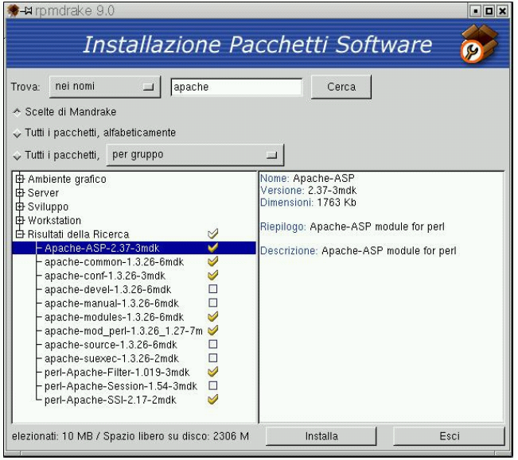
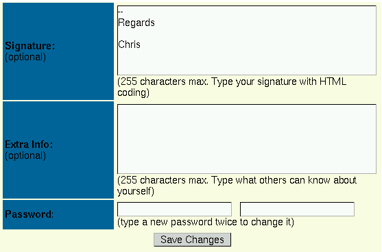
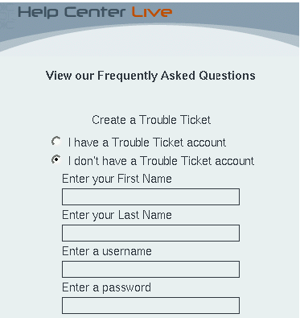
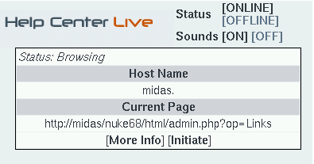
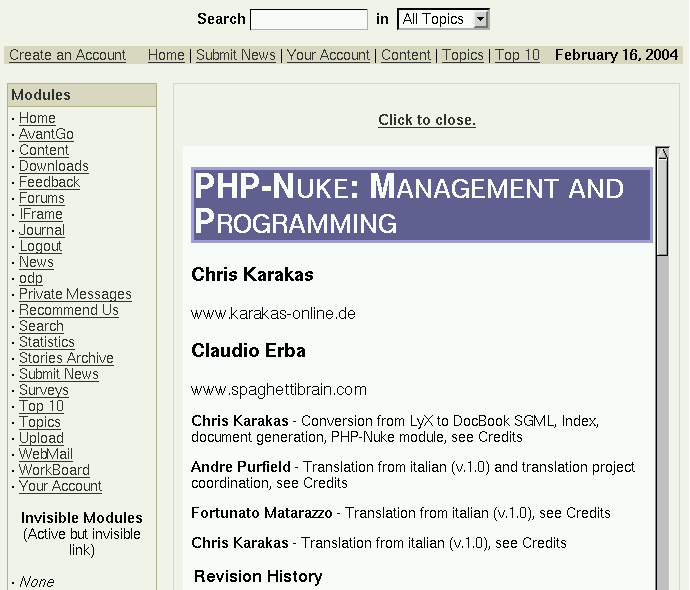
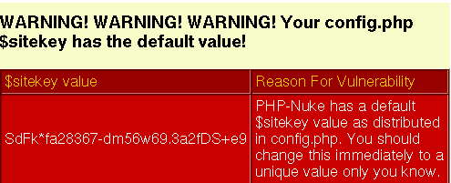
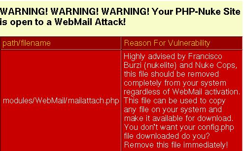

PHP-Nuke: Management and Programming
Chris Karakas
Claudio Erba
Chris Karakas - Conversion from LyX to DocBook SGML, Index, document generation, PHP-Nuke module, see Credits
Andre Purfield - Translation from italian (v.1.0) and translation project coordination, see Credits
Fortunato Matarazzo - Translation from italian (v.1.0), see Credits
Chris Karakas - Translation from italian (v.1.0), see Credits
| Revision History | ||
|---|---|---|
| Revision 2.1 | 04.08.2005 | Revised by: CK |
| Security bugfix and maintainance release. Fixed typos, made some improvements, closed a security hole in the section on How to include a HTML file and its links (thanks to waraxe for this, see http://www.waraxe.us), closed the same security hole in the PHP-Nuke module version of this document, added code for keycaps, applications, acronyms and product names in the CSS and some enhancements in jadetex.cfg. | ||
| Revision 2.0 | 16.02.2004 | Revised by: CK |
| Added more than 400 pages of additional material. See Credits section for the exact details. | ||
| Revision 1.2.1 | 22.08.2003 | Revised by: CK |
| Now available as PHP-Nuke module too. Link to the module source in the Formats section. Smaller logo. | ||
| Revision 1.2 | 29.05.2003 | Revised by: CK |
| New logo, CSS stylesheet, HTML validation, footer icons. Incorporated LDP reviewer's comments. Created Aknowledgements and Availability of sources sections. | ||
| Revision 1.1 | 13.02.2003 | Revised by: AP |
| Cleaned up the wording and a few typos. | ||
| Revision 1.0 | 09.01.2003 | Revised by: CK |
| First complete version. | ||


There has always been the necessity to have a definitive guide on PHP-Nuke. This guide describes the installation and structure of PHP-Nuke and the details of customizing the front end to suit the users' needs. The architecture of PHP-Nuke, with its modules, blocks, topics and themes is presented in detail, as well as the interplay of PHP and MySQL for the creation of a mighty content management system (CMS).It also delves into more advanced issues, like the programming of PHP-Nuke blocks and modules, security, acceleration, and optimization. Day-to-day operations and miscellaneous topics are also covered.
- Table of Contents
- 1. Terms of distribution
- 1.1. Disclaimer
- 1.2. Formats
- 1.3. Licence
- 1.4. Availability of sources
- 1.5. Credits
- 1.6. Aknowledgements
- 1.7. Conventions
- 1.8. The book behind the book
- 1.9. How to translate this HOWTO
- 2. Introduction to PHP-Nuke
- 3. How to install PHP-Nuke
- 3.1. Prerequisites
- 3.2. Installation process
- 3.3. How to install PHP-Nuke through phpMyAdmin
- 3.4. phpMyAdmin: How to administer MySQL via Web
- 3.5. How to install PHP-Nuke using nukesql.php
- 3.6. How to install PHP-Nuke locally
- 3.7. The config.php file
- 3.8. Resources
- 3.9. Common installation problems
- 3.10. Common miscellaneous errors
- 4. How to upgrade PHP-Nuke
- 5. How to move PHP-Nuke
- 6. Front end structure: user view
- 7. Back end structure: administrator view
- 8. PHP-Nuke add-ons
- 8.1. Add-on themes
- 8.2. Add-on blocks
- 8.3. Add-on modules
- 9. Architecture and structure
- 10. Session management
- 11. Editing PHP (-Nuke) files
- 12. Modifying the PHP-Nuke database
- 13. Modifying PHP-Nuke texts
- 14. Customising PHP-Nuke themes
- 14.1. Structure of a PHP-Nuke theme
- 14.2. Modifying the PHP-Nuke theme HTML template
- 14.3. Modifying the PHP-Nuke theme header
- 14.4. Modifying the PHP-Nuke theme body
- 14.5. Modifying the PHP-Nuke theme index
- 14.6. Modifying the PHP-Nuke theme footer
- 14.7. Modifying the PHP-Nuke theme icons
- 14.8. Theme construction: the rules to follow
- 14.9. How to change a buggy PHP-Nuke theme
- 14.10. How to prevent users from changing the theme in PHP-Nuke
- 14.11. How to change the PHP-Nuke theme depending on the module
- 14.12. How to change the font size in PHP-Nuke
- 15. Modifying the PHP-Nuke HTML header
- 16. Modifying mainfile.php
- 17. Modifying PHP-Nuke blocks
- 18. Modifying PHP-Nuke modules
- 18.1. Modifying any PHP-Nuke module
- 18.2. Modifying the PHP-Nuke Homepage
- 18.3. Modifying the PHP-Nuke FAQ module
- 18.4. Modifying the PHP-Nuke Reviews module
- 18.5. Modifying the PHP-Nuke Web_Links module
- 18.6. Modifying the PHP-Nuke Your_Account module
- 18.7. Modifying the PHP-Nuke News module
- 18.8. Modifying the PHP-Nuke Submit News module
- 18.9. Modifying the PHP-Nuke Sections module
- 18.10. Modifying the PHP-Nuke Downloads module
- 18.11. Modifying the PHP-Nuke Stories Archive module
- 19. Modifying the PHP-Nuke administration panel
- 20. Creating PHP-Nuke blocks
- 20.1. The characteristics of the various types of blocks
- 20.2. How to create a new block
- 20.3. Simple Content block
- 20.4. How to include PHP/HTML files in a PHP-Nuke block
- 20.5. How to use Javascript in PHP-Nuke blocks
- 20.6. How to display Flash in PHP-Nuke blocks
- 20.7. How to show advertisements in PHP-Nuke blocks
- 20.8. How to display images in PHP-Nuke blocks
- 20.9. How to display HTML forms in a block: Paypal
- 21. Creating modules
- 21.1. Module structure
- 21.2. Creating fully compatible modules: the rules to follow
- 21.3. Module creation, the public part
- 21.4. Module creation, administrator part
- 21.5. How to include a HTML file in a PHP-Nuke module
- 21.6. How to include a HTML file and its links in a PHP-Nuke module
- 21.7. How to include a HTML file and its links using an iframe in a PHP-Nuke module
- 21.8. How to include a plain text file in a PHP-Nuke module
- 21.9. How to use Javascript in PHP-Nuke modules
- 21.10. How to create a Logout module
- 21.11. How to show advertisements in PHP-Nuke modules
- 21.12. How to display HTML forms in a module
- 22. Duplicating PHP-Nuke modules
- 23. Security
- 24. Accelerating PHP-Nuke
- 24.1. Caching PHP-Nuke
- 25. Optimizing PHP-Nuke
- 26. How to solve common probems with PHP-Nuke
- 27. Miscellaneous
- 27.1. How to change the Home module
- 27.2. How to use PHP-Nuke under SSL
- 27.3. How to change PHP parameters when you don't have access to php.ini
- 27.4. How to display HTML code in a FAQ
- 27.5. How to enter thousands of web links
- 27.6. How to enter thousands of download links
- 27.7. How to check the validity of thousands of web links
- 27.8. How to enter thousands of ephemerids
- 27.9. How to make the Encyclopedia international
- 27.10. How to find the user name in a module
- 27.11. How to correct thousands of users fields
- 27.12. How to size the select boxes in a module
- 27.13. How to deal with date and time
- 27.14. How to deal with quotes in the site's name
- 27.15. How to embed a Flash object in PHP-Nuke News
- 27.16. How to backup your MySQL database using only the browser
- 28. Programmer's tools
- A. Appendix
- Index
- List of Tables
- 6-1. Classification with topics and sections
- 14-1. <body> tags in theme.php of various themes
- 16-1. Calls to filter_text from PHP-Nuke modules (v.6.8)
- 16-2. Calls to check_html from PHP-Nuke modules (v.6.8)
- 20-1. Help Center Live: setcookie() calls
- 21-1. Changing HTML links for use in a custom PHP-Nuke module
- 21-2. Alternative way of changing HTML links for use in a custom PHP-Nuke module
- 23-1. List of PHP-Nuke security vulnerabilities
- 25-1. URL replacement with replace_for_mod_rewrite(): dynamic to static.
- List of Figures
- 2-1. phpnuke.org, the official PHP-Nuke site.
- 3-1. WS_FTP: General connection parameters.
- 3-2. WS_FTP: Main screen with local and remote windows.
- 3-3. PHP-Nuke 6.0 file structure
- 3-4. WS_FTP context menu on right mouse click: chmod (UNIX)
- 3-5. WS_FTP Remote file permissions window
- 3-6. PHPMyAdmin start screen.
- 3-7. phpMyAdmin: Select database.
- 3-8. phpMyAdmin: Navigation bar.
- 3-9. phpMyAdmin: field functions.
- 3-10. phpMyAdmin: SQL function.
- 3-11. phpMyAdmin: database dump.
- 3-12. phpMyAdmin: table forum_topics.
- 3-13. phpMyAdmin: Create database.
- 3-14. phpMyAdmin: table structure and selection.
- 3-15. phpMyAdmin: SQL query.
- 3-16. phpMyAdmin: table data.
- 3-17. easyPHP: Installation screen.
- 3-18. easyPHP icon in the bottom bar.
- 3-19. phpinfo: PHP screen for a Windows system.
- 3-20. RPMdrake: selecting the Apache package(s) for installation.
- 3-21. Mandrake Control Center.
- 3-22. Red Hat Menu: Packages.
- 3-23. Red Hat: Package Sections.
- 3-24. Red Hat: Service Configuration Panel.
- 3-25. analyze.php: MySQL connection transcript.
- 3-26. analyze.php: MySQL security warning.
- 3-27. Modules administration panel.
- 3-28. Security code in the User Login screen.
- 3-29. phpinfo(): GD library information.
- 3-30. analyze.php: GD library information.
- 3-31. User Login screen.
- 3-32. Administration panel: Forums.
- 3-33. Administration panel: Forums.
- 3-34. Administration panel: Edit Admins.
- 3-35. Administration panel: Edit Admins.
- 3-36. phpMyAdmin: field functions.
- 3-37. Gzip compression in the Admin Panel of the Forums module.
- 3-38. Administration panel: Modules.
- 3-39. Missing blocks.
- 6-1. PHP-Nuke Homepage
- 6-2. Classifying articles
- 6-3. Downloads module
- 6-4. Private messages
- 6-5. Search module
- 6-6. Statistics module
- 6-7. Your account
- 6-8. Splatt Forum.
- 6-9. phpBB Forum.
- 6-10. The standard Modules block
- 6-11. Waiting Content block.
- 6-12. Who Is Online block.
- 6-13. Languages block.
- 6-14. Surveys block.
- 6-15. Login block.
- 7-1. Administration panel.
- 7-2. Administration panel: Add story.
- 7-3. Attaching a poll to an article awaiting admission.
- 7-4. Article Poll block.
- 7-5. Administration panel: Backup DB.
- 7-6. Administration panel: Banners.
- 7-7. Administration panel: Blocks.
- 7-8. Administration panel: Content.
- 7-9. Administration panel: Downloads.
- 7-10. Administration panel: Edit Admins.
- 7-11. Administration panel: Edit Users.
- 7-12. Administration panel: Encyclopedia.
- 7-13. Administration panel: Ephemerids.
- 7-14. Administration panel: FAQ.
- 7-15. Administration panel: Forums.
- 7-16. Administration panel: HTTP Referers.
- 7-17. Administration panel: Messages.
- 7-18. Administration panel: Modules.
- 7-19. Modules administration panel.
- 7-20. Administration panel: Newsletter.
- 7-21. Administration panel: Optimize DB.
- 7-22. Administration panel: Preferences.
- 7-23. Administration panel: Reviews.
- 7-24. Administration panel: Sections.
- 7-25. Administration panel: Submissions.
- 7-26. Administration panel: Surveys.
- 7-27. Administration panel: Topics.
- 7-28. Administration panel: Add a new topic.
- 7-29. Administration panel: Web Links.
- 7-30. Administration panel: Logout.
- 7-31. Administration panel: Forums.
- 7-32. Administration panel: Preferences.
- 7-33. General site info in the Preferences page.
- 7-34. Icons in the footer.
- 7-35. WebMail service options in the Preferences page.
- 8-1. Moon, Moon & Sun and Sun blocks.
- 8-2. Meteosat block.
- 8-3. Menu block with Menu Builder.
- 8-4. Treemenu block with PHP.
- 8-5. Treemenu block with Javascript.
- 8-6. Modules block. created with Sommaire Paramétrable.
- 8-7. Random Quotes block.
- 8-8. Event Calendar
- 8-9. Calendar1 Block
- 8-10. Calendar2 Block
- 8-11. Calendar3 Block
- 8-12. Calendar4 Block
- 8-13. Calendar5 Block
- 8-14. Extra options for user management in the NSN Your Account Tweak module.
- 8-15. Pending applications in the Approve Membership module.
- 8-16. Approval message in the Approve Membership module.
- 8-17. E-mail management in the Approve Membership module, part I.
- 8-18. E-mail management in the Approve Membership module, part II.
- 8-19. Gallery module.
- 8-20. Gallery related files at nukedgallery.
- 8-21. IP Tracking module: IP Tracking Info.
- 8-22. IP Tracking module: Page View Info.
- 8-23. camPortal block.
- 8-24. camPortal module.
- 8-25. ConquerCam: main window with the Options dialog opened up.
- 8-26. MyHeadlines Box containing syndicated content.
- 8-27. MyHeadlines: Subscribing to News sources.
- 8-28. PHP-Nuke Tools block
- 8-29. PHP-Nuke Tools module: Module Creator.
- 8-30. Upload module.
- 8-31. ODP module.
- 8-32. Calloways Cart module: Add Product screen.
- 8-33. Administration panel: WorkBoard.
- 8-34. WorkBoard module: Administration panel.
- 9-1. PHP-Nuke directory structure.
- 12-1. Extra Info field of User Personal Information (Your Info)
- 14-1. Structure of the NukeNews theme.
- 14-2. Structure of other themes, without HTML templates.
- 14-3. Top navigation bar in the NukeNews theme.
- 14-4. News article: “posted by” does not mean “submitted by”.
- 16-1. Administration panel: Messages.
- 17-1. The standard Modules block
- 17-2. The standard Modules block.
- 17-3. Treemenu Block.
- 17-4. Treemenu Block with “Links” expanded.
- 17-5. Treemenu Block with “My work” expanded.
- 17-6. Treemenu Block with “Linux” expanded.
- 18-1. Administration panel: Modules.
- 18-2. Administration panel: FAQ.
- 18-3. Administration panel: Reviews.
- 18-4. Administration panel: Web Links.
- 18-5. Your Info link in the User Preferences panel.
- 18-6. Forum Profile link in the Forums module.
- 18-7. User profile in Your Info.
- 18-8. User profile in the Forums.
- 18-9. Administration panel: Add story.
- 18-10. Administration panel: Submissions.
- 18-11. Waiting Content block.
- 18-12. Administration panel: Sections.
- 18-13. Administration panel: Downloads.
- 18-14. Administration panel: Add story.
- 19-1. Administration panel.
- 19-2. Administration panel: Preferences.
- 19-3. Administration panel: Newsletter.
- 20-1. Administration panel: Blocks.
- 20-2. Block example
- 20-3. Administration panel: Content.
- 20-4. Hello World block with Javascript.
- 20-5. Help Center Live: Main screen.
- 20-6. Help Center Live block: Live Support is Offline.
- 20-7. Help Center Live block: Creating a trouble ticket.
- 20-8. Help Center Live block: Live Support is Online.
- 20-9. Help Center Live block: Request monitor for the operator.
- 20-10. Help Center Live block: User notification of the operator's chat request.
- 20-11. Help Center Live block: User chat request.
- 20-12. PayPal donation button
- 20-13. PayPal donation block.
- 21-1. PHPMyAdmin: inserting values
- 21-2. Example module.
- 21-3. PHP-Nuke HOWTO included in a module with the help of an iframe.
- 21-4. Logout link in the Modules block.
- 23-1. PHP security warning from analyze.php.
- 23-2. Site key security warning from analyze.php.
- 23-3. WebMail security warning from analyze.php.
- 24-1. Accelerating PHP-Nuke.
- 24-2. Optimizing PHP code execution.
- 24-3. Powered by jpcache.
- 24-4. Cache-Lite is powered by PEAR.
- 24-5. Turck MMCache.
- 25-1. Apache section of the phpinfo() output: mod_rewrite is loaded.
- 25-2. mod_rewrite: The control flow through the rewriting ruleset
- 25-3. mod_rewrite: The back-reference flow through a rule.
- 25-4. Pattern matching with a regular expression.
- 26-1. Administration panel: Backup DB.
- 26-2. Administration panel: Backup DB.
- 26-3. phpMyAdmin: SQL query.
- 26-4. Administration panel: Modules.
- 26-5. Administration panel: Web Links.
- 27-1. Administration panel: Modules.
- 27-2. Modules administration panel.
- 27-3. Administration panel: FAQ.
- 27-4. Administration panel: Web Links.
- 27-5. Administration panel: Downloads.
- 27-6. Administration panel: Web Links.
- 27-7. Administration panel: Ephemerids.
- 27-8. Administration panel: Encyclopedia.
- 27-9. Administration panel: Downloads.
- 27-10. Downloads: Add download.
- 27-11. Downloads: Add download.
- 27-12. Downloads: Main categories with last download date.
- 27-13. Your Info profile: Timezone and Date settings.
- 28-1. CSS page area model.
- 28-2. MySQL Front: Connection
- 28-3. MySQL Front: export tables
- 28-4. MySQL Front: SQL Query
Chapter 1. Terms of distribution
1.1. Disclaimer
No liability for the contents of this documents can be accepted. Use the concepts, examples and other content at your own risk. As this is a new edition of this document, there may be errors and inaccuracies, that may of course be damaging to your system. Proceed with caution, and although this is highly unlikely, the author does not take any responsibility for that.
All copyrights are held by their respective owners, unless specifically noted otherwise. Use of a term in this document should not be regarded as affecting the validity of any trademark or service mark.
Naming of particular products or brands should not be seen as endorsements.
1.2. Formats
 | Include the PHP-Nuke HOWTO as a module in your PHP-Nuke site! |
|---|---|
You can include the PHP-Nuke HOWTO in your PHP-Nuke site as a module using either the method of Section 21.6 or the method of Section 21.7! To use the method of Section 21.6, download the PHP-Nuke module version of the PHP-Nuke HOWTO and install it according to the instruction in the accompanying INSTALL file. To use the method of Section 21.7, just make a module with an index.php file exactly as in the example shown there. It will show the starting page of the PHP-HOWTO in an iframe (Figure 21-3) and you will be able to navigate its pages without installing anything locally. You have Chris' explicit permission for this.
|
This document is available in the following formats:
HTML (HyperText Markup Language), many HTML files (one for every section), for viewing with any browser
HTML (HyperText Markup Language), one big HTML file
SGML (Standard Generalized Markup Language), (with the Appendix)
LYX (LaTeX frontend LyX), (with the Appendix)
 | RTF: Page numbers |
|---|---|
In order to get correct page numbers in Microsoft Word, type the following after opening the document:
In Word Viewer 97, you must instead do:
See The OpenJade RTF backend for more details. |
 | IMPORTANT: Downloads for offline reading! |
|---|---|
If you want to download the HTML or RTF formats for offline reading, you will need to download the images as well - PNG for HTML and BMP for RTF, including the callouts! To save you the hassle, I have compiled the following zipped tar archives for offline reading: |
TAR.GZ (Compressed TAR Archive), many HTML files with images
TAR.GZ (Compressed TAR Archive), one big HTML file with images
A tarball containing all the above formats, including images, is also available:
1.3. Licence
Copyright © version 1.0 2002 by Claudio Erba. Copyright © version 2.0 2004 by Chris Karakas and Claudio Erba. Copyright © version 2.1 2005 by Chris Karakas and Claudio Erba. Permission is granted to copy, distribute and/or modify this document under the terms of the GNU Free Documentation License, Version 1.2 or any later version published by the Free Software Foundation; with no Invariant Sections, with no Front-Cover Texts, and with no Back-Cover Texts. A copy of the license can be found in Section A.1, as well as at the GNU Free Documentation License.
Original version 1.0 by Claudio Erba, webmaster of spaghettibrain, PHP-Nuke italian Mirror, 2002. Second, revised and expanded, version 2.0 2004 by Chris Karakas and Claudio Erba (see Section 1.5 for details). Corrected 2.1 version 2005 by Chris Karakas and Claudio Erba (see Revision History for details).
This book, in all its versions (also those modified from third parties in italian, english or whichever other language), for will of the authors, may be reproduced also integrally without violating any law in asmuch as this book is released under the GNU Free Documentation License, see Section A.1.
This book:
May be modified partially or integrally creating manuals for companies, agencies or persons who deal with formatting, changing either the diagram or the contents or the pagination.
May be distributed either in its original or in modified form, or either in electronic or in paper format from either field periodicals or not, Internet sites and whichever other medium.
May be used as internal manual by companies, public or private agencies, or universities .
May be used distributed by universities as a hand-out.
May even be resold without having to recognize any type of royalty to the authors on the condition that the purchasers be granted the freedom of making even integral copies, redistribute or resell them.
1.4. Availability of sources
See Section 1.2 for the modifiable sources of this document. These are the official versions. We (the authors, translators and current maintainers) plan to continue work on this document and add new chapters and enhancements. If you want to see the version we are currently working on (the “bleeding edge” version), check PHP-Nuke: Management and Programming from time to time.
The modifiable sources of Claudio's text (in italian), the images and example files are available in sxi format (OpenOffice Impress)[1] on Downloads Area PHPNuke BOOK - LIBRO on spaghettibrain.
1.5. Credits
This section documents the efforts that have been invested into this document by its authors, contributors and the community. We tried hard to give credit where credit is due. However, this does not mean that we used only the sources mentioned explicitly here, in this section. Numerous other sources of information have been used, mainly Forums, such as:
Whenever a source has been used, we have included a link to it. Thus, depending on the context, you should interpret the links in this document not only as a source of further information on a subject, but also as Credit and a “Thank you” for the idea, the explanation, the discussion or the piece of code it offers. If you feel we have ovelooked something, please feel free to contact us.
We do not offer a Bibliography, as strict academic criteria would require, but this may change in the future, as Chris is working on a solution to the Bibliography problem in the context of LyX and SGML.
| How to enter hundreds of references in LyX |
|---|---|
If you look in the following Section 1.5.1, Section 1.5.2 and especially Section 1.5.3, you will notice the exceptionally large number of cross-references that had to be entered. Although a single cross-reference is inserted very easily in LyX (just choose Insert->Cross-reference from the menu, then choose the label of the reference you want), it becomes a real pain if you have to enter hundreds of them, as in our case. Chris' solution to this was to write a script that reads a LyX file and outputs another LyX file that contains references to all labels of the first one. It was easier to copy the references from the file thus created, paste them in Section 1.5.3(which deals with version 2.0), then delete references to parts that already existed in version 1.0, than try to insert references to all new parts of version 2.0 by using the menu. You can read about Chris' script in Mass insertion of cross-references in LyX. |
1.5.1. Version 1.0
This book started in version 1.0 as a document in italian language, written by Claudio Erba. It contained:
Chapter 1, consisting of Section 1.1, Section 1.2, Section 1.3, Section 1.4 and Section 1.6. This was Chapter 1 of version 1.0.
Chapter 2, consisting of Section 2.1, Section 2.2, Section 2.3, Section 2.4, and Section 2.5. This was Chapter 2 of version 1.0.
Chapter 6, consisting of Section 6.1, a section on AvantGO, now removed, Section 6.2 and Section 6.3. This was Chapter 3 of version 1.0.
Chapter 7, consisting of Section 7.1 and Section 7.2. This was Chapter 4 of version 1.0.
Chapter 3 consisting of Section 3.2, Section 3.2.1, Section 3.2.2, Section 3.2.3, Section 3.3, Section 3.3.1, Section 3.4.5, Section 3.7 and Section 3.8. This was Chapter 5 of version 1.0.
Chapter 9, consisting of Section 9.1, Section 9.2, Section 9.3, and Section 9.4. This was Chapter 6 of version 1.0.
Chapter 14, consisting of Section 14.1, Section 14.2, Section 14.2.1 and Section 14.8. This was Chapter 7 of version 1.0.
Chapter 20, consisting of Section 20.1, Section 20.2, Section 20.2.1, Section 20.2.2. This was Chapter 8 of version 1.0.
Chapter 21, consisting of Chapter 21, Section 21.1, Section 21.2, Section 21.3 and Section 21.4. This was Chapter 9 of version 1.0.
Chapter 23, consisting of Section 23.4.4, Section 23.4.5 and Section 23.4.5.1. This was Chapter 10 of version 1.0.
Chapter 28, consisting of Section 28.1, Section 28.5, Section 3.4, Section 3.3.1, Section 3.3.2, Section 28.6 and Section 28.7. This was Chapter 11 of version 1.0.
Version 1.0 came with the following figures:
Figure 6-1, Figure 6-2, Figure 6-3, Figure 6-4, Figure 6-5, Figure 6-6, Figure 6-7, Figure 6-8, Figure 7-1, a screenshot of the News articles that has been removed, Figure 3-3, Figure 3-6, Figure 3-14, Figure 3-15, Figure 3-16, Figure 3-11, Figure 20-2, Figure 21-1, Figure 21-2, Figure 3-12, Figure 28-2, Figure 28-3, Figure 28-4.
Version 1.0 contained no tables.
Andre Purfield of Open Source Solutions started the translation project (see the PHP-Nuke book translation thread at nukeforums) and coordinated the work of the translators. Fortunato Matarazzo made the transaltion of the version 1.0 Chapters 7, 8 and 9 (see above). Chris Karakas translated the rest. Andre imported Fortunato's part into LyX, remade many of the screenshots and also made corrections to the english text of the whole document. Chris imported his part in LyX, formatted the whole document, created the Index and processed the LyX file through his scripts (see Section 1.8, for details) to render all the versions and files available from Section 1.2.
Chris also made PNG, PDF (encapsulated PDF), EPS (encapsulated Postscript) and BMP versions of all figures. The PDF and EPS versions are included in the PDF and PS versions of the document respectively. The PNG and BMP versions are used by the HTML and RTF versions of the document respectively and are supplied separately in the images folder.
1.5.2. Versions 1.x
In the 1.x versions, various improvements have been made on the document, as can be seen in the Revision History in the front page:
Version 1.1: Andre Purfield of Open Source Solutions cleaned up the wording and a few typos.
Version 1.2: Chris Karakas made various improvements:
Added a new logo.
Added a CSS stylesheet for DocBook.
Took care of HTML validation (all HTML pages now are validated as conforming to the HTML 4.01 Transitional standard[2]).
Added footer icons that have the following property: if you click on them, they validate, depending on the icon, either the HTML code or the CSS code of the page being currently viewed.
Added translation links in the header and footer: in the header of each page, you will find links to Google's automatic translation of that page into 5 languages - french, german, italian, portuguese and spanish. In the footer of each page, on the other hand, you will find links to Alta Vista's automatic “Babelfish” translation of that page into 8 languages: chinese, german, japanese, korean, french, italian, portuguese and spanish.
Incorporated LDP reviewer's comments.
Created Section 1.4 and Section 1.6.
Version 1.2.1: Chris created the PHP-Nuke HOWTO module for PHP-Nuke, a module that integrates this HOWTO into your PHP-Nuke site (you could install this module too, tip, tip!). Chris added a link to it in the Formats section (Section 1.2) and made a smaller logo.
Due to Chris' efforts, starting from version 1.2 this document is an official HOWTO of the Linux Documentation Project.
Also, starting from PHP-Nuke version 6.7 FINAL, this document is included in the docs folder of the standard PHP-Nuke package, as the official PHP-Nuke guide.
In all 1.x versions after 1.0, the original italian text has undergone no changes other than those related to translation. But behind the scenes, Chris and Claudio were working fervently for the next version 2.0, which was going to bring dramatic improvements, as you can read in Section 1.5.3. 
1.5.3. Version 2.0
In version 2.0, Chris Karakas added the following Chapters and Sections:
In Chapter 1: Section 1.5, Section 1.5.1, Section 1.5.2, Section 1.5.3, Section 1.5.5, Section 1.7, Section 1.8, Section 17.2.2.1, Section 1.8.2 and Section 1.9.
In Chapter 2: Section 2.6, Section 2.6.1, Section 2.6.2 and Section 2.6.3.
In Chapter 3: Section 3.1, Section 3.2.4, Section 3.6, Section 3.6.2, Section 3.6.3, Section 3.7.1, Section 3.7.1.1, Section 3.7.1.2, Section 3.9, Section 3.9.1, Section 3.9.1.1, Section 3.9.1.2, Section 3.9.1.3, Section 3.9.2, Section 3.9.3, Section 3.9.4, Section 3.9.5, Section 3.9.6, Section 3.9.7, Section 3.9.8, Section 3.9.8.1, Section 3.9.9, Section 3.9.10, Section 3.9.11, Section 3.9.12, Section 3.9.13, Section 3.9.14, Section 3.9.15, Section 3.9.16, Section 3.9.17, Section 3.9.18, Section 3.9.19, Section 3.9.20, Section 3.9.21, Section 3.9.22, Section 3.9.23, Section 3.10, Section 3.10.1 and Section 3.10.2, Section 3.10.3, Section 3.10.4 and Section 3.10.5.
In Chapter 4: Section 4.1, Section 4.1.1, Section 4.1.2, Section 4.2.
In Chapter 5: Section 5.1 and Section 5.2.
The whole Chapter 8: Section 8.1, Section 8.1.1, Section 8.2, Section 8.2.1, Section 8.2.2, Section 8.2.3, Section 8.2.4, Section 8.2.5, Section 8.2.6, Section 8.2.7, Section 8.2.8, Section 8.3, Section 8.3.1, Section 8.3.2, Section 8.3.3, Section 8.3.4, Section 8.3.5, Section 8.3.6, Section 8.3.7, Section 8.3.8, Section 8.3.9, Section 8.3.10, Section 8.3.11, Section 8.3.12, Section 8.3.13, Section 8.3.14 and Section 8.3.15.
The whole Chapter 10: Section 10.1 and Section 10.2.
The whole Chapter 11: Section 11.1, Section 11.2, Section 11.3, Section 11.4, Section 11.5, Section 11.6, Section 11.7, Section 11.8 (FIXME: Well, this may not be finished by the time version 2.0 is released, but the will to write it was certainly there! :-) ).
The whole Chapter 12: Section 12.1.
The whole Chapter 13: Section 13.1, Section 13.2, and Section 13.3.
In Chapter 14: Section 14.3, Section 14.3.1, Section 14.3.2, Section 14.3.3, Section 14.3.4, Section 14.3.5, Section 14.3.6, Section 14.3.7, Table 14-1, Section 14.3.8, Section 14.3.9, Section 14.4, Section 14.4.1, Section 14.4.2, Section 14.5, Section 14.6, Section 14.6.1, Section 14.6.2, Section 14.7, Section 14.9, Section 14.10, Section 14.11 and Section 14.12.
The whole Chapter 15: Section 15.1 and Section 15.2.
The whole Chapter 16: Section 16.1, Section 16.2 and Section 16.3.
The whole Chapter 17: Section 17.1, Section 17.2, Figure 17-1, Section 17.2.1, Section 17.2.2, Figure 17-2, Section 17.2.2.1, Figure 17-3, Figure 17-4, Figure 17-5, Figure 17-6, Section 17.2.2.2, Section 17.3 and Section 17.4.
The whole Chapter 18: Section 18.1, Section 18.1.1, Section 18.1.2, Section 18.2, Section 18.2.1, Section 18.2.2, Section 18.3, Section 18.3.1, Section 18.4, Section 18.4.1, Section 18.4.2, Section 18.5, Section 18.5.1, Section 18.5.2, Section 18.6, Section 18.6.1, Section 18.6.2, Section 18.6.3, Section 18.6.4, Section 18.6.5, Section 18.6.6, Section 18.6.7, Section 18.6.8, Section 18.7, Section 18.7.1, Section 18.8, Section 18.8.1, Section 18.8.1.1, Section 18.9, Section 18.9.1, Section 18.10, Section 18.10.1, Section 18.11 and Section 18.11.1.
The whole Chapter 19: Section 19.1 and Section 19.2.
In Chapter 20: Section 20.3, Section 20.4, Section 20.5, Section 20.5.1, Section 20.5.2, Section 20.5.3, Table 20-1, Section 20.7, Section 20.8, Section 20.8.1, Section 20.9.
In Chapter 21: Section 21.5, Section 21.6, Table 21-1, Table 21-2, Section 21.7, Section 21.8, Section 21.9, Section 21.9.1, Section 21.9.2, Section 21.10, Section 21.11, Section 21.11.1, Section 21.11.2, Section 21.12,
The whole Chapter 22: Section 22.1.
In Chapter 23: Section 23.1, Section 23.2, Section 23.3, Section 23.3.1, Section 23.3.2, Section 23.3.3, Section 23.3.4, Section 23.4, Section 23.4.1, Section 23.4.2, Section 23.4.3, Section 23.4.4 (some changes), Section 23.4.5.2, Section 23.5 and Section 23.6.
The whole Chapter 24: Section 24.1, Section 24.1.1, Section 24.1.1.1, Section 24.1.1.2, Section 24.1.1.3, Section 24.1.2, Section 24.1.2.1, Section 24.1.2.2, Section 24.1.3, Section 24.1.3.1, Section 24.1.3.1, Section 24.1.3.3 and Section 24.1.4.
The whole Chapter 25: Section 25.1, Section 25.1.1, Section 25.2, Section 25.2.1, Section 25.2.2, Section 25.2.3, Section 25.2.4, Section 25.3, Section 25.4, Section 25.5, Section 25.5.1, Section 25.5.1.1, Section 25.5.1.2, Section 25.5.1.3, Table 25-1, Section 25.6 and Section 25.7.
In Chapter 26: Section 25.8, Section 26.1, Section 26.5, Section 26.6 and Section 26.7.
The whole Chapter 27: Section 27.1, Section 27.2, Section 27.3, Section 27.4, Section 27.5, Section 27.6, Section 27.7, Section 27.8, Section 27.9, Section 27.10, Section 27.11, Section 27.13, Section 27.13.1, Section 27.13.2, Section 27.13.3, Section 27.14, Section 27.15 and Section 27.16.
In version 2.0, Claudio Erba added the following Chapters and Sections:
In Chapter 3: Section 3.4, Section 3.4.1, Section 3.4.2, Section 3.4.3, Section 3.4.4, Section 3.5, Section 3.6.1, Section 3.6.1.1, Section 3.6.4 and Section 3.6.5.
In Chapter 4: The introductory text (Chapter 4) and Section 4.3.
In Chapter 6: A lot of additions and improvements in the whole chapter: Section 6.1, Section 6.2, Section 6.3.
In Chapter 7: A lot of additions and improvements in the whole chapter: Section 7.1, Section 7.1.1 (which was added in this version) and Section 7.2.
In Chapter 9: Some changes in Section 9.1 and Section 9.2.
In Chapter 26: Section 26.2, Section 26.2.1, Section 26.2.2, Section 26.3, Section 26.3.1, Section 26.3.2, Section 26.3.3 and Section 26.4.
In Chapter 28: Section 28.2, Section 28.2.1, Section 28.2.2, Section 28.2.3, Section 28.2.4, Section 28.3, Section 28.4, Section 28.4.1, Section 28.4.2 and Section 28.4.3.
| Note |
|---|---|
As you can see, almost all labels of version 1.0 have been preserved in version 2.0 too. More specifically, all labels that give rise to HTML files have been preserved in the LyX file. That's no coincidence: Cool labels don't change! |
Chris translated Claudio's additions from italian and inserted some additions and many cross-references. On the other hand, some of Claudio's information has found its way in the sections added by Chris.
We have added the GNU Free Documentation Licence in the Section A.1.
The following figures have been added in version 2.0:
Chris added: Figure 3-4, Figure 3-5, Figure 3-25, Figure 3-26, Figure 3-27, Figure 3-28, Figure 3-29, Figure 3-30, Figure 3-31, Figure 3-32, Figure 3-33, Figure 3-34, Figure 3-35, Figure 3-37, Figure 3-38, Figure 3-39, Figure 6-9, Figure 6-10, Figure 6-11, Figure 6-13, Figure 7-2, Figure 7-3, Figure 7-4, Figure 7-5, Figure 7-6, Figure 7-7, Figure 7-8, Figure 7-9, Figure 7-10, Figure 7-11, Figure 7-12, Figure 7-13, Figure 7-14, Figure 7-15, Figure 7-16, Figure 7-17, Figure 7-18, Figure 7-19, Figure 7-20, Figure 7-21, Figure 7-22, Figure 7-23, Figure 7-24, Figure 7-25, Figure 7-26, Figure 7-27, Figure 7-29, Figure 7-30, Figure 7-31, Figure 7-32, Figure 7-33, Figure 7-34, Figure 7-35, Figure 8-1, Figure 8-2, Figure 8-3, Figure 8-4, Figure 8-5, Figure 8-6, Figure 8-7, Figure 8-8, Figure 8-9, Figure 8-10, Figure 8-11, Figure 8-12, Figure 8-13, Figure 8-14, Figure 8-15, Figure 8-16, Figure 8-17, Figure 8-18, Figure 8-19, Figure 8-20, Figure 8-21, Figure 8-22, Figure 8-23, Figure 8-24, Figure 8-25, Figure 8-26, Figure 8-27, Figure 8-28, Figure 8-29, Figure 8-30, Figure 8-31, Figure 8-32, Figure 8-33, Figure 8-34, Figure 12-1, Figure 14-3, Figure 14-4, Figure 16-1, Figure 17-1, Figure 17-2, Figure 17-3, Figure 17-4, Figure 17-5, Figure 17-6, Figure 18-2, Figure 18-3, Figure 18-4, Figure 18-5, Figure 18-6, Figure 18-7, Figure 18-8, Figure 18-9, Figure 18-10, Figure 18-11, Figure 18-12, Figure 18-13, Figure 18-14, Figure 19-1, Figure 19-2, Figure 19-3, Figure 20-1, Figure 20-3, Figure 20-4, Figure 20-5, Figure 20-6, Figure 20-7, Figure 20-8, Figure 20-9, Figure 20-10, Figure 20-11, Figure 20-12, Figure 20-13, Figure 21-3, Figure 21-4, Figure 23-1, Figure 23-2, Figure 23-3, Figure 24-1, Figure 24-2, Figure 24-3, Figure 24-4, Figure 24-5, Figure 25-1, Figure 25-2, Figure 25-3, Figure 25-4, Figure 26-1, Figure 26-3, Figure 26-4, Figure 26-5, Figure 27-1, Figure 27-2, Figure 27-3, Figure 27-4, Figure 27-5, Figure 27-6, Figure 27-7, Figure 27-8, Figure 27-9, Figure 27-10, Figure 27-11, Figure 27-12, Figure 27-13 and Figure 28-1.
Claudio added: Figure 2-1, Figure 3-1, Figure 3-2, Figure 3-7, Figure 3-8, Figure 3-9, Figure 3-10, Figure 3-13, Figure 3-17, Figure 3-18, Figure 3-19, Figure 3-20, Figure 3-21, Figure 3-22, Figure 3-23, Figure 3-24, Figure 3-36, Figure 6-12, Figure 6-14, Figure 6-15, Figure 7-28, Figure 9-1, Figure 14-1, Figure 14-2, Figure 26-2 and Figure 27-2.
Again, as in version 1.0, Chris made PNG, PDF (encapsulated PDF), EPS (encapsulated Postscript) and BMP versions of all figures to be used in the various formats of the document.
The following tables have been added in version 2.0:
Chris added: Table 6-1, Table 14-1, Table 16-1, Table 16-2, Table 20-1, Table 21-1, Table 21-2, Table 23-1 and Table 25-1.
Chris wrote all new material of version 2.0 in LyX, formatted the whole document, created the Index (semi-automatically this time, through some of his sed and awk scripts, as described in Document processing with LyX and SGML) and processed the LyX file through his scripts (see Section 1.8, for details) to render all the versions and files available from Section 1.2.
1.5.4. Version 2.1
In version 2.1, Chris Karakas added the following Chapters and Sections:
In Section 21.5: how to include two files side-by-side in a module.
1.5.5. General
Some quotes have been taken from the installation files of phpnuke.org, as well as from the MySQL manual.
In Section 25.3 we use material taken from A Brief Introduction to Regular Expressions.
The sections on mod_rewrite: Section 25.2.1, Section 25.2.2, Figure 25-2, Section 25.2.3 and Section 25.2.4 have been taken from the Apache Documentation of mod_rewrite.
Section 10.1 and part of Section 10.2 were taken from a post of Paul S. Owen, Development Team Leader of phpBB, in http://www.phpbb.com/phpBB/viewtopic.php?t=69493, as well as in http://www.phpbb.com/kb/article.php?article_id=54 and are included here with permission.
Figure 28-1 is taken from W3C's working draft CSS3 Paged Media Module, version of Dec. 18th 2003 and is Copyright © 2003 W3C (MIT, ERCIM, Keio), All Rights Reserved. Used with permission according to W3C document licence.
The examples for admonition in the Conventions Section (Section 1.7) were taken from the Section on admonitions of the DocBook Guide of the Debian Newbiedoc Project.
The CSS file for DocBook that is used in this document , ck-style.css, uses QBullets in links. See Explain CSS on how to do this. Thanks to Matterform Media for providing QBullets for free. If you plan to use them on your website, please observe the QBullets usage terms.
The CSS also got important elements from the Newbiedoc CSS file for DocBook and Mark Pilgrim's influential dive into Accessibility. The CSS font size controlling code and its explanation are taken from Using relative font sizes.
1.6. Aknowledgements
Claudio said in the first version (1.x) of this document:
The following people contribute, directly or indirectly to this project and their help is hereby kindly aknowledged:
Francisco Burzi with all the introductory scripts, found in the files of installation of PHP-Nuke
Vasco Clergy and his daughter Valentina of Lug Rieti for the translations of the modules of the handbook
Micaela Bechini, for the daily translations of phpnuke.org from English.
The communities of Splatt.it, Nukeitalia.com, PHPnuke.it (and its Mailing List), Postnuke.it, envolution.it, xoops.it and obviously the 1500 registered users of spaghettibrain.
Aemmenet, in the person of Mark Atzori that has granted us free use of the server on which spaghettibrain is accommodated.
Roberto Scano of IWA Italy and Patrizia Bertini of Webaccessibile.org for the contributions on usability, accessibility and W3C validation.
Marcello Tansini of webmasterpoint.org for the support given to the project in terms of visibility.
Andrea Birgahi, the best PHP-Nuke Theme Maker of the world for the diagram of spaghettibrain, for the logo of the book and a lot more.
My girl Sara for all...
My mother Lella, my sister Cora, my dog Grey and the newly arrived baby dog Maya.
This book I dedicate it to my Papà Antonio. Hello Pà.
For this second version (2.x), Claudio wishes to thank:
Francisco Burzi, the daddy of PHPNuke, who has chosen this book as the official PHP-Nuke handbook!
The translator and the manager team of the PHP-Nuke HOWTO: Chris Karakas, Andre Purfield, Fortunato Matarrazzo.
Umberto Zaccarini of WMG Italia.
Euro Gala of Eticoweb, for the operative and ethical support.
Florence University, because after reading my book they called me to give a course of CMS at Multimedia Master; in particular D.ssa Barbara Iraci, Dott. Diego Mencarelli and Dott. Del Bimbo. Thanks to every master student, too.
My team, the Crew Spaghetti, Andrea Biraghi, Federico Campoli, Fabio Pirovano, Claudio Demarinis and the casual externals Alex Zollia, Micaela Bechini, VirtualDarkness.
Michel "Ziobudda" Morelli, Fabio Farnesi (programmiamo.net), Giovanni Tummarello (wup.it), Roberto Scano (IWA Italia), Anna Bruno (fullpress.it), Alessandro Del Rosso and the De Andreis brothers (punto-informatico.it), for the mediatic space they give me every time.
My mother Lella, my sister Cora, my dogs Maia and Grey.
My Sara for everything.
Chris wishes to thank:
Francisco Burzi, for writing PHP-Nuke and publishing it under the GNU General Public License.
Claudio Erba for bringing the ball in rolling.
Andre Purfield for starting this wonderful project in the PHP-Nuke book translation thread at nukeforums.com.
All software developers, whose software is used in the preparation of this document (see Section 1.8):
nukeforums for providing a Forum for the initial stages of this project (see the PHP-Nuke book translation thread), as well as all its numerous readers for their questions and answers - who have influenced many solutions presented in this document. Special thanks go to its most active members
for all the useful advice. I've learned a lot from you!
Paul S. Owen for his contribution in Chapter 10 on session management.
Mark Pilgrim for writing Dive into Accessibility and publishing it under the GNU Free Documentation License.
All authors of documentation used in various places (see Section 1.5):
Matterform Media for providing QBullets for free.
Didi for Figure 24-2.
Martin Kaspar for inspirating discussions on PHP-Nuke documentation.
All visitors of the Karakas Online PHP-Nuke Forum for their kind remarks and suggestions for the improvement of the document, especially: nikits72,
Last, but not least, Gloomy for all the moral support during the hard times.
The translators would like to thank the Linux Documentation Project (TLDP) and its reviewers, especially Tabatha Marshall and Greg Ferguson for their comments and efforts to make this document available from TLDP's plattform to a wider audience.
1.7. Conventions
- admonitions
Admonitions are little pictures used to emphasize something of importance to the reader. The four types used are:
Note Using a hammer to put together your computer is bad.
Tip Do not hit your thumb with the hammer, it hurts!
Important Watch where you're swinging that hammer!

Caution Hitting your thumb with a hammer may lead to an unwanted trip to the hospital!

Warning Do not, under any circumstances, admit that you hit your own thumb with a hammer. The ridicule you will face is astounding!
- Access keys
Access keys enable navigation through the document, without relying on a mouse. The following keys have been given special meaning in this document:
- P
Previous page.
- N
Next page.
- H
Home of the document (Table of Contents).
- U
Up (takes you one level up the section hierarchy).
If you also happen to be reading the document from its original location, then the following access keys can also be used:
- S
Start (takes you to the author's start page).
- T
The current (“This”) page, without the Sitemenu on the left.
- M
The current page in a frameset, where the left frame contains a Menu.
To use the access keys, you have to simultaneously press a modifier key, which may vary from browser to browser. For example in NN6+/Mozilla, the modifier key is ALT, so you have to use
ALT-N
to go to the next page, and
ALT-P
to come back. In other browsers such as IE6, the access keys just give focus to the associated link, so the sequence becomes
ALT-N Enter
. Try it, you'll like it! 
1.8. The book behind the book
Do you want to create professionally formatted documents? Tired of always having to change the font settings, to insert or delete pagebreaks, to format your text for printing, monitor, or web view? Do you find yourself spending hours of your life into formatting issues that you wish you never had to be conftonted with? Did you, during your editing efforts, ever get the uncomforting feeling that you are inventing the wheel for th 39th time?
Well, in fact you are! You can use the power of Open Source tools like LyX and sgmltools to create the documents you've dreamed of, while, as a nice side effect, concentrating on what deserves most of your attention: Content, not Formatting! In Document processing with LyX and SGML, Chris Karakas describes a method by which all you have to do is to write your document in LyX, then run the .lyx file through a script that will produce the SGML source and, from it, the HTML, TXT, RTF, PDF and PS formatted documents (as in Section 1.2), complete with table of contents, embedded pictures, fonts, thumbnails (for PDF) and other goodies - just as in the document you are reading right now!
That is, to learn how to produce a book like this one, you have to read the book behind the book. 
1.8.1. The general idea
When writing LyX documents, formatting should be the last thing on your mind. Concentrate on writing a clear and c oncise document. The sgml parser will take care of the formatting.We've all heard of WYSIWYG. LyX is WYGIWYM. WYGIWYM stands for "What You Get Is What You Mean". This means if you mean for text to represent source code you assign it a source code environment (Lyxese for style), and it formats the way you meant it to. You needn't worry about formatting during the writing of your document. If you don't like the way it looks upon finishing and printing it out, you can change the way styles map to formatting, and those styles will consistently change throughout the document.
1.8.2. Line of attack
The method described in Document processing with LyX and SGML follows a line of attack defined by the following:
We put everything in a shell script. We don't want to bother about anything else. We want to ponder comfortably upon the meaning of life while drinking some coffee or tea, watching our computer do the work for us - personally, a very rewarding experience :-)
We use sed to correct LyX' SGML output. The more we are able to correct, the more SGML features we get out of our plain vanilla LyX.
We use the sgmltools package which hides a lot of details from the end user, giving nonetheless all the power of the involved tools.[3]
We will adapt the DocBook DSSSL stylesheets to our personal needs and taste..
The end product shall be a directory ready to upload to our web server with all files, links, images and formats necessary.
So you got appetite and want to delve into the gory details? Read the book behind this book: Document processing with LyX and SGML! 
1.9. How to translate this HOWTO
The PHP-Nuke HOWTO started also as a translation. You can read how it all started in PHP-Nuke book translation thread at nukeforums.com.
The best way to do the translation would be to install the LyX. Chris still uses an old version (1.2.0) of it, but you could try the newest one and we will see if his document processing scripts still work. 
The process is the following (see, for example, Greek Translation of Php-Nuke HOWTO and New language translation howto):
You take the LyX version of the book from the Formats section (Section 1.2), you do the translation in LyX, then send it to Chris Karakas (chris at karakas-online dot de).
Chris will use his scripts (Section 1.8) to export the LyX document to SGML, correct the SGML that comes out of LyX, then produce all other formats, as in Section 1.2).
The advantage of this method is that you only need to translate the words, leaving everything else (like "environments", SGML tags etc.) untouched. This way paragraphs, admonitions (see Section 1.7), callouts (those small numbers in circles that you see in some code examples, as in Section 3.7), code environments etc., all remain intact - and you don't need to recreate them.
We are in search of available volunteers to translate this book in as many languages as possible. In the case you are interested in translating this book, write to chris at karakas-online dot de, or PHP-Nuke HOWTO. Be prepared for months of hard work, as this is 500 pages of printed material!
Chapter 2. Introduction to PHP-Nuke
2.1. Purpose
There has always been the necessity to have a definitive guide on PHP-Nuke. Due to time constraints, nobody has ever had the will to carry out this operation.
Not any more! With this book, PHP-Nuke now posesses the most comprehensive guide on the subject, suitable for newbies and advanced users alike!
2.2. What Is PHP-Nuke
PHP-Nuke is free software, released under the GNU License.
It is a CMS (Content Managment System) that integrates in its inside all the instruments that are used to create, in a broad sense, an information portal (Figure 2-1). Given the immense number of present functions in the installation and in an even greater quantity of modules developed from third parties, the system is also adept to the management of
Intranet business,
e-commerce systems,
corporate portals ,
public agencies,
news agencies,
online companies,
information sites,
e-learning systems
and so on...
PHP-Nuke utilizes as hinge of its own structure the duo PHP+ MySQL, very often being accompanied by the Apache web server. Many modules have integrated many other languages, such as Javascript, Java, Flash and also even systems that serve, through the portal, sounds and films in streaming mode (Online Radio, TV Online, Images, Files...). From version 6.x onwards, the compatibility has been extended to include other databases as well, in order to extend the user base even more vastly.
PHP-Nuke is developed with a particular eye to the suggestions of the W3C, in its origin, the code is in fact W3C compliant and one has validated both the code and the style sheets. It is then up to the user who intends to create a portal to adhere to these standards during the modification of the graphics or the intrinsic characteristics of the system.
The personalisation either of the graphical, or of the programming part has only a single limit, the fantasy and capability of the programmer and web designer.The presence of many PHP-Nuke sites similar to each other is due mainly to the lack of time of those who created them or the fear that the phase of personalisation is too difficult on a technical level. In fact, it suffices to let oneself be inspired by the available themes, in order to realize how easy it is to sew a new dress to one's portal.
Francisco Burzi, father and mother of PHP-Nuke, describes his creation as follows:
PHP-Nuke is a Web Portal System, storytelling software, News system, online community or whatever you want to call it. The goal of PHP-Nuke is to have an automated web site to distribute news and articles with users system. Each user can submit comments to discuss the articles, just similar to Slashdot and many others.
Main features include: web based admin, surveys, top page, access stats page with counter, user customizable box, themes manager for registered users, friendly administration GUI with graphic topic manager, option to edit or delete stories, option to delete comments, moderation system, Referers page to know who link us, sections manager, customizable HTML blocks, user and authors edit, an integrated Banners Ads system, search engine, backend/headlines generation (RSS/RDF format), and many, many more friendly functions.
PHP-Nuke is written 100% in PHP and requires Apache Web server, PHP and a SQL (MySQL, mSQL, PostgreSQL, ODBC, ODBC_Adabas, Sybase or Interbase). Support for 25 languages, Yahoo like search engine, Comments option in Polls, lot of themes, Ephemerids manager, File Manager, Headlines, download manager, faq manager, advanced blocks systems, reviews system, newsletter, categorized articles, multilanguage content management and a lot more.
2.3. Short history of PHP-Nuke
Francisco Burzi, describes the history of PHP-Nuke as follows:
PHP-Nuke is a free software, released under the GNU GPL License, version 2.0. PHP-Nuke is the result of many years administrating a news site called Linux Preview. First, around August 1998, I wrote my own code in Perl called NUKE and used it for about 1 year, then my site grew big, so I needed a more powerfull system and decided to use Slash, the same used in the Slashdot site. It's good, but you realy need to know Perl to modify it, need too many modules, need to load a damn daemon that sucks all your CPU power. My Pentium III just appeared to be a 386 each minute the daemon made its work.
Well, then I discovered Thatware, a good project to have a news site under PHP. I learned PHP in less than a week and began modifying it. There are too many mods to mention, it was practicaly a rewrite. I added some cool stuff, deleted some others and after more than 380 hours of hard work in 3 weeks! PHP-Nuke was born.
On August 17, 2000 I sold LinuxPreview.org to LinuxAlianza.com and now I have all the time to dedicate to the development of PHP-Nuke.
From January 2001 to January 2002, PHP-Nuke has been financially supported by MandrakeSoft, the folks that made Mandrake Linux. This gave me and PHP-Nuke a lot of oxygen and made possible a lot of stuff.
Now, I'm alone with this killer project. There is a lot of help from the people that use and develop modules and themes. Now, phpnuke.org is a big site with a lot of users and helpful information for any user around the world. There are also strong users community sites in almost any language you can imagine. Just go to phpnuke.org and enjoy this great community!
2.4. The PHP-Nuke Communities
A careful look is due to the true value of PHP-Nuke, that is the communities that you will find all around. Thanks to the voluntary job of these persons, of these sites, PHP-Nuke has become a well-known system and it is always thanks to them that PHP-Nuke is a multilanguage system that supports more than 25 languages.
Even the modules have been created mostly from developers in external communities and have, in second round, been included in new distributions of PHP-Nuke.
There are communities out there who are solely devoted to the creation of new graphical themes of PHP-Nuke, to technical support, file mirroring as well as a real lot of multilingual communities that take care of their members informing them in their local language, thus creating new personal ties and more focused projects.
Nukeforums.com: Technical support to PHP-Nuke.
Nukecops: Official PHP-Nuke development team.
Karakas-Online PHP-Nuke Forum: Chris' PHP-Nuke Forum.
Nukedownloads.com: File mirror for downloads.
nukeresources.com: Downloads
nukefixes.com: Fixes for PHP-Nuke bugs.
nukesecurity.com: PHP-Nuke security.
Somara.com: Themes and graphics.
Nukethemes.com: Themes and graphics.
Ecomjunk.com: Addons and modules.
Nukeaddn.com: Addons and modules.
Communities in Italian language:
Thanks to the work of these portals and single persons we have more than 500 different modules and blocks that may be used to personalize our portal, in areas varying from the weather (Section 8.2.2) to e-commerce (Section 8.3.14), from gallery (Section 8.3.5) to chat realized in flash and videogames in Java, all included in the layout of PHP-Nuke.
2.5. Why use PHP-Nuke and not static HTML pages
Because managing large sites with only static HTML pages is dangerous for your health.
Because through the dynamic pages, users can interact (Forum, chat)
Because through the dynamic pages we can offer value added services (restricted areas, various services based on user classification...)
Because the information is more easily catalogued.
Because with a few PHP pages we recall a lot of information.
Because keeping the contents up-to-date does not demand particular technical expertise and can be managed by anyone (by Davis Batistes).
It is the simplest way to pull over a complete portal, thanks to its open source engine, it allows anyone to implement new modules or to modify and to personalize existing modules. (by Micione, www.vizzani.net)
It is very intuitive and easy to learn (by Anonymous)
It is easy to modify by those who intend to personalize the program (By Arus)
It is easy to use by the lesser experts among us.
2.6. The PHP-Nuke forks
There are several CMS systems, which are PHPNuke forks; among the most famous, we can mention Post-Nuke, Envolution, MyPHPNuke and Xoops.
2.6.1. PHP-Nuke vs. Post-Nuke
Post-Nuke is another Content Management System (CMS) similar to PHP-Nuke. Whilst PostNuke is a fork of PHP-Nuke, the entire core of the product has been replaced, with the aim of making it more secure and stable, and able to work in high-volume environments with ease.
Some of the highlights of PostNuke are, according to its developers (in Post-Nuke Modules):
Customisation of all aspects of the website's appearance through themes, including CSS support.
The ability to specify items as being suitable for either a single or all languages.
The best guarantee of displaying your webpages on all browsers due to HTML 4.01 transitional compliance.
A standard API and extensive documentation to allow for easy creation of extended functionality through modules and blocks.
The merits of Post-Nuke, as compared to those of PHP-Nuke, have been subject of controversial discussion among fans of both CMSs. We cannot give an objective opinion, since we are biased towards PHP-Nuke.  However, we will try to give you an idea:
However, we will try to give you an idea:
Even its critics will agree that, for a portal whose purpose is to make information publicly accessible, PHP-Nuke is a very good solution. In comparison to Post-Nuke, most people will also find that PHP-Nuke has many more modules available. However, some will argue that most of them seem geared toward the average end user and not a business or corporate environment.
On the plus side, PostNuke has a very detailed strict user permissions system allowing you to limit access to every module and area of your site to a general group or a specific user. The permissions system allows you to create groups and users with special permissions. You can add a user to one or many of these groups to give a variety of complex permissions easily. This is handy if you need moderators, sub admins, and other people helping manage a commercial site and wish to limit admin access. This may make PostNuke more appealing to a professional site - but see the Your Account Tweak module (Section 8.3.3), the Approve Membership module ( Section 8.3.4), the eCommerce modules (Section 8.3.14) or the Project Management WorkBoard module (Section 8.3.15) before you draw premature conclusions. 
Here are some PostNuke modules that are popular among business end users:
However, PostNuke seems to be caught prisoner of its own development impetus: it changed so fast, so often, and made code break backward compatibility in newer versions so often, that it became difficult even for seasoned webmasters to follow it. Lack of compatibility even between adjacent versions and rumours on its development being suspended, has robbed the nerve of quite a few people, who then turned back to PHP-Nuke for its great community, support, continuing, smooth development and vast collection of modules. The following quote, taken from History of PHP-Nuke and Post-Nuke, reflects this situation:
I spent a month trying to customize Post-Nuke for a client, and then I gave up. It was too hard and the support was non-existent. Although you'll find many people in the community who want to help you, you'll find no one who has experience with the particular version you've got.
| Is Post-Nuke more secure than PHP-Nuke? |
|---|---|
The security argument is often heard in favour of Post-Nuke. However, a commited cracker will probably not encounter considerably more difficulties in cracking Post-Nuke, than PHP-Nuke, as the following testimonial, taken from the discussion in History of PHP-Nuke and Post-Nuke, illustrates:
|
Of course, 5 minutes will not make you sleep any more quiet than with Post-Nuke, but the Web is a dangerous place by construction and and the point is of relative, not absolute nature. PHP-Nuke has improved its security even more since then. For more details on PHP-Nuke security, we refer you to Section 23.1, where we will talk about PHP-Nuke's past security vulnerabilities, its new security procedures and what you can do to enhance its security even further.
We cannot go into more details on PostNuke, since they would easily fill another book. Perhaps the best test is to visit the homepages of both projects, PHP-Nuke and PostNuke - and decide for yourself which one you like best. 
2.6.2. PHP-Nuke vs. XOOPS
XOOPS is a dynamic OO (Object Oriented) based open source portal script written in PHP. According to its developers, XOOPS is the “ideal tool for developing small to large dynamic community websites, intra-company portals, corporate portals, weblogs and much more” (see About XOOPS). The developers also tell the following about their goals:
The goal of the XOOPS team is to create a Content Management System (CMS) for users and developers that installs out of the box offering unparalleled ease of use, support and management. The XOOPS CMS will be extendable by the use of modules installable through a unified admin interface. The ultimate goal of the XOOPS team is to take the best features of current CMS's and roll them into an Open Source CMS that's easy to use, extendable and unparalleled in the Free/Open Source Community.
XOOPS is (see XOOPS Features List):
Database-driven: XOOPS uses relational databases (currently MySQL) to store data required for running a web-based content management system (compare with Section 2.2).
Fully Modularized: Modules can be installed/uninstalled/ativated/deactivated with a click using the XOOPS module administration system (compare with Section 9.3).
Personalization: Registered users can edit their profiles, select site themes, upload custom avatars, and much more (compare with Chapter 6)!
User Management: The ability to search for users by various criteria, send email and private messages to users through a template-based messaging system (compare with Figure 6-4).
Supported World-wide: The XOOPS community has more than dozen official support sites around the world for support of non-English speaking users (compare with Section 2.4).
Multi-byte Language Support: Fully supports multi-byte languages, including Japanese, Simplified and Traditional Chinese, Korean, etc (compare with Chapter 13).
Versatile Group Permissions System: Powerful and user-friendly permissions system which enables administrators to set permissions by group (compare with Section 8.3.3).
Theme-based skinnable interface: XOOPS is driven by a powerful theme system. Both admins and users can change the look of the entire web site with just a click of a mouse. There are also over 60 themes available for download (compare with Chapter 14)!
The OO (Object Oriented) approach of XOOPS to Web Content Management is innovative, but also controversial. Franzisco Burzi writes in History of PHP-Nuke and Post-Nuke:
About saying that OOP (Object Oriented Programming) is a good stuff and makes stuff more stable, modular, or whatever else you want... False. OOP is good for very big projects, which is not the case of PHP-Nuke (I mean VERY BIG projects) with a lot of reusable code. BUT... any good PHP programmer knows that the use (or worse, the intense use) of objects/classes in a PHP script isn't good. PHP is not efficient managing objects/classes. At least it's less efficient than managing custom user created functions. Any decent PHP 4 book will say this to you: If you can manage to have your software working without using OOP, there isn't any reason to use objects, because of performance issues.
2.6.3. XOOPS vs. Post-Nuke
We cannot go into the details of a comparison between XOOPS and Post-Nuke, as this would be rather off-topic here. For a discussion of XOOPS vs. Post-Nuke, see XOOPS vs. Post-Nuke. There, among lists of pros and contras, you will read this:
I'm an architect. My teacher always told me that there are no "bad tools". There are only "bad craftsmen".
Find your own way to work - it's not a race, not a competition, you don't need to have the better machine to win. The best sites won't flash with decorations, tons of blocks and gifs. They are made with the same basic tools, CLEAR AND WISE IDEA, and lots of custom made details.
Innovate - not imitate.

Chapter 3. How to install PHP-Nuke
The screenshots regarding the installation procedure, contrary to those of the other chapters, refer to the Windows platform. This is so in an effort to reduce the number of misunderstandings and ulterior help requests from the Windows community. (Judging from the feedback we receive, the Linux and FreeBSD community seem to be more able to deal with installation problems in this respect).
For the installation of PHP+ MySQL+ Apache, PHPMyAdmin etc. refer to Chapter 28 where you will find notes and links to useful tools in order to emulate PHP-Nuke on your client.
These instructions are valid for all PHP-Nuke versions from 6.0 onwards.
3.1. Prerequisites
In the INSTALL file of PHP-Nuke, we read the following about its requirements:
In order to setup PHP-Nuke the folowing prerequisits are necessary.
...The above doesn't mean it will not work with other configurations, OS's, DB's, etc, but we only provide INSTALL instructions for the above configuration. In fact PHP-Nuke works under Windows (all), FreeBSD, OS/2, MacOS, etc.
| PHP 4.1.0 or later needed! |
|---|---|
From the INSTALL file, we see that you must have at least PHP 4.1.0 to use PHP-Nuke 6.5 and later. This is an important piece of information that you should ckeck before proceeding. See Warning: Invalid argument supplied for foreach(). |
You see, it is always a good idea to read the INSTALL file that comes with a software package.
To see the PHP version you are running and do also a small test on your configuration, you can run the test.php file as described in Section 3.9.1.1.
| PHP-Nuke and databases other than MySQL |
|---|---|
From PHP-Nuke version 5.3, Francisco added a new SQL abstraction layer. It enables PHP-Nuke to support databases other than MySQL, like mSQL, PostgreSQL, PostgreSQL_local, ODBC, ODBC_Adabas, Sybase and Interbase. |
For the Microsoft Internet Informaion Server (IIS), some tests we have done were positive, some others indicated that a special configuration was needed.
3.2. Installation process
3.2.1. Download
Well... there is little to say here, it suffices to go to a site that holds the files and download them. There is only a small remark to make: if you use Windows and download a version comprised of a file with the ending tar.gz, do not worry, your Winzip supports it without problems. Once downloaded, extract it and “throw” all its contents in a folder you created for this purpose and you call “Nuke6” or whatever ( sites from which you can download PHP-Nuke are: phpnuke.org, www.spaghettibrain.com etc.).
3.2.2. Upload through FTP
Well, now what remains is just to upload the files to the interior of our main server directory that resides on our provider.
| Attention! |
|---|---|
It is highly recommended, prior to any installation steps, to verify that your provider supports PHP and MySQL. |
Your ISP has already given you:
An FTP user and password: you need these for the file transfers.
A database user and password, as well as the name of the database server to connect to: you need them to connect your applications (like PHP-Nuke) to the database and to be able to access the administration panel of phpMyAdmin (Section 3.3).
For FTP in the Windows plattform, we recommend using the WS_FTP application. It is free for personal use and you can download it from download.com by entering the search key “ws_ftp”. For the Linux plattform instead, we recommend GFTP (free for all and preinstalled in all distributions), which can be run from the command line by simply typing “gftp”.

The use of an FTP program is very simple - we will follow the procedure through 4 screens that enable us to:
Connect (Figure 3-1)
Transfer files (Figure 3-2)
Set up the permissions (see also Section 3.2.3)
(Eventually) edit the uploaded files
Figure 3-1 shows the WS_FTP General Connection Parameters screen. Entering the right values in the fields of that screen will enable you to conncet to the server where you want to upload the files.
| Attention! |
|---|---|
If you are installing PHP-Nuke locally, it is not necessary to use FTP! In this case, it suffices to copy the files into the right directory. In case you are working under Linux, it may be necessary to set the right file permissions. See Section 3.2.3 on how to do this. |
Figure 3-2. WS_FTP: Main screen with local and remote windows.

WS_FTP: Main screen with local and remote windows.
Once connected, the next operation is to upload the files on the remote server. With WS_FTP, as well as woth the majority of the other FTP clients, the window that contains the local files is located to the left, while the remote files are displayed in a window to the right (Figure 3-2). You have to position your cursor on the directory that contains the files to be uploaded to the left and the directory tha has to receive them on the remote host to the right. You can do this through the graphical interface of WS_FTP.
As you can see in Figure 3-2, there are also some function buttons there: the two arrows are used to upload / download files to / from the server, the other two buttons that are functionally important are “MkDir”, which creates a new directory, and “Refresh”, which updates the view of data contained in a window.
Don't upload all extracted files. After extraction, you will find a structure similar to the one depicted in Figure 3-3.

You don't need to upload all the files from the folder, in the main directory of your web presence you will only need to upload the contents of the html folder (so just do a doubleclick on the html folder and upload everything that is inside it). But in order to populate the database with the PHP-Nuke tables, you will also need to upload the sql folder too. After the database creation (see Section 3.2.4), you should delete this folder though - for security reasons.
An operation that may be useful in cases of emergency is “Edit”, which is accessible from the context menu after a right click with the mouse on the desired file. “Edit” will allow a direct modification of the file, without the intermediate step of downloading it to your computer.
3.2.3. File permissions
| Important |
|---|---|
This process only really applies if your PHP-Nuke will be installed on a Linux/Unix server, if instead you will install it on Windows operating systems you don't have to do anything. |
- Permissions:
Each file or directory[4] has 3 groups of permissions associated with it: one set of Read, Write or Execute permissions for the owner (also called “user” in this context), a group and "others" respectively. The owner in our case should be the user name of your web server. The group is a user group the web server is a member of. And “others” are just “the rest”.
File permissions are usually grouped together in groups of three, like this: (rwx)(rwx)(rwx). The first group are the user permissions, the second one the group permissions and the third one the permissions for “others”. A good mnemonic for this grouping is UGO (User, Group, Others). Inside each permissions group, a certain permission may or may not be present. Thus, the user (owner) of the file will usually have read and write permissions (and execute permission too, if the file is executable), but the group permissions may only allow read access and “others” may not be allowed to access the file at all, neither for reading, nor for writing or execution.
If you imagine that the existence of a permission is denoted by a 1, while its absence by a 0, then you end up with a representation like (111)(111)(111), where all permissions are present for all, or (000)(000)(000), where they are absent for all. Of course, any other combination is possible, for example (111)(110)100), which denotes read, write and execute permissions for the user (all 1s are present in the first grouping: (111)), read and write permissions for the group (only the first and second 1s are there in the second grouping (110)) and read permission for others (since only the first 1 is there, while the rest are 0s in the third grouping (100)).
Writing down a sequence of nine 0s and 1s is not very practical, so one came with the idea to interprete each one of the three groupings as a binary number. A (111) would thus mean a 7, a (110) a 6, a (100) a 4. Taken together, the sequence (111)(110)100) of the example above would be represented by the number 764. That's compact and widely used.
Unfortunately, it is also very cryptic, since most people didn't have much exposure to the binary number system at school, not to mention everyday life. How is one going to understand instructions like “set file permissions to 644” then?
Luckily, there exists an easy mnemonic for this: “4,2,1”, that is the first 1 counts as a 4, the second as a 2 and the third one as 1 - a 0 is always a 0, by the way, even in the binary system. 
Whenever you see a 1 in the first position of a permissions triple, you add a 4, whenever you see one in the second, you add a 2 and if you see it in the third, you add 1. You do this for UGO, that is for User, Group and Others and you end up with a three digit number that represents the permissions of the file.
Most of the time, however, you will be busy deciphering permissions, rather than formulating them yourself in this cryptic manner. So how do you go about interpreting a permissions representation like 764 that was given to you in a document like the PHP-Nuke HOWTO?
For this, you will need to develop a “feeling” of how each of the three numbers (7, 6 and 4 in this example) can be written as a unique sum of 4s, 2s and 1s. For example 7 is 4+2+1, 6 is 4+2 and 4 is just 4. A 4 in the sum represents a 1 in the leftmost position. If a 4 is not present in the sum, the leftmost position is a 0. A 2 in the sum reperesents a 1 in the middle position - if there is no 2 in the sum, you just write a 0 there. Finally, a 1 in the sum represents a 1 in the rightmost position, while if there is no 1 in the sum, you write a 0 there.
Now if you remember that the leftmost 1 or 0 in a pattern like (111) denotes a read permission or the absence or it, a 1 or a 0 in the middle position denotes a write permission or its absence and a 1 or 0 in the leftmost position denotes an execute permission or its absence, then you can take a permissions represenation like 764 above, see that 7=4+2+1 and realize that it means (111), see that 6=4+2 (or 4+2+0, if you like) and realize that it means (110), finally see that 4=4 (or 4+0+0) and realize that it stands for (100), and you can see that 764 is equivalent to (111)(110)(100), meaning read, write and execute permissions for the user (owner), read and write permissions for the group and only read permissions for others.
Easy after all, isn't it? 
For more information on permissions, see:
Setting up permissions on files serves the purpose of having them execute only certain operations (write, execute etc.) when called. Setting them up correctly is important for PHP-Nuke to operate in its full functionality.
The right permissions for PHP-Nuke are the following (for the base permissions, see Section 23.4.4 in the context of security):
Files: 644
Directories: 755
Only directories that require upload access (like the forum's avatar folder, if you allow avatar upload) should be set to 777 and files that get data written to them by the program should be set to 666.
With WS_FTP you must select the files or folders on which you want to impose the permissions and, with the right mouse key, to select the option “chmod (UNIX)” (see Figure 3-4).
Figure 3-4. WS_FTP context menu on right mouse click: chmod (UNIX)

WS_FTP context menu on right mouse click: chmod (UNIX)
The window “Remote file permissions” will appear (see Figure 3-5). To change the permissions on a directory as required to 755, for example, check the boxes as shown in Figure 3-5 and press “OK”.

This procedure will cost you some time, but it is very important to carry out. Moreover, you will have to do it every time you insert a new file or module to your PHP-Nuke.
3.2.4. Database creation
Create a database that will contain the PHP-Nuke tables. The name of the database should be the same name as the one you entered in config.php (see Section 3.7):
mysqladmin create nuke |
To populate the database, you have to run the nuke.sql file “through” mysql. Change to the sql directory and do from the command line:
mysql -h dbhost -u dbuname -p dbname < nuke.sql |
where dbhost, dbuname and dbname are the database host, database username and database name, exactly as entered in config.php. Just as you import nuke.sql, you can import any other MySQL dump file (see also Section 3.4.2).
3.3. How to install PHP-Nuke through phpMyAdmin
To be able to create a database, you must be able to administer it. A perfect instrument for doing this via a browser is phpMyAdmin.
3.3.1. What Is PHPMyadmin
PHPMyAdmin is a visual system for the management of a MySQL database (see Figure 3-6). It is written in PHP and serves to display the contents of the databases on the server (or client) on which MySQL is installed. Through this interface you can create new databases, modify existing ones and modify the contents of single fields.
3.3.2. How to install phpMyAdmin
Local installation under Windows is very simple: you only need to extract the files from the archive you downloaded from the official phpBB site and point your browser to the address http://localhost/phpmyadmin. You will then see a screen as in Figure 3-6.

If you are working locally, don't worry about any warnings you might get. In case you have to install phpMyAdmin on your server, e.g. when your ISP does not offer a preinstalled administration panel for the database, you must configure the config.inc.php file that comes with it:
Supposing that your data are:
IP of the database server: 156.123.22.34
User: Pippo
Password: Topolino
Database name: Minnie
then the necessary entries in config.inc.php look like this:
$cfgServers[1]["host"] = "156.123.22.34"; // MySQL hostname $cfgServers[1]["port"] = ""; // MySQL port - leave blank for default port $cfgServers[1]["adv_auth"] = false; // Use advanced authentication? $cfgServers[1]["stduser"] = ""; // MySQL standard user (only needed with advanced auth) $cfgServers[1]["stdpass"] = ""; // MySQL standard password (only needed with advanced auth) $cfgServers[1]["user"] = "Pippo"; // MySQL user (only needed with basic auth) $cfgServers[1]["password"] = "Topolino"; // MySQL password (only needed with basic auth) $cfgServers[1]["only_db"] = "Minnie"; // If set to a db-name, only this db is accessible $cfgServers[1]["verbose"] = ""; // Verbose name for this host - leave blank to show the hostname $cfgServers[1]["bookmarkdb"] = ""; // Bookmark db - leave blank for no bookmark support $cfgServers[1]["bookmarktable"] = ""; // Bookmark table - leave blank for no bookmark support |
In the config.inc.php you will find more configuration parameters that are repeated. They serve to manage DBs in various hosts with the same interface.
3.4. phpMyAdmin: How to administer MySQL via Web
Once you have opened your phpMyAdmin (to do this, if you are working locally, you would have to open http://localhost/phpmyadmin with your browser), you will get a screen that offers you the possibilities of
Select a database through a drop-down list.
Create a new database
as in Figure 3-7.
Once you have chosen the desired operation, you arrive at the administration interface of your phpMyAdmin. Newer versions contain a navigation bar, located at the top (Figure 3-8), offering the following options:
Structure: See the database structure.
SQL: Execute SQL operations (e.g. load an existing database).
Export: Make a backup of the database.
Search: Search for data.
Query: Display the structure of an SQL query (useful for programmers).
Drop: Delete a database (be careful!).

As far as we are concerned here, we only need to explain the first 3 items:
3.4.1. phpMyAdmin navigation bar: Structure
“Structure” presents a list of the available tables in the database, with the follwing accompanying options:
Browse: shows the content of the table.
Select: is used to make SQL queries to the table.
Insert: is used to insert new data into the table.
Properties: displays the structure of the table, ie. its fields, their type, length etc.
Drop: deletes the table (be careful!).
Empty: empties the content of the table, but does not delete the table itself, it leaves it empty (be careful again!).
The most frequently asked questions in this context are:
- How do I delete a single record of the table?
Select the table, click on “Browse” and select “Delete” for the record in question.
- If the password is stored encrypted with MD5, how do I change it?
Select the table, click on “Browse”, then on “Edit” and enter, in clear text, the desired password. Select from the drop-down “Function” menu besides the field the desired function, in our case “MD5” (see Figure 3-9). See also Section 3.9.17.

3.4.2. phpMyAdmin navigation bar: SQL
“SQL” serves the purpose of “loading” whole datasets or already existing databases with one action. The datasets (or the database) are presumed to be already available in a MySQL “dump file”. This is a text file containing all the necessary SQL queries that must be sent to the database server, in order for the datasets or database to be created. An example of such a dump file is the nuke.sql file that comes with PHP-Nuke and contains all the database instructions for the tables to be created during installation (see Section 3.4.5).
The use of this function is very simple: just search your system for the dump file you want to load, by hitting the “Browse” button (Figure 3-10). MySQL dump files usually come with the “.sql” ending, but “.sql.php”, “.txt” or even “.php” are also in use. Whether the file is a MySQL dump file or not, can only be told by inspection: open it with a decent text editor (see Chapter 11) and if the first lines look like
# MySQL dump 6.6 # ... # # Table structure for table 'xxxxx' # CREATE TABLE xxxxx ... ... # # Dumping data for table 'xxxxx' # INSERT INTO xxxxx ... |
i.e. if it contains CREATE and/or INSERT SQL statements, then it is a dump file (see also Section 3.4.3).
This function is useful when you want to create whole databases and fill them with data in one step, but it is also very useful when you want to add data to an existing database. However, this does not mean that it will always succeed: especially if the dump files are very large, this operation my exceed the PHP CPU limit (usually set to 30 sec. by the ISPs). (see, for example, Section 27.16)
| Beware of long .sql files! |
|---|---|
You can of course use phpMyAdmin to comfortably import any MySQL dump file, i.e. from a previous backup of an existing installation with thousands of forums posts. In this case, the import may take longer than the limit on the execution time of PHP scripts that most ISPs set (usually 30 sec.). You will end up with a half-filled database! In this case, either cut the file up into smaller chucks and use phpMyAdmin to load the smaller files, or insert the text piecewise for execution in the text area field of phpMyAdmin that is there for this purpose, or, as a last resort, do it from the command line, as shown in Section 3.2.4. See also how to import a '.sql' (>3M) file to mysql database with phpmyadmin?, Importing .sql files into an existing database in phpmyadmin. |
3.4.3. phpMyAdmin navigation bar: Export

The “Export” function is useful for obtaining backups of our database (we recall that this is also possible to do from the administration panel of PHP-Nuke, see Section 7.1). The management console we get for this function is quite detailed (Figure 3-11):
In the central area, we have a list of the database tables, while to the right we have the backup options:
Structure only: backs up the structure of the database (tables, their fields and their properties), but not the data it contains (i.e. the tables are left empty).
Structure and data: will save not only the structure, as above, but the data in the tables as well.
Data only: will save only the data, but not the structure.
XML: saves the database in an XML format.
The options that appear in the lower part of the screen have to do with the extra features the created backup file should have:
Add 'Drop Table': Prepends an instruction to destroy any existing table with that name to the instructions that create that table. For example, if we already have a table “nuke_authors” in our database, this option will take care of removing it, before it loads the structure and/or data for a table with the same name. Otherwise, attempting to import a file that contains structure and/or data for nuke_authors will result in an error, since the table will already exist. You should check this option if you are reinstalling PHP-Nuke over a previous unsuccessful instalation and you think you might already have some tables there.
Save as file: will save the backup as a file (which will be compressed accordingly, with either ZIP or GZIP, if the “zipped” or “gzipped” boxes are checked - other versions of phpMyAdmin may only offer a “bzip” compression).
If we don't select any table from the table list, phpMyAdmin will deduce that we want to save all tables. In case you want to select only some of them, just click on the ones you want with the left mouse button, keeping the CTRL button pressed.
To export a database from the command-line, without the use of the graphical tool of phpMyAdmin, you just do:
mysqldump -u dbuser -h dbhost -p dbname > dbdump.sql |
where dbuser, dbhost and dbname are the database user, host and name respectively, exactly as entered in config.php (Section 3.7).
3.4.4. phpMyAdmin: other commands
Yet another couple of instructions: In order to see the structure of a table, you only need to click on the one that is marked in the left bar and you will see all its fields and modification options appear in the central part (Figure 3-12).

| ATTENTION! |
|---|---|
The DROP command eliminates all the contents of the DB, the table or the single field, use it with caution. |
To learn more about the possibilities that phpMyAdmin offers you in administering your databases, see Doing More With phpMyAdmin (Part 1) and Doing More With phpMyAdmin (Part 2). The first part explains how to obtain the software, install and configure it for secure access, and use it for tasks such as managing multiple servers, manipulating user privileges, viewing reports on server activity, and exporting MySQL records into different formats. The second part explains the more advanced aspects of the application, including using it for transformations, maintaining a history of all the SQL queries executed in the phpMyAdmin session, defining relations between tables to create JOINs automatically, creating E-R diagrams in PDF format, and bookmarking important queries for future reference.
3.4.5. How to install the DB of PHP-Nuke with PHPMyadmin
Create a database that will contain the PHP-Nuke tables (see Figure 3-13). The name of the database should be the same name as the one you entered in config.php (see Section 3.7).

To populate the database, you have to import the nuke.sql file, exactly as we showed in Section 3.4.2 for general database dump files. Clicking on the left bar, depending on the database you selected, you will see a list menu coming up, showing the structure of the database (and, on the same time, the central page will show the enlarged structure of the database), with a series of options, all of them in the bottom of the page (see Figure 3-14). It is these options we are interested in when installing PHP-Nuke.
What you have to do now, is to click on “browse” and go search for the .sql file that contains the instructions that build the structure of the PHP-Nuke database (see Figure 3-15). Once found, it suffices to click on “Go” and the database will be installed. Of course, if there are errors, they will be reported at the end of the installation procedure. And of course, the same holds for the message “operation succeeded”.
| Don't delete the whole database on the ISP! |
|---|---|
If you have bought some hosting space on your ISP's servers, you may not be able to create databases at your will, but be constrained to use only the one that your ISP created for you. In this case, you can create, delete and modify its tables and their contents, but not the database itself! Don't drop the whole database, as you may not be allowed to recreate it! |

You can verify that the tables were populated with data by browsing their contents (Figure 3-16) - click on the small icons besides their names in the left frame for this (if you click on their names, you will only see their structure).

Other options of PHPMyAdmin that are not relative to the installation of PHP-Nuke, but still useful for the administration of the database, can be found in Section 3.3.
3.5. How to install PHP-Nuke using nukesql.php
If fiddling with the database from the MySQL command line does not make you feel comfortable, you can use one of the Web Installers for PHP-Nuke available for your version, in the form of the nukesql.php script. This file will install all required database tables for a fresh installation of PHP-Nuke. It works a follows:
Simply enter your database login information in config.php (see Section 3.7), upload all PHP-Nuke files (Section 3.2.2), then upload this file to PHP-Nuke's root directory and point your browser to it (e.g. http://yoursite.com/nukesql.php).
nukesql.php proceeds in an interactive way to populate the database tables and test your settings in config.php.
Some of its features:
Checks that you are not using the default $sitekey (Figure 23-2).
Lists existing database tables if any.
Installs tables on a empty database.
Replaces existing tables with new ones.
Creates duplicate tables for a second nuke site using one database by using a different prefix in config.php (see also Section 3.7.1).
Will help you troubleshoot installation by testing connection to the MySQL server and selection of database (see also Section 3.9.1).
3.6. How to install PHP-Nuke locally
A PHP-Nuke installation on your own computer will give you the opportunity to test the whole spectrum of functionalities offered, as if you were online and your system were hosted in your ISP. But in order to start working on PHP-Nuke locally, you must have a web server installed on your box. In this section we will cover the necessary steps towards a working PHP-Nuke environment (Apache + PHP + MySQL ) under Windows and Linux.
For Windows, there are various packages you can choose from - they will install Apache, PHP and even MySQL for you and will provide a ready-to-use environment for the installation of PHP-Nuke. Among them, there are easyPHP (Section 3.6.1), XAMPP (Section 3.6.2) and Apache2Triad (Section 3.6.3).
3.6.1. easyPHP
After the download of easyPHP (version 1.6 or later), istallation is really easy: just click the setup icon to start it. You will be asked a few questions in the processes and that's all. The first screen is a welcome message and you only have to click on “next” (“suivant”). You will then be presented with screens like licence etc. and you can continue clicking on “next” (“suivant”), until you reach the screen that asks you where you want to install easyPHP (Figure 3-17), in which case you just choose the right path (if you have doubts about the right path, you can leave it to the default just as well).

Continue clicking on “suivant” until the end of the installation, when you have to click on “terminer” to end it. easyPHP is now installed.
But where should you install PHP-Nuke in a system with easyPHP installed? Suppose you installed easyPHP in a folder like c:\easyphp. Open that folder and you will find various subdirectories. The one that is important is www. It is under the www folder that the local copy of Apache will expect the files to process - and it is exactly there where you should install PHP-NukeI in the c:\easyphp\www folder.
We must still explain a couple of elements of easyPHP's functioning. Once you start the easyPHP application, you will find an icon in the bottom bar, to the right of your screen, that resembles an “e” with a small red point (Figure 3-18). If the red point is lighting, the server is active, if it is dimmed out, the server is shut down.

To administrate easyPHP, you only have to click on that black “e”. A right click with the mouse will offer a menu with all commands available for the server administration, a double click with the left mouse button will instead offer an information screen.
3.6.1.1. How to check a successful installation
To make sure that Apache and PHP have been installed correctly on our system, we will use the phpinfo() function of PHP, which asks the server to give information about the PHP configuration. If we get a screen like the one of Figure 3-19, then everything is working correctly.

To construct a file that uses the phpinfo() function, you can either use the text.php script of Section 3.9.1.1, or, even more simply, create a text file (with a decent text editor, see also Chapter 11) that contains only the line
<? phpinfo(); ?> |
Save the file under the name, say, info.php and move it to the www folder of the easyPHP directory (we talked about it above). Then enter the URL
http://localhost/info.php |
in the address bar of your browser and you should get (among other information) the screen of Figure 3-19.
3.6.2. XAMPP
XAMPP is an easy to install Apache distribution containing MySQL, PHP and Perl. XAMPP is really very easy to install and to use - just download, extract and start.
The distribution for Linux system (tested for SuSE, RedHat, Mandrake and Debian) contains: Apache, MySQL, PHP & PEAR, Perl, ProFTPD, phpMyAdmin, OpenSSL, GD, Freetype2, libjpeg, libpng, gdbm, zlib, expat, Sablotron, libxml, Ming, Webalizer, pdf class, ncurses, mod_perl, FreeTDS, gettext, mcrypt, mhash, Turck MMCache, SQLite and IMAP C-Client.
The distribution for Windows 98, NT, 2000 and XP contains: Apache, MySQL, PHP + PEAR, Perl, mod_php, mod_perl, mod_ssl, OpenSSL, phpMyAdmin, Webalizer, Mercury Mail Transport System for Win32 and NetWare Systems v3.32, JpGraph, FileZilla FTP Server, mcrypt, Turck MMCache, SQLite, and WEB-DAV + mod_auth_mysql. The versions of the programs included in the latest version for Windows are:
Apache 2.0.48
MySQL 4.0.16
PHP 4.3.4
Openssl 0.9.7c
SQLite 2.8.6
mod_php 4.3.4 + mod_perl 1.99_10 + mod_ssl 2.0.48
To install XAMPP you only need to download and extract XAMPP, that's all. There are no changes to the Windows registry and it's not necessary to edit any configuration files. It couldn't be easier!
To check that XAMPP is working some sample programs are included, there is a small CD collection program (written in PHP using MySQL) and a small guest book software (written in Perl) and several other utilities.
If you decide that XAMPP isn't needed any more just delete the XAMPP directory and it's completely removed from your system.
| On the press: Call for donations |
|---|---|
On December 19, 2003, someone applied to the German Patent and Trademark Office for the rights to the "XAMPP" name. This person was not one of the XAMPP developers, but someone totally unknown to them. The trademark application is a danger for the project's future, since the applicant could - if no legal measures are taken - forbid that the XAMPP developers use that name for their software or do business taking advantage of the name's popularity. The XAMPP developers call on the project's website for donations to help counter this threat with legal means. Whether you are a new XAMPP user, a friend of Apache Friends, or just someone who would like to help, please take the time and make a donation to the XAMPP project. |
3.6.3. Apache2Triad
Apache2Triad offers the following goodies, according to the Description:
Apache 2.0.47 , MySQL 4.0.13 , OpenSSL 0.9.7b PHP 4.3.3 , Perl 5.8.0 , Tcl 8.4.2 , Python 2.2.2 plus PHP-Nuke 6.8 , PHPmyadmin 2.5.2 , AWStats 5.7 plus Stunnel 4.04 , SSLCert 1.0 plus Xmail 1.1.6 and SlimFTPd 3.13 plus UebiMiau 2.7.2 and PHPXmail 0.33 all configured and easy to install and easy to customize as it has the cleanest layout and structure there is and is updated for every new release of the software it contains plus The Apache2triad Control Pannel suite of tools plus Full documentations plus Unparalelled Installer.
The homepage of the program is Apache2Triad. Apache2Triad is not free for commercial usage: if your company wants to use Apache2Triad you must purchase it for 15$, which is certainly worth the money if you only think at the frustration it saves you by installing all the above packages for you.
3.6.4. Apache, PHP and MySQL on Mandrake Linux
We will describe how to get a functioning, local installation of the Apache-PHP-MySQL trio on a Linux system - we chose Mandrake Linux for this purpose, but the process is similar with other distributions. We will use visual tools for our purposes, making the assumption that, whoever is capable of compiling the binaries from the source code himself, will not need our guidance.
Figure 3-20. RPMdrake: selecting the Apache package(s) for installation.

RPMdrake: selecting the Apache package(s) for installation.
The most simple thing to do to get Apache, PHP and MySQL installed under Linux, is to install the appropriate packages from the CD. For this, we will use the software application tool called RPMdrake; upon execution, it will ask for the root password; after we enter it, we will be presented a screen that asks us what we want to install. We enter “Apache” in the aproppriate field and in the sequence we choose the main Apache package (Figure 3-20). RPMdrake will ask us if we also want to install the packages of the “dependencies” (i.e. packages which the main package we selected depends on). It is important to answer with “yes” here.
We then click on “install” and we are asked to insert the CD (or the CDs) containing the RPM packages. Once Apache has been installed, we open the Mandrake Control Center and click on “Start” for the httpd service (Figure 3-21).

The last control step is to open our browser and instruct it to open http://localhost/. If the browser's response is Apache's Welcome Page, we are done.
We have to repeat the above operations in the same identical way for the PHP and MySQL packages. In order to make the MySQL database service available, we have again to go to Mandrake Control Center and click on “Start” for the mysql service - PHP does not need this step, it is available immediately after installation.
But where is the folder for the HTML files and our PHP-Nuke? It turns out that this is under /var/www/html and we should use phpMyAdmin (Section 3.3) to give this folder the permissions of 777 (for more on file permissions, see Section 3.2.3). This way all users will be able to add, modify and delete files there, not only root.
To verify that everything has gone well, we use the info.php file of Section 3.6.1.1. If we get a screen similar to that of Figure 3-19, then everything is fine.
3.6.5. Apache, PHP and MySQL on Red Hat Linux
For some obscure reason, Red Hat 8.0 does not connect the PHP package to that of MySQL and we have to resort to some tricks to make them work together. Thus, for Red Hat, you have to proceed as follows:
If Apache, PHP and MySQL are not already installed, install the appropriate packages. For Red Hat 8.0, choose the “Packages” menu entry as shown in Figure 3-22.

Once you have entered the system (as root), you can choose the three necessary pieces (Apache, PHP and MySQL):
Apache is found under “Web Server”.
PHP is found under “Web Server”.
MySQL is found under “SQL database Server”.
To see what is contained in each section, click on the “Details” link (Figure 3-23).

After the selection of packages, you must click on “Update” and Red Hat will go on to install them, after it has checked their dependencies.
Now, Apache, PHP and MySQL are installed, but unfortunately, we are not yet done: we must ensure that PHP will talk to MySQL. To this end, we must do 2 things:
Edit the php.ini file, so that PHP supports also files that start with “<?” - and not only those that start with “<?php”.
Install the mysql.so file.
We recall that, in order to edit a system file, we must be root. We can nevertheless do our edits without logging out first, if we do the following:
Open a terminal window (System -> Terminal)
Login as root (command “su”, then enter the password)
Start our preferred text editor (see Chapter 11). The editor will start with root privileges, so you can edit the php.ini file, usually located under /etc, and set the short_open_tag parameter to ON:
; Allow the <? tag. Otherwise, only <?php and <script> tags are recognized. short_open_tag = On
For your local experiments, it is comfortable to also set safe_mode to OFF and register_globals to ON (but see Section 23.4.2 for the security related point of view on this).
Save everything and you are done with operation 1 above.
Operation 2 is simple: just copy the mysql.so file brutally into /usr/lib/php4/. You should do this with root permissions.
The only thing that remains now, is to restart the services. We can do this from the command-line of a terminal window and also through a graphical tool. For the novice user, we will describe the graphical way - again, an advanced user will know how to do this from the command-line (see GNU/Linux Command-Line Tools Summary for a compact summary of command-line tools in Linux).

The activation or restart of the service we are interested in takes place by selecting the appropriate entry for that service in the Service Configuration Panel (httpd is the service for Apache, while mysqld is the service for MySQL), then click on “activate” or “restart” respectively (Figure 3-24).
Note that in order for our changes in PHP to take effect, we will have to restart Apache.
Now you can connect to your server by pointing your browser to http://localhost or to http://127.0.0.1.
| Apache and the hosts file | ||
|---|---|---|---|
If the Apache service does not start, it may be because it cannot resolve "localhost" correctly. This name for the local computer is given the IP address 127.0.0.1 in the hosts file (usually under /etc). You can try to change
in /etc/hosts to:
|
The folder that is expected to hold the HTML files is again /var/www/html. Note that, again, in order for the normal user to be able to modify the HTML files, you will have to change the permissions of that folder to 777 (see Section 3.2.3).
It is also comfortable to create a link to that folder on the client's desktop, so that he does not have to click his way through the path each time.
3.7. The config.php file
The last thing that remains to do before starting with the management of your site, is to configure the file config.php This is important because it sets up a connection between the PHP files of PHP-Nuke and the MySQL database that manages it.
| Important: Use a decent text editor! |
|---|---|
Do NOT use Notepad or Wordpad to edit the config.php file! These "text" editors don't deserve this name - they introduce extra invisible characters in the file, causing spurious errors with the PHP interpreter. Everything will look O.K., but you will spend many hours trying to find out why your PHP tells you there is an error there. Recommended text editors are UltraEdit (excellent, but not freeware), Crimson Editor , WinSyntax (both good for PHP and Freeware, Crimson Editor has some feature more than WinSyntax) and HTMLkit (free for personal use). Various text editors and their functionalities for PHP are discussed in this decent text editor thread. |
You need to enter a database username and a password in the config.php file. This user must have administration rights on the PHP-Nuke MySQL database (whose name you also entered in the config.php file). You configure this user to have administration rights on the PHP-Nuke database by either phpMyAdmin, or from the command line:
grant all privileges on db.* to dbuser@localhost identified by 'dbpasswd'; |
| Please note |
|---|---|
This is the database user account, on whose behalf everything is done from the database point of view. That is, no matter which user is doing something in PHP-Nuke, when he presses [Enter], the command will be forwarded to the database client, who will connect to the database server with that username and password you entered in the config.php. If that username and password were wrong, or that user did not have "all privileges" on the PHP-Nuke database (the database whose name you entered in the config.php), then the client will not be able to connect and you will get an error (one of these exactly-speaking but nothing-communicating "...was not a valid resource" errors ). |
Let's have a closer look at the configuration process. Compared to the 5.6 version, the config.php file has undergone a radical diet, leaving it with only a few lines. The rest has been moved to the nuke_config table (Section 28.1). This has created problems with the Splatt Forum (Section 7.1), which also used a table with that name. When you open the file “config.php” you will see the following near the top:
$dbhost = "localhost"; $dbuname = "root"; |
- In place of "localhost" you will have to put the host/server that the database is installed on. If this is your own computer, the "localhost" is O.K., otherwise you will have to ask your ISP.

- In place of "root" you must put the username of the database user that PHP-Nuke will have to use in order to connect to the database and execute the necessary database operations. This user must have been grented all privileges to the PHP-Nuke database as discussed above.

- You will have to insert the password of the database user here.

- In place of "nuke" you will have to insert the name of your database here.

- I recommend this to be left to its default value, "nuke", is the prefix that goes in front of the name of every database table.

- This is the prefix that goes in front of the name of every database user table. The idea here is that you can have one prefix, i.e. one PHP-Nuke database, but many user prefixes, i.e. different user tables for different sites. The user tables will have a different user_prefix in their names, but the rest of the tables will still use prefix, thus sharing the same nuke database among different user bases from different sites.
- Leave this to "MySQL", if you have a MySQL database (which will be true in most situations). This is case sensitive, so "mysql" or "Mysql" will not do, it has to be exactly "MySQL".

- You should change this key to be a unique key that identifies your site. Ideally, no two sites should have the same key.The site key is used to create the random number for the security image (Figure 3-28) in the Your Account module and the administration section and is an important but often overlooked security feature of PHP-Nuke. See also Section 23.4.2 for software that can help you create a truly random site key.
Let's do an example:
Host DB: 212.110.12.297
User DB: Pippo
Password DB: Topolino
Database Name: Orazio
Operating System Used: Linux (what else!!! :-) )
The file config.php should then look like:
$dbhost = "212.110.12.297"; $dbuname = "Pippo"; $dbpass = "Topolino"; $dbname = "Orazio"; $system = 0; $prefix = "nuke"; $sitekey = "SdFk*jkjbkuuz-dm98769.4b67DS+e4"; |
| Attention! |
|---|---|
This is case sensitive! Remember to use The Capital Letters!!! On Linux systems, if you write a user name or a password without taking care of letter case, the system will not allow you to log in. |
You must distinguish between the database user (and password), which you enter in the config.php file, and the administrator "God" account. The database user is only known to the database. The administrator "God" account (there are also other administrator levels), on the other side, is created by PHP-Nuke automatically for you. This account, as well as the users accounts, exist only in the PHP-Nuke database, not in the MySQL server's configuration.
How is this PHP-Nuke administrator created? If you go to the "Home" link of PHP-Nuke., you will then see a message telling you the following - just do what it tells you:
Welcome to PHP-Nuke!
Congratulations! You have now a web portal installed!. You can edit or change this message from the Administration page.
For security reasons the best idea is to create the Super User right NOW by clicking HERE
Click on that link and it will create the PHP-Nuke administrator account for you.
| A superuser is NOT a registered User |
|---|---|
A superuser is an administrator with all admin powers. One should call it superadmin, because everyone gets confused at first. It is fine (and normal) to have a superuser admin and a registered user that have the same name. Be careful with side effects when you are logged in as both, see Login Block on Left doesn't go away. |
We are done, the only thing that remains to do is to enter the administration section (www.yoursite.com/admin.php). The very first time you will log in using “God” as username and “Password” as password. I recommend you to change these as soon as possible. Immediately after that, you should take some security measures, see Section 23.4.2.
The config.php file also defines two arrays, the $AllowableHTML and $CensorList array. As its name says, $AllowableHTML is an associative array containing entries for all HTML tags that are to be allowed on your site:
$AllowableHTML = array("b"=>1,
"i"=>1,
"a"=>2,
"em"=>1,
"br"=>1,
"strong"=>1,
"blockquote"=>1,
"tt"=>1,
"li"=>1,
"ol"=>1,
"H1"=>1,
"H2"=>1,
"H3"=>1,
"H4"=>1,
"center"=>1,
"img"=>2,
"alt"=>1,
"table"=>2,
"tr"=>2,
"td"=>2,
"p"=>2,
"div"=>2,
"font"=>2,
"p"=>1,
"p"=>1,
"ul"=>1); |
The meaning of "1" and "2" is whether the tag accepts attributes or not. For example, if you want the <p> tag to NOT accept attributes (i.e. you accept <p> but you don't accept <p align="center">) the you put "1", otherwise (i.e., if attributes like "align" etc. are accepted) you put "2". That this is indeed so, can be seen from the check_html() function of mainfile.php (see also Section 16.1):
if ($a = $AllowableHTML[$tag])
if ($reg[1][0] == "/") $tag = "</$tag>";
elseif (($a == 1) || ($reg[2] == "")) $tag = "<$tag>";
else {
# Place here the double quote fix function.
$attrb_list=delQuotes($reg[2]);
// A VER
$attrb_list = ereg_replace("&","&",$attrb_list);
$tag = "<$tag" . $attrb_list . ">";
} # Attribs in tag allowed
else $tag = ""; |
The code checks if the associated value to the given tag ($tag) in the $AllowableHTML array is “1” or empty. If this is the case, the value of $tag is only “<$tag>”. Otherwise a set of replacements takes place on the attribute list:
The delQuotes() function deletes duplicate space and adds escaped quotes around each attribute value.
The ereg_replace() function replaces the ampersand (&) with its HTML entity “&”.
If the tag is not in the $AllowableHTML array, the line in the code above shows that it is replaced by the empty string, i.e. it is not echoed at all. Thus, if there is an HTML tag that you are missing, you should enter it in the $AllowableHTML array and take care to enter correctly a “1” or a “2” according to your needs. See for example Smilies in news.
The $CensorList array contains a list of words that you don't want to see in texts of articles on your site.
3.7.1. More than one PHP-Nuke sites
The variables in the config.php file allow for quite some flexibility when it comes to installing more than one PHP-Nuke sites that have to be related in one or the other way:
3.7.1.1. Different PHP-Nuke sites from the same database
If you have two (or more) PHP-Nuke sites, located in different Web URLs (or different local directories), that you want to operate from the same database, you have some handwork to do, but it is not difficult. From the point of view of the database server, what differentiates one PHP-Nuke site from another, is the name of the table(s) used. In PHP-Nuke, all tables come with a prefix: the users table uses the $user_prefix prefix from the config.php file(Section 3.7), while all other tables use $prefix.
Thus, you don't need a second database to operate a second PHP-Nuke site. A different database helps keep the installations separate by providing a kind of “container” to put each installation's tables in, but apart from this, there is nothing special to it. To use only one database for two PHP-Nuke installations, proceed as follows:
Use separate $prefix and $user_prefix values in each site's config.php, e.g.
$prefix = "nuke1"; $user_prefix = "nuke1";
in config.php for site 1 and
$prefix = "nuke2"; $user_prefix = "nuke2";
in config.php for site 2. All other values should stay identical in the config.php files of both sites.
Edit the nuke.sql file (located under the sql directory of the PHP-Nuke package) for each site. Change every occurence of “nuke_” to “nuke1_” for site 1 and to “nuke2_” for site 2, then proceed with the installation as described in Section 3.2.4. If you use nukesql.php (Section 3.5) for the installation, see the tip at the end of this section.
3.7.1.2. Different PHP-Nuke sites with the same user base
There are situations that you might want to share users among your PHP-Nuke sites. For example, if you have a site about cars and another one about car insurance, your users will probably be interested in both. But requiring them to enter two different logins and passwords is not going to make them happy - that's where $user_prefix comes into play.
The idea behind a separate prefix for the users table in PHP-Nuke is to enable you to keep all other tables separate, but use the same users table across different PHP-Nuke installations. By using a different $prefix for each site, but the same $user_prefix for both, your users will require only one login and password - and will be recognized by the second site, while logged into the first one and vice versa.
To use the same user base in two separate PHP-Nuke sites, proceed as follows:
Use the same database as descibed in Section 3.7.1.1.
Use separate $prefix values, but the same $user_prefix for both config.php files, e.g.
$prefix = "nuke1"; $user_prefix = "nuke-common";
in config.php for site 1 and
$prefix = "nuke2"; $user_prefix = "nuke-common";
in config.php for site 2. All other values should stay identical in the config.php files of both sites.
Edit the nuke.sql file (located under the sql directory of the PHP-Nuke package) for each site. Change every occurence of “nuke_” to “nuke1_” for site 1 and to “nuke2_” for site 2, except the ones for the nuke_users table, which you should change to “nuke-common”. The full name of the users table should thus be “nuke-common_users” in both nuke.sql files. Then proceed with the installation as described in Section 3.2.4.
| Using nukesql.php |
|---|---|
If you use nukesql.php (Section 3.5) for the installation, you should change the prefixes as above and point your browser to each instance of nukesql.php (one for each installation, located in the respective PHP-Nuke root directory). It will then create the tables with the right prefixes for you. |
3.8. Resources
Claudio says: if you are looking for PHP-Nuke hosting, Spaghettibrain.com has custom offers for you... give us a visit! Spaghettibrain.com is the italian support site for PHP-Nuke, there you will find modules, security patches, support forums and a lot more. Come for a tour soon.
Other specialized PHP-Nuke hosters:
3.9. Common installation problems
Some of the most common installation problems of PHP-Nuke are discussed in the following subsections. In identifying the most common sources of problems and frustration, we hope to eliminate a good portion of the Help! posts in the various forums of the community. Feel free to post your own favourite to Chris' PHP-Nuke Forumfor inclusion in the next version of this HOWTO.
3.9.1. Test scripts
Before you start the ambitious undertaking of debugging your PHP-Nuke installation, you should download and run some tools that may shorten the search path and save you some headaches:
test.php
ConnectTest.php and
analyze.php
3.9.1.1. test.php
test.php is a “quick'n dirty” script to help you find out if you could connect to the database and how your PHP configuration looks like. Put the following lines in a file, name it test.php, upload it in the same directory where you have your config.php and tell your browser to open it (see Warning: Invalid argument supplied for foreach()):
<?php
include("config.php");
mysql_connect("$dbhost", "$dbuname", "$dbpass");
mysql_select_db("$dbname");
echo mysql_error();
phpinfo();
?> |
If everything is right, you will only see the PHP info. Otherwise, you will see a descriptive message of the error first (in the first line) and also the PHP info. You can use the output to determine various parameters of your PHP configuration, like version numbers, libraries, paths and variables. Whenever you ask yourself if you have feature X enabled, remember to run this small script and search its output for a string that describes the feature. You will most probably find the answer there. Conversely, if you don't find the answer in the output of test.php (i.e. the output of the phpinfo() function), you will probably not find it easily.
3.9.1.2. ConnectTest.php
The ConnectTest.php script from Humpa is a more elaborate test script that you can help with database connection problems. Download and save it with a .php ending (it comes with a .txt ending to prevent the web server from interpreting the PHP code in it). You should put the ConnectTest.php file in the PHP-Nuke root directory, i.e. in the same directory where also config.php is located. Then you just tell your browser to open it.
<?php
if($phpinfo=="phpinfo") {
phpinfo();
die();
}
require_once("config.php");
$dbcheck = mysql_connect("$dbhost", "$dbuname", "$dbpass");
if (!$dbcheck) {
echo mysql_error();
echo "<br><b>The Connection Test Script was unable to connect
to the MySQL server!<br>One or more of these variables are wrong in
your config.php:</b> <font color=purple><b>\$dbhost=\"<i>$dbhost</i>\",
\$dbuname=\"<i>$dbuname</i>\", and/or \$dbpass=\"*<i>hidden</i>*\"
</b></font><br>";
echo "<br>Now, please don't say that you <u>are</u> using the
correct values - say it to your mysql server, because that is who(what?)
is stopping you. : )<br>";
echo "Email your web host and ask them what to use for a mysql
username and password.<br>";
echo "PHP Manual, function:
<a href=\"http://www.php.net/manual/en/function.mysql-connect.php\"
target=\"_blank\">mysql_connect</a><br>";
echo "If you are the server, perhaps you just need to create
a mysql user instead of using your root user.<br>";
die("<br><a href=\"$_SERVER[PHP_SELF]?phpinfo=phpinfo\">
phpinfo</a>");
}else{
echo "<a href=\"$_SERVER[PHP_SELF]?phpinfo=phpinfo\">
phpinfo</a><br><br>";
echo "<font color=red><b>If everything looks good, but you
still have problems, get the ";
echo "<a href=\"http://nukecops.com/downloads-cat-7.htm\">
analyzer from NukeCops</a></b></font><br><br>";
echo "<b>Connection Test Script connected to your MySQL server
successfully!<br>";
echo "<br>\$dbuname = \"$dbuname\";<br>\$dbtype = \"$dbtype\";
<br>\$prefix = \"$prefix\";<br>\$user_prefix = \"$user_prefix\";<br>";
if (mysql_select_db($dbname)) {
echo "<br>Connection to your database \"
<font color=purple>$dbname</font>\" was also successful.<br>";
$result = mysql_list_tables($dbname);
if (!$result) {
print "DB Error, could not list tables\n";
print 'MySQL Error: ' . mysql_error();
die();
}
$i=0;
$stufftoprint = "";
while ($row = mysql_fetch_row($result)) {
$tablename = $row[0];
if($tablename == "".$prefix."_authors") {
$result4 = mysql_query("select aid from $tablename");
while(list($admin_name) = mysql_fetch_row($result4)) {
$admin_names .= "$admin_name, ";
}
}
$result3 = mysql_query("select * from $tablename");
$numFields = mysql_num_fields($result3);
$numRows = mysql_num_rows($result3);
$rows = "rows";
$fields = "fields";
if($numFields == 1) {$fields = "field";}
if($numRows == 1) {$rows = "row";}
$stufftoprint .= "Table: <font color=purple>$tablename
</font> ($numFields $fields / $numRows $rows)\n<br>";
$i++;
}
if($dbtype != "MySQL" AND eregi("mysql",$dbtype)) {
echo "<br><font color=red><b>But, you need to set </b>
</font><font color=purple><b> \$dbtype = \"MySQL\"; </b></font>";
echo "<font color=red><b> in your config.php!!!!!!!!</b></font><br>";
}
echo "<br>There are <font color=purple>$i tables</font> in your \"
<font color=purple>$dbname</font>\" database<br>";
echo "(by default, there are 89 fields in phpnuke 6.5 and 76 fields
in phpnuke 6.0)<br>";
if($i<66) {
echo "<br><font color=red><b>You don't seem to have all the
tables installed.<br>Get the ";
echo "<a href=\"http://www.nukeresources.com/modules.php?name=Downloads
&d_op=viewdownload&cid=79\">Web Installer</a> for your version of
phpnuke</b></font><br>";
}
echo "<br>These are the admin names (aid) in your nuke_authors
table: <font color=purple>$admin_names</font><br>";
echo "<br>Now check this list of tables with your nuke.sql file:<br><br>$stufftoprint</b>";
}else {
if(mysql_query("CREATE DATABASE $dbname")) {
echo "<br>Your database \"$dbname\" did not exist,
but this script just created it sucessfully<br>";
echo "Now, you need to get the appropriate
<a href=\"http://www.nukeresources.com/modules.php?name=Downloads
&d_op=viewdownload&cid=79\">";
echo "Web Installer from nukeresources.com</a>";
die();
}
echo "<br>However, the \"$dbname\" database does not exist.
If that is not the correct name, then put in the correct ";
echo "name for<br><font color=purple>
\$dbname =\"$dbname\";</font> (in your config.php)
<br>If you have not created the database yet, then ";
echo "create it. If you are not the server, then ask your
web host to create it for you.<br>";
echo "<br>Then, get the appropriate
<a href=\"http://www.nukeresources.com/modules.php?name=Downloads
&d_op=viewdownload&cid=79\">";
echo "Web Installer from nukeresources.com</a>";
}
}
?> |
3.9.1.3. analyze.php
The analyze.php script from Paul Laudanski (a.k.a. Zhen-Xjell) is the most elaborate from all the three script presented here. Rename the file to "analyze.php", transfer it to the same place that your config.php file is found and call it from your browser. For a preview of what it reports, run analyze.php for the nukecops site. The code has been successfully tested for Nuke versions 6.5B6, 6.5B5, 6.0, 5.6.
The script not only tests your MySQL database connection (see Figure 3-25), but also displays information on:
config.php settings
SMTP (mail server) settings
GD (graphics) library settings
Databases
Modules
Blocks
Notices
Ranks
Administrators and Moderators
php,ini settings
Security code
Recursive file listing along with resource permissions
It also checks for MySQL (see Figure 3-26) and PHP (see Figure 23-1) vulnerabilities and reports them to you if they need to be patched.
3.9.2. Warning: mysql_fetch_row(): supplied argument is not a valid MySQL result resource
You get this
Warning: mysql_fetch_row(): supplied argument is not a valid MySQL result resource in html/includes/sql_layer.php on line 286 |
This is a very general error. Most of the time it just means that you could not connect to the database (for whatever reason) and thus the result set you tried to fetch was not a “valid MySQL result resource”. You should try first to get a more descriptive error message. For this purpose, you must edit the "case" lines in the sql_layer.php file.
Example:This is the "case" that starts at line 286 in the nuke 6.5 sql_layer.php (for the line 286 error), at line 300 in the nuke 6.0 sql_layer.php (for the line 301 error message) - or line 285 in nuke 5.6 (for the line 286 error message):
case "MySQL":
$row = mysql_fetch_row($res);
return $row;
break;; |
Edit it like this:
case "MySQL":
if ($row = mysql_fetch_row($res)) {
return $row;
} else {
print (mysql_error());
}
break;; |
| Please note: |
|---|---|
This will NOT fix your problem. But it will give a more descriptive message as to what the error cause is. |
See Warning: mysql fetch row: supplied argument is not a valid MySQL result resource and submit news problem.
3.9.3. Call to undefined function: message_die() in db.php line 88
This is the most “popular” error. It basically means that it couldn't connect to the database. You may get this error even if you did everything right, depending on the version you are using. The reasons are multiple:
Are you sure you downloaded *all* the files? Maybe some file is missing. Perhaps you wanted to save some bandwidth and omitted some crucial file or directory, or subdirectory.
You didn't enter "MySQL" as the dbtype in config.php (see Section 3.7). It must be exactly with a Capital M, a small y, and capital S, Q and L.
The code tries to select the database, but the database is not there. Create the database and populate it with tables (see Section 3.2.4).
You have some error in the config.php file (see Section 3.7). Double check that the username and password are correct. Don't forget, the " and ; are important. And DON'T remove the $ in front of the variables! If you used an editor like Notepad, Wordpad, or some editor that you are not 100% sure that works correctly, delete the config.php file, get a fresh copy and edit it with a decent text editor (see Chapter 11).
3.9.4. Error: Failed opening 'language/lang-.php' for inclusion
You either
didn't install the language files lang-xxx.php (like language/lang-english.php), or
you cannot connect to the database, so that the value of the default language could not be set and is empty (and that's why you get an error about lang-.php, instead of lang-english.php, or lang-french.php etc.). Try the small test script (see Call to undefined function: message die in db.php line 88):
<?php include("config.php"); mysql_connect("$dbhost", "$dbuname", "$dbpass"); mysql_select_db("$dbname"); echo mysql_error(); phpinfo(); ?>(see also Section 3.9.1), or
your include path information is missing some paths (like ".", the current directory), see Section 3.9.10.
3.9.5. Fatal error: Failed opening required 'includes/sql_layer.php'
Your web server could not open includes/sql_layer.php. There are many reasons for this (Fatal error: Failed opening required includes/sql layer.php):
The file is really not there, something went wrong with the installation - reinstall (see Chapter 3).
The file is there but the web server does not have the right to open it - check permissions (see Section 3.2.3).
There is a .htaccess file somewhere in the directory hierarchy that denies access to you.
There is something wrong with the include path of the PHP interpreter (see Section 3.9.10).
You might see more information on the cause of your problem if you have access to the web server access and error logs.
3.9.6. Sorry, such file doesn't exist...
Whenever you try to access a module (or simply your site), you ge the error (see, for example: Humpa Chess Install and http://www.karakas-online.de/forum/viewtopic.php?t=348):
Sorry, such file doesn't exist... |
Of course, following a classic attitude to error handling, it doesn't tell you which file does not exist... We thus have to search the code to see what is happening:
The error
Sorry, such file doesn't exist... |
comes from mainfile.php. There are exactly three occurences of it in the code. In all three the pattern is the same (see Sorry, such file doesn't exist...):
First it is tested if you are a normal user, an administrator, if the module is active etc., depending on the circumstances.
Then, a test is made on the existence of $modpath. Upon its failure, you get the error above:
$modpath .= "modules/$name/$file.php";
if (file_exists($modpath)) {
include($modpath);
} else {
die ("Sorry, such file doesn't exist...");
} |
$modpath, in turn, is the path to the module in question. As you can see in the code snippet yourself, it depends on the value of $name, which is the name of the module, and $file, which is...well, for this you have to scroll up to the start of mainfile.php. There, we read
if (!isset($file)) { $file="index"; } |
which in plain english says "if the variable $file is NOT set, set it to 'index'".
Putting all the puzzle pieces together, we arrive to the conclusion that the file
modules/YourModule/index.php |
is not there.
There are various things you should check and all have to do with trying to find out why your web server cannot find the index file of the module you are trying to access:
Is the index.php file really there in the modules/YourModule folder?
Did you set up the permissions (Section 3.2.3, Section 23.4.4) correctly? Does your web server have read access to that folder and file?
Is there a (hidden) .htaccess file (Section 25.4) somewhere in your document tree that prevents the web browser from accessing that file?
Did you install all files? You have to dive in the docs of that module to see if you are missing anything.
Check if
http://www.yoursite.com/modules/YourModule/index.php
returns an error. Substitute YourModule with the name of the module that is giving you the headaches.
If this is a module you downloaded and installed yourself (as opposed to a preinstalled one, see Section 6.1): Did you really follow the instructions? Did you download the right file? Did you extract it in the modules folder?
Did you see the module in the list of modules and did you activate it (Section 7.1 and Figure 3-27)?
3.9.7. Warning: setlocale(): Passing locale category name as string is deprecated
All of a sudden, you get tons of warnings like this one:
Warning: setlocale(): Passing locale category name as string is deprecated. Use the LC_* -constants instead. in /home/chris/public_html/nuke/mainfile.php on line 565 |
The problem comes suddenly after your ISP has upgraded to a newer version of PHP (without telling you, of course!
To fix this, remove the quotes that are around "LC_TIME" in the line/file mentioned in the error message displayed (see Warning: setlocale(): Passing locale category name as string is deprecated and News article: Warning: setlocale(): Passing locale category name as string is deprecated.).
| Attention: repetitious error! |
|---|---|
You may get this error again and again. You will have to do the above change in *all* occurences of the LC_something constants! I once counted 17 of them, scattered all around the PHP-Nuke files... |
3.9.8. Security code is not showing up
You just installed PHP-Nuke for the first time, created a super user, and you can't log in because the security code graphic (see Figure 3-28) is coming up as a dead image.
This is a frequent error, but it seems that the reasons (and cures) may be multiple (see Security code graphic not showing up, security image stopped working):
You changed something in the language files and put comments - remove the comments.
You (or your ISP) don't have the GD library loaded. To find out if you have the GD library loaded, run a test script like test.php (see Section 3.9.1.1), ConnectTest.php (see Section 3.9.1.2) or analyze.php (see Section 3.9.1.3). The first two display the output of the PHP phpinfo() function directly ( Figure 3-29), analyze.php will display an only slightly different information box on GD (Figure 3-30). If you are on Windows 2000, read how to install GD on a Win2K box.
The gfx function in admin.php is not always working fine. You could try to put it in a separate file and change the call from admin.php to the new file. See Humpa's posting in Admin Security login jpeg not showing for an example.
Activate (or reactivate) the Your Account module. If your Admin's security code works, but the others don't (showing an read X mark for others), then you may want to set the Your Account module as viewable by all visitors (see PhpNuke 6.5 Security Code Problem).

For more thoughts on this problem, read Humpa's PHP-Nuke FAQ on the security code.
If you want to use a PNG or GIF image for the security code, consult the solution in Using a png or gif for security code image. If you want to display the security code as text, rather than an image, see security code in plain text format - but then there is no point to it (the idea is to display an image that makes automatic number recognition difficult to robots), then you can disable it just as well.

3.9.8.1. How to bypass the security code
Another approach could be to bypass the security code altogether. This is probably the only option you have (unless you are willing to display it as plain text - see the links at the end of this section for this), if your ISP refuses to load the GD library: without GD, no security code image - without security code image, you cannot enter anything in the security code field, and you get an “Access denied” error.
Here is how you disable the security code:
Find the 7 occurences of:
extension_loaded("gd") |
For the Admin login, there is one in the admin.php, and one in the auth.php. For Users, there will be five in the modules/Your_Account/index.php (and there might be one in the block-Login.php, and/or one in the block-User_Info.php, if they are modified). Replace all of the occurances with this:
$user == "whatever" |
Follow the above instruction exactly.
| Be careful not to introduce syntax errors! |
|---|---|
Changes like the last one (bypassing the security code) require extreme caution on your part. All too big is the risk of introducing new errors, while trying to correct old ones! If you get an error, it does't mean the solution ceased to work for you. Check for syntax errors that you might have introduced with your editing. Most probably, you will find something.
|
If you have one of the later versions of PHP-Nuke, you can try a trick: edit the config.php file and if you find a line there, like this one:
$gfx_chk = 7; |
and change it to (see How to disable the security code):
$gfx_chk = 0; |
3.9.9. Warning: Invalid argument supplied for foreach() in mainfile.php
You get errors and warnings like:
Warning: Invalid argument supplied for foreach() in ...mainfile.php on line 42 Warning: Invalid argument supplied for foreach() in ...mainfile.php on line 57 Warning: Cannot add header information - headers already sent by (output started at ...mainfile.php:42) in ...mainfile.php on line 165 |
You must have at least PHP v. 4.1.0 to run PHP-Nuke 6.5 and later. See Section 3.1 and Warning: Invalid argument supplied for foreach().
3.9.10. Include path is wrong
If the include path happens to be wrong (you can see your include path in the output of test.php, see Section 3.9.1), you could try the following:
Suppose your nuke files are in /usr/local/httpd/htdocs/nuke/html (just an example ). Suppose that this is the directory that contains
the includes directory beneath it. Then create a .htaccess file (Section 25.4) that contains the line
php_value include_path .:/usr/local/httpd/htdocs/nuke/html/includes |
(no equal signs, just copy it in the .htaccess file). In most cases the include path will be correctly configured. In the few ones that it's not, the most probable cause of errors will be a missing “current directory” (a missing dot in the include path).
If you have access to the php.ini file, you can do the same there. Find the line where include_path is defined and add the dot in the list, e.g.:
include_path = “.:/usr/local/httpd/htdocs/nuke/html/includes”
See also Warning: main(/db/db.php): failed to open stream and Fatal error: Failed opening required 'includes/sql_layer.php".
3.9.11. Users don't receive any confirmation mails
This is not a PHP-Nuke error. PHP-Nuke uses PHP's mail() function and this, in turn, uses the mail server that is found on the web server. If that mail server is configured incorrectly, you will get problems with mail. The best way to solve them is to talk to your ISP and try to find out which configuration is used for your case. We have seen cases of ISPs that would configure the mail server to deliver mail only to local domains, thus making communication between PHP-Nuke and users of other domains impossible (see E-mail problems, my nuke only sends mail to my domain).
Now, what do you do after you have fixed your mail server? Those e-mails with the activation links have already been sent once, and since they never reached their destinations... You are losing users because you cannot resend them!
If you ever needed to resend an activation email, or just wanted to delete one that was awaiting activation, then you will appreciate the Resend module. It will help you manage the temp_users table.
If you want users to be registered directly, without confirmation mails, see Section 18.6.5. If you want to disable registration, see Section 18.6.4. If you want to approve every user who applied for registration, you can use the Approve Membership module (see Section 8.3.4 and Authorize accounts).
3.9.12. Login loop
You login without problems, but whenever you try to access a function or links of the PHP-Nuke site, you are returned to the login screen and are asked to enter your user name and password again - a very annoying procedure!
The first thing you should check, is if you have cookies enabled in your browser. PHP-Nuke uses cookies to store authentication information on your computer (in the cookies file, see also Section 23.4.5), in order to be able to recognize you on your next page request (remember, HTTP is a stateless protocol, meaning that, whenever the web server serves you a page you requested, it forgets about it, so the next page request is seen as being completely unrelated to the previous one). Thus, you must have cookies enabled to use PHP-Nuke.
If enabling cookies does not make the problem disappear, it might be a permissions problem (see Section 3.2.3), in which case you should contact the administrator of the site.
| 3rd party cookies |
|---|---|
If you are experimenting with frames, you will find out that the cookie will be set fine, as long as the frame and the parent page are on the same site. If the frame is a different site than the parent, then you will have to allow 3rd party cookies (a lower security setting), see Why do users have to put security to "low" to be able to log. |
3.9.13. You have an error in your SQL syntax near '-------------
When you try to create the database tables with the nuke.sql file (see Section 3.2.4), you get an error:
-- --------------------------------------------------------- -- -- CREATE TABLE confirm ( confirm_id char(32) NOT NULL default ", session_id char(32) NOT NULL default ", code char(6) NOT NULL default ", PRIMARY KEY (session_id,confirm_id) ) TYPE=MyISAM MySQL said: You have an error in your SQL syntax near '--------------------------------------------------------- -- -- CREATE TABLE co' at line 2 |
This is because your nuke.sql file came with nice, useless long lines containing dashes, like these ones:
--------------------------------------------------------- |
Just use a decent text editor (see Chapter 11) and delete that long line, or put a # in front of it. If that doesn't help, put a # in front of every line that starts with a dash, making it a comment. SQL accepts “--” as the string that starts a comment, but it seems that MySQL does not like the rest of the dashes (after the first two ones) as a comment.
3.9.14. Error: Couldn't update private forum permissions

You get the following error everytime you try to make a particular user (or a site administrator) a moderator in PHP-Nuke 6.5-7.0:
Couldn't update private forum permissions DEBUG MODE SQL Error : 1064 You have an error in your SQL syntax near ' 1)' at line 2 INSERT INTO nuke_bbauth_access (forum_id, group_id, auth_mod) VALUES (3, , 1) Line : 385 FIle: xxxx/modules/Forums/admin/admin_ug_auth.php |
This is a bug modules/Forums/admin/admin_ug_auth.php - the INSERT statement is missing a string value in the VALUES clause. Try this admin_ug_auth.php instead. See Couldn't update private forum permissions and Site Admin & Moderator for more details.
3.9.15. Invalid session in forums
You installed the PHP-Nuke Forum (which is the phpBB forum starting v.6.5 of PHP-Nuke, see Section 7.1.1), but now, when you try to access it you get the error:
Invalid session. |
Solution: In the forum configuration, go to the Cookies section and change the name of the cookie file from "phpbb2mysql " to something more original or unique, like "phpbb2mysql2" . You also need to have the right cookie domain, i.e. if you have installed the forum under http://yoursite.com/nuke/html, the cookie domain should be http://yoursite.com/nuke/html too.
“What is this session id anyway?”, you may ask. This is quite a technical matter and is covered in detail in Chapter 10.
3.9.16. You cannot create the administrator account

Everything looks fine with your newly created PHP-Nuke site, then you are told by the system that there is no administrator yet and you should create one:
There are no Administrators Accounts yet, proceeed to create the Super User: |
You do what you are told and create that Super User, but the next time you get the same message. It seems that you cannot create the administrator account!
The message that asks you to create the Super User is the _NOADMINYET message whose translation you can find in the various language files (see Section 13.1) in the admin/language folder. For example, in admin/language/lang-english.php, we read:
define("_NOADMINYET","There are no Administrators Accounts yet, proceeed to create the Super User:");
The _NOADMINYET message is output in admin.php:
$the_first = $db->sql_numrows($db->sql_query("SELECT * FROM ".$prefix."_authors"));
if ($the_first == 0) {
if (!$name) {
include("header.php");
title("$sitename: "._ADMINISTRATION."");
OpenTable();
echo "<center><b>"._NOADMINYET."</b></center><br><br>" |
From the code we see that it is echoed only if $the_first is 0, meaning no entries in the $prefix_authors table. Thus, for some reason, the nuke_authors table (assuming your $prefix is "nuke" in config.php), is not filled. You can do the following (see I cant make my Admin acount work):
You should check the entries in nuke_authors. You can do this either from the MySQL prompt with
select aid, name, email, pwd from nuke_authors; |
or with the "browse" function of phpMyAdmin (Section 3.4).
If your Super Admin is there, then it is weird...
If the Super Admin is not there, then you can't write to the database. To check this possibility, find the function create_first() in admin.php. There, you will see two lines with a call to sql_query. They are both identical:
$db->sql_query($sql); |
Insert the line:
echo mysql_error(); |
after each one. This will echo a more descriptive error message (see Section 3.9.23) and may lead you to the solution. But, as experience shows (see I cant make my Admin acount work), you most probably have set the wrong values in your config.php (Section 3.7). This is a known issue and a solution is presented in Section 3.10.1.
This is a known issue and a solution is presented in Section 3.10.1.
3.9.17. You lost the administrator password, or deleted the admin account
You did a Very Big Mistake - you erased your PHP-Nuke Super Admin! Now you cannot do anything on your website! Your powers are those of a normal member... How do you get your Admin back?
You can try one of the following two solutions (see I deleted my Super Admin. How do I get him back?):
You can use phpMyAdmin (or a similar DB administration package, see Section 3.3) and look in (the technical term on the link is “browse”) the nuke_authors table. You can take two approaches:
See if your admin is still there, and you can set a new password (you'll have to choose “MD5” from the dropdown menu on the pass field, see Figure 3-36). If your admin is not there, then just add a new row to the table and put in the missing info.
Or you can just delete the line with the administrator name and point your browser to the admin.php file - you will then be prompted to enter a new admin name and password. You may enter whatever new values you like there, but you should not create a user with the same name, even if prompted to.
Using phpMyAdmin (or directly in MySQL), go to the nuke_authors table and make your password dc647eb65e6711e155375218212b3964 - that will make it Password, then just login and change it. Here we make use of the fact that the MD5 hash of the word “Password” is dc647eb65e6711e155375218212b3964.
| How to compute the MD5 hash of an arbitrary password using only PHP and your browser | |
|---|---|---|
If you are curious about the MD5 hash of a certain password, but do not have easy access to a function that computes it, you can make use of the fact that the PHP interpreter of your web server can compute is for you. Substitute XXXX for the password whose MD5 hash you want to compute in the following script:
and upload it somewhere on your web server. Then point your browser to it and you should see the answer. You can use it to change the password field of the nuke_authors table directly in MySQL. |
See Admin Password - i've lost it, Password help for discussions.
3.9.18. You get garbage in some parts of the page
If some parts of your page looks like containing garbage, it may be due to a compressed output from the server. You could try to disable compression by just commenting the line (see I cant make my Admin acount work):
ob_start('ob_gzhandler'); |
or setting $do_gzip_compress to FALSE:
$do_gzip_compress = FALSE; |
in mainfile.php. The part that controls compression in mainfile.php is:
$phpver = phpversion();
if ($phpver >= '4.0.4pl1' && strstr($HTTP_USER_AGENT,'compatible')) {
if (extension_loaded('zlib')) {
ob_end_clean();
ob_start('ob_gzhandler');
}
} else if ($phpver > '4.0') {
if (strstr($HTTP_SERVER_VARS['HTTP_ACCEPT_ENCODING'], 'gzip')) {
if (extension_loaded('zlib')) {
$do_gzip_compress = TRUE;
ob_start();
ob_implicit_flush(0);
//header('Content-Encoding: gzip');
}
}
} |
You might even have to comment it completely (see PhpNuke wont show in IE or Opera).
3.9.19. Compressed output in forums
Figure 3-37. Gzip compression in the Admin Panel of the Forums module.

Gzip compression in the Admin Panel of the Forums module.
You seem to be getting a compressed output in the forums. You are either seeing garbage, or you can see it in IE, but not in Mozilla. When you press “Refresh”, Mozilla reacts like you want to download something that is “encrypted” or compressed.
All this is a sign that you may be compressing the page twice. If, for example, your Apache has been already configured to send compressed output (with mod_gzip, or some other technique for Web Content Compression), then you should disable gzip compression in the forums administration panel (from “General Admin, Configuration”, as in Figure 3-37).
3.9.20. Warning: Cannot add header information...in forums
You get errors of the form:
Warning: Cannot modify header information headers already sent |
when vieweing the forums. There are two solutions (see Warning: Cannot add header information...in forums):
Near the start of mainfile.php find:
42 = phpversion(); if (42 >= '4.0.4pl1' && strstr(Mozilla/4.0 (compatible; MSIE 6.0; <productname>Windows</productname> NT 5.1),'compatible')) { if (extension_loaded('zlib')) { ob_end_clean(); ob_start('ob_gzhandler'); } } else if (42 > '4.0') {and change it to:
42 = phpversion(); if (42 >= '4.0.4pl1') { ob_start('ob_gzhandler'); }else if (42 > '4.0') {Add the following line to a .htaccess file (see Section 25.4) placed in your root PHP-Nuke directory:
PHP_FLAG output_buffering on
or if you have access to php.ini, set:
output_buffering=on;
See also Warning: Cannot modify header information on Forums and Cannot modify header information. To learn more about PHP output buffering, see Output Buffering with PHP and PHP Output Buffering tutorial.
3.9.21. In Windows, you get an empty page
You installed Apache, PHP and MySQL in Windows. It seems to work, but when you try to run PHP-Nuke's index page, the browser starts searching the page without showing anytihg. How do you get your Admin back?
This is too vague an error to trace down to anything specific with certainty, but there are indications (see Problems with header function) that it is related to the header() function of PHP and PHP's Bug #16842: header() function doesn`t work. The bug seems to have been fixed in newer versions of PHP, but it might still appear, if you had a previous version that you did not uninstall cleanly (the old problem with DLLs not being correctly managed under Windows, with old versions still lying around even after an uninstall). If you suspect this might be the case with you, uninstall PHP cleanly and reinstall.
3.9.22. You get a lot of Notice lines in the output of PHP-Nuke
If you get lots of Notice lines in your PHP-Nuke output like this:
Notice: No prefix specified in import_request_variables() - possible security hazard in c:\program files\apache group\apache\htdocs\html\mainfile.php on line 23 Notice: Constant _ youhave already defined in c:\program files\apache group\apache\htdocs\html\language\lang-english.php on line 158 Notice: Use of undefined constant admin - assumed 'admin' in c:\program files\apache group\apache\htdocs\html\admin.php on line 16 Notice: Use of undefined constant admin - assumed 'admin' in c:\program files\apache group\apache\htdocs\html\mainfile.php on line 88 Notice: Constant _yes already defined in c:\program files\apache group\apache\htdocs\html\admin\language\lang-english.php on line 24 Notice: Constant _no already defined in c:\program files\apache group\apache\htdocs\html\admin\language\lang-english.php on line 25 |
then the error level for the reporting is too high (see A lot of Notice lines in the output of PHP-Nuke). Set display_errors so that PHP will display all errors, except notices, in your php.ini. Edit php.ini with a decent text editor (see also Chapter 11) as follows - the important line is the last one, which is the only uncommented one:
;;;;;;;;;;;;;;;;;;;;;;;;;;;;;; ; Error handling and logging ; ;;;;;;;;;;;;;;;;;;;;;;;;;;;;;; ; error_reporting is a bit-field. Or each number up to get desired error ; reporting level ; E_ALL - All errors and warnings ; E_ERROR - fatal run-time errors ; E_WARNING - run-time warnings (non-fatal errors) ; E_PARSE - compile-time parse errors ; E_NOTICE - run-time notices (these are warnings which often result ; from a bug in your code, but it's possible that it was ; intentional (e.g., using an uninitialized variable and ; relying on the fact it's automatically initialized to an ; empty string) ; E_CORE_ERROR - fatal errors that occur during PHP's initial startup ; E_CORE_WARNING - warnings (non-fatal errors) that occur during PHP's ; initial startup ; E_COMPILE_ERROR - fatal compile-time errors ; E_COMPILE_WARNING - compile-time warnings (non-fatal errors) ; E_USER_ERROR - user-generated error message ; E_USER_WARNING - user-generated warning message ; E_USER_NOTICE - user-generated notice message ; ; Examples: ; ; - Show all errors, except for notices ; ;error_reporting = E_ALL & ~E_NOTICE ; ; - Show only errors ; ;error_reporting = E_COMPILE_ERROR|E_ERROR|E_CORE_ERROR ; ; - Show all errors except for notices ; error_reporting = E_ALL & ~E_NOTICE |
3.9.23. How to get a more descriptive error message
If you get an error, but you have no idea what is happening, you could try to narrow it down in the code, if you feel comfortable with PHP. Then, after you found the offending line, you should insert the line
print (mysql_error()); |
immediately after it. This will give a more descriptive message of the error and hopefully lead you to a solution. We already used this trick in Section 3.9.2. See also Warning: mysql fetch row: supplied argument is not a valid MySQL result resource and submit news problem.
3.10. Common miscellaneous errors
Some miscellaneous errors are discussed here.
3.10.1. RSS block Error: There is a current problem with the headlines from this site
If you encounter the error
There is a current problem with the headlines from this site |
after some innocent changes in an RSS block, you are not alone.  This is a known issue and a solution is presented in Section 3.10.1.
This is a known issue and a solution is presented in Section 3.10.1.
3.10.2. MySQL errno: 145: Can't open file nuke_XXXX.MYI
If suddenly you get an error like:
Could not insert new word matches
DEBUG MODE
SQL Error : 1016 Can't open file: 'nuke_bbsearch_wordmatch.MYI'. (errno: 145)
INSERT INTO nuke_bbsearch_wordmatch (post_id, word_id, title_match)
SELECT 4467, word_id, 0 FROM nuke_bbsearch_wordlist WHERE word_text IN ('testing')
Line : 282
File : /xxxx/xxxx/public_html/nuke/includes/functions_search.php |
then you will know that your MySQL database has been corrupted. In the above example, the nuke_bbsearch_wordmatch table is damaged (see MySQL errno: 145 Can't open file nuke bbsearch wordmatch.MYI).
Solution: Enter the MySQL prompt from the shell:
mysql -u dbuname -h dbhost -p dbname; |
where dbuname, dbhost and dbname are exactly the same as in your config.php (Section 3.7) - you will also be prompted for your password, which must also be the same as in config.php - and try the REPAIR TABLE command:
repair table nuke_bbsearch_wordmatch; |
You can also try from the shell command-line the myisamchl utility:
myisamchk -r nuke_bbsearch_wordmatch |
See Section 26.1 on how to repair corrupt tables.
3.10.3. Modules do not show up and/or disappear

In PHP-Nuke version 7 alpha, when adding a module to the modules folder it won't show in admin/modules. When renaming a module, with FTP or similar, the module also disappears (see Modules do not show and/or disappear).
The problem is that in admin/modules/modules.php, of that version, on the line that inserts the modules in the folder modules, the number of fields is incorrect. In admin/modules/modules.php, the lines with:
if ($mid == "") {
sql_query("insert into ".$prefix."_modules
values (NULL, '$modlist[$i]', '$modlist[$i]', '0', '0', '1')", $dbi);
} |
should have been:
if ($mid == "") {
sql_query("insert into ".$prefix."_modules
values (NULL, '$modlist[$i]', '$modlist[$i]', '0', '0', '1', '0')", $dbi);
} |
Notice the extra
,'0' |
before the
)",$dbi); |
This error seems to affect v. 7 alpha and some of the 7.0 FINAL downloads.
You should also be aware that there are some third party modules which alter the nuke_modules table. All you have to do to determine if this might be a problem for you, is to view your nuke_modules table through phpMyAdmin (Section 3.3) or a similar tool, count the number of fields and then compare this number with the code in admin/modules.php:
if ($mid == "") {
sql_query("insert into ".$prefix."_modules
values (NULL, '$modlist[$i]', '$modlist[$i]', '0', '0', '1', '0')", $dbi);
} |
The above gives us 7 fields.
3.10.4. Forums Error: Can't create a category without a name
You want to create a category in the Forum (see Section 7.1.1), but you get the error:
General Error Can't create a category without a name |
Your strategy in coping with error messages, in case your error is not obvious or not well explained by the message, is to search the whole code tree for the error text (just as you would search for a link text in Section 26.5). In this case, it turns out that there is only one occurence, in modules/Forums/admin/admin_forums.php:
case 'addcat':
// Create a category in the DB
if( trim($HTTP_POST_VARS['categoryname']) == '')
{
message_die(GENERAL_ERROR, "Can't create a category without a name");
} |
As you can easily see, the error is issued if the category name contains only "white space"[5] (which is what the PHP trim function strips from the beginning and end of a string), in simple words: if you did not enter any name for the category. Logical, isn't it?
But what happens if you swear that you did enter a name there? Isn't this error going to drive you nuts then?
In such situations, you should keep your calmness and try to think further than the obvious: what could be happenning behind the scenes in PHP-Nuke? Here are some possibilities (see Can't create a category without a name):
You entered an empty name - O.K., you already checked that, but let's include it, just for the sake of completeness. This means that $HTTP_POST_VARS['categoryname'], the value of the POST variable that holds the category name, is empty, or contains at most some white space.
Your browser does not send POST variables back to the server, e.g. it does not support forms. Also quite unlikely.
$HTTP_POST_VARS['categoryname'] was not empty when it arrived at PHP-Nuke, but PHP-Nuke changed it. In fact, PHP-Nuke subjects the POST and GET variables to some sanity checks (see Section 23.4.3 for details), to see if they contain malicious code. If your category name contained any “forbidden” characters, it may be that some check routine in PHP-Nuke deleted it. Try a name that will not raise suspicions of SQL injection (Section 23.3.2) and similar attacks.
You are logged in as the administrator and as a user. In this case, you browser has stored two cookies (Section 23.4.5) on your computer and it is not clear under what ID your action has been evaluated by PHP-Nuke. Try to avoid such situations. If you must me logged in as both a user and an administrator at all costs, you might try to use two different browsers for each ID (not two instances of the same browser, but two different products). They will store the cookies in different locations and will (hopefully) not mess them up.
Of course, YMMV. 
3.10.5. Left and right blocks are missing
If your PHP-Nuke site looks like the one in Figure 3-39, i.e. lacking totally the left and right columns with all the blocks in them, then maybe your nuke_blocks table is corrupt (see Missing blocks and modules, as well as My blocks are gone and Blocks have disappeared). See Section 26.1 on how to repair a corrupt table.
Chapter 4. How to upgrade PHP-Nuke
The upgrade of your PHP-Nuke system to a new version is done in the following steps:
Make a database backup. (See Figure 26-2 and Section 7.1, for PHP-Nuke's own backup function, Section 3.3 for phpMyAdmin's functionality, which also includes a very good web interface to database backups and Section 27.16, for home-made scripts that automate the backup work for you.)
Verify that your current PHP-Nuke version has not been modified (excluding the theme, that does not needs an update). In case it has been modified through the addition of modules that required a change in the original PHP-Nuke files, or the database, proceed manually as outlined in Section 26.3.3.
Test the upgrade locally first and not directly on the production site.
If all looks well, transfer the files and the database to the production site.
The update to a new version itself, is an operation that consists of two parts, the update of the database and the overwriting of the old files with the new ones. The update of the database is done automatically through appropriate scripts that can be found in the upgrades folder of the PHP-Nuke package. You have to upload the right upgrade script to your PHP-Nuke root directory on the server (where also config.php is located), then point your browser to it - this will update the database. See also How to upgrade PHP-Nuke and PHP-Nuke upgrade.
If you are upgrading from a version that is more than one version apart from the version you are aiming at, then you have to apply all patches sequencially, from the old one, through any intermediate versions, up to the newest one. Thus, for the passage of 6.6 to 6.8, you must apply both upgrade66-67.php and upgrade67-68.php.
If you are upgrading from 5.6 to 6.0, you must also overwrite the config.php file with the new one, then edit it again with the right values (see Section 3.7).
The following sections cover some examples in detail.
4.1. From 6.0 to 6.5
See phpNuke Upgrade from 6.0 to 6.5.
4.1.1. Upgrade instructions for PHP-Nuke 6.0 without Tom's bbtonuke port
Make a backup of the database tables and all files.
Using your current config.php as a guide configure the new config.php's settings, PHP-Nuke 6.5's config.php has a new variable: $sitekey, it is recommended that you change at least some of the letters/numbers in it to make it unique.
Upload all files and folders included in Nuke's html folder so that they replace your current files.
Upload upgrade60-65.php to Nuke's main directory (where config.php is) and point your browser to it. Delete it once done.
If you were using Splatt forum with Nuke 6.0 and wish to transfer its data into the new bbtonuke forum, use NSN_Move
4.1.2. Upgrade instructions for PHP-Nuke 6.0 with Tom's 2.0.6 bbtonuke port
Make a backup of the database tables and all files.
Using your current config.php as a guide configure the new config.php's settings, PHP-Nuke 6.5's config.php has a new variable: $sitekey, it is recommended that you change at least some of the letters/numbers in it to make it unique.
Upload all files and folders included in Nuke's html folder so that they replace your current files.
Upload nukebbsql.php to Nuke's main directory (where config.php is) and point your browser to it. Delete it once done.
4.2. From phpBB to PHP-Nuke
If you have an existing phpBB Forum and would like to integrate it into one of the newer PHP-Nuke versions that come with phpBB Forums, you should use the phpBB to PHP-Nuke Script from the PHP-Nuke UK Forums. To install it, put the code into a file, edit the variables at the top and save it as transfer.php, for example. Upload the file to the same directory as your PHP-Nuke config.php and point your browser to it. See also How to integrate new PHP-Nuke with existing phpBB Forum.
| Always backup! |
|---|---|
Backup both your PHP-Nuke database and your phpBB database before running this script. |
4.3. PHP-Nuke upgrade scripts
What's in an upgrade script? Let's take a few representative examples of code and explain what they do, so that you get an idea of what is going on in such a script[6]:
- UPDATE (Version number):
the PHP-Nuke version is updated in the nuke_config table through the UPDATE command:
// <application>PHP-Nuke</application> Version Number Update $db->sql_query("UPDATE ".$prefix."_config SET Version_Num='6.7'");- UPDATE (Forums):
some forum parameters are modified through the UPDATE command.
// <application>PHP-Nuke</application> Forums Update $db->sql_query("UPDATE ".$prefix."_bbconfig SET config_value='.0.4' where config_name='version'"); $db->sql_query("UPDATE ".$prefix."_bbconfig SET config_value='3600' where config_name='session_length'");- INSERT:
some values are inserted into the nuke_bbconfig table through the INSERT command:
$db->sql_query("INSERT INTO ".$prefix."_bbconfig VALUES ('config_id','1')");- DELETE:
a recorde is deleted from the nuke_headlines table through the DELETE command
$db->sql_query("DELETE FROM ".$prefix."_headlines WHERE sitename='Linux.com'");- DROP TABLE:
the whole table nuke_priv_msgs is deleted from the database through the DROP TABLE command.
$db->sql_query("DROP TABLE ".$prefix."_priv_msgs");- ALTER TABLE:
the structure of the nuke_users table is modified through the ALTER TABLE command:
$db->sql_query("ALTER TABLE ".$user_prefix."_users CHANGE uname username VARCHAR(25) NOT NULL");- CREATE TABLE:
a new table (nuke_bbforum_prune) is created through the CREATE TABLE command:
$db->sql_query("CREATE TABLE ".$prefix."_bbforum_prune (prune_id mediumint (8) unsigned NOT NULL auto_increment, forum_id smallint(5) unsigned NOT NULL default '0', prune_days tinyint(4) unsigned NOT NULL default '0', prune_freq tinyint (4) unsigned NOT NULL default '0', PRIMARY KEY (prune_id), KEY forum_id (forum_id))");
See Section 28.5 for the syntax of SQL code.
Chapter 5. How to move PHP-Nuke
We discuss how to move PHP-Nuke from your computer to your ISP (Section 5.1), or from one ISP to another (Section 5.2). This is something that you should plan carefully. The following sections will show you how.
5.1. Transferring a local installation to the Web
You may prefer to test PHP-Nuke on your local box and acquaint with its features at your own pace, without the need to be constantly online. In this case, when you are done with your evaluation, you will face the problem of transferring your local installation to your webspace. A fresh installation on the Web may not be very attractive an option to you, if you did some more or less heavy customization of the code or preferences.
For the files, simply upload the content of the html folder to your document root, or wherever you want it to appear under that. For the database, use mysqldump or phpMyAdmin (see Section 3.4) to do a backup of the database and import the data into the MySQL of your web presence.
To do a backup from the command line using mysqldump, do:
mysqldump -h dbhost -u dbuname -p dbname > dbbackup.sql |
where dbhost, dbuname and dbname are exactly what you entered in config.php (see Section 3.7) for these variables. To import the data using mysql from the command line, do:
mysql -h dbhost -u dbuname -p dbname < dbbackup.sql |
If you change your local files and/or tables regularly, you may choose to transfer only the files/tables that changed. In this case, you should drop the affected tables before you reimport them. phpMyAdmin offers a convenient interface for this (see Section 3.4.2 and Section 26.2.1).
It is a good idea to announce these measures to your community, to avoid frustration among your users.
5.2. Changing Web hoster
Sooner or later in the life of any webmaster, the time comes for a project that most of us wished would never happen: change the hosting company! In this chapter we will take the dread out of moving your nuked site by simply outlining all the necessary steps for this operation to succeed. You will see that, although it may take some planning and foresight, it is a straightforward procedure after all. 
During the whole procedure, it is important to remember that in this case, unlike the one in Section 5.1, you have your users to take care of. Treat them with kindness and inform them of the coming changes, so they are prepared if something does not work as expected.
Here is the step-by-step plan to change web hoster for your PHP-Nuke:
Your current hoster X doesn't fit your needs anymore. You have found a better one, Y, with better conditions. But does the new hoster Y support all the functionality you need? How about
Apache (version?) and modules (mod_gzip, GD library, mod_auth, mod_rewrite and all the other modules you may be using at hoster X)
PHP (version? how about PHP extensions?)
MySQL (version? how many databases?)
You obtained the new server or webspace at hoster Y. Set the time frame for your move. A small, amateur site may need only a few days, whereas for a big, commercial one two weeks may be more appropriate.
Ask hoster X to lower the TTL (time to live) of your domain's zone files to 900 seconds or a similar value. Normally, TTL is set to a much higher value, since DNS information does not change very often. The new, lower TTL value will force DNS servers around the world to update their records about your domain in a much more frequent pace than usually. This way, changes in your domain's DNS information will propagate much faster through the Internet.
Make sure the basic “software infrastructure” is there on your new server (or webspace) and is working:
Firewall with your custom settings (if any).
E-Mail functionality up and running
Web server configuration correct and adapted to your needs
phpMyAdmin installed and working
Lock your filesystem on X and move all files from X to Y. You don't move your database on X yet, but you do move all files, even files that control access to your site, like .htaccess, hosts.allow, hosts.deny etc . files.
Do a first check using the file
<?php phpinfo(); ?>
Put it somewhere on your new webspace, name it test.php and just point your browser to it. Check that the output (file locations, configuration etc.) is what you expected.
Now it's time to move your PHP-Nuke database. Do an announcement (see Section 7.1) that you will be dumping the database, then use mysqldump to dump it:
From the command line, do:
mysqldump -h dbhost -u dbuname -p dbname > dbbackup.sql
where dbhost, dbuname and dbname are exactly what you entered in config.php (see Section 3.7) for these variables.
If your database is small, say smaller than 10MB, you could try to use phpMyAdmin for the backup. But since phpMyAdmin is a PHP script like all the others, it is also subject to the same CPU time constraints (which you can see in the output of the test.php file above, if you run it on hoster X). The limit is usually set to 30 seconds, which is not enough for backups of large databases. You may end up with no backup or, worse, with corrupted data. But for a small site, one with a small database that is, doing the backup with phpMyAdmin is certainly an option. See Section 27.16 for backups through the web and Section 26.1 for instructions on how to repair a corrupted table or database.
Transfer the dbbackup.sql file to your webspace on hoster Y (you may want to compress it before you do this - compression will reduce file size and transfer time dramatically). Import the data into MySQL on Y with the command
mysql -h dbhost -u dbuname -p dbname < dbbackup.sql
or using phpMyAdmin.
Test PHP-Nuke on Y to ensure it is working properly. Since your domain still points (through the DNS records on hoster X) to the old webspace on X, you will have to use the IP address in the URL and in the preferences (see Section 7.2) for the tests of PHP-Nuke on Y.
If all looks good on Y, put a .htaccess file (see Section 25.4) in the document root on your server at X to redirect any requests to the new server at Y. That is, any requests to your domain will be re-routed to the IP of the server at Y. The following line in your .htaccess file will do this for you:
redirectPermanent /oldlocation.html http://www.mynewdomain/folder/newlocation.html
Update your domain's DNS records to point to the webspace at host Y. The lower TTL setting above will take care for a rapid propagation of the new DNS information throughout the world's name servers. Changes should propagate in a few hours.
Keep your server at X for a couple of days to ensure that all DNS servers got the updated records, then cancel your services at X at your own leisure. Once you do so, you will no longer need to access Y with the IP address.
In case you don't have direct control over the DNS record updates, you will have to monitor your Y site closely, especially after receipt of the confirmation mail announcing to you that your application has been approved by both hosters. You may want to write a small cron job that accesses Y by name every 5 minutes and sends you an e-mail on success. As soon as your webspace on Y is accessible by your domain name, you will know that step 11 will be completed in a few hours or, in case you couldn't change TTL, a day.
The key idea to the above process is that you put a .htaccess file on X, redirecting from X (still accessed by domain name) to Y (accessed by IP address), as soon as you transfer the PHP-Nuke database to Y. See also How to move a PHP-Nuke site.
Chapter 6. Front end structure: user view
In this chapter we will occupy ourselves, in detail, with all the functionalities implemented in PHP-Nuke, that is what our portal system can do and how. We will do this from the part of the visitor, imagining that we are the one who visits our site and uses its functionality.
We will analyze all the preinstalled modules in the PHP-Nuke distribution and will give a look also at some very interesting modules that still have not been included in the official distribution. We will differentiate between the 6.0 version and its successors, since there have been important changes starting from version 6.5 - the Splatt forum, for example, has been replaced by the phpBB f.orum, this has created changes in other modules, like Your_Account or Private_Messages, that are now interoperating with phpBB.
Before starting, we should spend two words on how PHP-Nuke is structured; this system is structured as a 3 column portal, the two lateral ones including the blocks, the central one displaying the function modules. This does not mean to say that the structure of our site cannot be modified completely. The initial skeleton is, favorably, the one to start from in order to create a super personalized portal. Beyond the 3 columns mentioned we have also a header (top of page) and a footer (bottom of page).
- Blocks:
they are present in the left/right columns of our portal[7] and deliver functions that are repeated in all pages of the site (e.g. the menu, banner and login blocks).
- Modules:
They are the heart of the page, they appear in the center column and each one has its own function. For example the news module delivers the articles, the search module makes an internal search of our site - they should be imagined as independent pages. They are the "heart" of the page that we visit (see Figure 6-1).
6.1. The preinstalled modules
- news:
Born as the heart of PHP-Nuke, it was the obligatory Home Page in previous versions. In the last versions it is instead possible to define which modules should appear as the default page.
The News module expands its branches on more pages. The first one we see is a collection of the latest News published (it is possible , from the configuration panel [admin->preferences] to choose the number of latest news to be displayed, say 5, 10, 15, 20, 25, 30). In the main page only a small initial text of the news article is published. If the text is too large, it will be possible to read it whole by pressing the link “Read more”.
The article module has many elements that distinguish it from other ones. In the first place, the title, the topic, that is the main category and is usually characterized by an image that, if clicked, brings up a selection of the articles that belong to this topic (starting from version 6.6, it is possible to assign more than one topics to one article). We have a second way to classify the articles, which is to assign them a category they are supposed to belong (see Figure 6-2).
IMPORTANT This category is NOT a subcategory of topics, but rather a cross-sectional category that is completely independent from topics. Probably its most important function is to distinguish between "articles" and other admin-defined classes of news for which it will be possible to NOT be automatically published on the start page. "Articles" will always appear on the start news page.
For example, imagine a portal that talks about soccer and it has 3 topics:
League A
League B
League C
We could think of cross-sectional categories like:
Championship
Champions League
Soccer player market
We can have an article that talks about League A/Championship, or of the Soccer player market League B. Clicking o topic, say League A, we will have a selection of all the articles that talk about League A, clicking on the category, Soccer player market, will have a selection of the articles that independently talk about soccer market that independently of the League being A, B or C.
At the bottom of the article we find more information about the article: who inserted it, when & how many times it has been read etc.
The counter is incremented only if the "Read more" link has been clicked. The counter does not increment unless the user clicks "Read more".
It displays how many more bytes are still to be read, if there have been any comments on the article and what score has been given to the article by the readers. It is also possible to print the article in a printer-friendly format or you can send the link via e-mail to a friend.
Clicking on " Read all " brings us to the page that contains the entire article and the comments pertaining to it. In this page the user can read the entire article and interact with it through a multitude of operations.
He/She can cast a vote for the article, thus expressing a judgement on its validity, can comment on the article or answer to comments inserted from other users, can follow the links associated with this article, display it in a printer-friendly format and send the link via e-mail to a friend. You can also attach a survey to the article.
In Section 18.7 we show how to modify the PHP-Nuke News module.
- AvantGO:
It is a very simplified version of the news archive, cretated mainly from the need to visit the page via a Palm Pilot. AvantGO is a system for archiving and visualizing the pages on palmtop screens due to the fact the Palm Pilot has a very small screen and has a low resolution (and even a low bandwidth connection) so they require simplified pages.
- Downloads Module:
This module is deeply branched and is used to manage a file archive (present on our own or a third party site). It offers various modes of interaction the user (see Figure 6-3).
In the main page it is possible to use an internal search engine that searches for keywords among all the files cataloged. There is also the possibility to add external links to a file (these files will not be added immediately, but put in a waiting list until an administrator will approve them and they become visible). We can also base our selection on which files were downloaded most, or which ones obtained the highest score. On this page we can have a list of categories that accompany the files (there may exist subcategories but in Figure 6-3 there is only 1 category, “Linux Downloads”), the user is recognized when he/she views the downloads section after their first visit so if new downloads have been added since the last visit, the corresponding category will be have a "new" icon beside it.
Once we have entered the desired section, we can download the files that interest us, cast a judgment vote, report a nonexistent link to the administrator or see more information regarding the author of the file.
The file list may be ordered by insertion date, judgment or popularityy (files downloaded most).
Read Section 27.6 if you are looking for a quick way to enter thousands of Downloads links. Further, in Section 18.10 we show how to modify the PHP-Nuke Downloads module.
- Feedback:
Allows the user to send feedback and contact the webmaster of the site. The user just fills in the appropriate fields which are “Name”, “E-Mail” and then the “Message Text”. The system will then format an e-mail message that will arrive to the webmaster of the site.
- Member List:
It displays all the users registered on the site. It is possible to select the users on the basis of their basic information fields (name, nickname, personal homepage and e-mail address). It is also possible to obtain a complete list of all the users and to order it by real name, e-mail address or homepage.
- Private messages:
All the registered users have access to an internal messaging system, thus being able to exchange messages with each other. In the login box of each user the number of messages that are archived for this user will be displayed, and there is a management functionality allowing for replies or deletions (see Figure 6-4).
The message that we compose has various parts:
The Recipient
The Subject
The animated icon that will accompany the subject of the message
The text that can be equipped with emoticons (emotional icons) and an aid for formatting the message in HTML adding Hyperlinks, emphasized words, bullet lists etc...
In case there are private messages waiting for a user, this will be indicated in the login block.
Starting from version 6.5, the Private Messages module has been changed: it has been integrated to the private messaging functionality of the phpBB forum. Sending functionality has not been changed, but there have been additions in other areas like:
The list of sent messages.
The list of drafts (messages that were written, but not have not yet been sent).
The remaining space in the box containing the list of messages.
The module has been integrated in a very strict fashion into the phpBB forum.
- Recommend Us:
This module is so you can send an e-mail to a friend recommending visiting our PHP-Nuke site. The message that will be sent to the friend must be configured by the administrator.
- Book Reviews:
This module serves as an archive of product/services/site reviews. The book review must be inserted by the administrator but also from a user (a book review will need , in this case, be accepted by the administrator) who, after inserting a short description of the product then may express his judgment assigning a score to it. It is also possible to insert a descriptive image. The book reviews are catalogued in alphabetical order and the selection can be made based on starting letter.
We discuss how to modify the Reviews module in Section 18.4.
- Search:
It is the main search engine for PHP-Nuke, it does full text searches on articles, comments, sections, users and book reviews (see Figure 6-5). It is possible to make multiple searches (e.g.. an article of a certain category written by a certain author).
- Sections:
This module is a classification system parallel to the one of the topics. The classification of articles in PHP-Nuke does not follow a tree-like scheme, as in the following example:
Series A
Amateur football
Professional football
Gossip
Series B
Amateur football
Professional football
Gossip
Instead, classification is achieved through the use of two transversal criteria, of which one is the “Section” and the other one the “Topic”, as is better captured by a table, whose two dimensions (rows and columns) cover the two criteria (see Table 6-1).
Table 6-1. Classification with topics and sections
Series A
Series B
Series C
Amateur football
x
x
Professional football
x
Gossip
x
x
We discuss how to modify the Sections module in Section 18.9.
- Statistics:
The statistics module provides basic statistical information regarding use of the site. The information varies from the total number of displayed pages , to the type of browser and operating system used, up to the number of users that are registered, the version of PHP-Nuke used etc.(see Figure 6-6).
- Stories archive:
Archives all the articles by month enabling a chronological consultation. After having chosen the month, the corresponding articles are displayed with small flags besides them, visualizing the language they were written. Also in this plane it is possible to see the article in printable format and to send it to a friend. An inner search engine is also comprised as well as the display of details regarding the article, such as:
number of comments
number of readings
score
We discuss how to modify the Stories Archive module in Section 18.11.
- Submit news:
The users or the simple visitors of the site can propose to the administrator an article that will then be examined and, if approved, published. The users do not have all the possibility of classification that the administrator does, in fact they can only decide the article's title, the topic, the language and the text. They cannot classify it or choose if it should appear in the Home Page or not. And they can neither decide to publish it on a temporary basis.
We discuss how to modify the News module in Section 18.7.
- Surveys:
Enables the administrator to create a survey that will later appear in a block (Figure 6-14) or in the survey list. The users can vote on this survey (not more than once in 24 hours), and possibly leave a comment. Moreover it is possible to display the list of the previous surveys and to consult their final results.
- Top10:
It lists the top 10 active elements of our portal:
10 most read articles
10 most commented articles
10 most active categories
10 most read articles in the special sections
10 most voted surveys
10 most active authors
10 most read book reviews
10most downloaded files
10 most read pages
- Topics:
Lists the main categories of PHP-Nuke. Once we have entered this module, we will be able, by clicking on the corresponding icon of the topic we are interested in, to carry out a selection of articles and in automatic mode, to see all the articles corresponding to this topic. We are also presented with a small search interface to finish our search in the chosen context.
- WebLinks:
It is a collection of web links. This module has the exact same functionality as the Download module so there is no need to explain it any more.
Read Section 27.5 if you are looking for a quick way to enter thousands of Web links. Further, in Section 18.5 we show how to modify the PHP-Nuke Web Links module.
- Your Account:
It's the administration console for your “User Profile” (It only works for registered users), the implemented functions are (see Figure 6-7):
Change your info: enables management of your profile by changing your E-mail, Where you're from, AIM, ICQ, Avatar & Fake E-mail etc...
Change your Home: creates a personalized menu (as a block) for navigation, the user can put in there whatever he wants (tests, links, images).
Setup comments: Configures the display of comments, assigning display criteria.
Theme selection: Changes the theme of the site, allowing you to choose between all available themes.
Journal: enables you to write your own diary to be published on the portal. Something like a Weblog in a Weblog, so to say. ;-)
Webmail: once configured correctly, this mail application allows you to read all your e-mails from all your e-mail accounts, without the need for any other mail client.
Logout/Exit: It lets us exit from our current user profile, cancelling the cookie.
My Headlines: Imports into the user's private area those news in RDF/RSS format that are published by preselected news sources. The user can thus set up together his own personalized newspaper. An even broader news functionality is offered by the My Headlines module (Section 8.3.9), whose functionality you can see in action at Chris' News-o-matic page.
Broadcast Message: If the subject is aproppriate and the administrator has allowed it in the Preferences of the administration panel (Chapter 7), we can send messages that will be visible to all users on the home page of the site. It is also possible to disable the function, so that we don't see messages broadcast by other users.
Your private messages: This box displays the user's private messages.
Last 10 articles: Offers a list of the last 10 articles posted by that user.
We then have a main menu that informs us of how many and which comments we have inserted and how many stories we have published.
In Section 18.6 we show how to modify the PHP-Nuke Your Account module. If you are looking for a module that extends the possibilities of the standard Your Account module, have a look at the Your Account Tweak module in Section 8.3.3 and the Approve Membership module in Section 8.3.4.
- Content:
This is a module that allows you to create your pages just as you prefer: you can insert HTML code (even one created by those very ugly visual editors) and it will be incorporated into the look and feel of your theme when the article is displayed.
The Content module posesses a series of fields. Some are displayed only in the first page, some others only in the last one. The “Page Header” field is the principal one, it is possible to separate the content into subpages, inserting at the aproppriate places in the text the <!--pagebreak> tag. For example, if you write
My Homepage is the best website <!--pagebreak> I visit it every day
then the text “I visit it every day” will be on the second page. See also Section 21.5, Section 21.6 and Section 21.7 for other techniques to incorporate HTML content in PHP-Nuke.
- Encyclopedia:
It is a system for creating one or more word dictionaries. In the first selection scheme it requires you to enter the dictionary (displaying even a small flag that indicates the language), after the click we are invited to choose the letter that corresponds to the searched word or to use the inner search engine of the encyclopedia, once found it's enough to click on the word to discover its meaning.
In Section 27.9, you can read how to internationalize the Encyclopedia module. You can also use the Random Quotes block (Section 8.2.8) to create a random encyclopedia.
- FAQ:
It is an archive of Questions/Answers divided by category that can be consulted by the user as a first solution to his problems. He can divide the Questions/Answers by category in order to facilitate the consultation.
If you want to display HTML code in a FAQ, have a look at Section 27.4. See also Section 22.1 if you want to duplicate the FAQ module.
- Splatt Forum:
(note: the Splatt forum is included in PHP-Nuke version 6.0, but not in the successive ones, where it was replaced by the phpBB Forum, to be described subsequently).
The functionalities implemented in this forum (on the user side) are many (see Figure 6-8), the forums are divided by category, have a dedicated inner search engine, users can associate to every post (participation in the forum) icons relating to the argument, cast a vote on a discussion, see various icons according to the degree of attention degree that a specific discussion has generated, see how many questions and answers a certain thread has received, see the profile of that user and many other functions.
- phpBB Forum:
This Forum module is installed in PHP-Nuke starting from version 6.5, replacing the Splatt Forum (Figure 6-9). It offers a series of additional features, like an optimal search functionality for threads or an optimal user profile management, where it is now possible to insert alerts to inform a user via e-mail of the arrival of a response to a posting or private message of his.
Among the novelties in the forum interface is a list of the users currently online, an interface for the formatting of the inserted text, the possibility to attach a survey to every thread etc.
- XDMP:
Starting from version 6.8 of PHP-Nuke, it is possible to acquire News from the XDMP site. The News are available in many categories and will be automatically published on your site, once you acquire the service. For this to take place, you will only need to edit the modules/News/xdmp.php file, inserting the login and password you were assigned on acquisition. You can set up the news categories and the refresh intervalls from the interface offered by modules/News/xdmp.php. An even broader news functionality is offered by the My Headlines module (Section 8.3.9), whose functionality you can see in action at Chris' News-o-matic page.


6.3. The preinstalled blocks
- Modules:
Lists all active modules. In case you are the Administrator, it displays also the inactive modules, as wel as those that are hidden. The Modules block is very often used for navigation purposes, see for example Section 8.2.4, Section 8.2.5, Section 8.2.6 and Section 17.2. But it is also possible to use the Content block (see below) to obtain a similar result.
- Administration:
Lists the links that lead to the administration area. It is divided into two blocks, one that lists shortcuts to some administration functions, and another that lists links to content awaiting approval (Figure 6-11, or to reports of problems like broken links, broken downloads etc.
- Who is online:
Lists the number of users that are online at the moment (Figure 6-12).
- Search:
Search block for the contents of the site.
- Languages:
Allows you to change the language of the PHP-Nuke interface. In the Preferences of the administration panel (Chapter 7), you can select whether the block shall display flag icons (Figure 6-13) or a drop-down list for the language selection.
- Random Headlines:
Displays random phrases in a block. See also the Random Quotes block in Section 8.2.8.
- User's custom box:
A block where the user can have whatever he likes. The contents of the block will solely be visible to the user who created it.
- Categories Menu:
Displays the available categories as links.
- Survey:
Displays the current survey in the block (Figure 6-14).
- Login:
A block where the registered user can enter his nickname and password in order to be recognized as such and be granted access to the services of the site that are restricted to registered users only (Figure 6-15). See Section 21.10 for a logout module.
- Big Story of Today:
Displays the most read story of today in the block.
- Old Articles:
Lists old articles that are not shown in the central News column anymore.
- Advertising Block:
From this release on we have the possibility to insert our banners also in the blocks (buttons various of dimensions) being managed as if it were our own circuiting banner, counting clicks, impressions etc. See Section 20.7, for advertisements in PHP-Nuke blocks and Section 21.11, for advertisements in PHP-Nuke modules. For Google ads, you can also use the Google AdSense block of Section 8.2.7.
- Content:
Displays the most active content. See Section 20.3 for instructions on how to make a simple Content block yourself.
- Encyclopedia:
lists all active encyclopedias, clicking the link will bring us directly inside the list of terms of the chosen encyclopedia.
In Section 27.9, you can read how to internationalize the Encyclopedia module. You can also use the Random Quotes block (Section 8.2.8) to create a random encyclopedia.
- Forums:
The forums block lists the last 10 posted messages and a search engine that executes a query on all the posts of the forum.
- Last 5 articles:
It lists the last 5 published articles offering information on how many readings and how many comments have been made.
- Last 10 referers:
It lists the sites from which the last 10 visits have arrived.
- Ephemerids:
It is a block that manages the recurrent events. It lists the events happened on the same date but in the previous years. Read Section 27.8 if you are looking for a quick way to enter thousands of ephemerids.
- Reviews:
It lists in a block the book reviews of the day. We discuss how to modify the Reviews module in Section 18.4.
- Sections Articles:
lists the active sections. Clicking one we will get to the corresponding article list. We discuss how to modify the Sections module in Section 18.9.
- Top 10 Downloads:
It lists the 10 most downloaded files. Read Section 27.6 if you are looking for a quick way to enter thousands of Downloads links. Further, in Section 18.10 we show how to modify the PHP-Nuke Downloads module.
- Top 10 Links:
It lists the 10 most clicked links in the archives.


Chapter 7. Back end structure: administrator view
The administration page is reached by calling the page admin.php (www.yoursite.com/admin.php) and carrying out the login procedure inserting your user and password. (Remember that the normal users should not login from the page admin.php but from the appropriate module). Starting from version 6.5, one has also to type a security code in an extra field. The security code is chosen randomly each time and must be the same as the one displayed in a graphic and is “poisoned” with “noise” to make automatic number recognition by login scripts impossible (see the Electric Dice site for more information on the difficulties of creating truly random numbers and poisoned images).
Once logged in, the administrator finds an interface that lists all the areas which can be acted upon (see Figure 7-1). If the administrator is a superadmin, he may work on all the areas of the site, if instead he is an administrator with limited powers he will see the links relative to the areas on which he is allowed to work. Through the preferences configuration we will be able to decide whether to display icons or just a textual interface. Depending on our choice, either a textual or an icon administration interface will appear. Figure 7-1 shows the icon interface. Note that the icons of the admin panel are theme dependent.
Remember that when you write new administration modules you must also create the corresponding icon, otherwise, when in visual administration mode, only the textual link corresponding to your module will appear and you won't be able to click it.
In order to set up the graphical administration mode you must go to the preferences section and set up in "graphical options" the “graphical menu in administration” option to “yes”.
7.1. The administration functions
- Add Story:
It is the function that adds a new article to the News module. (We discuss how to modify the News module in Section 18.7.) The options offered are many and will be analyzed here one by one [8]:
Title: inserts the news title.
Topic: Determines which Topic will be associated with the article.
Category:Determines which Category will be associated with the article.
Publish in the Homepage: if this option is not selected, then the article will be displayed only in the topics or the relative categories and not in the main page of the news module .
Activate comments: If it's not activated the users cannot comment on the article.
Language: If in the preferences we have activated the multilingual option, we will be asked in which language we will publish the article. (e.g. if I publish an article in english, I will see it displayed only if I click on the small english flag in the languages block and so on...).
Story Text: It is the text that appears in the preview.
Extended Text: It is the text that appears when we click on "read all".
Programmed article: The administrator is given the ability to choose when the article should be published, deciding on the publishing date and hour. It is not a neccesary function but it is very useful.
Preview or send: Depending on the choice made here determines whether the article will be displayed in preview mode or directly published.
Survey: It is possible to attach a survey to a specific article (Figure 7-3).
Figure 7-3. Attaching a poll to an article awaiting admission.

Attaching a poll to an article awaiting admission.
In the case that this option is activated, when the reader clicks on "read all", a survey block will appear that is different from the survey block on the home page. We thus have two survey blocks active:
The survey block on the home page (Figure 6-14).
The survey block attached to the specific article (Figure 7-4).


- Backup DB:
It is the function that allows us to create a backup file that contains both structure and content of the PHP-Nuke database. This is very useful in case our data gets lost.
Once we click on “Backup DB”, we will have to wait for the server to create the file. Waiting time varies from a few seconds to some minutes in the case of a large database. Once created, we will be asked to download the file. Remember to keep your backup in a safe place! See Section 27.16 for other backup solutions.

- Banners:
You can manage your advertising strategy with this function: you can add clients, then add banners images for each client. The banners will be displayed at the top of the page, before the header (if you want to change banner placement, see Section 14.3.6). You can control the number of impressions per banner and you can also gather statistics on the achieved views and clicks.
See also Section 20.7, for advertisements in PHP-Nuke blocks and Section 21.11, for advertisements in PHP-Nuke modules. For Google ads, you can also use the Google AdSense block of Section 8.2.7.
- Blocks:
It's a very important function because it allows us to control the left and right columns of our portal. The scheme is presented with a list of the blocks that we have created, we can then activate, deactivate or edit them changing their position and order and assigning them permissions. We can in fact decide if a block should be visible by all, only by the registered users, or only the administrator. We can also make the block visible only in a specific language.
Please note This info is also present in Chapter 20
The PHP-Nuke blocks can be of 3 different types:
RSS/RDF: These are blocks that capture news put at our disposal from other sites. The files are in a standard format, suitable for reading the text contained in them (for example, the site Spaghettibrain.com is a site that feeds news to other sites).
RSS is a protocol, an application of XML, that provides an open method of syndicating and aggregating Web content. Using RSS files, you can create a data feed that supplies headlines, links, and article summaries from your Web site. This function is done automatically by the backend.php file of your PHP-Nuke system, so that other sites that wish to display (we say “syndicate” in this context) news from your site, only have to enter the address “http://www.yoursite.com/backend.php” . For more information on RSS, see this RSS Workshop.
Blocks of content: They are blocks which we insert simple HTML or text that will be displayed inside the block (see the following example)
Blocks of files: They are PHP scripts that execute predetermined commands (see the following paragraph)
In order to create a new block that will be added to the list of available blocks, we must scroll down the page and position ourselves on "add block".
The title field is a common element for all and will be compiled in.
If we want to create a RSS/RDF block we must choose the news source from the available list or add one by clicking on “setup”. In this case we will supply the address of the file to read (this info generally will be supplied by the webmaster of the site from which we capture the news, or, if it is a site created with PHP-Nuke, simply by asking for the file backend.php of that site). The other fields will all be compiled in with the exception of “filename” and “Content”. There is a bug that will display a message, saying “There is a current problem with the headlines from this site.”, although everything will be set up right, see Section 17.3.
If we want to create a block of simple text instead, we will omit the field “RSS/RDF file URL” and will complete “Content” instead (Omitting ”filename”).
If instead we want to include the PHP files that interface with a database or perform particular functions, then we will omit “Content” and “RSS/RDF” and will choose between the available files the one that will create our block. (If you want more info on how to create blocks, see Chapter 20). Just choose the block from the drop-down list of available blocks and set a title for it (or leave the title untouched).
Remember that before publishing a block, we will be shown a preview of it.
Use custom blocks for building navigation menus Many users think that the Modules block (Figure 17-1) is the obligatory way of building a navigation menu. However, it is just as possible to create custom blocks containing our HTML code and images or links - see Section 17.2 for various approaches in this direction.
Finally, the block can be positioned
in the left/right column, or
in the central column, either at the top or at the bottom.
You can change the relative positioning of all the blocks inside a column by clicking on the up and down arrows in the table that lists all blocks in the blocks administration panel.
See Section 8.2 for interesting add-on blocks.
- Content Manager:
This function allows us to add new categories and new content inside the content section. Think of it as a container for creating empty pages. A noteworthy feature is the possibility to add the tag
<! -- pagebreak -- >
in order to create a multipage article. The elements that comprise the Content module are:
title,
subtitle,
page header text,
page main text,
page footer text,
signature.
The
<! -- pagebreak -- >
function is only active in the page main text field.
After you have created the desired categories you can then go to http://yoursite.com/admin.php?op=content and start adding pages to the categories.
You can create links that point directly to the pages created by the Content module and use them in menus or buttons. The links could look as follows:
modules.php?name=Content&pa=showpage&pid=1
where pid=1 is the page ID that uniquely identifies the Content page.
An easy way to find out the correct URL to use in links to Content pages, is to click on the Content link in the modules block, view each page and copy its URL from the browser's address window. You can then just add these URLs to a HTML block, maybe like this:
<b><big>·</big></b> <img src=images/blocks/icon_dot.gif> <a href="modules.php?name=Content&pa=showpage&pid=1"> Page Title 1</a><BR> <b><big>·</big></b> <img src=images/blocks/icon_dot.gif> <a href="modules.php?name=Content&pa=showpage&pid=2"> Page Title 2</a><BR> <b><big>·</big></b> <img src=images/blocks/icon_dot.gif> <a href="modules.php?name=Content&pa=showpage&pid=3"> Page Title 3</a><BR>
and so on. See also Section 21.5, Section 21.6 and Section 21.7 for other techniques to incorporate HTML content in PHP-Nuke.
- Downloads:
It creates categories, subcategories and adds files to the download area. For security reasons, the system does not allow file uploads via HTTP, only their linking through their HTTP address. If for example the file files.zip is found in the directory files of our site, we would have to link it as www.oursite.com/files/file.zip. This allows us to link external resources also. If you have thousands of download links to enter, consult Section 27.6 for an automated procedure. Further, in Section 18.10 we show how to modify the PHP-Nuke Downloads module.
- Edit Admins:
Enables us to add new administrators, defining their access levels. Besides having a super administrator it is in fact possible to activate only partial functions for the various administrators. For example, for an editorial activity, you can create sub-administrators and enable only the News administration functions for them.

- Edit Users:
From here it is possible to manually add new users and to modify existing ones, choosing their profile by typing the nickname in the appropriate form. Through the same form it is also possible to delete a user, by simply changing the drop-down menu selection from “modify” to “delete”.

- Encyclopedia:
Allows the creation of multiple word lists (choosing also the language), after having created an encyclopedia we can proceed to the insertion of terms.
Attention! You can only insert terms in an encyclopedia after you have already entered the encyclopedia's title!
The whole interface is contained in one single screen, so that for entering the encyclopedia terms you will have to scroll down, then insert the term, its description and also choose the encyclopedia you want to have it in. If you have thousands of terms, such an approach is not practical. You may want to have a look at the techniques presented in Section 27.5 (for web links) and Section 27.6 (for download links) and adapt them to the Encyclopedia module.
For internationalization (i18n) issues regarding the Encyclopedia module, see Section 27.9. You can also use the Random Quotes block (Section 8.2.8) to create a random encyclopedia.

- Ephemerids:
Allows the insertion of recurrent events choosing the date and inserting a description. Given such an event in the Ephemerids table, the Ephemerids block will display its description on the day that it occured. More than one events on a given day are possible, of course. To modify such an event, you have to scroll up to the bottom of the screen, choose the desired date and then proceed as usual. For a more speedy alternative, see Section 27.8.

- FAQ:
Allows the creation of the main FAQ categories and all related questions/answers. After a category has been entered, you must click on its content to be able to enter, delete or modify a FAQ.
If you want to display HTML code in a FAQ, have a look at Section 27.4. See also Section 22.1 if you want to duplicate the FAQ module.
- Splatt Forum:
The management of the forum is divided in 4 areas[9]:
Preferences: It manages the characteristics of the forum (For security reasons it's advisable to deactivate the option to mail in HTML).
Categories and forum: defines the categories, the forums included in them, the moderators of every forum, levels of access etc... For a forum to be visible, you MUST activate at least one moderator otherwise the forum won't show up!
Ranks: defines the attention thresholds for the forum. Upon reception of the nth post, aproppriate images will be attached to attract proper attention of the visitors.
Users: moderator management through a complete list of the registered users.

- HTTP Referers:
It displays the URL of the site the visitor was on, before coming to our site. See also the IP Tracking module in Section 8.3.6 and the Protector module in Section 8.3.7 for a similar, but extended, functionality.
- Messages:
It creates a central block in the Home Page in order to send selective messages to the users. The messages can be sent to only registered users, to non-registered users, to the administrator or one may carry out a selection by language. They also may carry a expiration date, making it possible to say, for example, “show this message for 1, 2, 5, 15, 30 days, or for unlimited time”.
- Modules:
Allows for the management of the modules installed. The modules can be activated, deactivated or be assigned read permissions. A module can be world-readable, readable only by the registered users, or only the administrator (Figure 7-19). Further, you can define the module that will be “put in Home”, i.e. appear in the index.php page (the “Homepage” of PHP-Nuke), but see Section 27.1 if this seems to be not working.

- Newsletter:
the PHP-Nuke administrator can send a newsletter to the registered users who have consented to receive them or send them to all the registered users. Attention to spam!
See Section 19.2 if you want to allow HTML in your newsletter.

- Optimize DB:
Optimizes the data in the database, increasing database speed. Use with caution. Backup your database before! See Section 27.16 for automated backups through the browser - and Section 26.2 in case something goes wrong and you have to restore your database from a backup.
- Preferences:
This subject will be treated in Section 7.2.

- Reviews:
It allows us to insert book reviews. In every book review it is possible to cast a vote, a link relative to the subject and finally an image that represents the content. To insert an image, you must save it in the images/reviews folder, then enter its filename (without the path, e.g. pippo.png) in the aproppriate field.
Further, you can set up a title and a description for the reviews main page.
We discuss how to modify the Reviews module in Section 18.4.

- Sections:
here you can manage the sections and their contents. It is possible to associate an image to the section subject, just as it is in the topics. It is possible to add articles to the sections selecting the aproppriate category through a radio button, to divide long texts using the <! -- pagebreak -- > tag and to edit or cancel already added sections.

- Submissions:
Here you can manage articles inserted by others. It is the moderation area of the News module that we have already analyzed in this section. You can publish, modify or delete submitted articles - there is even a field for “notes” that allows the webmaster to enter a comment to the article that will be visually distinguished from the main text by a cursive font.

- Surveys/Polls:
Creates a new survey for the site, edits or cancels old ones. It is possible to insert up to 10 different answers to every survey. In the context of the creation of the survey it is possible, on the same page, to publish a news article that announces its creation.
- Topics:
Allows you to create new topics and the association, through a pop-up menu, of corresponding images (Figure 7-28). The images must have been copied to the images/topics folder previously.

- Web Links:
Allows us to edit links published by others, create categories for archiving the links, eliminate links, see user messages informing us of any broken links through an interface very similar to the downloads section and add new links.
If you have many links to enter, an automatic procedure based on scripting, as discussed in Section 27.5, may be of interest to you. Further, in Section 18.5 we show how to modify the PHP-Nuke Web Links module.
- Logout/Exit:
Exits from the administration area rendering the cookie invalid. It is good practice to login logout after having finished working with PHP-Nuke. For security reasons (see Section 23.4.5).
7.1.1. phpBB Forum administration
Given the length of the administration interface of the phpBB Forum, we will traverse its functions following the order of the menu in the left frame.
- Admin Index:
Leads back to the administration panel of PHP-Nuke (Section 7.1).
- Forum Index:
Leads back to the main Forum page.
- Preview Forum:
Offers a preview of the forum, keeping the left frame with the administration functions in place.
- Management:
Here you can create the categories that will form the criteria for grouping the forums, old and new ones. It is also possible to change their order inside a category, lock and unlock a forum, and configure the pruning function for every forum. Pruning is the self-cleaning action that deletes all threads that did not receive a posting in the last N days, N being individually set by the administrator.
- Pruning:
Another way to reach the pruning function (instead of the Management link above).
- Avatar management:
Deletes unwanted avatars.
- Backup database:
Makes a backup copy of the database. Since PHP-Nuke also posesses the same function, it is recommended to use that one from PHP-Nuke's administration panel (Section 7.1). For a do-it-yourself solution, see Section 27.16, but bear in mind that all these methods will fail, if your database has become so large that PHP is exhausting its CPU time limit and breaks execution. In such a case, only the MySQL mysqldump command-line utility can backup your DB.
- Configuration:
This is the forum configuration panel. From all the functions present, we would like to bring the following ones to your attention:
Flood interval: Minimum number of seconds that must pass between a post and the next one (by the same person).
Topics per page: Number of threads per page.
Posts per page: Number of posts per page.
Posts for popular threshold: Number of posts required to render a thread as “popular”.
Allowed HTML tags: The HTML tags that the users are allowed to use in their text (e.g. links, tables etc.). See Section 16.1 for the same subject regarding PHP-Nuke in general.
Allow username changes: Enables changing one's nickname (don't set this to “yes”).
Enable remote avatars: Enables linking one's avatar to an image from a remote site (e.g. one's photo).
E-mail settings: management of e-mail operations (be it mailing actions or mail notifications).
- Mass e-mails:
Allows for mass e-mailing of users or groups through a newsletter. PHP-Nuke posseses this functionality too.
- Restore database:
Reloads a backup file of the database (don't play too much with this).
- Smilies:
Allows a personalization of the character sequences that will be mapped to smiley icons.
- Word censor:
Enables censorship of bad words (the ones you enter in the list). PHP-Nuke posesses a similar bad word list in the config.php file (Section 3.7).
- Group/admin management:
Here you can create groups, which can be “open”, “closed” or “hidden”. In an open group, anyone can choose to join. A closed group is viewable, but only administrators can add members to them. A hidden groups is only viewable by an administrator.
How to add a user to a group To add members you don't even need to be in the forum's admin section: in any normal forum page click on usergroups, you will see all available groups depending on your access level, if you have admin access you will be able to add/remove/approve users from this page.
- Permissions:
You can assign permissions to a group here.
- Styles admin:
In the standalone phpBB forum, you can manage the forum themes from here. However, this function does not have any effect on PHP-Nuke, whose themes are still managed from the administration panel (Section 7.1). If a theme does not work with the phpBB forum in PHP-Nuke, you should not try to activate it through this function, it wil still not work. Try to contact the designer instead, and ask for a PHP-Nuke conforming theme.
- Ban control:
Allows you to ban a username, an e-mail address, or an IP address (or a group of IP addresses). See Section 8.3.6 and Section 8.3.7 for add-on modules that pursue the same subject.
- Disallow name:
You can enter the usernames you wish to make unavailable to users.
- User admin/management:
Allows the administrator to manage user data.
- Permissions:
Allows the adminstrator to set user permissions.
- Ranks:
You can define user “categories” here, the so-called ranks. A user will attain a certain rank, after having posted a threshold number X of forum posts - the rank name, icon and threshold being freely configurable.
7.2. The Preferences Page
Here are the parameters needed for the configuration of the config.php file (Section 3.7) through the admin/preferences area:
General Site Info (Figure 7-33):
Site name: It corresponds to the title tag, it is what appears up in the right bar of the browser. It is very important for the search engines.
Site URL: It is the internet address of your site.
Logo: It is the logo of your site. In standard themes and themes not modified much it is the Logo that appears up on the left.
Slogan: It is equivalent to the description tag, it's also very important for the search engines.
Beginning date of the site: It's the date that appears in the statistics module.
Administrator e-mail : it is the e-mail which will receive the notifications for article insertions by third parties and the mails from the “contact us” module.
Articles in Top Page: Specifies the number of news articles that can be displayed in the main page of the news module.
Articles in Home: Specifies the number of news articles that can be displayed in the home page of the site (if the news module is the main one).
Stories in old articles box: Specifies the number of news articles that can be displayed in the old articles box. Note, however, that articles never get moved anywhere. An archived article, is any article except for the first 10 articles (or whatever number you have in Preferences for "number of stories in Home"). The Old Articles block starts with the 11th newest article, and goes back from there (again, it depends on "stories in Home").
Activate ultramode: specifies if other sites can take news titles from our site.
Allow anonymous to post : Specifies whether anonymous users can write comments.
Default theme: defines the default theme of the site.
Select language: defines the default language of the site.
local time format: defines the format of the local time (depends on the server, if it is running linux, this is controlled in /usr/share/locale). See also Section 27.13.
Multilingual options:
activate the multilanguage characteristics: choose whether the site should support a multilingual functionality or not
display the small flags in place of the list: if the multilingual option is activated then this decides whether the block should display the small state flags in place of a list of language names (see Figure 6-13).
Banners options:
activate banners : sets up the option to use banner rotation on the site. The banners will be positioned in the header. See Section 14.3.6 on how to change the banner's position in the header. If you are interested in other ways of ad placement in PHP-Nuke, see Section 20.7 on how to display ad banners in PHP-Nuke blocks and Section 21.11 on how to display advertisements in PHP-Nuke modules.
Footer messages:
For the footer of the page, imagine we have to insert 3 texts in a table that is 100% wide and positioned centrally:
Page Footer Line 1: first text to insert
Page Footer Line 2: second text to insert
Page Footer Line 3: third text to insert
Example: Suppose you have some "powered by" icons in the images/powered directory, like powered_by_linux.png, powered_by_apache.png, powered_by_mysql.png etc. Then you can insert the following HTML code in one of the above footer lines and the icons will appear in the aproppriate footer line (Figure 7-34):
<p align=center> <a href='http://www.linux.org' target='blank'> <img src='images/powered/powered_by_linux.png' border='0' Alt='Linux Operating System' hspace='10'></a> <a href='http://www.apache.org' target='blank'> <img src='images/powered/powered_by_apache.png' border='0' Alt='Apache Web Server' hspace='10'></a> <a href='http://www.mysql.org' target='blank'> <img src='images/powered/powered_by_mysql.png' border='0' Alt='mySQL Database' hspace='10'></a> <a href='http://www.php.net' target='blank'> <img src='images/powered/powered_by_php.png' border='0' Alt='PHP Homepage Preprocessor' hspace='10'></a> <a href='http://phpnuke.org' target='blank'> <img src='images/powered/powered_by_nuke.png' border='0' Alt='PHP-Nuke Content Management System' hspace='10'></a> </p>
Backend configuration:
Backend title: The title that will appear in the file from which other sites get our newsfeed.
Backend language: language for the newsfeed file.
Mail New Stories to Admin:
Notify new submissions by e-mail: It defines whether the administrator gets an e-mail when a user inserts a news article.
E-mail to send the message: e-mail to which the notification message will be sent.
E-mail subject: the text that will be inserted in the subject line of the message (e.g. “NEWS for my site”)
E-mail message: notification text (e.g. “Hey! You got a new submission for your site.”).
E-mail account (From): who has sent the message (typically something like “Webmaster”).
Comments moderation:
Type of Moderation: chooses whether a moderation should be set up for the comments or not. The options available are:
No moderation
Moderation by Admin
Moderation by Users
Comments option:
Comment limit in Bytes: sets up the maximum size for the comments.
Anonymous default name: assigns a name to the persons who chose to remain unregistered.
Graphics options:
Graphical administration menu: sets up whether to have icons or text in the administration area.
Miscelaneous options:
Activate HTTP referers: whether statistics regarding the origin of the visits should be gathered.
How many referrers you want as maximum: the maximum number of statistics pertaining to the origin of the visits (max 2000).
Activate comments in polls: Whether comments are allowed in the surveys or not.
Activate comments in articles: Whether comments are allowed in the articles or not.
Users options:
Minimum users password length: for security reasons it is advisable to set up a rather long password.
Censure options:
Here you can choose to censor some words and also set up the criteria for word matching. The words to be censored have to be included in the $CensorList array in config.php (Section 3.7).
WebMail service ptions (Figure 7-35): Here you can
set up a message to appear in the footer of every e-mail sent by any user of the site,
set up the permissions for the e-mail and its attachments. In case you allow attachments, you can specify the directory that will temporarily hold them (however, this is not a good idea from the security point of view, see Section 23.4.2),
allow for direct viewing of the attachments' content via web,
specify the directory that will hold the attachments of the received e-mails,
specify the maximum number of e-mail accounts that your users will be allowed to set up with WebMail,
specify the default POP3 server (i.e. server that will be used for querying for incoming e-mails),
specify if the header of the e-mail is going to be visible (recommended).


Chapter 8. PHP-Nuke add-ons
We present some interesting add-on themes (Section 8.1), blocks (Section 8.2) and modules (Section 8.3) for PHP-Nuke.
8.1. Add-on themes
In this section we present some interesting add-on themes for PHP-Nuke:
AutoTheme (Section 8.1.1).
8.1.1. AutoTheme
AutoTheme is an HTML Theme System for PostNuke and PHP-Nuke. The current theme system usually requires you to be somewhat familiar with PHP and the PostNuke or PHP-Nuke architecture. AutoTheme removes this complexity.
AutoTheme's primary benefit is providing users the ability to create PHP-Nuke themes in HTML using their favorite editor , with no use of PHP. In addition, AutoTheme provides easy customization of every part of your PHP-Nuke site; including block display, custom templates for the Home Page, User Pages and Admin Pages and individual modules. The addition of AutoBlocks provides unlimited locations for your blocks. All AutoTheme settings are easily configured from a graphical administration interface that is integrated into PHP-Nuke.
You can get a better idea of AutoTheme's possibilities, if you compare the standard layout of a PHP-Nuke theme with the layout offered by AutoTheme.
See also AutoTheme for PHP-Nuke, for more details on AutoTheme and Section 14.1, for more details on PHP-Nuke's theme structure.
8.2. Add-on blocks
In this section we present some interesting add-on blocks for PHP-Nuke:
Moon & Sun (Section 8.2.1),
Meteosat (Section 8.2.2),
Comic (Section 8.2.3),
Menu Builder (Section 8.2.4),
Treemenu (PHP) (Section 8.2.5),
Treemenu (JS) (Section 8.2.6),
AdSense (Section 8.2.7),
Random Quotes (Section 8.2.8).
8.2.1. Moon & Sun block
The Moon and Sun blocks are very simple blocks: they show the current Moon or Sun image, but technically they contain no dynamic components. The blocks incorporate an image with a fixed URL. It is left to the provider of the image (the U.S. Naval Observatory and the NASA Goddard Space Flight Center) to put whatever image is “current” into the that fixed URL. This simplifies the programming of the blocks substancially.
The Moon block shows the daily Lunar Phase. It also shows the Julian Date, and some Moon info and uses a simple cache to wait x minutes before grabbing the image again remotely. Stores image in temp cache folder on your site.
The Sun block grabs an image of the sun that is taken daily, and places it on your web page. Nice colored Solar Image, includes Sunrise and Sunset info, that can be customized. Also caches image on your site, and fetches the new image every x minutes.
The Moon & Sun block combines the two images in a single PHP-Nuke block, but omits the information and the caching functionality.
| Caching |
|---|---|
Even if your PHP-Nuke block does not come with a caching mechanism (which is especially useful in cases where the block's content does not change on literally every page request), this does not mean you are excluded from reaping its benefits! In Chapter 24 we discuss all the caching options you have in detail. You may want to use one of the standard solutions presented there, rather than implement a slightly different caching mechanism with each and every block you install on your site. |
8.2.2. Meteosat block
The Meteosat block will display the most recent Meteosat images of the World and Europe. It is a good example of a block that contains dynamic images whose filenames vary according to some date schema (see source code of the Meteosat PHP-Nuke block[10]):
The images are taken from
and are named YYYYMMDDHHMM.jpg, in GMT, so the script has to compute the year, month, day, hour and minutes in GMT, then round down the minutes to either 00 or 30. Thus, although the date and time variables ($year, $month, $day) are dynamic, the schema itself is fixed: the filename is always of the form $year$month$day$hour$minutes.jpg.
Due to delays, the script doesn't try to get the exact latest image, it rather subtracts a safety intervall of 3600 sec from the current time, before it starts the calculations. This way it makes sure an image will always be there.
8.2.3. Comic block
This UserFriendly block will display the daily comic from the well-known User Friendly site. It reads the User Friendly daily cartoon page line by line, searches for the pattern
whatever<IMG ALT="Latest Strip"whateverSRC="imagefile">whatever, |
extracts the location of the image file (imagefile) from it and displays it in the block. The PHP code of the User Friendly block is a classic example of how you can do this “scrapping” in PHP (-Nuke) and is discussed in Section 20.8.
| You must respect copyright law! |
|---|---|
Some people argue that, by using PHP to find out the right image filename and then send HTML code that instructs the client's browser to request that image from the original site and display it, you don't copy anything yourself, only the client's browser copies the file in the client's video memory, which would be necessary anyway. Thus, the argument goes, no copyright is infringed, since no copies are made by you. However, even if you don't copy the daily comic directly, you use the original author's work to produce a page that can be seen as a “derivative work”. Even if you argue that what you do is just the same as what any proxy would do, if it where instructed to strip all other content (like advertisements, for example) from the requested page and serve only the image, it is not sure that the court will follow you in this interpretation. To avoid even the remote possibility of breaking copyright law, you are well advised to ask the authors' permission, before you use any comics blocks on your site. Some may not agree, in which case you should respect their wish, but some may do give you permission, perhaps under some easy to accept conditions. For example, to obtain permission to show the UserFriendly cartoon on his site, Chris wrote the author, Illiad, who kindly agreed under the condition to reproduce the ads that come with it on the original UserFriendly page. This way, everybody's happy!
|
| Leges sine moribus vanae[11] |
|---|---|
Actually, we shouldn't have to resort to legal arguments for this - moral alone should suffice to convince you. Please take a moment to think about it. |
See Section 8.3.1 for a module which displays more than one daily comics.
8.2.4. Menu Builder

The Language Menu Builder generates a block with a menu on-the-fly from the administration panel. You can write the menu in your own language, choose your own images for the menu items and have certain options hidden for 'visitors'. The Menu Builder does not use or change any database items. Thus it wil not become obsolete when tables change in the database (this is true for the Treemenu Section 8.2.5 too). See it in action at http://www.sengers-au.com, where you will find other interesting downloads around blocks and modules too.
8.2.5. Treemenu with PHP
The Treemenu for PHP-Nuke will read a simple, plain text file that contains the “nodes” and “leaves” of a menu and will create a block with a Treemenu, as shown in Figure 8-4. Features include:
No database changes. You only change a text file.
Grouping of menu items (“leaves” of the Treemenu) under “nodes”.
Expansion and collapse of the nodes based on the value of an URL parameter. You can thus let a submenu stay “open” , even after you cliked on a leaf link.
Custom images for nodes (open or closed) and leaves. You can make it look like a window of a file manager.
More complicated logic possible (e.g. depending on categories etc.), see Treemenu block for PHPNuke: Refinements.
This Treemenu is based on a PHP class and therefore does not require any client scripting (like Javascript). Thus it will still work on clients with Javascript disabled. On the other side, for every change of the menu, like expansion or collapse , a new HTTP page request is made to the server. Like PHP itself, the Treemenu is a server-side technology.
A detailed description of the Treemenu can be found in Treemenu block for PHPNuke. We also discuss it in Section 17.2.2, in the context of modifying blocks, specifically the Modules block.
8.2.6. Treemenu with Javascript

If you are looking for a Treemenu based on Javascript, you can see one in action at Nuke Turk and download from the PHP-Nuke downloads section there. Since Javascript is a client-based technology, the menu will be downloaded in whole once and no further page requests will be necessary to display its nodes and leaves. This may result in slower downloads for the first time, but faster response times from the menu in expansions and collapses. But it will not work for clients with Javascript disabled.
An alternative Menu Block is “Sommaire Paramétrable” [12](see also Neue Bloecke). You can download it from Customize Menu. This add-on allows the admin to set up his own menu for Nuke web sites (replaces the Modules block that lists all the active & visible modules).
Figure 8-6. Modules block. created with Sommaire Paramétrable.

Modules block. created with Sommaire Paramétrable.
Features of version 2.0 :
Modules are grouped into categories (sub-menu).
You can choose the display order of each module and category.
You can set up a background color for each category.
You can now add external links in your menu ! (You were restricted to modules only in v.1.0).
Multilingual support.
Categories' names can be centered.
You can display a FLASH file instead of the category's name.
You can set images for each module/link.
You can separate categories with horizontal bars.
You can hide to visitors the modules for members only.
You can choose the class (stylesheet css) for the categories' names.
A 'new mail' icon appears before "Private Messages" if the member has unread Private Messages.
The administration console has been improved and is now completely part of the nuke administration panel. (2 languages included : French and English)
However, it seems that it does not allow subcategories (FIXME: Is this correct?). The name of the file to download is sommaire_parametrable_v2.zip.
8.2.7. Google AdSense block
If you would like to add Google AdSense ads to your PHP-Nuke based portal with ease and customization, then this block is for you! Features of v.1.0:
Choice of showing 1 to 4 ads (no huge skyscrapers unless you want them!)
Full color customizations
To see it in action and to download (registration not required), visit the Downloads section of VieDesigns. If you want to do it yourself, or just acquire the knowhow behind advertisements in PHP-Nuke, read Section 21.11.
8.2.8. Random Quotes block
The Random Quotes block is an unintrusive block for PHP-Nuke 6.0 that takes its quotes from a "fortune" file of your choice ("fortune" is a humourous quotes program commonly available on most UNIX/Linux/BSD distributions). It snaps easily in place and does not break your layout.
It is easy to construct a fortune file with the content of your choice, then let block-Random_Quotes display it. The file type is just like the one for 'fortunes': enter quotes in plain text, separated by a per cent sign (%), see the fortunes file that comes with the block. There also various ready-to-use fortune files available on the Net.
There is no restriction on the file's content, so it does not have to be humourous - it could just as well be religious, political, philosophical, or just plain marketese. You could for example use it to display random Encyclopedia terms, see Random Encyclopedia.
8.3. Add-on modules
In this section we present some interesting add-on modules for PHP-Nuke:
Daily Comic (Section 8.3.1),
Event Calendar (Section 8.3.2),
Your Account Tweak (Section 8.3.3),
Approve Membership (Section 8.3.4),
Gallery (Section 8.3.5),
IP Tracking (Section 8.3.6),
Protector (Section 8.3.7),
Web Cam (Section 8.3.8),
My Headlines (Section 8.3.9),
PHP-Nuke Tools (Section 8.3.10),
Upload (Section 8.3.11),
Upload add-on for phpBB (Section 8.3.12),
ODP (Section 8.3.13),
eCommerce (Section 8.3.14),
WorkBoard (Section 8.3.15).
8.3.1. Daily Comic module
In contrast to the UserFriendly block (Section 8.2.3), which shows only one cartoon, the Daily Comic module will show a whole series of different daily comics from various authors. However, instead of getting the images from the original web pages, it requests them from some third party web page. This way, the mechanics of achieving this result remain hidden to you - which is not very good from the educational point of view, even though the result is very pleasing. See it in action in Coding Network: Daily Comic module. Please read the admonition on copyright in Section 8.2.3, before you decide to use this module!
8.3.2. Event calendar
Based on version 1.5 by Rob Sutton, the Event Calendar (Figure 8-8) found in http://phpnuke.holbrookau.net is much updated and features many improvements and add- ons. For example, the adminstration area features configuration via a graphical interface, posting of events can be mode rated and users even have the option of adding comments to any event.
For the installation, it is assumed that the user has some knowledge of MySQL and is comfortable with running simple queries before starting. It is highly recommended that you have phpMyAdmin (see Section 3.4) installed on your server - it will simplify installation and help with error tracking.

Add new Block(s) using one or more of the 5 available calendar block types:
Calendar1 (Figure 8-9) shows only events for that day.
Calendar2 (Figure 8-10) is a month calendar with a daily events list.
Calendar3 (Figure 8-11) scrolls a list of coming events.
Calendar4 (Figure 8-12) is the monthly calendar with links and day/month view selection.
Calendar5 (Figure 8-13) is an enhanced ( next 10 events) version of the scrolling calendar block.


For installation instructions, read the readme.txt file that comes in the docs folder of the unzipped eventcal-xxx.zip file.
8.3.3. NSN Your Account Tweak module
A module that allows the administrator to apply a fine-grained control over user management is NSN Your Account Tweak 650 3.0.2. According to the description, it offers the following features (Figure 8-14):
Provides for servers without mail support.
Optionally send the admin an email when someone unregisters.
Optionally send the admin an email when someone registers.
Admins can allow user self deletion.
Admins can block user theme changes.
Admins can block user email changes.
Blocks usernames with preset strings in them.
Allows for Required User approval by Admin.
Admins can suspend users.
Users can be promoted to Admins by SuperUser ONLY.
Admins can resend Activation Email.
Admins can choose to bypass email activation.
Admins can now view pending user details.
Admins can now modify pending user details.
Improved NavBar scripting.
Figure 8-14. Extra options for user management in the NSN Your Account Tweak module.
Extra options for user management in the NSN Your Account Tweak module.
| Download the right NSN Your Account Tweak version! |
|---|---|
Be careful with the version you download from this module! The number 650, for example, indicates that it is only for PHP-Nuke 6.5. Use only the version that is in accordance with your installed PHP-Nuke version, otherwise you are guaranteed to mess up your installation completely. |
8.3.4. Approve Membership module
Figure 8-15. Pending applications in the Approve Membership module.

Pending applications in the Approve Membership module.
The Approve Membership module allows an administrator to approve membership applications. The applicant's details are sent to a pending users table and a notification email is sent to the administrator. A list of pending applicants is displayed to the administrator, who can delete or approve as he thinks fit (see Figure 8-15). On approval, the normal email is sent to the applicant with the activation link. The following options are available:
Add a customisable message to this email (see Figure 8-16).
Send a follow up email to an applicant.
Send an email to a rejected applicant.
All emails are customizable.
Figure 8-16. Approval message in the Approve Membership module.

Approval message in the Approve Membership module.
See also Authorize accounts for an in-depth discussion.
The new version 3.0 of the Approve Membership module for PHP-Nuke 6.9 offers even more facilities, such as:
The option to include the activation link or not.
The option to semi-automate the approval process. With this option, the admin can pre-approve known email addresses (from student lists, club members, family and friends etc), see Figure 8-17, Figure 8-18.
If an applicant is on the pre-approved list, his application is automatically approved without the intervention of admin
If an applicant is not on the approved list, there are various configurations for dealing with the application.
The automated process is configurable from the administration panel (Chapter 7).
Figure 8-17. E-mail management in the Approve Membership module, part I.

E-mail management in the Approve Membership module, part I.
Figure 8-18. E-mail management in the Approve Membership module, part II.
E-mail management in the Approve Membership module, part II.
If you want users to be registered directly, without confirmation mails, see Section 18.6.5 or the New User Auto Activation Hack and the Auto Registration Activation For Nuke v7.0. If you want to disable registration, see Section 18.6.4.
8.3.5. Gallery module
The Gallery module from Nuked Gallery is the “nuked” version of the standalone Gallery package. Gallery comes with a handy web based configuration wizard. This wizard helps to make sure that your web server and operating system are set up correctly. It allows you to configure many of Gallery's options while determining as much as it can from your environment. The wizard will create an administrator account for you. This is a special account that allows you to create other user accounts, create albums, and set album permissions.
A photo or movie is the basic unit of Gallery. Photos and movies are grouped together into albums (Figure 8-19). Once you have the photos in your album, the fun begins. Typically an intermediate resized version and a thumbnail of the image are created for you. You can:
Add captions
Edit the thumbnail. Gallery comes with a small Java applet that lets you select a part of the image as the source for your thumbnail.
Rotate your photo (in 90 degree increments)
Highlight a photo (pick a photo to represent the album in the main Gallery)
Reorder the photos in the album
Hide photos (so that they're only visible to the owner)
Delete photos
Sort your album based on popularity, title, number of comments, and photo capture date.
Edit multiple captions at once

To download the Gallery module, go to Nuked Gallery, find the “Related files” block (Figure 8-20) and click on the link with the most recent stable version. Other Gallery related resources are
8.3.6. IP Tracking module
To track your visitors' IP address, you can use the IP tracking module. Get it at the Downloads section of ierealtor. After installation and activation of the module, a click on the “IP Tracking” link in the Modules block will display the “IP Tracking Info”, a list of IP addresses that accessed the site (Figure 8-21). You can order the list by ascending or descending order of its column fields, by clicking on the respective up- and down-arrows.
| Lazy man's Logfile Inspection |
|---|---|
Nothing beats regular inspection of the real web server logfiles - but if you are lazy, you want a quick info of what is going on, or you cannot do otherwise, the IP Tracking module will give you a quick solution to your logfile inspection problem. In the Page View Info (Figure 8-22), be attentive to URL parameters that pass Javascript code or SQL queries to the database - they are a clear indication of cross-scripting (Section 23.3.1) and SQL injection (Section 23.3.2) attempts at your site respectively. |
The IP addresses themeselves are links to a detailed view, the “Page View Info” (Figure 8-22). It lists the pages that were requested by that IP address. Again, you can order the list by name or date using the arrows on the table header. Note: administrators won't appear online since they are not entered in the nuke_session table.
| Code corrections necessary for PHP-Nuke v. 6.0 and/or old PHP versions! | ||||||||||||
|---|---|---|---|---|---|---|---|---|---|---|---|---|---|
If you get the error:
then you are using an old PHP version that does not understand the _SERVER superglobal. Edit the index.php file of the module and change:
to:
You also have to edit iptracking.php. Change:
to:
and
to:
and
to:
If you are getting MySQL errors like the one of Section 3.9.2, complaining about non-valid MySQL result resources, then you are probably using an old PHP-Nuke version (like 6.0, for example) that uses the field “username”, instead of “uname” in the nuke_session table. In this case you have to change “uname” to “username” in the two WHERE clauses of the index.php file of the module. Change:
to:
and
to:
|
If your main motivation for using the IP tracking module is to be able to ban certain annoying visitors from certain IPs, check also the Protector module (Section 8.3.7) for a ready-made, full-featured solution to IP banning, as well as Section 23.5 for a quick, do-it-yourself hack.
8.3.7. Protector module
The Protector System gives you "high level" logs of session activity on your PHP-Nuke site. But not only this - it can be effectively used to ban IP addresses and users:
Possibility to add a single IP or a whole range.
Logging of ALL IP(s) that hit your PHP-Nuke site.
If a member joins the site the logger fetches the username and stores it with their IP. (Otherwise the IP gets the username Anonymous)
If a member IP changes the new IP will be stored with their username
Logging of the real IP not just the proxy IP if that is the case.
Search function (with wildcards *) after the logged IP and user name. And sort order.
Protection of your IP is done when you first install this system. That means that no one can ban that IP.
As head admin (GOD) you can add several protected IP(s) in the Admin Panel. All other admins just see personal settings where they can change total amount of row they want to display in the banned & locate IP panels.
Automaticallyupdate the date of a logged IP so that you can see when a particular IP or user was on your site.
You can dns/trace/ping and more after you query the IP with the query tool that I have implemented.
It is totally themes integrated system.
Security check so that you can't ban yourself (the IP you currently use when your in the admin panel) or protected IP.
Double check so that there is no banning or logging of the same information twice.
If a banned member is banned and they change their IP. The system will check the banned database and compare if the username(s) match. If it does a new row with the new IP and same username is added in the ban list. So they are banned again automatically with the new IP.
Counts on how many times a banned user is trying to reach the site.
Possibility to instantly ban people from your list with logged IP.
You can of course un-ban IP numbers.
Very simple to install, The Ban System will create all needed tables for the MySQL Database on the first run.
As Forum admin can you reach the Edit User Function from the "Locate Panel". Also, a direct link to the public user information is there.
In the Locate panel there are 4 different images close to the IP number.
A Green dot indicates that the IP is just logged.
A Red dot indicates that IP is banned.
A Star indicates that this IP number is the IP you are currently using.
A blinking computer gif indicates if that logged user/IP is online.
A small stat page where you can see some stats on the Ban Protector System.
Anti hammering protection system.
Special Notes to each logged IP is possible.
Close the site function. Only admins are able to be on the site when active.
When a user attempts to access the admin page a note is added to their IP to warn you of potential hackers.
An auto pruning system to prune logged IP addresses set from the maintenance panel.
Grant access to the Ban System for your (admin) users who are not a "super user".
Auto Protect your IP if you logon using another pc with your user name and the old IP will be replaced with the new one until you logon again then your IP will be replaced again.
Optimize and repair the tables in the Protector System to reclaim the unused space and to de-fragment the data file or if you get errors.
8.3.8. WebCam module

If you are looking for a webcam module, have a look at the camPortal. See it in action at The Sceptics Hour. camPortal's highlights include:
Advanced Admin panel
Static or Dynamic webcam image in block (optional, see Figure 8-23)
Categories
Vote system (Figure 8-24)
Comment system
Hit counter
Users can report broken cams
Users can submit their cams
Languages included: English, Spanish, Dutch, German.
You must have at least PHP-Nuke 6.5 and a newer PHP version (one that understands the _SERVER superglobal, for example) to use this module. The installation instructions are a bit outdated. In some parts, for example, they talk about “webcam”, when atually it should say “camPortal” - but with knowledge of the structure of a PHP-Nuke module (see Section 21.1) you will figure it out. 
To grab the images from your webcam, you can use ConquerCam. ConquerCam is a low-priced (only $10 USD), easy to use webcam manager for grabbing images from your web cam under Windows, preparing them with various effects and uploading them to your web site (where you can use camPortal to display them in PHP-Nuke). Using ConquerCam you are able to setup your computer as a security system as well, using the advanced motion detection and mail-notification system included.
Figure 8-25. ConquerCam: main window with the Options dialog opened up.
ConquerCam: main window with the Options dialog opened up.
ConquerCam can be customized in a variety of ways, e.g. by selecting how often you want to grab and upload images, which overlay effects you want to use (many of the well-known Adobe PhotoShop effects are available, such as Multiply or Darken) and unlimited numbers of textual captions to put on your grabbed image using a bunch of tags. Tags are replaced by dynamic data such as current date/time, WinAMP title currently playing or the Swatch Internet Time.
8.3.9. My Headlines module
Figure 8-26. MyHeadlines Box containing syndicated content.

MyHeadlines Box containing syndicated content.
MyHeadlines is a personalized syndicated content module. As a user you may subscribe to many news/content sources from the MyHeadlines database. For each of your subscriptions this site will gather the latest headlines/stories/content from the source and present a consolidated view of all of your interests in one location. The MyHeadlines engine allows you to configure the layout of this page to suit your needs; It will allow you to place the "Boxes" containing the syndicated content (Figure 8-26) in any one of three possible places (Left, Right or Middle) on two rows (Top and Bottom) of the module's space on the front page.

There are over 1000 sources in the MyHeadlines database: from special interest groups, to regional news, to technology sites, to company/corporation specific news, and more. You can subscribe to the content you want. As an added bonus, MyHeadlines now sports a Stock Ticker "Box" that will allow you to watch your favourite Index, Stock, Bond, etc.
Download it from the Downloads section of jmagar.com. See also the MyHeadlines FAQ. See it in action at jmagar and weenor.
8.3.10. PHP-Nuke-Tools module

The PHP-Nuke Tools module is one of the most helpful modules. Whether you are developing for PHP-Nuke or want to write a module or block really quickly, or even if you just want to learn how modules, blocks and the rest works in PHP-Nuke, you will appreciate its help.. It offers features such as:
Module Creator (see Figure 8-29),
Block Creator,
Help for Module Creator,
Help for Block Creator,
HTML to PHP,
HTML to ASP,
HTML to JSP,
HTML to Perl,
HTML to JavaScript,
Online HTML Editor,
Meta Tag Creator,
Scrollbar Creator,
Popup Creator,
Hex Colors

and many others. It comes with an extra block containing links to all functions (Figure 8-28). See it in action at disipal.net.
| Especially recommended for beginners (but not only)! |
|---|---|
You are a beginner in PHP(-Nuke), have just started your very first module or block, but you get errors and don't understand why? Give it a try with the PHP-Nuke Tools Module or Block Creator! It will help you see what you were missing and will also give you a feeling of how code looks before and after it is "nuked".
|
For a much more ambitious project on automatic building of PHP-Nuke blocks and modules (towards a web-based integrated programming environment, IDE, for PHP-Nuke) ckeck Raven's Block Builder. It is currently under development, but very promising.
8.3.11. Upload module
The PHP-Nuke Upload module facilitates upload functionality for PHP-Nuke and has the following features:
Upload to virtual folders
Download the files from these folders
List files in these folders
Possibly add a comment to each file
Use the same filename several times in one folder
Each file is owned by one registered user.
Each directory is owned by one registered user.
Only the adminstrator can create new folders and assign them to a registered user
The adminstrator can change the ownership a existing file or folder
The owner of a file can change the permissions on the file
When uploading to a folder, the uploader (only registered users are allowed to upload files) may choose the initial permissions on the new file.
The following permissions exist for owner and registered users: no permission, read permission, read/write permission. Also a flag is available, that allows direct download access for anonymous users (but nothing more)
Full group membership access: Each registered user can be a member of multiple groups, and each file can belong to one group, which allows no/read/read+write access (configurable for each file)
Multiple Language support
Most links may also include images, to give the module a pretty layout.
Size display for each file
Download counter for each file
Quota support based on group, user and folder quotas.
Optional thumbnail support for .jpg and .gif files based on the original files (so this is only a pseudo thumbnail at the moment).
| PHP-Nuke versions greater than 6.5 and the Upload module | ||
|---|---|---|---|
If you are using a version of PHP-Nuke greater than 6.5, you must do a minimal, but crucial, change in the index.php file of the Upload file. Otherwise, the SQL queries will use the wrong field (uid, instead of user_id) for the user in the nuke_users table, leading to errors. Find the line
and change it to:
This will make sure that the right field names are used for all versions greater or equal to 6.5, not only for the 6.5 version.
|
8.3.12. Upload add-on for phpBB
If you are interested in an Upload add-on for your phpBB Forums, then you can check Photo Album Addon. This is a phpBB-based photo album/gallery management system. It is really powerful, stable, efficient, rich in features and highly customizable. The version 2 was written from the scratch for more security, performance, etc. It is not really a modification or hack, it is rather a phpBB-based system. 
Features:
Fully integrated with phpBB2 backend (DB, session, template, multi languages, etc.)
Powerful and handy Admin Control Panel
Auto-generated thumbnail s(requires GD)
Manual-uploaded thumbnails (for those who don't have the GD library[13])
Thumbnail cache (for better performance)
Multi-categories
Powerful and phpBB-like permissions system
Moderator Control Panel
Upload Quotas
Pictures Description
Recent pics
Personal galleries (for member-oriented boards)
Rate system
Comment system
Hot link prevention (can set allowed domains[14])
Auto-optimization for different GD versions
Pic view counter
Admin/Moderator pic approval
Probably uploadable in PHP Safe Mode
| May not work with every PHP-Nuke version! |
|---|---|
The Photo Album is an add-on for the standalone phpBB Forums. It has been ported to PHP-Nuke with the Album module (see the Admin Panel Downloads Category of portedmods). This module was only tested with PHP-Nuke 6.5RC2 with phpbb module 2.1 and does not work on a site with the 2.0.6b version of the phpBB module! |
For yet another file attachment add-on to the PHP-Nuke phpBB Forums, see the “Attachment Mod” from the PHP-Nuke 6.5 / Ported Mods / Extra Downloads section of portedmods. See File Attachment Mod v2.3.6 for phpnuke6 with 2.06 for a complete list of its features. For a discussion thread on Upload modules, see I cant find this Upload module.
8.3.13. ODP module

The ODP module displays the popular Open Directory inside your PHP-Nuke site (Figure 8-31). It is based on the phpodp class. The whole functionality is encapsulated in the phpodp class in odp.php. The PHP-Nuke module practically only calls the odp.php script.
If you would like to import all links of an ODP category into your Web Links or Downloads module, have a look in Section 27.5 and Section 27.6 respectively for some interesting procedures.
8.3.14. eCommerce module
There is certainly a lot going on currently in the area of eCommerce and PHP-Nuke. However, a ready-to-use PHP-Nuke port of the well-known osCommerce has yet to hit the streets. Keep an eye on the following promising links:
osc2Nuke: The international project of merging osCommerce and PHP-Nuke. With links to national projects worldwide.
Multishop: “We depart from the CMS PhpNuke and osCommerce to realize a virtual mall, a central portal where different shop, with all the funcionalities of a traditional eCommerce site (customer accounts,address book for different shipping,Order history,..),converge”, the developers say.
OSCommerce gets a Nuke-Module: a new SourceForge-Projects starts now!
For the moment, you could try CallowaysCart, a shopping cart recently released under the GPL and especially designed for PHP-Nuke (all versions) and Paypal's payment service (Figure 8-32).
A commercial (but with $35 USD certainly not expensive) eCommerce solution for PHP-Nuke is Emporium. The following is an incomplete list of its features, but bear in mind that, since Emporium is under active and rapid development, it will be outdated by the time you read this:
Unlimited Products.
Unlimited Categories.
Unlimited Brands to associate Products with Modularized Payment/Shipping methods.
Unlimited currencies.
Automated currency conversions (using Yahoo, XE, Oanda services).
Unlimited Product Options for Products (radio, dropdown, multidropdown, checkbox, textfield, textarea, inclusive [hidden], etc).
Unlimited Product Media for Products.
Tax classing (unlimited class types, associated with particular products... assign certain locations [states, countries] to tax classing with different tax structures).
Instead of relying on a feature list, a better idea might be to test Emporium: you can go to the Emporium demo site ([admin: demo, pass: demo]), and have full access to Emporium and all of its features.
8.3.15. WorkBoard Module

WorkBoard is a PHP-Nuke module for Project Management, distributed under the GNU General Public Licence.
To install WorkBoard,
Extract the archive and upload all files from directory 'html' to your root PHP-Nuke directory.
Insert sql/workboard.sql into your database, or
Copy 'wb_install.php' from directory 'installation' into your root PHP-Nuke directory, and then run script from your browser. Follow the instructions presented to you.
Once installed, a click on the WorkBoard icon in the administration panel (Figure 8-33) leads to the WorkBoard administration panel (Figure 8-34). There, you can set up
Projects and project positions.
Tasks and task statuses and priorities.
Project members
The WorkBoard module is still under rapid development.
Chapter 9. Architecture and structure
The structure of PHP-Nuke is organized into modules, all the files are managed by other files that are located in the PHP-Nuke root directory and include, according to the parameters passed to them, the intended module.
These tasks are carried out from only 3 pages:
index.php : In order to display the main page
modules.php : In order to include the internal modules.
admin.php : In order to include the administration interface.
It's not possible to call a module by calling a direct path to it. This is so in order to make installation easier, render the graphics management more independent (otherwise we would have to change the path of the images each time we position ourselves in an internal directory), have only a few files in the root directory and render the system more secure.
Everything is being called, as we said, through URL parameters (strings) passed to the “modules.php” file which specify which files are to be included. If for example we want to call the Topics module, the string to be passed should be:
http://www.yoursite.com/modules.php?name=Topics |
The command that is sent this way is "includes in the page created by modules.php the output of the file index.php that is found in the folder modules/Topics/".
The other files present in the PHP-Nuke root directory are:
auth.php: Manages authentication through the cookies.
mainfile.php: Contains all the necessary functions for the management of PHP-Nuke
header.php: manages the variables that are related to the header (inclusion of metatags, Javascript...)
footer.php: variables related to the footer.
backend.php: manages the output of the news that can be captured from other sites
ultramode.txt: ditto
robots.txt: contains instructions for the search engines informing them which folders not to index
9.1. Directory structure
The html folder of PHP-Nuke contains the following directories and files (Figure 9-1):

- admin:
Contains 4 subdirectories (links, language, case, modules) that manage the various administration modules. The folder that accommodates the operating files is modules/admin/.
- robots.txt:
Contains instructions for search engines. PHP-Nuke's default robots.txt file contains the following:
User-agent: * Disallow: admin.php Disallow: /admin/ Disallow: /images/ Disallow: /includes/ Disallow: /themes/ Disallow: /blocks/ Disallow: /modules/ Disallow: /language/
This means that if a search engine visits the site, it should not index the folders mentioned. You can also insert other instructions in the robots.txt file, for example disallow a certain search engine:
User-agent: ArchitextSpider Disallow: /
In this example, we forbid Excite's spider from indexing the site. However, our instructions will have no effect on a spider that does not honour the robots.txt file. Some aggressive spiders are known for being notorious and not obeying to our instructions in robots.txt. You could try to redirect them to an error page through a test on their IP address, User-agent string or some other criterium using mod_rewrite (see Section 25.2). Please note that the User-agent string can be easily faked.
- blocks:
Contains all the block files for all of our available blocks.
- images:
Contains all the images relating to PHP-Nuke, for example in the folder “topics” we will find archived the images of the topics that will appear in the news, in “banners” all banners in rotation etc...
- includes:
Here are all the files that are necessary to particular management situations, these files do not work independently but are included in other files, mainly in mainfile.php and header.php. The files are:
counter.php : serves to identify the users based on the operating system used, the browser, the page of origin, date of the visit...
javascript.php : includes all necessary Javascript (if you need particular Javascript code, include it in this file, see also Section 21.9.1).
meta.php : contains the keywords to pass to the search engines and other parameters of the header. It is an optimal system for learning how to create keywords and position the site with a good ranking in the search engines.
my_header.php : manages the disclaimer message in the homepage.
sql_layer.php : serves to manage the database abstraction layer. Transforms SQL instructions to the language of the chosen database. Remember that PHP-Nuke can manage various databases.
- db:
Starting from version 6.5, PHP-Nuke uses a new SQL abstraction layer, that of the phpBB forum (see the section “Using the SQL Abstraction Layer” in the ADDONS-MODULES file that comes with the standard PHP-Nuke package). The layer functions are the same as the ones of sql_layer.php, but more extended. Now you can program your modules (Chapter 21) using either the “old” sql_layer.php (which will continue to be supported in the future for backward compatibility), or the functions found in the files of the DB folder.
- docs:
Contains this book. Right, this is not only an official HOWTO of the Linux Documentation Project, but also the official PHP-Nuke guide!
- language:
Contains translation files for the basic PHP-Nuke module. The language file naming convention is lang-english.php.
Attention! The translation of the modules must be inserted in the appropriate folders (modules/language) and not appended to these files, as it was done till now.
- Modules:
The modules of PHP-Nuke comprise all the functionality that one can add to it. In the Modules folder we insert the folders of every new module.
- Themes:
Here we add the graphical interfaces known as “Themes”, every folder has the name of the corresponding theme and contains a main file called theme.php and all other support files.
- Upgrades:
contains only the files that serve to upgrade the system from a previous version to a newer one (see Chapter 4).
9.2. Main page management
The file “index.php” is very simple one, it has the task to load the main PHP-Nuke page the module that was chosen as the default one to appear in the main page of our site.
Here in detail is what happens when a client requests the page “index.php” :
the mainfile.php is included,
a database query is made in order to see which module was set up as the default one,
the origin of the visitor is checked (if he comes from a site that links us, this fact will be inserted in a table in the database).
Various checks are also made and error messages are defined in case the connection to the database fails. This avoids (in part) the error messages from the PHP preprocessor. Even if problems come up, the page will be presented in a standard design and the error message will be definable from the inside.
9.3. Module management
For reasons of order, the modules are managed through the files present in the subdirectories that contain them, every module has its own folder in the interior of the folder “modules”.
In order to be loaded, the module files get included in the modules.php file by passing it the aproppriate parameters. The main page of each module must be called index.php, the other possibly pages possibly present in the module will have an additional variable in the inside of parameter strings by which they are called..
For example in the AvantGo module (see Chapter 6) in order to load the index.php file, it is enough to pass the module name to the parameter string (by default, the file that will be searched for is index.php):
modules.php?name=AvantGo |
If we instead wanted to call a page other than the default index.php (say, print.php), the string we will have to pass is :
modules.php?name=AvantGo&file=print |
that is the file variable with a value (print) that corresponds to the name of the file we want to load without the .php extension.
Inside the folder modules/nameofmodule there is also a subfolder called “language”. In this fashion we manage in a simple and immediate way the multilanguage functionality inside the modules.
The modules.php file works this way:
Includes mainfile.php
Verifies whether the module is active or not
Verifies whether the string passes a file name different from index.php
Verifies the permissions of the module (whether everybody can see it, or only registered users, or only the administrator).
9.4. Administration management
- Admin:
contains 4 subfolders (links, language, case, modules) that manage the various administration modules. The folder that contains the operating files is admin/modules, here we have the files that execute the different admin operations.
The folder admin/links instead says which admin module has to be called and puts a link in the admin area for that module.
Example (administration module for the FAQ):
if (($radminsuper==1) OR ($radminfaq==1)) {
adminmenu("admin.php?op=FaqAdmin ", "" _FAQ." ", "faq.gif");
} |
This module:
Verifies that administration rights are present (this module may be managed by either the superadmin or an administrator that has been qualified to do so on the FAQ level),
passes a case (op=FaqAdmin) that says to the admin.php file (that includes all the admin modules) which module to load, associates a value in order to translate the term “faq” and associates an icon for the visual administration (faq.gif).
The folder admin/case instead serves to define which module to use in certain cases. This is important when, using the same admin file, one needs to carry out different operations according to the case passed:
Case1 = insert Case2 = cancel etc... |
In fact it says which module to load on verification of a case. For example, in the module faq the cases are many, let's consider only the last 2:
case "FaqAdmin":
case "FaqCatGo":
include ("admin/modules/adminfaq.php");
break; |
Both cases load the file adminfaq.php but they make it carry out different operations. The first one loads the file in the default scheme, the second one instead gives the O.K. for the insertion of a new category. This happens through a string like
admin.php?op=FaqAdmin |
in the first case and
admin.php?op=FaqCatGo |
in the second.
Chapter 10. Session management
I am indepted to Paul S. Owen, Development Team Leader of phpBB, the standard forum for PHP-Nuke starting from the later 6.x versions, for giving permission to include the following explanation, which can be found in http://www.phpbb.com/phpBB/viewtopic.php?t=69493, as well as in http://www.phpbb.com/kb/article.php?article_id=54:
10.1. How sessions work in the forums
phpBB uses sessions to "track" users as they move between pages, forums, topics, etc. A session is made up of a unique 32 character session_id which identifies the current users. This value is stored in the sessions table and either a temporary (i.e. it's deleted when the browser window is closed) cookie on the users machine or if that doesn't seem to be working it's appended to all URLs.
The problem with using just a session_id is that it becomes very easy to hijack (takeover) a session. All a user need do is obtain the session_id and add it to the url as they browse the board. If the id they grab happens to be a logged in admin or moderator ... well you get the picture.
What we do to help complicate the situation is also tie the session to the users IP. Using this method someone would need to spoof an IP and obtain the session_id in order to hijack a session, not incredibly difficult but certainly harder ... and with this sort of software it's really a case of making everything harder to do, thus disuading all but the most ardent "hackers" from bothering to attempt anything.
How do we obtain this IP? We check the availability of two variables, REMOTE_ADDR and HTTP_X_FORWARDED_FOR. Firstly we check for HTTP_X_ ..., this is typically set by "nice" proxies, caches, etc. and contains "an" IP which may be the users "real" IP or some other IP. If that does not exist or it contains a private or restricted IP range (several blocks of IPs are reserved by the international bodies responsible for IP allocation) we instead use the value contained in REMOTE_ADDR. This variable typically contains the users real IP.
However, problems arise with how some ISPs operate their systems. Instead of forwarding the users real IP or indeed a different but static IP they simply make available only the IP of the proxy being browsed. The larger ISPs do not use a single proxy or cache, the load upon it and data passing through it would be far too great. Instead they use several systems in a "proxy farm" (I tend to refer to it as something containing most of those letters ... ). A user browsing the web may be switched between these machines from one page to another (to help distribute load), with the IP changing as they go.
Obviously a problem then exists in that phpBB's ability to tie a users session to a unique id and an IP fails ... because the IP is constantly changing. There are some "nice" ISPs out there that run these farms within a single "class" or block of IPs, e.g. 1.2.3.4, 1.2.3.5, 1.2.3.6, etc.
This is why in a previous release of phpBB we introduced a slightly reduced IP checking system which now checks only the first three "quads" of an IP, i.e. 1.2.3.4 is checked only for 1.2.3 the 4 is discarded. Remember, that an IPv4 address is 32bits wide, this is generally presented in the form of four 8 bit numbers. By checking just the first three numbers (24bits) we neglect 8 bits or 255 (253 in practice) possible IPs ... that's 253 seperate potential proxies ... IOW enough machines for practically any ISP on the planet. However we can go further and reduce that checking to just the first "two quads", that ignores 255 * 253 IPs!
The problem is some ISPs don't arrange their IP allocation particularly well, either for historical or other reasons ... AOL is one significant culprit. So what happens is that users can jump between completely different Class A (this is a full 32bit block of IPs) networks, e.g. 100.100.100.100 to 200.100.40.40, etc. This renders IP validation completely useless for such situations
So you ask, "Okay, but why did 2.0.3 not cause all these Invalid_session errors?!". The answer is fairly simple. When you first visit phpBB (assuming you have autologin enabled) it looks to see if you have a session_id (either in a cookie or the URL). On a new visit you won't have such a session_id and so phpBB creates a new one. If you have autologin set it checks the relevant data and if that matches you are logged in with the appropriate user_id. You can then immediately browse the board, post messages, do admin tasks (if applicable), etc.
Now let's take a situation where a naughty person creates a bogus form on their site. You are (for some reason) browsing this form. However, unknown to you this form contains all the necessary data to delete a pile of topics in a given forum (you having moderator rights on a certain board). When you submit that form it will be transmitted to the appropriate website. No session exists so phpBB, as noted above creates a new one and immediately processes the form data ... all the relevant topics are deleted from the database and you only find out when the boards "The selected topics have been deleted" message appears ...
To help negate the effectiveness of this we backported some code from phpBB 2.2 and introduced additional code. The admin control panel now appends your session_id to every url. When you browse within that panel it checks the session_id in the url with that stored in the sessions table. If they match, great, if they don't it redirects you back to the ACP index. This will help prevent users accidently, without their knowledge suffering issues as noted above.
Similarly the Moderator control panel has the session_id appended to urls and carries out a check. The difference here is that it throws up an Invalid session if the ids do not match, note that redirection like the admin panel wouldn't alter the result here ... if you tried submitting data via the MCP with an invalid session you'd just be returned to MCP front page ... losing any data entered previously. Other issues with voting and posting were also addressed thanks to a concerned user notifying us. Thus similar checks were put in place there.
The problem is that for users whose session is forever being renewed due to their IP changing this extra level of checking can cause issues. For many ISPs the noted changing of 6 to 4 in the IP validation check will be sufficient ... however AOL crops up (as per usual in nearly all similar situations with all software ...) as the sore thumb.
"What can you do about it?" you may ask, very little is the response. We could remove the extra validation but that leaves a gap that frankly I'm not prepared to leave ... if hadn't addressed this I would make a handsome bet that at some near future point we would've had users shouting and screaming about how damage was done to their boards and why didn't we (phpBB) fix it if we knew about it
What else can we do? As I said, very little that won't impact users completely unaffected by this issue (of which I'm betting there are a great many) ... in phpBB 2.2 we are introducing a feature to set the level of IP validation by the ACP, including disabling it completely. However disabling IP validation will, as noted leave your users open to simplified hijacking. For many people this may not be a problem and thus could be a solution. To do this in phpBB 2.0 you need to either remove the validation code from sessions.php or change the 6 to a 0 (the relevant lines are as noted in this topic). Be aware of what you are doing though and keep quiet about it ... if people don't know IP validation isn't operational they may believe it still is. If you have security issues you can trace to users sessions being hijacked we don't want to know about it
We could introduce a change to sessions whereby what happens when a new session is created is "weakened". What do I mean by weakened? Well, at present we generate a new session whenever we cannot validate an existing one. Instead what we could do is compare the users current session_id (if they have one) with that in the database. If a match is found and the time differential is some "small" number we instead continue that session. The problem here is that it's just as open to hijacking as removing IP validation. Why? Because that check will ignore the users IP and care only about the session_id ... and thus isn't something I'm keen on without direct admin control.
We could, as per a new Mod listed elsewhere on the board, ignore IP validation whenever the users IP is within a given list. While this isn't as bad as removing validation completely it's not terribly far off. Why? Because instead of having to go to some trouble to obtain a users current IP you can instead (given you know a user connects via a given ISP or proxy) just look it up ... you still need to spoof it but a step has been removed ... and as noted previously all we can do is make these peoples lives harder. There are additional issues with the extra processing required (which may or may not be significant depending on the number of IPs, users browsing, etc.) and of keeping the list up to date.
We could append a random set of alphanumerics to every single page, changing the value of it with every page view and storing the new data in the sessions table. This would add protection because a hijacker would need not only the session_id but also the current unique identifier. Of all the ideas this is probably my favourite and may make it into a future release (unless I've missed something obvious which renders it useless or bad for performance!).
10.2. How to eliminate session checks
"Okay, fine but what can we do about it now?!" I hear you say. Well, you can remove or reduce validation as noted above (being aware of what you are doing), you could add the Mod noted above (you'll find it presently in another Invalid session topic ... no doubt it will be moved to one of the Mod forums in time) or finally you could remove the piece of code (from all affected pages) that looks like or similar to this:
// session id check
if ($sid == " || $sid != $userdata['session_id'])
{
message_die(GENERAL_ERROR, 'Invalid_session');
} |
This removes the added security of validation so if you do this we aren't interested in any security related problems that may arise. I highly recommend that you do not remove the added security from the admin control panel. Let's clarify a little the modifications that are needed:
You can either edit line 294 in the includes/session.php:
$ip_check_s = substr($userdata['session_ip'], 0, 6); $ip_check_u = substr($user_ip, 0, 6); |
and change the 6 to a 4, or, as a last resort (not endorsed by the phpBB staff and quite unsafe for the above reasons), you can delete all occurences of the code
// session id check
if ($sid == " || $sid != $userdata['session_id'])
{
message_die(GENERAL_ERROR, 'Invalid_session');
} |
in all files. There are 9 occurences in 6 files:
includes/usercp_email.php includes/usercp_sendpasswd.php modules/Forums/groupcp.php modules/Forums/login.php modules/Forums/modcp.php modules/Forums/posting.php on line 188 |
But most of the time, just changing the cookie, as described in Section 3.9.15, will solve the "invalid session" problem.
Chapter 11. Editing PHP (-Nuke) files
PHP-Nuke files are PHP files. PHP files contain plain ASCII text and as such they can be edited with any decent text editor. By “decent” we do not only mean an editor that offers a minimum of comfort in editing texts - most of them do. By “decent” we mean an editor that will not introduce extra (most of the time invisible) characters in your file, that will destroy the rest of your day with PHP (amd PHP-Nuke).
We wouldn't stress this point if we hadn't seen enough cases of people getting errors from the PHP interpreter complaining that their config.php file, for example, contained an error - were no error was visible. For this reason, a warning is in place:
| O quantum est in rebus inane![15] |
|---|---|
Don't even think about editing a PHP (-Nuke) file with Notepad or Wordpad! You run the risk to introduce invisible characters in your text files, causing spurious errors that will be very hard to find and correct! What may seem to be just blanks or empty space, is going to drive you insane! |
So, if you are not supposed to use Notepad or Wordpad, what are the alternatives? What decent text editors are out there for editing our PHP and PHP-Nuke files? In the following sections, we will present a few of them. See also Decent Text Editor.
Chapter 12. Modifying the PHP-Nuke database
12.1. More than 255 characters of user extra information
By clicking on the icon with the title “Your Info” in the user account menu (see Chapter 6), you arrive at a HTML form where you can enter various pieces of information about yourself, in addition to your personal preferences. One of the fields, the “Extra Info” field, gives you the opportunity to tell something about yourself that other visitors can read when they click on your profile. However, you will not be able to enter more than 255 characters of extra information. That's a bit too few, even for moderately turbulent biographies. To change that, you must find out where that information is stored in the database.
Figure 12-1. Extra Info field of User Personal Information (Your Info)

Extra Info field of User Personal Information (Your Info)
That extra information is stored in the field "bio" of the nuke_users table (assuming the table prefix, $prefix, is "nuke" for you, see Section 3.7). Thus, what you have to do is log in your database and change the length of the bio field. Currently, it is defined as "tinytext" which gives the limitation of 255 characters (see MySQL String Types).
Once logged in the MySQL database, do on the MySQL prompt[16]:
alter table nuke_users modify bio text; |
This will give you the next possible (see MySQL Column Type Storage Requirements) maximum length of 2^16-2. That's a little less than 65KB of text. That should be enough text for your visitors to write a small story of their life. 
Chapter 13. Modifying PHP-Nuke texts
All texts that appear in PHP-Nuke are strings defined in so-called language files - and are thus fully customizable to your needs:
13.1. General PHP-Nuke texts
General texts are stored in the files under the language folder. The naming of those language files follows the convention “lang-languagename.php”. Thus, english texts are held in language/lang-english.php, chinese ones in language/lang-chinese.php etc. All you have to do to change a text, is edit the aproppriate file for your language with a decent text editor (see also Chapter 11).
For example, to change the text that is displayed besides the Search button (“Search” for the english language), open language/lang-english.php with a decent text editor and find the line that contains the text:
define("_SEARCH","Search"); |
This is a PHP instruction that tells the PHP interpreter to define the constant _SEARCH as the text string “Search”. Thus, whatever you put in the text string will be the content of the _SEARCH constant. The developers (at least in an ideal world) will only use constants (and database-driven, dynamic information) for their texts, so that you only need to do your changes at one place to be valid everywhere. To change the search text to “Search my homepage”, you thus need to change the above line to
define("_SEARCH","Search my homepage"); |
It is in this manner that internationalization of PHP-Nuke takes place, by the way. People who want to translate PHP-Nuke to their language, get a fresh copy of language/lang-english.php and start translating the text strings in the “define” directives, then send the lang-newlanguage.php file to phpnuke.org for inclusion in the next release.
| HTML code in text constants | ||
|---|---|---|---|
You are not confined to text, when you change the texts in PHP-Nuke's language files. This may sound paradoxical, but if you think that the language files are just usual PHP files that define some constants, then you will see that nothing really prevents you from “abusing” their purpose and mixing them with...HTML code, for example. Thus it is perfectly legal to change:
to:
In this case, we entered a non-breaking space before the translation of the _WRITES constant. This is because we noticed that a space was missing before the "writes" in the “user writes” string that is printed next to an article in the news. Instead of correcting the code in the News module, we opted for the quick'n dirty way. It's not recommended, because it mangles user-supplied data with code - but it is nonetheless possible, see Posting Articles or Story. |
13.2. PHP-Nuke module texts
PHP-Nuke module texts are also customizable, but are stored in separate folders: each module comes with a language folder containing a lang-xxx.php file with the translation strings for the text constants that are relevant to only that module. For example, the Forums module contains a language folder, stored as modules/Forums/language, the Your_Account module (which handles user logins, registration, authentication and management of the users' info, mail, messages and personal settings) comes with a language folder stored as modules/Your_Account/language etc.
To change a module specific text, edit the appropriate language file lang-xxx.php, exactly as described in Section 13.1 for general PHP-Nuke texts. For example, to customize the email text sent to a new user after registration, open the file /modules/Your_Account/language/lang-english.php in a decent text editor, find the lines
define("_YOUUSEDEMAIL","You or someone else has used your email account");
define("_TOREGISTER","to register an account at"); |
and change them to something more sophisticated, like
define("_YOUUSEDEMAIL","Nil sine magno vita labore dedit mortalibus![17]");
define("_TOREGISTER","Please register your account at"); |
13.3. PHP-Nuke module and block titles
You can change a module's or block's title from the module or block administration panel respectively: for a module or active block, click on the Edit link on the line for that module/block, change and save. The text you enter in the “Title” field will be the new title to be displayed.
Chapter 14. Customising PHP-Nuke themes
In this chapter we will talk about themes in PHP-Nuke. We will discuss the following topics:
Structure of a PHP-Nuke theme (Section 14.1),
Modifying the PHP-Nuke theme HTML template (Section 14.2),
Modifying the PHP-Nuke theme header (Section 14.3),
Modifying the PHP-Nuke theme body (Section 14.4),
Modifying the PHP-Nuke theme index (Section 14.5),
Modifying the PHP-Nuke theme footer (Section 14.6),
Modifying the PHP-Nuke theme icons (Section 14.7),
PHP-Nuke theme rules (Section 14.8),
How to change a buggy PHP-Nuke theme (Section 14.9),
How to prevent users from changing the theme in PHP-Nuke (Section 14.10),
How to change the PHP-Nuke theme depending on module (Section 14.11),
How to change font size in PHP-Nuke (Section 14.12).
14.1. Structure of a PHP-Nuke theme
Making your own personal graphical theme for your site is very important so that you don't have another PHP-Nuke clone, if your site looks the same as other sites it dosn't make you, the Webmaster look very professional. Personalising the portal starts from the graphical side of things. Knowing how to put your hands on a PHP-Nuke theme means being able to play with all of the graphical elements that we can use. The example theme we will use in this chapter is the NukeNews theme, made by Francisco Burzi for PHP-Nuke. It's a theme composed of a lot of HTML files, all included in theme.php. This is a very good solution that permits you to manage the graphical part of the theme through an editor like DreamWeaver using the least amount of PHP code.
For a graphical anatomy of a PHP-Nuke theme, please have a look at the theme.html file. As you can see, each PHP-Nuke page follows the classic 3-column table layout: in the left and right columns you can position small blocks, while in the center, wider column, you should position the larger blocks. It is also the center column where the currently viewed module is shown.
The NukeNews theme, for example, is structured in the following way (Figure 14-1):
theme.php: controls the main functions of the variables for the background colors.
tables.php: controls the functions opentable() and closetable().
header.html: controls the header for your site.
footer.html: controls the footer for your site.
blocks.html: controls the blocks.
center_right.html: controls the layout of the page.
center_left.html: controls the layout of the page.
story_home.html: controls the layout of the page.
story_page.html: controls the layout of the page.

These files are included in the functions specified in theme.php We then have a style sheet (Section 28.3), called style.css (style/style.css), included in the header.html file in our theme folder. For convention, the style sheet must always be called style.css and must always be contained in one folder called "style" inside of our theme folder. The images generally are grouped in a folder called "images" that is always found in our themes folder.
The folder structure of the NukeNews theme will be :
themes/NukeNews
themes/NukeNews/style/
themes/NukeNews/images/
Always remember that case is important, you must respect the difference between UPPERCASE and lowercase for compatibility with any Unix systems.
The theme.php file is the heart of all PHP-Nuke's graphical management. The theme.php is the file that creates the managing functions of all of PHP-Nuke's components (header, footer, central parts, block...).
The technique of putting HTML code in separate files, that are then included in theme.php, is not used in all themes (see Figure 14-2). Some programmers include all the HTML in the theme.php file. However, including it separately solves many problems such as HTML formatting, that would otherwise be included in the PHP code. It also gives us the possibility of editing all with a visual editor (WYSIWYG).
Figure 14-2. Structure of other themes, without HTML templates.
Structure of other themes, without HTML templates.
The themeheader() function manages the site header. It is composed of various tables that form the heading, and sometimes also defines some elements of the body tag that are not included in the style sheet and the variables that are placed inside the included html files.
- Example:
The variable $theuser is defined inside of the themeheader() function and is then shown in the header.html file in a table:
Code in theme.php (that defines the $theuser variable)
if ($username == "Anonymous") {
$theuser = " <a href=\"modules.php
?name=Your_Account &op=new_user\">Create an account";
} else {
$theuser = " Welcome $username!";
} |
Code in header.html (that displays the $theuser variable)
<td width="15% "nowrap >< font class="content" color="#363636 " > <b> $theuser </b></font></td> |
It is also in the themeheader() function that the position of the advertisement banners is hardcoded. If you are not satisfied with the placement of your banners, look for the lines
if ($banners == 1) {
include("banners.php");
} |
These lines are responsible for the output of the banner. By changing their place in the PHP code, you can achieve a different banner placement.
The themefooter(); function is responsible for the footer of our site.
It has some interesting elements we have to analyse:
First of all, it identifies if the displayed page has got the $index variable set equal to 1, in this case we will also insert the right blocks on our page, but if instead $index==0 then the right blocks will not appear on our page.
It then defines the footer messages (which are captured from config.php) and inserts all them in a variable that is recalled from the footer.html file.
The function themeindex() manages the news in Home Page and formats them adding elements according to various cases using the function "if". It also includes the story_home.htm file.
The function themearticle() instead manages the internal news page (that we can see by pushing on "Read more..."; remember that the layout part in this case is achieved by including the story_page.htm file, but the blocks that must be included (i.e. the article's survey, correlated links etc.) are defined by the news module.
The function themesidebox() instead manages the layout of the box that we create or that we find already made (see Chapter 20), it too includes a file called blocks.htm that defines the style and the layout.
We have ignored an element of the file theme.php. These are the variables that format the text, some of them are inserted in css (the style sheet) but others are instead defined at the beginning of the theme.php file.
Let's see the variables from the NukeNews theme:
$bgcolor1 = "# efefef"; $bgcolor2 = "# cfcfbb"; $bgcolor3 = "# efefef"; $bgcolor4 = "# cfcfbb"; $textcolor1 = "# 000000"; $textcolor2 = "# 000000"; |
As you see the expression values of these variables are in decimal format.
Define your site colours - $bgcolor2 is generally used for table edges as you can see in the function opentable(), $bgcolor1 is used for table background. The others two background variables use the same criteria. $textcolor1 and $textcolor2 are used to format the text colour.
Now we have to examine what is included in the tables.php file. This file creates 4 functions (opentable(); closetable(); opentable2(); closetable2();) that include HTML tags that open and close tables in a predefined way.
It is very easy to use when creating modules (see Chapter 21) , you don't have to rewrite the HTML every time you want to create a table but it's enough with the following syntax:
opentable(); echo "Content of the table"; closetable(); |
In this way you've created a table in a fast and effective way. But how is this function structured? We will examine first opentable(); then closetable();
| Please note |
|---|---|
These are php functions so you have to respect the HTML syntax inside php adding \ before every " (ie align="left" must be written as align=\"left\") |
function OpenTable() {
global $bgcolor1, $bgcolor2;
echo "<table width=\"100% \" border=\"0 \ "cellspacing=\"1 \" cellpadding=\"0 \ "bgcolor=\"$bgcolor2 \" >< tr >< td > \n ";
echo "< table width=\"100% \" border=\"0 \ "cellspacing=\"1 \" cellpadding=\"8 \ "bgcolor=\"$bgcolor1 \" >< tr >< td > \n ";
} |
The syntax is very simple, isn't it?
The function is opened
Necessary variables are called ($bgcolor1, $bgcolor2)
We open a table 100% wide and we define the background colours for it
Open Line, Open Column
We insert a new table 100% wide (for the edges)
The width and height characteristics are defined.
line column
We stop on the column because it's here we will insert the table content (In fact opentable is where we start from to close this table!)
function CloseTable() {
echo "</td ></tr ></table ></td ></tr ></table > \n";
} |
In fact...
The function is opened
You close the Column; You close the Line
You close the Inner Table
You close the Column; You close the Line
You close the Outer Table
Its easy to construct HTML functions with PHP, isnt it?
14.2. Modifying the PHP-Nuke theme HTML template
In this section we will see how to modify the HTML template that is used by the PHP-Nuke themes to display our page. Topics covered are:
Example creation of HTML file to include in the theme (Section 14.2.1).
14.2.1. Example creation of HTML file to include in the theme
We will not analyse the HTML syntax of all the files, we think it's better that you understand the principles that are used and that you learn a few tricks that allow you to use a visual editor such as DreamWeaver.
- Example:
The block is created in this way:
<table border="0 "cellpadding="1" cellspacing="0 "bgcolor="#000000" width="150 "><tr><td> <table border="0 "cellpadding="3" cellspacing="0 "bgcolor="#dedebb" width="100% "><tr>< td align="left" > <font class="content "color="#363636" ><b> $$title </b ></font> </td></tr></table></td></tr></table> <table border="0 "cellpadding="0" cellspacing="0 "bgcolor="#ffffff" width="150 " > <tr valign="top "><td bgcolor="#ffffff"> $content </td></tr></table> < br >
As you see, we create a table of fixed width (in our case 150) and we assign it some colours (for the background etc...). We also assign two variables ($title and $content) that will, once included in theme.php, load the title and the content of the block. It would have been useful, for a code clarity reasons, to define background values in the CSS tables instead.
To have all the necessary cases to get the conclusions of this chapter and to write a pair of rules, we have to analyse a very simple module that includes a case we have still not mentioned, the images management:
</td><td><img src="themes/NukeNews/images/pixel.gif "width="15" height="1 "border="0" stop = ""> </td><td valign="top" width="100%"> |
The image is a spacer that adds a space of 15 pixels, but where do we load the image from? Which path do we have to assign it? Remember that the theme.php file is included in the PHP-Nuke root directory , so the image path must start from root to the indicated theme. The path to the image "pixel.gif" is "themes/NukeNews/images/pixel.gif"
| Attention! |
|---|---|
When you add images in an automatic way by using a visual editor, the path will be only images/image.gif, and you will have to correct it by hand, adding the correct path. |
Another trick is to assign, in theme.php, a variable to the name of the theme, to make it independent from possible changes of the folder name. So for the variable $nameoftheme = " NukeNews ", the syntax of the image path will be:
<img src="themes/$nameoftheme/images/pixel.gif"> |
14.3. Modifying the PHP-Nuke theme header
The theme header is constructed in the function themeheader() of the theme in question. You will find this function in the file theme.php, in the folder themes/YourTheme (where YourTheme is the name of your theme, e.g. themes/NukeNews).
14.3.1. How to create a top navigation bar as in NukeNews theme
Sometimes, like in the case of the NukeNews theme, the themeheader() function will include the contents of a separate file, written in pure HTML:
$tmpl_file = "themes/NukeNews/header.html";
$thefile = implode("", file($tmpl_file));
$thefile = addslashes($thefile);
$thefile = "\$r_file=\"".$thefile."\";";
eval($thefile);
print $r_file; |
The header.html file, which is "evaluated" here, contains HTML code that creates the "top navigation bar", the one with the "Home", "Topics", "Downloads", "Your Account" etc. links (Figure 14-3):
<tr valign="middle" bgcolor="#dedebb">
<td width="15%" nowrap><font class="content" color="#363636">
<b>$theuser</b></font></td>
<td align="center" height="20" width="70%"><font class="content"><B>
<A href="index.php">Home</a>
·
<A href="modules.php?name=Topics">Topics</a>
·
<A href="modules.php?name=Downloads">Downloads</a>
·
<A href="modules.php?name=Your_Account">Your Account</a>
·
<A href="modules.php?name=Submit_News">Submit News</a>
·
<A href="modules.php?name=Top">Top 10</a>
</B></font>
</td>
<td align="right" width="15%"><font class="content"><b>
<script type="text/javascript">
<!-- // Array ofmonth Names
var monthNames = new Array(
"January","February","March","April","May","June","July","August","September",
"October","November","December");
var now = new Date();
thisYear = now.getYear();
if(thisYear < 1900) {thisYear += 1900}; // corrections if Y2K display problem
document.write(monthNames[now.getMonth()] + " " + now.getDate() + ", " + thisYear);
// -->
</script></b></font></td>
<td> </td>
</tr> |
Thus, if you want to delete or change this top navigation bar, you will have to delete or change the above code to reflect your needs (see How to change the top menu (top navigation bar) of PHP-Nuke and how to remove the search box from the top menu of PHP-Nuke). A similar technique is used in the Odyssey theme, where one uses the contents of themes/Odyssey/left_center.html, additionally to themes/Odyssey/header.html.
14.3.2. How to insert a Search Box as in SlashOcean theme
The SlashOcean theme contains a Welcome message and a Search box in its header, as a close inspection of the code in the themeheader() function of themes/SlashOcean/theme.php reveals:
echo "<br>
<center>
<table cellpadding=0 cellspacing=0 border=0 width=99% align=center><tr><td align=left>
<a href=$nukeurl><img src=themes/SlashOcean/images/logo.gif Alt=\"Welcome to $sitename\"
border=0></a>
</td><td align=right width=100%>
<form action=modules.php?name=Search&method=post>
<font class=content><input type=text name=query width=20 size=20 length=20>
</td>
<td align=right> <input type=submit value=\""._SEARCH."\"></td>
</form>";
echo "</td></tr></table><br>"; |
You can use this code if you wish to have a search box besides your logo, as in SlashOcean. You will find similar constructs in the other themes, e.g. Kaput or Slash.
14.3.3. How to change the PHP-Nuke header depending on some global feature
In some cases you may need to change the PHP-Nuke header according to some globally available information about the current user. For example, you may want to display a menu that is differently structured if the user's language is, say, french, leaving the standard menu structure untouched otherwise.
The key to such changes is always to declare the globally available feature as being “global” in the themeheader() function in theme.php. Then you can use its value for a simple check that will echo the right HTML incantations if the check succeeds. Let's take for example the above case, where the globally available feature is nothing else but the current language setting:
global $currentlang;
if ($currentlang == "french") {
echo "<a href=\"/special/link/to/my/services/for/french/users\"><b>"
._MESSERVICES."</b></A>\n";
}
else if ($currentlang == "english") {
echo "<a href=\"/some/default/link/for/other/users\">"
._DEFAULTLINK."</a>\n";
} |
This code, put in the themeheader() function of theme.php in the aproppriate place (depending on where exacly you want it to appear), will display a special menu link if the user's language is french. Instead of the current language, any user setting that is globally available can be used. The only work you have to do is to find out which variable stores the global setting you need ($currentlang in the above example).
User information is stored in the userinfo array. This array is filled with a call to the getusrinfo() function. Thus a simple way to arrive at some information that is special to the currently logged-in user, is to write somethink like
global $user, $userinfo;
if(is_user($user)) {
getusrinfo($user);
} |
You have then some user-specific settings at your disposal:
$name = $userinfo['uname']; $uid = $userinfo['uid']; $email_real = $userinfo['email']; $email_fake = $userinfo['femail']; $url = $userinfo['url']; $avatar = $userinfo['user_avatar']; $newsletter = $userinfo['newsletter']; $icq = $userinfo['user_icq']; $aim = $userinfo['user_aim']; $yim = $userinfo['user_yim']; $msnm = $userinfo['user_msnm']; $location = $userinfo['user_from']; $occupation = $userinfo['user_occ']; $interests = $userinfo['user_intrest']; $signature = $userinfo['user_sig']; $biography = $userinfo['user_bio']; |
and can use them in the same manner as $currentlang above to build a highly customized header.
14.3.4. How to change the logo in the PHP-Nuke header
One of the first things you will want to change once your PHP-Nuke is up and running, is the site's logo. For this, you only have to replace the logo.gif file that came with the theme you are using. Search for themes/YourTheme/logo.gif. Whatever graphic you put in logo.gif, it will show as the site's logo in the PHP-Nuke header.
If you want to change the way the logo is displayed, perhaps by setting a width and height attribute, or specifying a border, you will have to change the HTML code that displays it in the theme. To do this in a dynamic way, see Section 14.3.5. Here are the relevant code lines for each one of the standard PHP-Nuke themes:
./themes/3D-Fantasy/header.html:<a href="index.php"><img src="themes/3D-Fantasy/images/logo.gif" border="0" alt="Welcome to $sitename" align="left"></a> ./themes/ExtraLite/theme.php: ."<a href=\"index.php\"><img src=\"themes/ExtraLite/images/logo.gif\" alt=\"Welcome to $sitename\" title=\"Welcome to $sitename\" border=\"0\"></a>" ./themes/Kaput/theme.php: ."<a href=\"index.php\"><img src=\"themes/Kaput/images/logo.gif\" border=\"0\" alt=\""._WELCOMETO." $sitename\" align=\"left\"></a></td>" ./themes/NukeNews/header.html:<a href="index.php"> <img src="themes/NukeNews/images/logo.gif" align="left" alt=""._WELCOMETO." $sitename" border="0" hspace="10"></a></td> ./themes/Odyssey/header.html:<a href="index.php"> <img src="themes/Odyssey/images/logo.gif" alt=""._WELCOMETO." $sitename" border="0"></a> ./themes/Slash/theme.php:<a href=$nukeurl> <img src=themes/Slash/images/logo.gif border=0></a> ./themes/SlashOcean/theme.php:<a href=$nukeurl> <img src=themes/SlashOcean/images/logo.gif Alt=\"Welcome to $sitename\" border=0></a> ./themes/Traditional/theme.php: ."<a href=\"index.php\"> <img src=\"themes/Traditional/images/logo.gif\" alt=\""._WELCOMETO." $sitename\" border=\"0\"></a>" ./themes/Anagram/theme.php: ."<a href=\"index.php\"> <img src=\"themes/Anagram/images/logo.gif\" align=\"left\" alt=\""._WELCOMETO." $sitename\" border=\"0\"></a></td>\n" ./themes/Karate/theme.php: ."<a href=\"index.php\"> <img src=\"themes/Karate/images/logo.gif\" align=\"left\" alt=\""._WELCOMETO." $sitename\" border=\"0\"></a></td>\n" ./themes/Milo/theme.php: ."<a href=\"index.php\"> <img src=\"themes/Milo/images/logo.gif\" align=\"left\" alt=\""._WELCOMETO." $sitename\" border=\"0\"></a></td>\n" ./themes/Sunset/theme.php:echo "<a href=$nuke_url> <img src=themes/Sunset/images/logo.gif Alt=\""._WELCOMETO." $sitename\" border=0></a>\n"; ./themes/DeepBlue/theme.php: ."<table border=0 width=100% cellpadding=0 cellspacing=0><tr><td align=\"left\"><a href=\"index.php\"> <img border=\"0\" src=\"themes/DeepBlue/images/logo.gif\" alt=\"Welcome to OpenMax!\" hspace=\"20\"></a></td><td align=\"right\"> <img border=\"0\" src=\"themes/DeepBlue/images/logo-graphic.gif\" width=\"\"></td></tr></table></td></tr>\n" |
This is also the place to put your change, if you want a second graphic besides your logo, or some other logo customization.
14.3.5. How to change the logo's dimensions dynamically
If you have designed a logo that can be displayed equally well at many resolutions and you wish to be able to change its display dimensions dynamically, according to the display resolution of your visitor's monitor, then you have to use Javascript. This is because PHP is a server-based technology and the web server has no means of knowing the monitor resolution of a client requesting a page. It would have to query that client for the resolution it uses, get an answer, then create the page with the right logo dimensions. But HTTP is a stateless protocol, meaning that, when the server gets an answer, it has no means to relate it to some previous request - not without cookies, URL parameters, sessions and all that extra stuff. This is where Javascript comes into play, obviating the need for a query-and-answer procedure.
Substitute the image logo tag
<img src=themes/YourTheme/images/logo.gif alt=""._WELCOMETO." $sitename" border="0">
of your theme (see Section 14.3.4) with the following:
$mod_log = "images/my_logo.gif";
echo ("<script>\n");
echo ("var swidth='0';\n");
echo ("swidth=screen.width\n");
echo ("if ((swidth<=640)&&(swidth<800)){\n");
echo ("document.write('<img src=$mod_logo width=500 border=0>')");
echo ("}\n");
echo ("else\n");
echo ("if ((swidth>799)&&(swidth<1024)){\n");
echo ("document.write('<img src=$mod_logo width=700 border=0>')");
echo ("}\n");
echo ("else\n");
echo ("if (swidth>=1024){\n");
echo ("document.write('<img src=$mod_logo width=900 border=0>')");
echo ("}\n");
echo ("</script>\n"); |
Change the location of your logo in the $mod_log variable. The code will echo this Javascript in place of the image tag:
<script>
var swidth='0';
swidth=screen.width
if ((swidth<=640)&&(swidth<800)){
document.write('<img src=$mod_logo width=500 border=0>')");
}
else
if ((swidth>799)&&(swidth<1024)){
document.write('<img src=$mod_logo width=700 border=0>')");
}
else
if (swidth>=1024){
document.write('<img src=$mod_logo width=900 border=0>')");
}
</script> |
which will be executed on the client's browser (if the client has Javascript enabled, of course). It will query its resolution (screen width) and write the HTML image tag, with the correct dimensions for the logo image, into the page's HTML code. It may not work though, if the client's security settings do not allow querying the screen's width. See Different themes for different resolutions and banner next to logo for a discussion of the details.
14.3.6. How to change placement of the banner in the PHP-Nuke header
Sometimes the banner will appear at a position that you would feel is unfavourable for your theme and overall appearence of your site (of course, only if you enabled the banner functionality in the administration panel, see Section 7.1). The code that controls whether the banner will appear or not, is a few lines long:
if ($banners == 1) {
include("banners.php");
} |
and is found in the themeheader() function of the theme.php file. You don't need to bother about the included file, banners.php, that actually does all the job of selecting and displaying the appropriate banner, keeping banner statistics up-to-date and all that stuff. All you need is find out where to place those 3 lines in order to achieve the desired banner placement. As this is a highly theme dependent topic, there are no general recipes. Just move the 3-liner around in themeheader() to get a feeling of the various elements and their positions, then experiment a little to find the right one for you. You might, for example, choose to include it in a table layout and echo it directly after the HTML <body> line:
echo "<body bgcolor=\"#ffffff\" topmargin=\"0\"
leftmargin=\"0\" marginheight=\"0\" marginwidth=\"0\">\n\n"
."<table cellpadding=\"0\" cellspacing=\"0\"
width=\"100%\" border=\"0\" bgcolor=\"#6487dc\"><tr>\n"
."<td bgcolor=\"#6487dc\" align=\"left\"
valign=\"top\" width=\"20%\"><br>
<a href=\"index.php\"><img src=\"themes/subSilver/images/logo.gif\"
align=\"left\" alt=\""._WELCOMETO
." $sitename\" border=\"0\"></a><br></td>\n"
."</td><td bgcolor=\"#6487dc\" align=\"right\">";
if ($banners) {
echo "<br>";
include("banners.php");
echo "<br>";
} |
See Banner placement and banner next to logo for a discussion of banner placement in PHP-Nuke.
14.3.7. How to display a watermark background image
It may sound inconsistent (actually, it is inconsistent!), but in order to display a static background image (i.e. one that does not scroll down when you scroll), like a watermark, in PHP-Nuke, you must change the theheader() function in the theme.php file of your theme. 
The code you will need for this nice effect should be placed in the body part of the page's HTML code (the part delimited by the <body> and </body> HTML tags). The reason we need this in the body part, is that in the header it will produce an error (at least in Mozilla):
Error: document.body has no properties |
This is probably because the document body does not exist at the time the header is loading.
Our code is a small Javascript, so you might think it belongs to the javascript.php file under the includes folder (see Section 21.9.1). Unfortunately, whatever is in that javascript.php file, will be included in the HTML header of the page, i.e. the part of the HTML code delimited by the <head> and </head> tags (see Chapter 15), so this will not serve our purpose. What we actually need is a file for code that belongs to the HTML body and comes preferably immediately after the <body> tag - but such a file does not exist in PHP-Nuke yet.
Thus, the next best place to insert our Javascript is in the theme.php file of our theme. This is because the <body> tag is echoed precisely in this file, as Table 14-1 demonstrates[18].
Table 14-1. <body> tags in theme.php of various themes
theme.php file | PHP code that echoes the <body> tag for the theme |
themes/3D-Fantasy/theme.php | echo "<body bgcolor=\"#ffffff\" text=\"#000000\" link=\"#363636\" vlink=\"#363636\" alink=\"#d5ae83\"><br>\n\n\n"; |
themes/Anagram/theme.php | echo "<body bgcolor=\"#ffffff\" text=\"#000000\">\n"; |
themes/DeepBlue/theme.php | echo "<body bgcolor=\"#0E3259\" text=\"#000000\" link=\"0000ff\">" |
themes/ExtraLite/theme.php | echo "<body text=\"000000\" link=\"0000ff\" vlink=\"0000ff\">" |
themes/Kaput/theme.php | echo "<body bgcolor=\"#FFFFFF\" text=\"#000000\" link=\"#363636\" vlink=\"#363636\" alink=\"#d5ae83\">\n" |
themes/Karate/theme.php | echo "<body bgcolor=\"#ffffff\" text=\"#000000\" link=\"#363636\" vlink=\"#363636\" alink=\"#d5ae83\">\n" |
themes/Milo/theme.php | echo "<body bgcolor=\"#ffffff\" text=\"#000000\" link=\"#363636\" vlink=\"#363636\" alink=\"#d5ae83\">\n" |
themes/NukeNews/theme.php | echo "<body bgcolor=\"#505050\" text=\"#000000\" link=\"#363636\" vlink=\"#363636\" alink=\"#d5ae83\">"; |
themes/Odyssey/theme.php | echo "<body bgcolor=\"#004080\" text=\"#000000\" link=\"#004080\" vlink=\"#004080\" alink=\"#004080\">"; |
themes/Sand_Journey/theme.php | echo "<body bgcolor=\"$bgcolor1\">"; |
themes/Slash/theme.php | echo "<body bgcolor=DDDDDD text=222222 link=660000 vlink=222222> |
themes/SlashOcean/theme.php | echo "<body bgcolor=FFFFFF text=000000 link=101070 vlink=101070> |
themes/Sunset/theme.php | echo "<body bgcolor=\"#FFC53A\" text=\"#000000\" link=\"#035D8A\" vlink=\"#035D8A\">"; |
themes/Traditional/theme.php | echo "<body bgcolor=\"#FFFFFF\" text=\"#000000\" link=\"#000000\" vlink=\"#000000\">" |
Find the line that echoes the <body> tag in your theme.php (look for the themeheader() function or consult Table 14-1) and insert the following lines after it (if the line does not contain a semicolon at its end, you have of course to append these lines after the next most close line that contains it, otherwise you will mess up the code and get errors):
echo "\n";
echo "<script language=\"JavaScript1.2\">\n";
echo "<!--\n";
echo "if (document.all||document.getElementById) \n";
echo "document.body.style.background=
\"url('http://www.yoursite.com/images/watermark.gif')
white center no-repeat fixed\"\n";
echo "//-->\n";
echo "</script> \n"; |
Adapt the URL in the script (http://www.yoursite.com/images/watermark.gif) to reflect the full URL to your watermark image. That's all, if your theme does not define any background colours for tables!
In practice, however, your theme will define at least two table background colours, those in the OpenTable() and OpenTable2() functions, as shown in this example, taken from the ExtraLite theme:
function OpenTable() {
global $bgcolor1, $bgcolor2;
echo "<table width=\"100%\" border=\"0\"
cellspacing=\"1\" cellpadding=\"0\"
bgcolor=\"$bgcolor2\"><tr><td>\n";
echo "<table width=\"100%\" border=\"0\"
cellspacing=\"1\" cellpadding=\"8\"
bgcolor=\"$bgcolor1\"><tr><td>\n";
}
function OpenTable2() {
global $bgcolor1, $bgcolor2;
echo "<table border=\"0\"
cellspacing=\"1\" cellpadding=\"0\"
bgcolor=\"$bgcolor2\" align=\"center\"><tr><td>\n";
echo "<table border=\"0\"
cellspacing=\"1\" cellpadding=\"8\"
bgcolor=\"$bgcolor1\"><tr><td>\n";
} |
You must delete those bgcolor attributes completely for this method to work! In fact, this will not be enough: you will have to delete every other table bgcolor attribute that appears in your theme.php[19]. Contrary to what is implied in Static Background Image, where this method is described in detail, deleting only the bgcolor attributes for the above two OpenTable functions will not be enough.
| Alternative solution | |
|---|---|---|
An alternative solution would be to add the background and bgproperties attributes directly in the <body> tags of the lines in Table 14-1, as in this example for the ExtraLite theme:
bgproperties will also create a "watermark" on the page, a background image which does not scroll with the rest of the page (see bgproperties attribute. The only value it can attain is “fixed” and it must be used in conjunction with the background attribute. It is an MSIE extension, so use it, but don't rely on it. You will again have to delete all background colour attributes of the tables in theme.php. Contrary to the first method, however, there is no way to specify a no-repeat property, so that if your image does not fill the whole background space available (which depends on the client's monitor resolution), it will be repeated horizontally as well as vertically. |
14.3.8. How to display a Flash object in the PHP-Nuke header
To show Flash in the PHP-Nuke header, you simply have to echo the appropriate HTML code. Since the HTML code for a Flash object is something like
<object classid=\"clsid:D27CDB6E-AE6D-11cf-96B8-444553540000\" codebase=\"http://download.macromedia.com/pub/shockwave/cabs/ flash/swflash.cab#version=6,0,29,0\" width=\"350\" height=\"100\"> <param name=\"movie\" value=\"yourMovie.swf\"> <param name=quality value=high> <embed src=\"yourMovie.swf\" quality=high pluginspage=\"http://www.macromedia.com/shockwave/download/ index.cgi?P1_Prod_Version=ShockwaveFlash\" type=\"application/x-shockwave-flash\" width=\"350\" height=\"100\"></embed> </object> |
the PHP-Nuke header code should contain something like
echo "<object classid=\"clsid:D27CDB6E-AE6D-11cf-96B8-444553540000\" codebase=\"http://download.macromedia.com/pub/shockwave/cabs/ flash/swflash.cab#version=6,0,29,0\" width=\"350\" height=\"100\"> " ."<param name=\"movie\" value=\"yourMovie.swf\"> " ."<param name=quality value=high> " ."<embed src=\"yourMovie.swf\" quality=high pluginspage=\"http://www.macromedia.com/shockwave/download/ index.cgi?P1_Prod_Version=ShockwaveFlash\" type=\"application/x-shockwave-flash\" width=\"350\" height=\"100\"></embed>" ."</object>"; |
You can put the above code in the themes/YourTheme/theme.php file, in the themeheader() function, after the call to the banners code:
if ($banners == 1) {
include("banners.php");
}
...put Flash code ("echo") here... |
The Flash object will be displayed after the banner, if you have one. See Section 20.6 on how to show Flash in a PHP-Nuke block.
14.3.9. How to hide the left blocks
For some esoteric reason, you may want to hide the column with the left blocks, although it contains some crucial blocks, like the modules block (Figure 17-1), for example. To accomplish this, you have to edit the themeheader() function in the theme.php file of your theme (in the themes/YourTheme folder) and replace the line:
blocks(left); |
with
if ($name=='Forums') {
/* Don't display it. */
}
else {
blocks(left);
} |
Here, we check if the module is the Forums module and suppress the call to blocks(left) if it is. This will hide the left column blocks in the Forums. It is easy to include more modules, as in the following example (see Hide left blocks when viewing Forum or ANY module, Como eliminar los bloques de la izquierda, Left Blocks on Index Page only):
if ($name=='Forums' || $name=='Members_List' || $name=='Private_Messages') {
/* Don't display it. */
} else {
blocks(left);
} |
Don't forget to add $name to the list of global variables in themeheader():
global $user, $banners, $sitename, $slogan, $cookie, $prefix, $dbi, $name; |
Of course, if you don't find the call to blocks(left), your theme already suppresses the left column of blocks. 
| How to hide the right blocks |
|---|---|
Most of the time, if you want to hide any blocks, they will be the blocks in the right column, not the blocks in the left. See Section 18.1.1 on how to hide the right blocks. |
From a theme design point of view, the above solution does not look satisfactory: you have to hardcode the names of the modules that should not display the left blocks into the code of the theme. Since you don't know in advance which ones these are, you create a dependency relation to all existing and future modules.
A cleaner, alternative way is to declare the global $hideleft variable in themeheader() and check its value instead:
global $hideleft;
...
if($hideleft == 1){
/* Don't display it. */
} else {
blocks(left);
} |
Now, for every module that you want to hide the left blocks, insert the lines
global $hideleft; $hideleft =1; |
at the beginning of its code. As you see, with this method, the selection of the modules that hide the left blocks has become the job the modules' authors. The theme code can work with any module, present or future one, without changes - as any theme should.
| More flexibility with the Block Modificator |
|---|---|
With Chris Sengers' Simple Blocks Manipulator for left blocks you can put any block left or right differently with any module. You can even use inactive blocks and also change the theme according to the module (we show how to do this yourself in Section 14.11). |
14.4. Modifying the PHP-Nuke theme body
In this section we continue our study of PHP-Nuke themes - this time with the body of a theme! We cover topics like:
How to get multipage News articles (Section 14.4.1).
How to change the background colour (Section 14.4.2).
14.4.1. How to get multipage News articles
It appears that while Reviews, Section, and Content areas allow multipage bodies, the general News article does not. Contrary to what one would think, if you want to add such functionality in the News module, the code under modules/News/ is not the right place. The right place is the themearticle() in the theme.php file of your theme!
This is so, because it is the themearticle() function that outputs the article text, through a call to the FormatStory() function (which is also defined in theme.php):
FormatStory($thetext, $notes="", $aid, $informant); |
Thus, all we have to do is format $thetext accordingly, before it is passed to FormatStory. Just add the following code to the begining of the themearticle() function in theme.php, like this[20] (see Multipage articles, Pagebreaks in articles):
function themearticle ($aid, $informant, $datetime, $title, $thetext,
$topic, $topicname, $topicimage, $topictext) {
global $admin, $sid, $tipath, $page;
$contentpages = explode( "<!--pagebreak-->", $thetext );
$pageno = count($contentpages);
if ( $page=="" || $page < 1 )
$page = 1;
if ( $page > $pageno )
$page = $pageno;
$arrayelement = (int)$page;
$arrayelement --;
if ($pageno > 1) {
$thetextNew .= "Page: $page/$pageno<br>";
}
$thetextNew .= "<p align=\"justify\">$contentpages[$arrayelement]</p>";
if($page >= $pageno) {
$next_page = "";
} else {
$next_pagenumber = $page + 1;
if ($page != 1) {
$next_page .= "- ";
}
$next_page .= "<a href=\"modules.php?name=News&file=article&sid=$sid
&page=$next_pagenumber\">"._NEXT." ($next_pagenumber/$pageno)</a>
<a href=\"modules.php?name=News&file=article&sid=$sid&page=$next_pagenumber\">
<img src=\"images/right.gif\"border=\"0\" alt=\""._NEXT."\"></a>";
}
if ($page == $pageno) {
$thetextNew .= "<br><p align=\"justify\">".nl2br($mypage[page_footer])."</p><br><br>";
}
if($page <= 1) {
$previous_page = "";
} else {
$previous_pagenumber = $page - 1;
$previous_page = "<a href=\"modules.php?name=News&file=article&sid=$sid
&page=$previous_pagenumber\">
<img src=\"images/left.gif\" border=\"0\" alt=\""._PREVIOUS."\"></a>
<a href=\"modules.php?name=News&file=article&sid=$sid
&page=$previous_pagenumber\">"._PREVIOUS." ($previous_pagenumber/$pageno)</a>";
}
$thetextNew .= "<br><br><br><center>$previous_page $next_page</center><br><br>";
$thetext = $thetextNew; |
Now you can use <!--pagebreak--> in your News stories, and the code above will split the text at the <!--pagebreak--> and create the “previous” and “next” hyperlinks for you (don't forget to define _NEXT and _PREVIOUS in your language file, as shown in Chapter 13).
14.4.2. How to change background colour
A well-constructed theme will offer you a simple way to change the various colours (see How to change the background colour): in the theme.php file of the NukeNews theme, for example, you can read:
/************************************************************/ /* Theme Colors Definition */ /* */ /* Define colors for your web site. $bgcolor2 is generaly */ /* used for the tables border as you can see on OpenTable() */ /* function, $bgcolor1 is for the table background and the */ /* other two bgcolor variables follows the same criteria. */ /* $texcolor1 and 2 are for tables internal texts */ /************************************************************/ |
and immediately after that:
$bgcolor1 = "#efefef"; $bgcolor2 = "#cfcfbb"; $bgcolor3 = "#efefef"; $bgcolor4 = "#cfcfbb"; $textcolor1 = "#000000"; $textcolor2 = "#000000"; |
The strings to the right side of the above assignments are hexadecimal representations of colours. They begin with a # and contain six hexadecimal digits, two for each colour of the basic ones, red, green and blue. Thus, the string "#cfcfbb" fot $bgcolor4 means cf for red, cf for green and bb for blue. Each one of the three hexadecimal two-digit numbers has a range from 00 to FF (just as each hexadecimal digit goes from 0 to F: 0, 1, 2, 3..., 8, 9, a, b, c, d, e, f, where a means 10, b means 11, c means 12 ... and f means 15 in the hexadecimal system). This means a range from 0 to 255 - that's 256 different values for each colour.
| Colour wheels |
|---|---|
A useful tool in exploring the visible spectrum in HTML is the colour wheel. Just hover over the wheel with your mouse to view 4096 colors in their web safe, web smart and unsafe versions. You can also use the colour popups of the Tag-o-matic to show all 216 web-safe colours in a virtual colour card. |
But what do you do if your theme does not follow this scheme and does not offer you this possibility? In such a case, we need to applly our knowledge on the structure of a theme (see Section 14.1). We have seen that each theme comes with its own definition of the OpenTable() and CloseTable() functions. A brief look at the code of tables.php in modules/NukeNews reveals the place where $bgcolor1 and $bgcolor2 are used in the Nuke News theme: in the definitions of OpenTable() and CloseTable()! This is for example the OpenTable() function for the NukeNews theme (see modules/NukeNews/tables.php):
function OpenTable() {
global $bgcolor1, $bgcolor2;
echo "<table width=\"100%\" border=\"0\" cellspacing=\"1\"
cellpadding=\"0\" bgcolor=\"$bgcolor2\"><tr><td>\n";
echo "<table width=\"100%\" border=\"0\" cellspacing=\"1\"
cellpadding=\"8\" bgcolor=\"$bgcolor1\"><tr><td>\n";
} |
Other themes construct their the OpenTable() and CloseTable() functions similarly, if not identically. We will use this fact to change the background colour in the Stories Archive module - and only there. To this end, we only need to define new OpenTable() and CloseTable() functions, with the colour of our choice, then use the new functions instead of the old ones everywhere in the module:
In the theme.php file of your theme, add the following two functions[21]:
function OpenTableNew() {
global $bgcolor1, $bgcolor2;
echo "<table width=\"100%\" border=\"0\" cellspacing=\"1\"
cellpadding=\"0\" bgcolor=\"$bgcolornew2\"><tr><td>\n";
echo "<table width=\"100%\" border=\"0\" cellspacing=\"1\"
cellpadding=\"8\" bgcolor=\"$bgcolornew1\"><tr><td>\n";
}
function CloseTableNew() {
echo "</td></tr></table></td></tr></table>\n";
} |
Give the new background colours, $bgcolornew1 and $bgcolornew2, the values of your liking in the start of theme.php, for example:
$bgcolornew1 = "#ffffff"; $bgcolornew2 = "#660000"; |
Then just change every occurence of "OpenTable" and "CloseTable" with "OpenTableNew" and "CloseTableNew" respectively in modules/Stories_Archive/index.php. That's all! The Stories Archive module will now use the new colours.
There is one small detail you may also want to fix though: the colours of the cells for the “Articles | Comments | Reads | Score | Date | Actions” links. To change those too, you will have to change the $bgcolour2 colour in the table cells of the show_month function of modules/Stories_Archive/index.php (see also Background color in Stories Archive):
echo "<table border=\"0\" width=\"100%\"><tr>"
."<td bgcolor=\"$bgcolor2\" align=\"left\"><b>"._ARTICLES."</b></td>"
."<td bgcolor=\"$bgcolor2\" align=\"center\"><b>"._COMMENTS."</b></td>"
."<td bgcolor=\"$bgcolor2\" align=\"center\"><b>"._READS."</b></td>"
."<td bgcolor=\"$bgcolor2\" align=\"center\"><b>"._USCORE."</b></td>"
."<td bgcolor=\"$bgcolor2\" align=\"center\"><b>"._DATE."</b></td>"
."<td bgcolor=\"$bgcolor2\" align=\"center\"><b>"._ACTIONS."</b></td></tr>"; |
For your design to be consistent, the best way would be to change the six occurences of $bgcolor2 in the above code, to your new background colour $bgcolornew2.
If you want to change the foreground colour, the easiest method might be to change the value of the text attribute in the <body> tag that is echoed in the themeheader() function of theme.php (see How to change the main font color):
echo "<body bgcolor=\"#505050\" text=\"#000000\" link=\"#363636\" vlink=\"#363636\" alink=\"#d5ae83\">"; |
Setting
text=\"#FF0000\" |
for example, should make all text appear in red.
14.5. Modifying the PHP-Nuke theme index
The themeindex() function displays and formats the News articles. In its standard form, it will attribute a news article to the administrator, rather than the registered user who submitted it. It would be nice if the “Posted by” string pointed to the real author, not the administrator who approved and posted the submission (see Figure 14-4).
Figure 14-4. News article: “posted by” does not mean “submitted by”.

News article: “posted by” does not mean “submitted by”.
To give credit, where credit is due, you must change function themeindex() in the file theme.php of your theme, e.g. themes/NukeNews/theme.php. Change the following:
if ("$aid" == "$informant") {
$content = "$thetext$notes\n";
} else {
if($informant != "") {
$content = "<a href=\"modules.php?name=Your_Account
&op=userinfo&username=$informant\">$informant</a> ";
} else {
$content = "$anonymous ";
}
$content .= ""._WRITES." <i>\"$thetext\"</i>$notes\n";
}
$posted = ""._POSTEDBY." ";
$posted .= get_author($aid); |
to:
$content = "$thetext$notesn";
$posted = ""._POSTEDBY." ";
if("$informant" == "") {
$posted .= "$anonymous ";
} else {
$posted .= get_author($informant);
} |
or, if you want to be more flexible, to:
if ($informant == "") {
$informant = "Anonymous";
}else {
$holder = sql_query("SELECT url, femail
FROM ".$user_prefix."_users where uname='$informant'", $dbi);
list($url, $femail) = sql_fetch_row($holder, $dbi);
if ($url != "") {
$informant = "<a href="$url">$aid</a>";
} elseif ($femail != "") {
$informant = "<a href="mailto:$femail">$informant</a>";
} else {
$informant = "<a href="modules.php?name=Your_Account
&op=userinfo&uname=$informant">$aid</a>";
}
}
echo "$informant"; |
If you apply the latter solution, you should also declare $user_prefix and $dbi to be global variables in themeindex().
| Every theme is different! | |
|---|---|---|
Not all themes are like the NukeNews theme. Some may format the "Posted by" string in a separate function. The important thing to remember is that you must find the line
in the themeindex() function. The name of the “informant” is echoed immediately after that line. That's the place to include the above pieces of code (perhaps replacing some function call). |
See submit news problem and Need to change some links for further discussion of this topic.
The themeindex() function in theme.php is also the place where the “number of reads” is printed after the “posted by” part (see How to remove the number of reads in News). Thus, if you want to remove the number of reads in the News module and your theme is NukeNews, for example, you have to edit themes/NukeNews/theme.php with a decent text editor (see also Chapter 11), find the line
$posted .= " "._ON." $time $timezone ($counter "._READS.")"; |
in the themeindex() function and change it to:
$posted .= " "._ON." $time $timezone "; |
14.6. Modifying the PHP-Nuke theme footer
Here is a little unorthodox example of what you can achieve by modifying the theme footer:
Suppose you just wonder how you can make a new table to the right of each page (Section 14.6.1), perhaps because you want to put an advertisement table there. The standard way to do this would be to write a PHP-Nuke block (see Chapter 20), insert it in PHP-Nuke through the block management panel (see Section 9.4), position it in the right column, then define its relative position to the other blocks in the right column through the intuitive graphical arrows in the block table of the block management panel.
An alternative way is to edit your theme.php. There, in the function themefooter(), you should see an IF statement for the blocks(right):
if ($index == 1) {
$tmpl_file = "themes/NukeNews/center_right.html";
$thefile = implode("", file($tmpl_file));
$thefile = addslashes($thefile);
$thefile = "\$r_file=\"".$thefile."\";";
eval($thefile);
print $r_file;
blocks(right);
} |
The $index variable controls whether the right column should be displayed at all (together with all the blocks that were positioned “right”). If it is equal to 1, the right column should be visible and a call to blocks(right) is made.
You can echo the HTML for the extra table cell after this IF block. This extra table cell will be visible in all pages and could contain a PHP-Nuke block with Google skyscraper ad (Section 20.7), or any other content of your choice. See Section 14.6.1 for the details.
| What makes right blocks disappear... |
|---|---|
...is the theme footer, as you can see from the code above! It is in the themefooter() function of theme.php in your theme folder where the value of $index is checked and blocks(right) is called to display the right blocks. If blocks(right) and the statements around it are called unconditionally, then the right blocks will never disappear, no matter what value $index has, and the method of Section 18.1.1 will not work. You will then have to adjust themefooter() in your theme manually. See also Disable right blocks in News Module. |
14.6.1. How to insert an extra table to the right of the page
The themefooter() function in the theme.php file of your theme is the right place to modify if you want to insert an extra table cell to the right of your page:
Find the call to blocks(right) (see it in Section 14.6) and modify it by adding code as follows:
blocks(right);
}
echo "</td><td> </td>";
echo "<td>Some text here.";
// This is an extra table cell now
$footer_message = "$foot1<br>$foot2<br>$foot3<br>$foot4";
$tmpl_file = "themes/fiblack/footer.html";
$thefile = implode("", file($tmpl_file));
$thefile = addslashes($thefile);
$thefile = "$r_file="".$thefile."";";
eval($thefile);
print $r_file;
} |
Or, as a more elaborate variation that includes an external piece of code (in this case the Login block):
blocks(right);
}
echo "</td><td> </td>";
echo "<td>Some text here.<br>";
include("blocks/block-Login.php");
$title = "Title Here";
themesidebox($title,$content);
// This is an extra table cell now
$footer_message = "$foot1<br>$foot2<br>$foot3<br>$foot4";
$tmpl_file = "themes/fiblack/footer.html";
$thefile = implode("", file($tmpl_file));
$thefile = addslashes($thefile);
$thefile = "$r_file="".$thefile."";";
eval($thefile);
print $r_file;
} |
In both cases, it is important that the inserted code is outside the IF statement that controls the call to blocks(right). See Insert a new table for more details.
14.6.2. The PHP-Nuke Copyright notice
The theme footer also is the place where the PHP-Nuke copyright notice comes in. You don't need to do anything for this, it is done automatically as follows (see PHP-Nuke Copyright and Logo):
The function themefooter() in theme.php contains a call to the footmsg() function, as in the following example from the Milo theme (file themes/Milo/theme.php):
echo "</td>\n"
."</tr></table>\n"
."<table bgcolor=\"#000000\" width=\"750\"
cellpadding=\"0\" cellspacing=\"0\" border=\"0\" align=\"center\">\n"
."<tr>\n"
."<td width=\"750\" height=\"5\">
<img src=\"themes/Milo/images/bottombar.gif\" width=\"750\"
height=\"5\" border=\"0\" alt=\"\"></td>\n"
."</tr>\n"
."<tr>\n"
."<td width=\"100%\"><img src=\"themes/Milo/images/pixel.gif\"
width=\"1\" height=\"1\" border=\"0\" alt=\"\"></td>\n"
."</tr>\n"
."</table>\n"
."<br>\n"
."<br>\n"
."<table width=\"750\" cellpadding=\"0\" cellspacing=\"0\"
border=\"0\" align=\"center\">\n"
."<tr align=\"center\">\n"
."<td width=\"100%\" colspan=\"3\">\n";
footmsg();
echo "</td>\n"
."</tr>\n"
."</table>\n"; |
footmsg, in turn, is defined in the footer.php file (located in the root directory, together with config.php, mainfile.php and the other important files). There, among some code that displays the computation time it took to display the page, we read:
// DO NOT REMOVE THE FOLLOWING COPYRIGHT LINE.
YOU'RE NOT ALLOWED TO REMOVE NOR EDIT THIS.
echo "$copyright<br>$totaltime<br>\n</font>\n"; |
So that's the place where the Copyright notice for PHP-Nuke comes from! Does that mean that, now that we have found it, we are entitled to edit or remove it? Absolutely NOT! In the INSTALL file that comes with the PHP-Nuke package, Franzisco Burzi, the author of PHP-Nuke explicitly forbids this:
############################################################################## # I M P O R T A N T N O T E # ############################################################################## # IMPORTANT: I saw many sites that removes the copyright line in the footer # # of each page. YOU'RE NOT ALLOWED TO REMOVE NOR CHANGE/EDIT THAT NOTE. If I # # still see this problem happening I'll need to take extreme measures that # # can include: to change the <application>PHP-Nuke</application> license, to encrypt some parts of the # # code, stop distributing it for free and in an extreme case stop developing # # it. The decision is in your hands. # # If you do not agreed with this simple rule, delete all <application>PHP-Nuke</application> files # # rigth now and move away from it. Thanks. # ############################################################################## |
Still, even this simple and clear admonition from the author does not stop some folks to pose the same question in the forums again and again: Am I allowed to take the Copyright Notice away? The argument often presented is one that involves the Licence uder which PHP-Nuke is released, the GNU General Public Licence (GPL). If I am allowed to change the code under the GPL, the argument goes, and the Copyright Notice is generated by a function call to footmsg(), why not just change the code and delete that call in my theme? I can do this, right?
Wrong. In an article titled PHP-Nuke GPL Copyright Removal Question Finally Solved, MissS writes:
A while back, questions were raised as to whether or not the copyright notice at the bottom of PHPNuke created pages could be removed. Now there is an answer to this question, straight from the GNU people.
The GNU website states that if you have any questions concerning licensing, you can simply email them for clarification. That is exactly what I did and what follows is my email to them...
So MissS wrote to licensing@gnu.org on Sept. 19th, 2002 and asked:
I have a question about the GNU/GPL license. There is a program called PHP-Nuke that has been released under this license. (This program can be found at www.phpnuke.org) This program is a content management system that provides the structure for a website along with the means to administer that site.
What I would like to know is this: if I use this PHPNuke program to create my website, must the copyright notice (that is included at the bottom of each page that is created with PHPNuke) remain there in order to remain in compliance with this license? There is also a copyright notice within the source code files themselves.
Dave Turner's answer was clear, albeit somewhat lapidary:
Yes. See section 2c of the GPL for details.
MissS was also confused as to whether PHP-Nuke can be technically considered as what the GPL in its 2c section calls a program that “normally reads commands interactively when run” , in which case it must, among other things, “print or display an announcement including an appropriate copyright notice”:
This subject came up a while back at PHPNuke.org and no-one seemed to know the real
answer. I have spent quite sometime reading over your license and can't definitively figure out
this answer for myself. (I had questions such as: is the output from a program like this truly
considered interactive or not?)
Please let me know. I don't want to remove the copyright footers on the output pages if I am
not legally allowed to do so.
To which Dave Turner replied:
I think a web-based message board clearly reads commands interactively. So, if there is such a notice, you can't remove it. But you could alter its form, so long as it is still appropriate.
-Dave Turner
Free Software Licensing Guru
This is not legal advice. If you need legal advice, see a lawyer.
This pretty much says it all.
14.7. Modifying the PHP-Nuke theme icons
You are not allowed to use PHP-Nuke's own icons (found in phpnuke.org: Topics). From the PHP-Nuke FAQ:
Can I copy and use your topics graphics?
Absolutely No. All the topics graphics has been made by me and have copyright. You can't copy, modify and/or use those graphics. You can only use "phpnuke.gif" topic image to setup a topic in your web site that refers "only" to PHP-Nuke. Will be exceptions to this rule for PHP-Nuke community's sites. If you run a community support site (for PHP-Nuke ONLY), drop me line. You'll need my written permission to use them. Be fair and don't play with my hard work.
Thus, you must use your own icons. You will have to either use icons that are royalty free, or licence some for use on your site, or create your own ones.
To create your own PHP-Nuke icons, you can use some of the tools available specifically for this purpose, e.g. The Topic Dude.
14.8. Theme construction: the rules to follow
Considering that the example is always on NukeNews, I suggest you always use this theme as an example, by using the HTML template without directly inserting too many tags in the PHP code, you save time and increase the sites stylistic effect by easily making changes across your site.
When you add images in an automatic way by using a visual editor, the path will be only images/image.gif, and you have to correct it by hand with the right path.
You can insert variables in the HTML that will then be called by PHP - it is important that they are inserted in the global part of the function that will include the file.
The visual editor has the defect to open and close the tables, correcting what it thinks is an error. Pay attention because sometimes, in the html files we use, a table is not closed because it will be closed by the successive html file. For example, as often happened, DreamWeaver would close a header by making a mistake in the tables. The header must be closed in the following way:
<td bgcolor="#ffffff "width="150" valign="top ">
Where this table is that one that includes the right blocks.
Try to validate the HTML code as much as possible and to use the style sheets (see Section 28.3) as much you can. In this way you will save a lot of time when you will modify colors, fonts etc.
14.9. How to change a buggy PHP-Nuke theme
You changed your PHP-Nuke theme to one that is buggy. Now, you cannot see anything, or you only see errors and the Administration panel cannot be reached to change the theme - a chicken-and-egg problem...
There are various solutions to this problem:
Copy the following code into a file and save it as fixtheme.php:
<?php require("config.php"); $host = $dbhost; $database = $dbname; $username = $dbuname; $password = $dbpass; $def_theme = "NukeNews"; mysql_connect($host, $username, $password); @mysql_select_db($database); mysql_query("update ".$prefix."_config set Default_Theme='$def_theme'"); ?>If you don't have the NukeNews theme uploaded in your site then change the value for $def_theme in the code above so that it reflects one of your working themes, save it, upload it to where nuke's config.php file is, then point your browser to http://yoursite.com/fixtheme.php (thanks to Humpa for this).
Just rename the DeepBlue theme (or some other theme known to work) folder to the problematic one.
Use phpMyAdmin and change the default_theme field in the nuke_config table.
14.10. How to prevent users from changing the theme in PHP-Nuke
PHP-Nuke comes with several standard themes. It gives your registered users the possibility to change the theme at the click of a button (see Chapter 6). But what if you don't want your users to do that? What if you want them to stay with the default theme you chose in the Preferences (see Section 7.1) of the administration panel?
There are two ways to achieve this (see I do not want to let users choose their own themes):
You delete all themes except the one chosen by you. Themes are stored in the themes folder, under directories that carry the theme name. PHP-Nuke counts the available themes in function nav() of the file modules/Your_Account/navbar.php:
$handle=opendir('themes'); while ($file = readdir($handle)) { if ( (!ereg("[.]",$file)) ) { $thmcount++; } } closedir($handle);If the theme count $thmcount is greater than 1 - and only then - , the registered user is presented the possibility to change the theme. This is done again in function nav() of modules/Your_Account/navbar.php a few lines further down:
if ($thmcount > 1) { $menuimg = menuimg("themes.gif"); echo "<td width=\"10%\"><font class=\"content\">" ."<center><a href=\"modules.php?name=Your_Account&op=chgtheme\"> <img src=\"$menuimg\" border=\"0\" alt=\"" ._SELECTTHETHEME."\" title=\""._SELECTTHETHEME."\"></a><br>" ."<a href=\"modules.php?name=Your_Account&op=chgtheme\">" ._SELECTTHETHEME."</a>" ."</center></form></font></td>"; }Thus, by deleting all other themes you will get a theme count of only 1 and the theme change functionality will not be available to the user.
Why get to all the trouble and delete whole theme directories? From what we said above, it should suffice just as well to replace the line
if ($thmcount > 1) {with
if ($thmcount > 1000) {Unless you really installed more than a thousand themes, your users are not going to get the chance to change the default one!
Choose the first solution, if you don't want to touch the code, choose the second one, if you are lazy. 
| Don't delete themes if you already have registered users! | |
|---|---|---|
Do the above changes before you go online and start getting registered users. Why? Because if you already have some, you don't know if the theme they chose in the User Preferences was the one you want to be the default. If it is not, and you apply either solution above, then those users will not be able to get into your site! Either the theme they specified will not be there, or they will not be able to change it. The first solution has the extra disadvantage that if you choose to change the default theme, you will need to move it under the themes folder. Thus, even for a very short period of time, you will end up having two themes available. You never know if a user just chose the theme you wanted to remove as her default theme. That user will be denied access to your site the next time she tries, because the theme will not be there anymore! In cases you do have registered users, you are thus advised to run the following SQL statement, either from the MySQL prompt, or through a graphical frontend, like phpMyAdmin:
This will set the theme to blank for all users, making it for them possible to change it to the default one afterwards, see disabling themes and also Where is the themeheader function located?. |
14.11. How to change the PHP-Nuke theme depending on the module
For some web designs, it is desirable to always use the same theme for a few modules, while letting the user choose his own theme for the rest. Let's say you want to use the NukeNews theme for the News and Sections modules, but let the user's personal theme be applied to the other modules of your site.
The theme is set in the get_theme function of mainfile.php. Thus, all you have to do is declare the $name variable to be global in that function, then check its value before the selected theme is returned (i.e. immediately before the return statement) and, if it is, say "News", or "Sections", to choose the NukeNews theme (see Truly Global Variables):
Of course, there is nothing magic about $name. You could take just any other variable and make the theme selection be dependent on it. You would only have to declare it global in the get_theme() function and in the modules that you would like to se t it.
14.12. How to change the font size in PHP-Nuke
Since every theme comes with a CSS (style.css, see also Section 28.3 and Section 25.7) in the styles folder of the theme itself (see Section 14.1), it is very easy to apply global formatting changes to our PHP-Nuke site: we just edit the CSS file. For example, to change the font size for all documents, we don't have to chase <font> tags in the PHP code - we only need to edit the style.css of our theme.
| </font> is deprecated in HTML 4.x |
|---|---|
</font> tags are deprecated in the HTML standard, starting from version 4.0, see Font modifier elements: FONT and BASEFONT. |
Typically, in style.css there will be one or more lines specifying the font size, like:
FONT {FONT-FAMILY: Verdana,Helvetica; FONT-SIZE: 11px}
TD {FONT-FAMILY: Verdana,Helvetica; FONT-SIZE: 11px}
BODY {FONT-FAMILY: Verdana,Helvetica; FONT-SIZE: 11px}
P {FONT-FAMILY: Verdana,Helvetica; FONT-SIZE: 11px}
DIV {FONT-FAMILY: Verdana,Helvetica; FONT-SIZE: 11px} |
or
.title {BACKGROUND: none; COLOR: #000000; FONT-SIZE: 13px;
FONT-WEIGHT: bold; FONT-FAMILY: Verdana, Helvetica; TEXT-DECORATION: none}
.content {BACKGROUND: none; COLOR: #000000; FONT-SIZE: 11px;
FONT-FAMILY: Verdana, Helvetica}
.storytitle {BACKGROUND: none; COLOR: #363636; FONT-SIZE: 14px;
FONT-WEIGHT: bold; FONT-FAMILY: Verdana, Helvetica; TEXT-DECORATION: none} |
Font size is usually specified in pixels (px), but other units are also possible (see CSS Font-Size):
Relative units - they specify a length relative to another length.
em: the 'font-size' of the relevant font.
ex: the 'x-height' of the relevant font.
px: pixels, relative to the viewing device.
Thus, the 'em' unit is equal to the computed value of the 'font-size' property of the element on which it is used. The exception is when 'em' occurs in the value of the 'font-size' property itself, in which case it refers to the font size of the parent element. That's what the following joke refers to:
What did one .em say to the other .em? Who's your Daddy?
Absolute units:
in: inches -- 1 inch is equal to 2.54 centimeters.
cm: centimeters
mm: millimeters
pt: points -- the points used by CSS2 are equal to 1/72th of an inch.
pc: picas -- 1 pica is equal to 12 points.
Depending on where you make the font size change, it may apply only to the title, the content or even the wholy body. Inheritance in the HTML document tree is applied by the browser to decide which properties can be passed on from the “parent” elements to the “children” or the “descendants”. This is called “cascading” and is responsible for the first “C” in “CSS”. You need to understand cascading to use the full potential of CSS, but for simple changes like this one, you can just experiment and get the idea (see Section 28.3 for a short discussion of CSS syntax).
However, it is better, from the "Accessibility" point of view, to let your users decide themselves what font size they like, by setting it in up in their browsers (see How to change font size). Read Using relative font sizes for the background on this. Using the advice given in that article, Chris has the following in the CSS file for DocBook that controls the appearence of the PHP-Nuke HOWTO (and actually, all other documents on his site):
P {
font-size: 12px;
}
/*/*/A{}
BODY P {
font-size: x-small;
voice-family: "\"}\"";
voice-family: inherit;
font-size: small;
}
HTML>BODY P {
font-size: small;
}
/* */ |
There's a lot going on here, and it's all important, so pay attention (taken from Using relative font sizes):
First, we're defining an absolute size (12px) for every <p>. All browsers apply this style, including Netscape 4.
Then we include the odd-looking comment "/*/*/". Due to bugs in Netscape 4, everything between this comment and the following one will be ignored. That's right, all the following styles will only be applied in non-Netscape-4 browsers.
Immediately after the odd-looking comment, we include an empty rule "a {}". Opera 5 for Mac is buggy and ignores this rule (and only this rule). It applies everything else.
We have now carved out a realm where we can define rules that are applied in all browsers except Netscape 4. Now we can start defining relative font sizes (which Netscape 4 can't handle). The first thing we do is use a "body p" selector to redefine the behaviour of the p tag. Due to the way CSS works, this will override our previous p selector. (In technical terms, "body p" is a more specific selector than "p".)
We redefine the font size of all <p> tags to be x-small. This is a font size keyword which, at default settings, Internet Explorer 5 for Windows will translate into 12px. However, if the user changes their "Text Size" (under the View menu), this text will scale larger or smaller, depending on the user's setting. This is what we want. (Note: we've now defined font-size twice for IE5/Win, but that's okay, because the more specific selector always wins, and the previous selector is simply ignored.)
Unfortunately, IE5/Win an off-by-1 bug with its font size keywords; every other browser in the world (IE5/Mac, Netscape 6, Mozilla, IE6/Win) will translate x-small to 10px, not 12px. Luckily for us, IE5/Win has its own parsing bug that we can exploit: it looks at that odd-looking voice-family and mistakenly thinks that this entire "body p" selector is over, so it ignores all the lines until the "}".
Now we have carved out a smaller realm where we can define rules that are applied in all browsers except IE5/Win (and Netscape 4, which is still blissfully ignoring all of this). So we redefine font-size to small, which modern non-IE5/Win browsers (the only ones still listening) correctly interpret as 12px (at default settings). Again, if the user sets their "text size" to larger, this text will scale larger, which is what we want.
But wait! Opera 5 has the same parsing bug that IE5/Win has, so it was also confused by the voice-family hack, but it correctly interprets font size keywords, so now our text will look too small in Opera 5. Luckily, Opera 5 supports a third type of selector, "html>body p". (Again, this is "more specific" than "body p", so it takes precedence over the previous selector.) IE5/Win does not support this type of selector, so it will just ignore it, which is what we want (since we've already compensated for it's off-by-1 bug and don't want to go mucking that up now). IE6/Win also does not support it, but that's OK, because we caught it with the "font-size: small" after the "voice-family: inherit" hack in the "body p" selector. All other browsers support "html>body" selectors, so for them we end up defining font-size four times. Again, that's not a problem, because the most specific selector always wins, and the rest are simply ignored.
Finally, we have a set of empty comments: /* */. This triggers Netscape 4's parser to start listening again. If we defined any further rules after these empty comments, all browsers (including Netscape 4) would apply them.
To recap:
Netscape 4 displays <p> text at 12px, regardless of user setting.
Internet Explorer 5 for Windows displays <p> text at x-small, which works out to be 12px at the default setting, but would scale larger if the user set their "Text Size" setting larger in the View menu.
Internet Explorer 6 for Windows displays <p> text at small, because of the "font-size: small" rule in the "body p" selector. This works out to 12px at the default setting, but would scale larger if the user set their "Text Size" setting larger.
Internet Explorer 5 for Mac, Opera, Netscape 6, Mozilla, and (hopefully) all future browsers will display <p> text at small, because of the "font-size: small" rule in the "html>body p" selector. This works out to 12px at the default setting, but would scale larger if the user used the "Text Zoom" feature.
| Dive into Accessibility! |
|---|---|
By the way, the whole Dive into Accessibility document by Mark Pilgrim is highly recommended reading for everyone. It will open your eays to a different world - that also uses the Internet! |
Chapter 15. Modifying the PHP-Nuke HTML header
The PHP-Nuke HTML header (i.e. everything that goes between the <head> and </head> tags in the HTML code of the generated page) is fully customizable through the includes/my_header.php file. This file contains whatever custom stuff you need to include in your site when the header loads. This can be used for third party banners, custom javascript, popup windows, etc. With this file you don't need to edit system code each time you upgrade to a new version. Just remember, in case you add code here to not overwrite this file when updating! Whatever you put here will be between <head> and </head> tags.
Here are some example customizations of the PHP-Nuke HTML header:
15.1. How to implement a favourites icon (favicon.ico)
Would you like to use a custom icon to appear in the URL address field at the top of the IE window when people are at your site? This is a “favicon”, a favourites icon, that small icon that you see besides the URL when you visit some cool sites. This “functionality” was introduced by the Internet Explorer. When you add a site to your Favourites list, Internet Explorer (version 5 and above) asks the server if it has a file called favicon.ico. If present, this file will be used to provide an icon that is displayed next to the bookmark text. It is not visible in the old browsers, but newer ones, like Mozilla and Konqueror, will also display it.
To display a favicon, you have first to create one. The icon has to be in the ICO format which, contrary to common belief, is NOT the same as GIF, or PNG. You have to transform your GIF or PNG file to ICO format. For Windows, you can use one of the numerous icon tools (Section 14.7). For Linux, simply create a 16x16 PNG file and convert it to an icon resource with png2ico.
Upload the ICO file to, say, images/favicon.ico. Then add the following lines in the includes/my_header.php file, somewhere between the “<?php” and “?>” tags:
echo "<link rel=\"icon\" href=\"images/favicon.ico\" type=\"image/x-icon\">"; echo “<link rel=\"shortcut icon\" href=\"images/favicon.ico\" type=\"image/x-icon\">”; |
| Note: |
|---|---|
If you did the above and your browser still does not show the icon, remember that it may be using an old cache. Empty the cache and remember that even with a new cache, the browser may be using some old information, so you will have to be patient, or check it with a browser that did not visit that URL before. |
For more information on how to create and use a favicon, see How To Create And Install A favicon.ico.
15.2. How to prevent the statistics module from gathering hits from certain hosts
If you are still in the phase of editing and tweaking your PHP-Nuke site while it is already online, you may find out that your frequent visits are counted just as every other visit to your site by the statistics module. During a very productive phase, this can skew the statistics of your site quite a bit! 
Contrary to what you might have expected, to prevent the statistics module from gathering hits from certain hosts, like your own one, you have to edit the header.php file, not any other file from the modules folder.
| header.php and includes/my_header.php |
|---|---|
Do not confuse header.php, a file located in the PHP-Nuke root directory, with the my_header.php file, located under the includes directory. The former contains standard PHP-Nuke functions for the PHP-Nuke header, the latter is there for your own, personal additions to the header. |
In your header.php file, find the code:
include("includes/counter.php"); |
and replace it with[22]:
global $admin;
if(!is_array($admin)) {
$admin_name = base64_decode($admin);
$admin_name = explode(":", $admin_name);
$admin_name = "$admin_name[0]";
} else {
$admin_name = "$admin[0]";
}
if($admin_name != "PutYourAdminNameHere") {
include("includes/counter.php");
} |
Put your administrator name in place of the "PutYourAdminNameHere" string in the above code and visits by that administrator will not increase your statistics counter any more. 
| How to block all administrators from the statistics counter | |
|---|---|---|
A simpler fix, which will block all administrators from the statistics counter, is:
|
Chapter 16. Modifying mainfile.php
The mainfile.php file in the root directory of PHP-Nuke contains all commonly used functions and plays a crucial role in PHP-Nuke. We devote this chapter to a closer investigation of this central file. We show:
How to allow special HTML tags (Section 16.1).
How to change the order of messages (Section 16.2).
| Warning |
|---|---|
Most of the changes discussed in this chapter have direct or indirect security implications (see Chapter 23). No line in mainfile.php was put there without some reason, the reason being often security-related. Whenever you comment a line that seems to do a too restrictive check on user input, for example, bear in mind that in the worst of all cases you may run the risk of being hacked because of the absence of exactly a check like that. |
16.1. How to allow special HTML tags
User input is checked and filtered automatically by PHP-Nuke. For this purpose the functions filter_text and check_html are used. filter_text checks and replaces bad words, then calls check_html, which in turn checks for HTML tags and strips them completely off, if the second parameter is “nohtml”.
Table 16-1 shows all modules that call filter_text, together with the line the call is made on. You can see that filter_text is used to filter
the text of a mail response in the WebMail module
the comments in the News module
the comments in the Reviews module
the subject, story and extended story text in the Submit_News module
the subject and comments in the Surveys module
the username and message in the Your_Account module
Table 16-1. Calls to filter_text from PHP-Nuke modules (v.6.8)
Module | Line with call to filter_text |
modules/WebMail/readmail.php | $res = filter_text($res); // Security fix by Ulf Harnhammar 2002 |
modules/News/comments.php | $comment = FixQuotes(nl2br(filter_text($comment))); |
modules/News/comments.php | $subject = FixQuotes(filter_text($subject, "nohtml")); |
modules/News/comments.php | $comment = FixQuotes(filter_text($comment)); |
modules/Reviews/index.php | $comments = FixQuotes(nl2br(filter_text($comments))); |
modules/Submit_News/index.php | $subject = FixQuotes(filter_text($subject, "nohtml")); |
modules/Submit_News/index.php | $story = FixQuotes(nl2br(filter_text($story))); |
modules/Submit_News/index.php | $storyext = FixQuotes(nl2br(filter_text($storyext))); |
modules/Submit_News/index.php | $story = FixQuotes(filter_text($story)); |
modules/Submit_News/index.php | $storyext = FixQuotes(filter_text($storyext)); |
modules/Surveys/comments.php | $subject = FixQuotes(filter_text($subject, "nohtml")); |
modules/Surveys/comments.php | $comment = FixQuotes(nl2br(filter_text($comment))); |
modules/Surveys/comments.php | $comment = FixQuotes(filter_text($comment)); |
modules/Your_Account/index.php | filter_text($username); |
modules/Your_Account/index.php | if ($bio) { filter_text($bio); $bio = $EditedMessage; $bio = FixQuotes($bio); } |
modules/Your_Account/index.php | $the_message = FixQuotes(filter_text($the_message, "nohtml")); |
check_html, in turn, is not only called from filter_text, but also in its own right. Table 16-2 shows all modules that call check_html and the line it is called on. You can see that check_html is called to check the HTML input in
the query string in the Downloads, Encyclopedia, Web Links and Search sections
the title, text, reviewer, URL text and comments in the Reviews module
user name, e-mail, various user info fields in the Your Account module
bodytext and comments in the Journal module
Table 16-2. Calls to check_html from PHP-Nuke modules (v.6.8)
Module | Line with call to filter_text |
modules/Downloads/index.php | $query = check_html($query, nohtml); |
modules/Encyclopedia/search.php | $query = check_html($query, nohtml); |
modules/Encyclopedia/search.php | $query = check_html($query, nohtml); |
modules/Reviews/index.php | $title = stripslashes(check_html($title, "nohtml")); |
modules/Reviews/index.php | $text = stripslashes(check_html($text, "")); |
modules/Reviews/index.php | $reviewer = stripslashes(check_html($reviewer, "nohtml")); |
modules/Reviews/index.php | $url_title = stripslashes(check_html($url_title, "nohtml")); |
modules/Reviews/index.php | $title = stripslashes(FixQuotes(check_html($title, "nohtml"))); |
modules/Reviews/index.php | $text = stripslashes(Fixquotes(urldecode(check_html($text, "")))); |
modules/Reviews/index.php | $comments = stripslashes(FixQuotes(check_html($comments))); |
modules/Search/index.php | $query = stripslashes(check_html($query, nohtml)); |
modules/Web_Links/index.php | $query = check_html($query, nohtml); |
modules/Your_Account/index.php | $username = check_html($username, nohtml); |
modules/Your_Account/index.php | $user_email = check_html($user_email, nohtml); |
modules/Your_Account/index.php | $user_email = check_html($user_email, nohtml); |
modules/Your_Account/index.php | $femail = check_html($femail, nohtml); |
modules/Your_Account/index.php | $user_website = check_html($user_website, nohtml); |
modules/Your_Account/index.php | $bio = check_html($bio, nohtml); |
modules/Your_Account/index.php | $user_avatar = check_html($user_avatar, nohtml); |
modules/Your_Account/index.php | $user_icq = check_html($user_icq, nohtml); |
modules/Your_Account/index.php | $user_aim = check_html($user_aim, nohtml); |
modules/Your_Account/index.php | $user_yim = check_html($user_yim, nohtml); |
modules/Your_Account/index.php | $user_msnm = check_html($user_msnm, nohtml); |
modules/Your_Account/index.php | $user_occ = check_html($user_occ, nohtml); |
modules/Your_Account/index.php | $user_from = check_html($user_from, nohtml); |
modules/Your_Account/index.php | $user_interests = check_html($user_interests, nohtml); |
modules/Your_Account/index.php | $realname = check_html($realname, nohtml); |
modules/Journal/display.php | $row[bodytext]=check_html($row[bodytext], $strip); |
modules/Journal/display.php | $row[comment]=check_html($row[comment], $strip); |
check_html uses the $AllowableHTML array that is defined in config.php. The idea is that only the tags that are included in the $AllowableHTML array should be allowed. However, even if you explicitly allow the img tag in $AllowableHTML, it will be stripped away by check_html (and by filter_text, which also calls it). The line that does this is
$str = eregi_replace("<[[:space:]]* img[[:space:]]*([^>]*)[[:space:]]*>", ", $str); |
You can comment out that line - though it is certainly a security issue (allowing people to post harmful code in img tags).
You can also comment out the line that eliminates all anchor attributes exept href in the <a> tag:
$str = eregi_replace("<a[^>]*href[[:space:]]*=[[:space:]]*\"?[[:space:]]*([^\" >]*)[[:space:]]*\"?[^>]*>", '<a href="\\1">', $str); # " |
These changes will affect the checks done at all places shown in both Table 16-1 and Table 16-2, so again, be careful with security issues. You have to trust your users to give them this comfort.
Put the tags you want to allow in the $AllowableHTML array in the config.php file. Here is a (quite liberal) example:
$AllowableHTML = array("b"=>1,
"i"=>1,
"a"=>2,
"em"=>1,
"br"=>1,
"strong"=>1,
"blockquote"=>1,
"tt"=>1,
"li"=>1,
"ol"=>1,
"H1"=>1,
"H2"=>1,
"H3"=>1,
"H4"=>1,
"center"=>1,
"img"=>2,
"alt"=>1,
"table"=>2,
"tr"=>2,
"td"=>2,
"p"=>2,
"div"=>2,
"font"=>2,
"p"=>1,
"p"=>1,
"ul"=>1); |
The numbers that appear next to each tag have the following meaning:
a 1 means the tag does not accept any attributes
a 2 indicates that the tag may also contain attributes
See also Section 3.7.
16.2. How to change the order of messages
The default for PHP-Nuke is to display messages in ascending order of mid (the id number for each message). You can use Add Story (Figure 7-2) to post articles on your site and these will appear in reverse order, i.e. last posted at the top (see also Section 18.9.1, on how to order articles in Sections and Section 18.11.1, on how to order articles in the Stories Archive). Thus you could have a main “Welcome Message” at the top which will always be there as a home page, followed by a series of announcements appearing in reverse order below the Welcome Message. But what happens if you don't use “Add Story” to add articles, but would rather like to use Messages (Figure 7-17) for communicating your news?
If you really want to use Messages and have them appear in reverse order (last one at the top), you need to edit mainfile.php using a decent editor (see Chapter 11).
At around line 334 in mainfile.php, in function message_box(), change
$sql = "SELECT mid, title, content, date, expire, view FROM ".$prefix."_message WHERE active='1' $querylang"; |
to
$sql = "SELECT mid, title, content, date, expire, view FROM ".$prefix."_message WHERE active='1' $querylang ORDER by mid DESC"; |
and this will display your messages in reverse order (last one at the top). See also How to reverse the order of Messages in the Homepage.
16.3. How to change the duration of a public broadcast message
So you want the public broadcast message to show for a longer/shorter period? There is a simple solution (see How to change the duration of a public broadcast message):
You can increase the time the message will be displayed by editing the following lines in mainfile.php:
$ref_date = $tdate+600; |
and
setcookie("p_msg",$mid,time()+600); |
Adjust the 600 to a value that matches the time you want the message displayed.
Chapter 17. Modifying PHP-Nuke blocks
In this chapter we show how to modify PHP-Nuke blocks. If you are interested in creating PHP-Nuke blocks, read Section 20.2. We cover the topics:
How to change a buggy block (Section 17.1),
How to build custom module blocks (Section 17.2),
How to build RSS blocks with variable number of news items (Section 17.3),
How to get scrolling headlines in blocks (Section 17.4).
17.1. How to change a buggy block
You activated a buggy PHP-Nuke block. Now, your site is broken and you get a blank page, or you only see errors and the administration panel is unreachable because the block breaks your page's design...
There is a very simple solution to this very annoying problem (see Site crashed when block was created): just replace the broken block, say block-Broken.php, with a script that does not contain anything but the following line:
<?php $content=""; ?> |
Then, the administration panel should be reachable and you can deactivate the offending block.
17.2. How to build custom module blocks
A module block is a block that displays links to all available modules of a PHP-Nuke site (Figure 17-1). It is the block that appears at the top of the left column, with the standard title “Modules”. The module block is a standard PHP-Nuke block, for its construction you have to follow the same rules as for any other block (see Section 20.2). It is thus fairly easy to construct your own module block, if you are not satisfied with the standard one. Below are some examples:
Simple module block (Section 17.2.1),
Treemenu block (Section 17.2.2).
17.2.1. Simple module block
The links that are inside the standard PHP-Nuke module block are constructed dynamically, using information that is available about the modules in the database. For example, to present only active modules in the links, the block (located in blocks/block-Modules.php) checks the “active” field of the $prefix_modules table (which is table nuke_modules, if $prefix is left to the standard “nuke” in config.php, see Section 3.7):
$sql = "SELECT title, custom_title FROM ".$prefix."_modules WHERE active='1' AND inmenu='0' ORDER BY title ASC"; |
As we can easily read in the SELECT query above, only modules with the “active” bit set to 1 are selected. But we also see that the order in which they are selected is the standard ascending lexicographic order of the modules' title (ORDER BY title ASC). If we wish a different ordering, we are left with only a few possibilities:
Change the order from ascending (ASC) to descending (DESC):
$sql = "SELECT title, custom_title FROM ".$prefix."_modules WHERE active='1' AND inmenu='0' ORDER BY title DESC";
Change the field on which the ORDER BY clause is applied, e.g. use custom_title instead of title:
$sql = "SELECT title, custom_title FROM ".$prefix."_modules WHERE active='1' AND inmenu='0' ORDER BY custom_title ASC";
Add an extra field to the $prefix_modules table, populate it with custom values (e.g. “1” for the module we want to be the first in the list, , “2” for the second, “3” for the third etc. if we decided to use a numeric field ) for each module, and sort in ascending order of this new field:
$sql = "SELECT title, custom_title FROM ".$prefix."_modules WHERE active='1' AND inmenu='0' ORDER BY new_field ASC";
But if we wish a custom grouping of the modules links, we will have to write our own modules block. You can use the following code as a starting point for your own creations. This script will display certain links only when an admin or user is logged in. Just name it block-menuSample.php and put in the blocks folder, deactivate the block-Modules.php and activate this one (see Different links - some for registered users only and How would I add a clickable link in a Modules Block?):
<?php
if (eregi("block-menuSample.php",$PHP_SELF)) {
Header("Location: index.php");
die();
}
Global $user, $admin;
$title = "Main Menu";
$content = "
<font size=\"1\" face=\"Verdana, Arial, Helvetica, sans-serif\">
<B><u>Navigation</u>
<BR>
<STRONG><BIG>·</BIG></STRONG>
<a href=index.php>Start Page</a><br><br>
<u>Information</u><BR>
<STRONG><BIG>·</BIG></STRONG>
<A href=\"modules.php?name=News&file=index\">News</A><BR>
<STRONG><BIG>·</BIG></STRONG>
<A href=\"modules.php?name=aboutus\">About us</A><BR>
<STRONG><BIG>·</BIG></STRONG>
<A href=\"modules.php?name=somefolder&file=index\">Entry with Some word</A><BR>
<BR>
<u>Other things</u>
<BR>
<STRONG><BIG>·</BIG></STRONG>
<A href=\"modules.php?name=Web_Links
&file=index&l_op=viewlink&cid=1\">Links</A><BR>
<STRONG><BIG>·</BIG></STRONG>
<A href=\"modules.php?name=My_eGallery\">All sorts of Pictures</A><br>
<STRONG><BIG>·</BIG></STRONG>
<A href=\"modules.php?name=Reviews\">Reviews</A><BR>
<BR>
<u>Interact</u>
<BR>
<STRONG><BIG>·</BIG></STRONG>
<A href=\"modules.php?name=GuestBook\">Guestbook</A><BR>
<STRONG><BIG>·</BIG></STRONG>
<A href=\"modules.php?name=Feedback\">Feedback</A><BR>
<STRONG><BIG>·</BIG></STRONG>
<A href=\"modules.php?name=Recommend_Us\">Recommend Us</A><BR>
<BR>
<u>Misc.</u>
<BR>
<STRONG><BIG>·</BIG></STRONG>
<A href=\"modules.php?name=Web_Links\">Links</A><BR>
<STRONG><BIG>·</BIG></STRONG>
<A href=\"modules.php?name=FAQ\">FAQ</A><BR>
<STRONG><BIG>·</BIG></STRONG>
<A href=\"modules.php?name=Web_Links
&file=index&l_op=AddLink\">Add A Link</A><BR>
<STRONG><BIG>·</BIG></STRONG>
<A href=\"modules.php?name=Downloads\">Downloads</A><BR>
<STRONG><BIG>·</BIG></STRONG>
<A href=\"modules.php?name=Statistics\">Site Statistics</A><BR>
<STRONG><BIG>·</BIG></STRONG>
<A href=\"modules.php?name=HeadLines\">News Headlines</A><BR>
<BR>
//******************************************
//Below is for users and admins ONLY!!!
//******************************************
<u>User Control Panel</u>
<BR>";
if (!IsSet($user))
{;
$content .= "
<STRONG><BIG>·</BIG></STRONG>
<A href=\"modules.php?name=Your_Account\">Reg. Users Login. </A><br>";
}
if ((IsSet($user)) or (IsSet($admin)))
{;
$content .= "
<STRONG><BIG>·</BIG></STRONG>
<A href=\"modules.php?name=Your_Account\">Your Account</A><BR>
<STRONG><BIG>·</BIG></STRONG>
<A href=\"modules.php?name=Your_Account&op=edituser\">Edit Profile</A><BR>
<STRONG><BIG>·</BIG></STRONG>
<A href=\"modules.php?name=Members_Photo_Upload\">Members Photo upload</A><BR>
<STRONG><BIG>·</BIG></STRONG>
<A href=\"modules.php?name=Members_List\">View Member List</A><BR>
<STRONG><BIG>·</BIG></STRONG>
<A href=\"modules.php?name=Your_Account&op=logout\">logout</A><BR>
<BR>
<u>Private Messages</u>
<BR>
<STRONG><BIG>·</BIG></STRONG>
<A href=\"modules.php?name=Private_Messages\">View Messages</A><BR>
<STRONG><BIG>·</BIG></STRONG>
<A href=\"modules.php?name=Private_Messages
&file=reply&send=1\">Compose A Message</A><BR>
";
};
//***************************************
//ENDS HERE
//***************************************
$content .= "
<BR>
<u>Send Content</u>
<BR>
<STRONG><BIG>·</BIG></STRONG>
<A href=\"modules.php?name=Submit_News\">Submit News</A><BR>
<STRONG><BIG>·</BIG></STRONG>
<A href=\"modules.php?name=Reviews&rop=write\">Write A Review</A><BR>
<STRONG><BIG>·</BIG></STRONG>
<A href=\"modules.php?name=Web_Links
&file=index&l_op=AddLink\">Add A Link</A><BR>
<STRONG><BIG>·</BIG></STRONG>
<A href=\"modules.php?name=My_eGallery
&file=index&do=upload\">Add images to the Gallery</A><BR>
<BR>
</font>
</B>
<HR size=3>
";
?> |
17.2.2. Treemenu block
A commonly asked question in PHPNuke forums (see for example Menu Hack Needed (show different menu or block depending on the category)), is if there exists some Module block out there that displays a dynamic view of the available modules. The webmaster needs a functionality that will allow for the display of only certain module links, depending on, say, the interests, access level, or preferences of the viewer.
A typical Module block, as shipped with the standard PHPNuke package, looks as in Figure 17-2.
What we need instead is a module block that displays some links (to modules, or generally, to pages) when a certain condition is met (say, when Category A was previously chosen) and some other ones when a different condition is true (e.g. when Category B was chosen).
17.2.2.1. The general idea
To met the above requirements, the Treemenu block for PHP-Nuke adapts the well-known Treemenu concept to a PHPNuke Block and creates a PHPNuke block containing a Treemenu which looks as in Figure 17-3.

When the user clicks on an item like “Links”, the subtree under this item is unfolded (Figure 17-4).
A further click on the subcategory “My work” will reveal another level of groups (Figure 17-5).

Finally, a click on a subsubcategory like “Linux” will unfold the “leaves” of the Treemenu (Figure 17-6).
Of course, the naming and nesting of categories and/or items is fully arbitrary. The above functionality can easily be adapted to suit more advanced needs too (see refinements of the PHP-Nuke Treemenu).
17.2.2.2. What is Treemenu
The Treemenu block makes use of a Treemenu in a PHPNuke Block. Treemenu is a PHP class created by Bjorge Dijkstra (original script to be found Treemenu Class from Bjorge) and adapted by Denny Shimkoski (his version to be found in Treemenu from Denny). Chris have fixed some bugs in the latter one and integrated it into a Treemenu block for PHP-Nuke.
There are two ways you can use the Treemenu class - Chris uses the one that takes as input a simple text file and creates a tree menu, in a style that most users are familiar with from a graphical file manager (see Figure 17-3). Navigation through such a tree is done intuitively by expanding and collapsing the various tree levels by clicking on the node icons (the icons are discussed in custom node icons for the PHP-Nuke Treemenu).
To create a Treemenu, once you have written the input text file with your favorite text editor (see input file method for the Treemenu) or used the alternative method to fill the nodes and leaves of the Treemenu, you just have to write this 3-liner to get it up and running:
include("blocks/treemenu/treemenu.inc");
$tree = new TreeMenu("a", "blocks/treemenu/sitemap.txt");
$tree->show(); |
| Note | |
|---|---|---|
In order to be able to display the output of the above code in a PHPNuke Block, we have to capture it in an output buffer with the ob_start(), ob_get_contents() and ob_end_clean() mechanism:
|
See Treemenu block for PHP-Nuke for more information of how to use the Treemenu block as a module block for PHP-Nuke.
17.3. How to build RSS blocks with variable number of news items
If you have created an RSS block from the block administration fuction of the administration panel, you may have noticed that, notably after some change on a previously working RSS block (for example, in the title, or the refresh time), or even from the very start, you get the error:
Currently there is a problem with headlines from this site |
This is not always due to some error on your part - it is a bug too. Often, the only solution would be to delete the block and add it anew.
The problem is in the file admin/modules/blocks.php. There, the problematic code is
for ($i=0;$i<10;$i++) {
$link = ereg_replace(".*<link>","",$items[$i]);
$link = ereg_replace("</link>.*","",$link);
$title2 = ereg_replace(".*<title>","",$items[$i]);
$title2 = ereg_replace("</title>.*","",$title2);
if ($items[$i] == "" AND $cont != 1) {
$content = "";
} else {
if (strcmp($link,$title2) AND $items[$i] != "") {
$cont = 1;
$content .= "<strong><big>·</big></strong> <a href=\"$link\" target=\"new\">$title2</a><br>\n";
}
}
} |
which has the number of news items (10) hardcoded into it. The problem is caused by the fact that, if there aren't that many headlines being returned, and in many unlucky cases, there aren't, you will either get an array out of bounds error, or nothing will be returned, and the content of the block will be set to equal nothing.
You could fix that by changing the “10” in the code above to “5”, for example. However, that fix wouldn't work for a site that had only three headlines in their RSS file. What needs to happen is to modify the
$content = "";
to
$content += ""; |
For a modification of the mainfile.php and admin/modules/blocks.php files that also allows for a variable number of items to be chosen from the administration panel individually for each RSS block, see Digital Nick Downloads, for a discussion thread on this bug, see Problems when saving RSS block.
17.4. How to get scrolling headlines in blocks
You may have noticed those scrolling headlines in blocks of some sites. Perhaps you abhor them, because they distract you from reading the context, or because the scrolling effect is not supported by all browsers. But if you are fascinated by this effect and wondering how to achieve it in your own PHP-Nuke RSS blocks, here's how:
In mainfile.php, find the code for the headlines() function:
function headlines($bid, $cenbox=0) |
There, near the end, replace the lines
if ($cenbox == 0) {
themesidebox($title, $content);
} else {
themecenterbox($title, $content);
} |
with the lines
if ($cenbox == 0) {
$content = "<marquee scrollamount=\"2\" direction=\"up\"
loop=\"true\">$content</marquee>";
themesidebox($title, $content);
} else {
$content = "<marquee scrollamount=\"2\" direction=\"up\"
loop=\"true\">$content</marquee>";
themecenterbox($title, $content);
} |
Enclosing the old $content variable in the marquee code and assigning it to the $content variable again before the call to the themesidebox or themecenterbox functions, gives the desired scrolling effect for our RSS headlines.
Chapter 18. Modifying PHP-Nuke modules
In this chapter we will talk about modifying PHP-Nuke modules. If you are interested in creating PHP-Nuke modules, read Chapter 21. We will talk about:
Modifying any PHP-Nuke module (Section 18.1),
Modifying the PHP-Nuke Homepage (Section 18.2),
Modifying the PHP-Nuke FAQ module (Section 18.3),
Modifying the PHP-Nuke Reviews module (Section 18.4),
Modifying the PHP-Nuke Web_Links module (Section 18.5),
Modifying the PHP-Nuke Your_Account module (Section 18.6),
Modifying the PHP-Nuke News module (Section 18.7),
Modifying the PHP-Nuke Submit News module (Section 18.8),
Modifying the PHP-Nuke Sections module (Section 18.9),
Modifying the PHP-Nuke Downloads module (Section 18.10),
Modifying the PHP-Nuke Stories Archive module (Section 18.11).
18.1. Modifying any PHP-Nuke module
Talking about modifying any PHP-Nuke module in general, we will show:
How to hide the right blocks (Section 18.1.1),
How to change a buggy module (Section 18.1.2).
18.1.1. How to hide the right blocks
If your module needs more space than is available in the central column of the PHP-Nuke layout, you may want to hide the right column of blocks. This is accomplished very easily from within the code of any module: find the line
$index = 1; |
and change it to:
$index = 0; // 0 : do not show right blocks - 1:show right blocks |
Of course, if the line is not there, then $index is already 0, so your module already hides the right blocks.
| How to hide the left blocks |
|---|---|
If you want to hide the left blocks, you have to modify the theme header. See Section 14.3.9. |
18.1.2. How to change a buggy module
You activated a buggy PHP-Nuke module. Now, your site is broken and you get a blank page, or you only see errors and the administration panel is unreachable...
Connect to the MySQL database and change the value of the "active" field in the $prefix_modules table to 0 for that module's entry. Example (see Site crashed when block was created and logout-Fehler): suppose the broken module is Mod_Broken, your $prefix is "nuke" and the value of the module id, "mid", field for the Mod_Broken module is "7"):
UPDATE nuke_modules SET active = '0' WHERE mid = '7'; |
or (if you prefer to select by title and not by module id)
UPDATE nuke_modules SET active = '0' WHERE title = 'Mod_Broken'; |
18.2. Modifying the PHP-Nuke Homepage
The PHP-Nuke Homepage is the “Home” module. The Home module is chosen in the modules administration panel. We show:
How to redirect users to the Login page (Section 18.2.1),
How to restrict the Homepage only to registered users (Section 18.2.2).
18.2.1. How to redirect users to the Login page
If you want your users to be redirected straight to the Login page, rather than the Homepage, do the following:
Right at the begining of the index.php file , add this code after the 'require_once(“mainfile.php”);' line, like this:
require_once("mainfile.php");
global $user;
if(!is_user($user)) {
header("Location: modules.php?name=Your_Account");
} |
This will send anyone who is not logged in (or registered) to the Your Account (Login) page. See Section 18.6.1 for the inverse procedure — but don't try both. 
See how to redirect from forms in a PHP-Nuke block for redirection from other places, like blocks.
18.2.2. How to restrict the Homepage only to registered users
Suppose that you have set up the News module as the “Homepage module” of your PHP-Nuke, but you want the news articles to be visible only to registered users. Can this be done?
Well, not exactly. Since you want the News module to be visible only to registered users, you cannot have it in the "Home". This means you must put a different module in Home (see hide articles from logged out users). You can do this from the "Put in Home" link in the modules table shown in the modules administration panel (Section 7.1, Figure 7-19).
Once the News module is not in Home anymore, you can edit it and choose that it be visible only by the registered users.
| The "Who can View This?" selection box is not available, as long as the module remains the "Home" module of your P HP-Nuke installation. That's why you can't restrict the visibility of the Home module, no matter which module this is. T he reason for this is that it makes little sense to have a Home module and restrict its availability only to registered users, unless you want your site to be generally available only to registered members. |
18.3. Modifying the PHP-Nuke FAQ module
In this section we modify the PHP-Nuke FAQ module:
How to add more than 127 FAQ answers (Section 18.3.1).
18.3.1. How to add more than 127 FAQ answers
You have 127 Q&A. You cannot add more, if you delete one, you can add one.
Cause: Looking at the sql/nuke.sql script that creates the PHP-Nuke tables on installation, we see the following for the structure of the nuke_faqAnswer table:
# # Table structure for table `nuke_faqAnswer` # CREATE TABLE nuke_faqAnswer ( id tinyint(4) NOT NULL auto_increment, id_cat tinyint(4) NOT NULL default '0', question varchar(255) default ", answer text, PRIMARY KEY (id), KEY id (id), KEY id_cat (id_cat) ) TYPE=MyISAM; |
From the MySQL manual on column types, we see:
TINYINT[(M)] [UNSIGNED] [ZEROFILL]
A very small integer. The signed range is -128 to 127. The unsigned range is 0 to 255.
so that tinyint is a very small integer indeed in this case.
Solution: Change the length of id and id_cat of nuke_faqAnswer. You can do this with phpMyAdmin, or by logging into MySQL from the console and, after choosing the PHP-Nuke database ("use xxxx;"), by typing:
alter table nuke_faqAnswer modify id SMALLINT unsigned; alter table nuke_faqAnswer modify id_cat SMALLINT unsigned; |
See also FAQ problem.
18.4. Modifying the PHP-Nuke Reviews module
In this section we modify the PHP-Nuke Reviews module:
How to allow only registered users to enter a review (Section 18.4.1),
How to choose images from a dropdown list (Section 18.4.2).
18.4.1. How to allow only registered users to enter a review
If you want only your registered users to be able to enter a review, you can achieve it with the following simple change:
Edit the modules/Reviews/index.php file and find the write_review() function:
function write_review() {
global $admin, $sitename, $user, $cookie, $prefix, $user_prefix,
$currentlang, $multilingual, $dbi, $module_name;
include ('header.php');
OpenTable(); |
Add the following check after the call to OpenTable():
if (!is_user($user)) {
echo "You need to be
<a href=\"modules.php?name=Your_Account\">logged in</a> or
<a href=\"modules.php?name=Your_Account&op=new_user\">become a member</a>
to submit reviews.";
} else { |
This check will only allow registered users to continue with a review, while pointing others to the login or register page. Of course, the IF statement has to be closed - just put a } at the end of the function, as shown below:
CloseTable();
include ("footer.php");
}
} |
Unregistered users will be able to view reviews, but only site members will be able to submit new ones.
| Tip |
|---|---|
This simple check can be used to restrict access to registered users in any module that does not offer this functionality, not only in Reviews. |
18.4.2. How to choose images from a dropdown list
Isn't it more comfortable being able to choose the image for your review (if you are an administrator) from a dropdown list that offers the names of all available images in your image directory, rather than having to enter the full URL to the image each time? You could easily incorporate this functionality if you just cut and pasted the code from the admin/modules/topics.php file. The functionality is in the Topics module already - you don't need to write full URLs to the topics icons, do you?
The relevant part in the Reviews to introduce the code from the Topics module is the following code in modules/Reviews/index.php:
if(is_admin($admin)) {
echo "
<b>"._RIMAGEFILE.":</b><br>
<input type=\"text\" name=\"cover\" size=\"40\" maxlength=\"100\"><br>
<i>"._RIMAGEFILEREQ."</i><br><br>
";
}
Replace it with:
if(is_admin($admin)) {
echo "
<b>"._RIMAGEFILE.":</b><br>
echo "<select name="cover">";
$path1 = explode ("/", "images/reviews/");
$path = "$path1[0]/$path1[1]";
$handle=opendir($path);
while ($file = readdir($handle)) {
if ( (ereg("^([_0-9a-zA-Z]+)([.]{1})([_0-9a-zA-Z]{3})$",$file))
AND $file != "AllTopics.gif") {
$tlist .= "$file ";
}
}
closedir($handle);
$tlist = explode(" ", $tlist);
sort($tlist);
for ($i=0; $i < sizeof($tlist); $i++) {
if($tlist[$i]!="") {
if ($topicimage == $tlist[$i]) {
$sel = "selected";
} else {
$sel = "";
}
echo "<option name="cover" value="$tlist[$i]" $sel>$tlist[$i]n";
}
}
echo "</select><br>";
echo "<i>"._RIMAGEFILEREQ."</i><br><br>
";
} |
The part of code that was stolen from the Topics module (from the admin/modules/topics.php file) is between the blank lines in the above code. It will offer you a dropdown list of all images in the images/reviews folder. Just like with the topics images, you must use all small letters and no underscores or other special characters. See choose image for review.
18.5. Modifying the PHP-Nuke Web_Links module
In this section we modify the PHP-Nuke Web Links module:
How to display Web Links in the same window (Section 18.5.1),
How to change the number of Web Links per page (Section 18.5.2).
18.5.1. How to display Web Links in the same window
The Web_Links module will display each web link in a separate window. To change this behaviour and make it display the link in the same window, you have to change each occurence of
target=\"new\" |
to
target=\"_self\" |
in the modules/Web_Links/index.php file. This is a straightforward search and replace procedure. In vi, you would do
1,$s/target=\\"new\\"/target=\\"_self\\"/g |
18.5.2. How to change the number of Web Links per page
You can change the number of Web Links that are displayed per page very easily - no programming necessary! 
Just change the value of $perpage in modules/Web_Links/l_config.php:
$perpage = 10; |
| Make use of the module configuration files! |
|---|---|
It definitely pays off to have a look at the configuration files of the various modules! The l_config.php file, for example, located in the Web_Links folder under the modules directory, offers many variables that can be used to achieve the desired appearence of the Web Links module:
|
18.6. Modifying the PHP-Nuke Your_Account module
In this section we modify the PHP-Nuke Your Account module, one of the most central modules of PHP-Nuke. We show:
How to redirect users to the Homepage (Section 18.6.1),
How to redirect Your Info to the Forums user profile (Section 18.6.2),
How to redirect users to Login and back (Section 18.6.3),
How to disable registration (Section 18.6.4),
How to let users register immediately (Section 18.6.5),
How to approve users before registration (Section 18.6.6),
How to register users through iBill (Section 18.6.7),
How to change the maximum allowed length for user names (Section 18.6.8).
18.6.1. How to redirect users to the Homepage
Are you looking for a way to redirect a user to Home rather than Your Account when they login? Would you rather prefer them to go to Your Account only when they choose to and be automatically redirected to Home when they login? There is a simple way to accomplish this (see How to redirect users to the Homepage and Redirect login to home):
Find the following lines in function login() in the modules/Your_Account/index.php:
Header("Location: modules.php?name=Your_Account&op=userinfo&bypass=1&username=$username"); |
Change it to this:
Header("Location: index.php"); |
See Section 18.2.1 for the inverse procedure — but don't try both. 
18.6.2. How to redirect Your Info to the Forums user profile
Figure 18-5. Your Info link in the User Preferences panel.

Your Info link in the User Preferences panel.
With the advent of phpBB forums in PHP-Nuke (starting from somewhere around v. 6.5), you not only have to cope with two administration panels, one for PHP-Nuke in general and one for the Forums in particular, your users can maintain their profile in two places too, from the Your Info link in the User Preference panel (Figure 18-5), as well as the Forums profile link in the Forums module (Figure 18-6).
The Your Info link has the URL
modules.php?name=Your_Account&op=edituser |
and leads to a panel similar to the one of Figure 18-7.

The Profile link in the Forums module, on the other hand, has the URL
modules.php?name=Forums&file=profile&mode=editprofile |
(optionally with the session ID parameter, sid, which is not shown here) and leads to the panel shown in Figure 18-8.
Both panels use the same database tables in the background, so it doesn't matter which one you use. This may be confortable for some, but also confusing for other users.
If your users find it confusing to use two different entry points for their personal information, you can modify the Your_Account module to redirect them to the Forum profile (Figure 18-8), even when they click on the Your Info link (Figure 18-5).
The Your Info link is output (“echoed”) in modules/Your_Account/navbar.php, in the following code block:
echo "<font class=\"content\">"
."<center><a href=\"modules.php?name=Your_Account&op=edituser\">
<img src=\"$menuimg\" border=\"0\" alt=\""._CHANGEYOURINFO.
"\" title=\""._CHANGEYOURINFO."\"></a><br>"
."<a href=\"modules.php?name=Your_Account&op=edituser\">"
._CHANGEYOURINFO."</a>"
."</center></font></td>"; |
To redirect the users to the Forum profile (Figure 18-8), you can change the above block to:
echo "<font class=\"content\">"
."<center><a href=\"modules.php?name=Forums&file=profile&mode=editprofile\">
<img src=\"$menuimg\" border=\"0\" alt=\""._CHANGEYOURINFO.
"\" title=\""._CHANGEYOURINFO."\"></a><br>"
."<a href=\"modules.php?name=Forums&file=profile&mode=editprofile\">"
._CHANGEYOURINFO."</a>"
."</center></font></td>"; |
As you can easily see, we have changed only the two links (one for the image and one for the text), the other lines are for your reference only.
| It is not necessary to compute the user's numeric ID and pass it on the URL through the u parameter - the mode=editprofile parameter on the URL will find the user automatically (but mode=viewprofile will not!). |
But wait a minute! Is this really all we have to change? Is the Your Info link (Figure 18-5) the only one that leads a user to the profile screen of the Your_Info module (Figure 18-7)? How about the user name links in other modules, for example? Search for the string “op=edituser” and you will already find a ton of those links in various places (Newsletter, language files, Reviews...) And how about a new user? Will the new user registration screen be the one of Your_Account or the one of Forums?
Instead of chasing links in the code, there is a more elegant solution that will eliminate any attempt to bring a user to the Your Info profile at its very beginning! It is also a very good example of what type of control you can achieve over your PHP-Nuke, if you put your knowledge about the way a module works (see Chapter 21) into practice:
In modules/Your_Account/index.php find the lines:
case "edituser": edituser(); break; |
and replace them with:
case "edituser":
Header("Refresh: 0; url=modules.php?name=Forums&file=profile&mode=editprofile");
break; |
This will take care of the “edit user” case. We need to do the same for the “new user” case too. Just replace
case "new_user": new_user(); break; |
with:
case "new_user":
Header("Refresh: 0; url=modules.php?name=Forums&file=profile&mode=register");
break; |
The idea here is the following: instead of searching all code of all modules for links that point to the Your Info profile, we look at the parameters that such a link passes on the URL. A typical Your Info profile link is of the form:
modules.php?name=Your_Account&op=edituser |
so the parameters it passes to the modules.php script are:
name: the name of the module to execute (Your_Account)
op: the operation to execute (edituser)
The second URL parameter, op, is checked at one single place in the code, in the switch statement of modules/Your_Account/index.php:
switch($op) {
case "logout":
logout();
break;
...many other cases checked here, among them "edituser" and "new_user"
default:
main($user);
break;
} |
This is the one and only point of control for the actions taken by the Your_Account module. We make use of this fact and change the actions that are to be taken for the operations "edituser" and "new_user". We don't change the links, we change the actions that follow when the links are clicked.
This will make the Your Info profile practically inaccessible in your system and will present the Forums profile instead.
| Missing functionality in the Forums profile! |
|---|---|
Bear in mind that, depending on the versions of PHP-Nuke and Forums, you may be missing some functionality in the Forums profile, that was present in the profile that was accessible through the Your Info link. This may include changing the fake email address, changing the subscription to the newsletter, or changing the extra info (Figure 12-1). However, this is planned to be corrected in the future. |
18.6.3. How to redirect users to Login and back
We have already seen how to redirect users to the Login page (Section 18.2.1), to the Homepage (Section 18.6.1) and to the Forum profile from the Your Info profile (Section 18.6.2). Finally, it is time that we consider the general redirection problem:
You are using some module, say an eCommerce module like the Emporium Shopping Cart (Section 8.3.14), and at some point you need to ask the user to login (if not already done) to finish off the order. You would like to redirect the user to the Login screen (Figure 3-28), then bring him back where he was to continue.
This is already implemented in PHP-Nuke at some places, like the Private Messages part of the Your Account module: in the forums for example, if you aren't logged in, you see the link 'Log in to check your private messages', which when clicked on it, takes you to Your Account (address line becomes : http://www.yoursite.com/modules.php?name=Your_Account&redirect=privmsg&folder=inbox), and upon login in, you get taken back to PMs.
To accomplish this from an arbitrary module, that serves as the starting point for the redirection, open that module's code and find the place where the redirection has to happen. Initiate the redirection with the following two lines:
$redirect = $module_name; <a href=\"modules.php?name=Your_Account&redirect=$redirect\">CLICK HERE TO LOGIN</a> |
The value of $redirect is what you will key off in the next step. In this example we use the module name as the key that will point the way back, but you can use anything, as long as you know how to use it later, to trace your way back with the right link.
Now go to modules/Your_Account/index.php and look for the following code in the login() function:
if ($pm_login != "") {
Header("Location: modules.php?name=Private_Messages&file=index&folder=inbox");
exit;
} |
Add the following after it:
if ($redirect == "XXXXXXXXX"){
Header("Location: modules.php?name=YYYYYYYYY");
exit;
} |
where XXXXXXXXX is the value of $redirect from the first step and YYYYYYYY is the name of the module you want them dumped into after login.
You might think that we are done by now, but there is a caveat: the above will work as long as they log in correctly on the first try. If they make a mistake and have to try a second or more times, they will get dumped in Your Account, after they log in successfully, not in the module they came from. This is also true for the Private Messages example above.
To fix this, find the following code in Your_Account\index.php at the bottom of the login function.
} else {
Header("Location: modules.php?name=$module_name&stop=1");
} |
and change it to:
} else {
Header("Location: modules.php?name=$module_name&stop=1&redirect=$redirect");
} |
Then it will redirect even if they log in incorrectly the first time. See How to redirect.
18.6.4. How to disable registration
If you want to make registration of users impossible, you can apply a variation of the solution in Section 18.6.2: you can redirect the users to the main page (index.php) whenever they try to register (e.g. by clicking on some registration link). Note that just by deleting the registration links from the code (see Section 26.5 on how to find them), you still can't prevent a determined user from entering
http://www.yourdomain.com/modules.php?name=Your_Account&op=new_user |
in the URL box of his browser by hand, thus triggering the “operation new_user” in PHP-Nuke. By this, it becomes clear that a real solution must at least change the behaviour of PHP-Nuke for the value “new_user” of the op URL parameter.
Again, instead of chasing links in the code, there is a more elegant solution:
In modules/Your_Account/index.php find the lines:
case "new_user": new_user(); break; |
and replace them with:
case "new_user":
Header("Refresh: 0; url=index.php");
break; |
This will only disable registration from the Your Account module (more accurately: it will redirect every registration attempt to the main index.php page).
To disable it in the Forums too, edit modules/Forums/profile.php. Find
else if ( $mode == 'editprofile' || $mode == 'register' )
{
if ( !$userdata['session_logged_in'] && $mode == 'editprofile' )
{
$header_location = ( @preg_match("/Microsoft|WebSTAR|Xitami/",
$_SERVER["SERVER_SOFTWARE"]) ) ? "Refresh: 0; URL=" : "Location: ";
header($header_location .
append_sid("login.$phpEx?redirect=profile.$phpEx&mode=editprofile",
true));
exit;
}
include("includes/usercp_register.php");
exit;
} |
and change it to something like:
else if ( $mode == 'editprofile' || $mode == 'register' )
{
Header("Refresh: 0; url=index.php");
exit;
} |
i.e. we again redirect the user to the index.php page. See also How to disable registration.
| It's also possible without programming! |
|---|---|
As so often in life, it all depends on what you want. You can of course achieve a similar effect, without any programming, if you make the Your Account module accessible to admins only, from the modules administration, in the administration panel. |
If you want users to be registered directly, without confirmation mails, see Section 18.6.5. If you want to approve every user who applied for registration, you can use the Approve Membership module (see Section 8.3.4).
18.6.5. How to let users register immediately
When new users register, you may want them to be able to do so immediately, without having to wait for an email notification with an activation link.
| Do you trust your users? |
|---|---|
If you let everyone post without being registered, you will not have *any* data as to who wrote that inflammatory, libellous, pornographic or whatever post in your forum that caught FBI's attention. Thus you should really trust your users not to abuse your system, if you plan to bypass email notification on registration. |
You have two options, if you are not in the mood of programming it yourself  :
:
From the administration panel, Preferences, just choose that non-registered users are allowed to post. Then, from the modules and blocks administration panels, for each module or block you use, choose that all users are allowed to see it. That should come very close to what you want - that all users be able to use all parts of your site without registration.
A module that allows the administrator to bypass email activation is NSN Your Account Tweak 650 3.0.2. According to the description, administrators can choose to bypass email activation. But the module offers a lot of other useful features around user management, see Section 8.3.3.
See also Authorization and avatars.
| Download the right NSN Your Account Tweak version! |
|---|---|
Be careful with the version you download from this module! The number 650, for example, indicates that it is only for PHP-Nuke 6.5. Use only the version that is in accordance with your installed PHP-Nuke version, otherwise you are guaranteed to mess up your installation completely. |
See also the New User Auto Activation Hack and the Auto Registration Activation For Nuke v7.0. If you want to disable registration, see Section 18.6.4. If you want to approve every user who applied for registration, you can use the Approve Membership module (see Section 8.3.4).
18.6.6. How to approve users before registration
If you want to enforce the opposite of what is described in Section 18.6.5, i.e. be able to approve each and every user before he is allowed to register, then you should have a look at the Approve Membership module. See Section 8.3.4 and Authorize accounts for more details.
If you want users to be registered directly, without confirmation mails, see Section 18.6.5. If you want to disable registration, see Section 18.6.4.
18.6.7. How to register users through iBill
Theoretically, you could modify the Your Account module easily to accomodate for a registration through the iBill credit card option. You could proceed along the following lines (see Replacing registration with iBill credit card option):
The iBill system essentially works by users entering information into the iBill script. The script would then connect to the web server and create an account in an .htaccess file (Section 25.4) in the PHP-Nuke root directory. When a paid user account would expire, iBill's server could then remove the user account from the .htaccess file.
With iBill controlling the .htaccess file, there would be no need for a Registration option in PHP-Nuke. The only thing that would be needed would be to change the code in block-Login.php, perhaps replacing the Register link with a link to a static html page, where the iBill sign up scripts would do the trick. Or you could just put the iBill code in a block and remove the Register option.
There is no ready-made solution for this scenario yet, but the procedure outlined above points to the right direction.
18.6.8. How to change the maximum allowed length for user names
The standard maximum length for user names is 25 characters. If your users really pick up such long nicknames, they may break your blocks' layout, depending on your theme and resolution. This is because they may appear as authors of news articles etc. in headlines that appear in various blocks.
To prevent your users from using long user names, you must change the maximum allowed length in modules/Your_Account/index.php, in the function userCheck(). Find the line:
if (strlen($username) > 25) $stop = "<center>"._NICK2LONG."</center>"; |
and change the 25 to a lower length. A better programming style would be to define a constant for this and do the check against the constant.
18.7. Modifying the PHP-Nuke News module
In this section we modify the PHP-Nuke News module, which is also one of the most important ones:
How to get rid of the need to use <br> for new lines (Section 18.7.1).
18.7.1. How to get rid of the need to use <br> for new lines
It is one of the most annoying requirements for users who want to submit a News article to your site: they have to write the text either in BBcode, or in HTML. While BBcode is easy to learn and use, HTML can be a real pain for the average Jo user. Worse yet, for sites that have disabled BBcode, HTML is the only available language for the aspiring journalist. Thus, a lot of people find themselves forced to write their articles with the editor of their choice, then export that document to HTML with the editor's own export function. Although this scenario will not alleviate the need for a subsequent scrutiny of the HTML code thus produced, for the purpose of locating and eliminating the HTML tags that are not allowed by the PHP-Nuke site (see Section 16.1), it definitely has its merits, especially for long text.
Those users however, who will rather opt for a quick entering of the text directly in the form fields, will most often be reminded the hard way, by a text totally lacking paragraph structure, that something is missing from their text: two break tags (<br><br>) for the insertion of a blank line, something that is used intuitively to separate paragraphs. Even seasoned HTML coders will find themselves routinely omitting the obligatory <br> tags, so a way to avoid the need for them is great help for both beginners and specialists alike.
To eliminate the <br> plague once for all, you only have to enter a 2-liner in the modules/news/index.php file. Find the lines:
getTopics($s_sid);
formatTimestamp($time);
$subject = stripslashes($subject);
$hometext = stripslashes($hometext);
$notes = stripslashes($notes);
$introcount = strlen($hometext);
$fullcount = strlen($bodytext);
$totalcount = $introcount + $fullcount;
$c_count = $comments;
$r_options = ""; |
and append the following two ones to them:
$hometext=nl2br("$hometext");
$bodytext=nl2br("$bodytext"); |
Then, in the modules/News/article.php, find the lines
if ($notes != "") {
$notes = "<br><br><b>"._NOTE."</b> <i>$notes</i>";
} else {
$notes = "";
}
if($bodytext == "") {
$bodytext = "$hometext$notes";
} else {
$bodytext = "$hometext<br><br>$bodytext$notes";
} |
and add in 2 more lines, like this:
$hometext = nl2br($hometext); $bodytext = nl2br($bodytext); |
The nl2br PHP function (newline to break) will automatically insert HTML <br /> tags (breaks) before every newline in the short ($hometext) and extended text ($bodytext) of the news article (see also How do I stop using the br tag, Linebreaks when entering text).
18.8. Modifying the PHP-Nuke Submit News module
In this section we modify the PHP-Nuke Submit News module:
How to bypass article approval (Section 18.8.1).
18.8.1. How to bypass article approval
The standard workflow for a news article is that the user writes it, submits it for approval by the administrator, the administrator reads it, approves and publishes it on the site. This has some advantages:
Everybody can post, even anonymous users.
Since the posts are checked, there is no risk of getting flooded with garbage posts.
But it also has some disadvantages too:
Users have to wait to see their post published. This may not be what they expect, if actuality of content is highly important for the topics of your site.
The administrators have to spend time on approving news articles. Waiting content (Figure 18-11) can be quite an administrative headache, if the site receives many user submissions a day (see, for example phpnuke.org, where there are dozens of submissions awaiting approval at any given time).
Fortunately, to bypass article approval, the solution is relatively simple (see Automatic Article Posting):
For versions before PHP-Nuke 6.5:
In the modules/Submit_News, in the function submitStory(), find this
$result = sql_query("insert into ".$prefix."_queue values (NULL, '$uid', '$name', '$subject', '$story', '$storyext', now(), '$topic', '$catid', '$alanguage')", $dbi);Change it to this:
$result = sql_query("insert into ".$prefix."_stories values (NULL, '$catid', '$name', '$subject', now(), '$story', '$storyext', '0', '0', '$topic', '$name', ", '0', '$alanguage', '0','0', '0', '0', '0')", $dbi);The story will get posted immediately, so you will want to make the Submit_News module only available to Users. Also, you will notice that it will now say “Posted By Some_user”, and it will no longer show in italics.
For PHP-Nuke 6.5 and later, the solution is slightly different. Replace this:
$sql = "INSERT INTO ".$prefix."_queue VALUES (NULL, '$uid', '$name', '$subject', '$story', '$storyext', now(), '$topic', '$alanguage')";
with this:
$sql = "insert into ".$prefix."_stories values (NULL, '$catid', '$name', '$subject', now(), '$story', '$storyext', '0', '0', '$topic', '$name', ", '0', '$alanguage', '0', '0', '0', '0','0', ")";
You will also want to change the language file "defines", or edit these lines in the function submitStory (this is what is displayed when the submission is sent.
echo "<center><font class=\"title\">"._SUBSENT."</font><br><br>" ."<font class=\"content\"><b>"._THANKSSUB."</b><br><br>" .""._SUBTEXT."" ."<br>"._WEHAVESUB." $waiting "._WAITING.""; |
18.8.1.1. The formatAidHeader() function
If you want to make the “Posted By Some_user” also be a link to the User's profile, then you can edit the function formatAidHeader in your mainfile.php. The following refers to PHP-Nuke 6.5 and above.
The function is simple: it takes an argument, the author id $aid, searches the nuke_authors table for that author id and, if found, it prints a link to the web page of the author. Only if the web page link fiels of nuke_authors is empty for that author, it prints a link to the author's e-mail (which is always there):
function formatAidHeader($aid) {
global $prefix, $db;
$sql = "SELECT url, email FROM ".$prefix."_authors WHERE aid='$aid'";
$result = $db->sql_query($sql);
$row = $db->sql_fetchrow($result);
$url = $row[url];
$email = $row[email];
if (isset($url)) {
$aid = "<a href=\"$url\">$aid</a>";
} elseif (isset($email)) {
$aid = "<a href=\"mailto:$email\">$aid</a>";
} else {
$aid = $aid;
}
echo "$aid";
} |
You could easily change this behaviour. For example, you could take out the check against the $url and leave only the e-mail part, if you wanted the “Posted By Some_user” to be an e-mail link, rather than a link to a web page (see Change Posted by... Name (Website) to Name (Email)):
function formatAidHeader($aid) {
global $prefix, $db;
$sql = "SELECT url, email FROM ".$prefix."_authors WHERE aid='$aid'";
$result = $db->sql_query($sql);
$row = $db->sql_fetchrow($result);
$url = $row[url];
$email = $row[email];
if (isset($email)) {
$aid = "<a href=\"mailto:$email\">$aid</a>";
} else {
$aid = $aid;
}
echo "$aid";
} |
You could make it even more sophisticated, by making “Posted By Some_user” a link to the user's profile (see Section 18.6.2 for the related subject of user profile redirection). The formatAidHeader function should then be:
function formatAidHeader($aid) {
global $prefix, $db;
$sql = "SELECT url, email FROM ".$prefix."_authors WHERE aid='$aid'";
$result = $db->sql_query($sql);
if($row = $db->sql_fetchrow($result)) {
$url = $row[url];
$email = $row[email];
if (isset($url)) {
$aid = "<a href=\"$url\">$aid</a>";
} elseif (isset($email)) {
$aid = "<a href=\"mailto:$email\">$aid</a>";
} else {
$aid = $aid;
}
}else {
$sql = "SELECT user_id FROM ".$prefix."_users WHERE username='$aid'";
$result = $db->sql_query($sql);
$row = $db->sql_fetchrow($result);
$user_id = $row[user_id];
$aid = "<a
href=\"modules.php?name=Forums&file=profile
&mode=viewprofile&u=$user_id\">$aid</a>";
}
echo "$aid";
} |
18.9. Modifying the PHP-Nuke Sections module
In this section we modify the PHP-Nuke Section module:
How to order the articles in the Sections module (Section 18.9.1).
18.9.1. How to order the articles in the Sections module
Sometimes you may not be satisfied with the order of articles in the Sections module. To change it, edit the following line of the modules/Sections/index.php:
$result = sql_query("select artid, secid, title, content, counter
from ".$prefix."_seccont where secid=$secid $querylang", $dbi); |
Change it to[23]
$result = sql_query("select artid, secid, title, content, counter
from ".$prefix."_seccont where secid=$secid $querylang ORDER BY artid DESC", $dbi); |
| Changing the order of results |
|---|---|
This is a typical example of changing the order of results of a database selection. This was achieved by solely adding "ORDER BY artid DESC" to the SQL query string. In plain text, this means "order the results by descending article id". The "right way" would of course be to sort by time. But lacking an extra timestamp field, we make use of the fact that later articles have a higher id. Thus, sorting by descending id will give last articles first. Think of this simple trick whenever you seek a simple way to change the order of some results. |
18.10. Modifying the PHP-Nuke Downloads module
In this section we modify the PHP-Nuke Downloads module:
How to add URLs longer than 100 characters in Downloads and Web Links (Section 18.10.1).
18.10.1. How to add URLs longer than 100 characters in Downloads and Web Links
Not always is the database the sole culprit when you stumble upon an arbitrary limitation of the functionality: constraints are, for some obscure design reason, also eagerly set in the code of PHP-Nuke itself. A typical example of this situation, is the limitation of the URL length in the Downloads and Web_Links modules to just 100 characters. To remove this constraint you need to make changes to the database tables and the programming code.
The database change consists of a MySQL command that changes the length of the relevant field. For the Downloads module, the relevant field is the “url” field in the nuke_downloads_downloads table, for the Web_Links module it is the “url” field in the nuke_links_links table. To change its length, type on the MySQL command line
alter table nuke_downloads_downloads modify url varchar(200); |
for the Downloads module, and
alter table nuke_links_links modify url varchar(200); |
for the Web_links module.
| Changing the length of database fields | |
|---|---|---|
If you don't feel comfortable with the MySQL command line, you can use a graphical user interface (GUI) for it, like phpMyAdmin (see Section 3.4). But you can also pack the above commands in a PHP program:
Upload it to your web server in the PHP-Nuke root directory (the one where config.php and mainfile.php are also located) and point your browser to it. The script even takes care to print a descriptive error message (a good programming practice), if an error occurs. |
But you are not done yet: for the length change to really take effect, you must change all relevant occurences of "maxlength" in the PHP code to reflect the new length of the field in the various HTML forms. This means searching not only the modules folder, but also the admin folder, for files related to the two modules and containing the string “maxlength”.
For the Downloads module, those are:
The modules/Downloads/index.php file:
.""._FILEURL.": <input type=\"text\" name=\"url\" size=\"50\" maxlength=\"100\" value=\"http://\"><br>"; .""._URL.":<br><input type=\"text\" name=\"url\" value=\"$url\" size=\"50\" maxlength=\"100\"><br><br>"
The admin/modules/download.php file:
.""._FILEURL.": <input type=\"text\" name=\"url\" value=\"$url\" size=\"50\" maxlength=\"100\"> [ <a target=\"_blank\" href=\"$url\">"._CHECK."</a> ]<br>" .""._FILEURL.": <input type=\"text\" name=\"url\" size=\"50\" maxlength=\"100\" value=\"http://\"><br>"; .""._PAGEURL.": <input type=\"text\" name=\"url\" value=\"$url\" size=\"50\" maxlength=\"100\"> [ <a href=\"$url\">"._CHECK."</a> ]<br>"
For the Web Links module, they are:
The modules/Web_Links/index.php file:
.""._PAGEURL.": <input type=\"text\" name=\"url\" size=\"50\" maxlength=\"100\" value=\"http://\"><br>"; .""._URL.":<br><input type=\"text\" name=\"url\" value=\"$url\" size=\"50\" maxlength=\"100\"><br><br>"
The admin/modules/links.php file:
.""._PAGEURL.": <input type=\"text\" name=\"url\" value=\"$url\" size=\"50\" maxlength=\"100\"> [ <a target=\"_blank\" href=\"$url\">"._VISIT."</a> ]<br>" .""._PAGEURL.": <input type=\"text\" name=\"url\" size=\"50\" maxlength=\"100\" value=\"http://\"><br>"; .""._PAGEURL.": <input type=\"text\" name=\"url\" value=\"$url\" size=\"50\" maxlength=\"100\"> [ <a href=\"$url\">Visit</a> ]<br>" .""._PAGEURL.": <input type=\"text\" name=\"url\" value=\"$url\" size=\"50\" maxlength=\"100\"> [ <a target=\"_blank\" href=\"$url\">"._VISIT."</a> ]<br>"
| Search for "maxlength" thoroughly! |
|---|---|
If it still does not work, then you forgot to change "maxlength" somewhere - perhaps in a file under the admin folder. Search thoroughly! |
18.11. Modifying the PHP-Nuke Stories Archive module
In this section we modify the PHP-Nuke Stories Archive module:
How to order the articles in the Stories Archive module (Section 18.11.1).
18.11.1. How to order the articles in the Stories Archive module
Sometimes you may wish a different order of articles in the Stories module. To change the article order so that the articles appear in alphabetical topic order, instead of a LIFO (last-in-first-out) order, edit the following line of the modules/Sections/index.php:
$result = sql_query("select sid, catid, title, time, comments, counter, topic,
alanguage, score, ratings from ".$prefix."_stories order by sid DESC
limit $min,$max", $dbi); |
Change it to (see Sorting the Stories Archive by Topic first):
$result = sql_query("select sid, catid, title, time, comments, counter, topic,
alanguage, score, ratings from ".$prefix."_stories order by topic ASC
limit $min,$max", $dbi); |
| Changing the order of results |
|---|---|
This is a typical example of changing the order of results of a database selection. This was achieved by solely replacing "ORDER BY sid DESC" with "ORDER BY topic ASC" in the SQL query string. In plain text, this means "order the results by ascending topic". Whenever you are not satisfied with the order of your results, you will know that you have to add or change an ORDER BY clause to an SQL query string somewhere in your module. Of course, you will still have to find where, but hopefully there will be only a few calls to sql_query() in the code, so that, in the worst case, you could try them all and find the one that works. |
Chapter 19. Modifying the PHP-Nuke administration panel
This chapter is devoted to modifications of the administration panel - a rather exotic topic, but with interesting applications:
How to set an arbitrary "Stories Number in Home" (Section 19.1),
How to allow HTML in the Newsletter (Section 19.2).
19.1. How to set an arbitrary "Stories Number in Home"
You want to display only, say, 3 News on the hopepage of your PHP-Nuke. But in the administration panel you get only the options to change the "Stories Number in Home" to 5, 10, 15, 20 , 25 and 30.
Go to admin/modules/settings.php and change at line 61[24]:
."</td></tr><tr><td>"
.""._STORIESHOME.":</td><td><select name='xstoryhome'>"
."<option name='xstoryhome'>$storyhome</option>"
."<option name='xstoryhome'>5</option>"
."<option name='xstoryhome'>10</option>"
."<option name='xstoryhome'>15</option>"
."<option name='xstoryhome'>20</option>"
."<option name='xstoryhome'>25</option>"
."<option name='xstoryhome'>30</option>"
."</select>" |
to
."</td></tr><tr><td>"
.""._STORIESHOME.":</td><td><select name='xstoryhome'>"
."<option name='xstoryhome'>$storyhome</option>"
."<option name='xstoryhome'>3</option>"
."<option name='xstoryhome'>5</option>"
."<option name='xstoryhome'>10</option>"
."<option name='xstoryhome'>15</option>"
."<option name='xstoryhome'>20</option>"
."<option name='xstoryhome'>25</option>"
."<option name='xstoryhome'>30</option>"
."</select>" |
Now you can select "3" from the drop-down list. You get the idea. See How to set an arbitrary "Stories Number in Home".
19.2. How to allow HTML in the Newsletter
If you want to use HTML, instead of only plain text in the Newsletter from the administration panel, you have to do the following:
Replace the function newsletter_send() in admin/modules/newsletter.php with:
function newsletter_send($title, $content) {
global $user_prefix, $sitename, $dbi, $nukeurl, $adminmail;
$send_html_messages = "yes";
$from = $adminmail;
$subject = "[$sitename Newsletter]: ".stripslashes($title)."";
$content = stripslashes($content);
$content = "$sitename "._NEWSLETTER."\n\n\n$content\n\n-
$sitename "._STAFF."\n\n\n\n\n\n"._NLUNSUBSCRIBE."";
$result = sql_query("select email from ".$user_prefix.
"_users where newsletter='1'", $dbi);
while(list($email) = sql_fetch_row($result, $dbi)) {
$xheaders = "From: " . $sitename . " <" . $adminmail . ">\n";
$xheaders .= "X-Sender: <" . $adminmail . ">\n";
$xheaders .= "X-Mailer: PHP\n"; // mailer
$xheaders .= "X-Priority: 6\n"; // Urgent message!
if ($send_html_messages == "yes") {
$xheaders .= "Content-Type: text/html;
charset=iso-8859-1\n"; // Mime type
}
mail("$email","$subject","$content",$xheaders);
}
Header("Location: admin.php?op=newsletter_sent");
} |
and the function massmail_send() with
function massmail_send($title, $content) {
global $user_prefix, $sitename, $dbi, $nukeurl, $adminmail;
$send_html_messages = "yes";
$from = $adminmail;
$subject = "[$sitename]: $title";
$content = stripslashes($content);
$content = ""._FROM.": $sitename\n\n\n\n$content\n\n\n\n-
$sitename "._STAFF."\n\n\n\n"._MASSEMAILMSG."";
$result = sql_query("select email from ".$user_prefix
."_users where uid != '1'", $dbi);
while(list($email) = sql_fetch_row($result, $dbi)) {
$xheaders = "From: " . $sitename . " <" . $adminmail . ">\n";
$xheaders .= "X-Sender: <" . $adminmail . ">\n";
$xheaders .= "X-Mailer: PHP\n"; // mailer
$xheaders .= "X-Priority: 6\n"; // Urgent message!
if ($send_html_messages == "yes") {
$xheaders .= "Content-Type: text/html;
charset=iso-8859-1\n"; // Mime type
}
mail("$email","$subject","$content",$xheaders);
}
Header("Location: admin.php?op=massmail_sent");
} |
The changes are in both functions the same: a flag, $send_html_messages, is checked and if set to "yes", the headers of the Newsletter mails (stored in the $xheaders variable) get an extra line for the MIME type:
Content-Type: text/html; charset=iso-8859-1 |
See also HTML Newsletter, but be warned that the code presented in that link, may not escape double quotes, probabbly due to an upgrade bug in the forums.
Chapter 20. Creating PHP-Nuke blocks
Having seen how to modify a PHP-Nuke block (Chapter 17), we can gradually try our skills in creating one. We proceed by showing:
The characteristics of the various types of blocks (Section 20.1),
How to create a new block (Section 20.2),
A simple Content block (Section 20.3),
How to include PHP/HTML files in a PHP-Nuke block (Section 20.4),
How to use Javascript in PHP-Nuke blocks (Section 20.5),
How to display Flash in PHP-Nuke blocks (Section 20.6),
How to show advertisements in PHP-Nuke blocks (Section 20.7),
How to display images in PHP-Nuke blocks (Section 20.8),
How to display HTML forms in a block: Paypal (Section 20.9).
20.1. The characteristics of the various types of blocks
There are 3 different types of PHP-Nuke blocks:
RSS/RDF: They capture news that's available from other sites in standard reading format, i.e. text (For example the site spaghettibrain has a lot of news that are at other sites' disposal).
Blocks of contents: blocks in which we insert simple text or HTML text that will be then displayed inside the block (See following example)
Blocks of files: They are PHP scripts that execute fixed commands (see Section 20.2)
In this paragraph we will see a simple example of how to insert the links and the text in a text block. If you already know a little HTML there is no point in following this example.
We suppose you want to insert a block with text and a link to 3 different sites:
The Webmaster who wrote this book manages the following sites:
The text will be formatted in this way in order to be inserted in the block (see Figure 20-2):
<B> webmaster </b> who writes this book manages the following sites: <b ><br> <a href="http://www.spaghettibrain.com">spaghettibrain.com</a> <a href ="http://www.claudioerba.com">claudioerba.com</a> |
Some Small HTML lessons:
- <b>
It is for bold text, it opens a tag. All words that we write after this tag will be bold until </B> (which closes the tag).
- <br>
It is for a page break, it does not need to be closed.
- <ahref="http://siteyouwant.com">SiteName</a>
is used to open the http://siteyouwant.com.
20.2. How to create a new block
To create a block of the third type, i.e. a php script that interfaces with the database and extrapolates the data, first of all we have to understand how these blocks are structured. They are contained in a folder called blocks, the name of the block must be block-blockname.php. It is very important all blocks start with “block-” . Every block in which the name will start with block- will be included in the screen of the blocks that can be activated. We will find in the blocks administration menu all the available blocks in the file_name drop-down list. If not assigned by the administrator, the name will be the same that follows block- We can't use break spaces in a block name, they must be replaced by using underscore _ . All the blocks that will respect these rules will be inserted in the blocks admin menu.
We describe:
How to create a block, theoretical approach (Section 20.2.1),
How to create a block, a practical example (Section 20.2.2).
20.2.1. How to create a block, theoretical approach
You have to follow these rules when creating a block:
In every block you create you have to insert the following code at the beginning:
if (eregi("block-Name_of_Block.php", $PHP_SELF)) { Header("Location: index.php"); die(); }By using this code you protect the file avoiding users approaching it directly from the blocks folder, and the block will be displayed only when selected from your site.
In the blocks you can include everything you want, Perl, java, php, flash etc...
All the block output must have a value that can be obtained from the variable $content.
Remember that you have a limited amount of space in the block, pay special attention to the layout!
The background for the tables and font etc., are better left to the style sheet (CSS).
We will now see how to construct a block starting from the beginning.
20.2.2. How to create a block, a practical example
We will make a very simple block that shows the pages visited in our site the day before. We'll have a single query and a single value, in order to make things easier. Our block is called "hits", so the complete name of the block will be block-hits.php
First of all, we open the php tag
<?php |
Then we insert the protection script we've seen before:
if (eregi("block-hits.php", $PHP_SELF)) {
Header("Location: index.php");
die();
} |
And now we insert the variables that we want to call (in this case the parameter $prefix and $dbi, which handles the database abstraction):
global $prefix, $dbi; |
Now we continue inserting the query that reads from the database how many pages were seen in our site: (the instruction would be “read the first line value of the table nuke_counter in the cell count”)
$result = sql_query("select count from "$prefix."_counter
order by type desc limit 0.1", $dbi);
list($count) = sql_fetch_row($result, $dbi); |
Finally, we pass the “$content” variable that will be echoed by the block and close the PHP tag:
$content. = $count ?> |
Our complete script will be :
<?php
if (eregi("block-hits,php", $PHP_SELF)) {
Header("Location: index.php");
die();
}
global $prefix, $dbi;
$result = sql_query("select count from "$prefix."_counter
order by type desc limit 0.1", $dbi);
list($count) = sql_fetch_row($result, $dbi);
$content. = $count
?> |
20.3. Simple Content block
PHP-Nuke comes with a Content module (Figure 20-3). But how about a Content block? How to display links to Content pages in a PHP-Nuke block? A block may be desirable in case you wish to place a link summary of the Content module's er...content, somewhere in the left, central or right columns.
After you have created the desired categories for the Content module, you can then go to http://yoursite.com/admin.php?op=content and start adding pages to the categories. To find out the link to these pages, you will have to click on the Content link in the modules block, view each page and copy its url from the browser's address window, then just add these urls to a html block with maybe the following HTML code:
<b><big>·</big></b> <img src=images/blocks/icon_dot.gif> <a href="modules.php?name=Content...etc...1">Page Title 1</a><BR> <b><big>·</big></b> <img src=images/blocks/icon_dot.gif> <a href="modules.php?name=Content...etc...2">Page Title 2</a><BR> <b><big>·</big></b> <img src=images/blocks/icon_dot.gif> <a href="modules.php?name=Content...etc...3">Page Title 3</a><BR> <b><big>·</big></b> <img src=images/blocks/icon_dot.gif> <a href="modules.php?name=Content...etc...4">Page Title 4</a><BR> <b><big>·</big></b> <img src=images/blocks/icon_dot.gif> <a href="modules.php?name=Content...etc...5">Page Title 5</a><BR> |
A block that does the job is the following:
<?php
if (eregi("block-Content.php",$PHP_SELF)) {
Header("Location: index.php");
die();
}
$content = " <b><big>·</big></b> <img src=images/blocks/icon_dot.gif>
<a href=\"modules.php?name=Content...etc...1\">Page Title 1</a><BR>";
$content .= "nbsp; <b><big>·</big></b> <img src=images/blocks/icon_dot.gif>
<a href=\"modules.php?name=Content...etc...2\">Page Title 2</a><BR>";
$content .= "nbsp; <b><big>·</big></b> <img src=images/blocks/icon_dot.gif>
<a href=\"modules.php?name=Content...etc...3\">Page Title 3</a><BR>";
$content .= "nbsp; <b><big>·</big></b> <img src=images/blocks/icon_dot.gif>
<a href=\"modules.php?name=Content...etc...4\">Page Title 4</a><BR>";
$content .= "nbsp; <b><big>·</big></b> <img src=images/blocks/icon_dot.gif>
<a href=\"modules.php?name=Content...etc...5\">Page Title 5</a><BR>";
?> |
Name it block-Content, put it in the blocks folder, then "create" it in the blocks administration (see Section 7.1).
20.4. How to include PHP/HTML files in a PHP-Nuke block
Suppose you want to write a block, block-bar.php, that includes the file foo/bar.php. The way PHP-Nuke displays a block is that it first includes the block, with a statement like
include("blocks/block-bar.php"); |
then makes a table and puts in the title, and makes another table row, and "echo"es the $content variable. Thus, the $content variable must contain all the output of foo/bar.php, if your block has to contain its output. The PHP output control functions come in here very handy. The PHP output control functions allow you to control when output is sent from the script. This can be useful in various situations, especially if you need to send headers to the browser after your script has began outputting data. The output control functions (or output buffering functions, as they are often called and as the ob_ prefix in their name suggests) do not affect headers sent using header() or setcookie(), only functions such as echo() and data between blocks of PHP code.
Output buffering is a powerful tool in PHP which allows you to buffer a script's output. You can even edit this buffer before returning it to the client. The PHP functions that constitute the output buffering toolbox are:
ob_start([callback function]) - Starts an output buffering session.
ob_flush() - Send the contents of the buffer to the client and clear the buffer.
ob_get_contents() - Returns the contents of the buffer. The buffer is not cleared.
ob_end_clean() - Ends the current buffering session and purges the buffer.
ob_end_flush() - Ends the current buffering session and displays the buffer.
ob_get_length() - (Version >= 4.0.2) Return the size of the current buffer.
ob_get_clean() - (Version >= 4.3) Composite of ob_get_contents() and
ob_end_clean(). The buffer is returned and the session ends.
How can we use output buffering to include the output of foo/bar.php in our PHP-Nuke block? The idea is simple: rather than having PHP send output directly to the standard output device (the browser) as the script gets executed, we will define a special output buffer which stores all the output generated by the script during its lifetime. When we do this, the output of the script is never seen by the user unless we explicitly make the contents of this buffer visible via a call to PHP's output control API (through one of the above functions). We put the foo folder in the main phpnuke directory, and use this code our block:
ob_start();
include("foo/bar.php");
$output = ob_get_contents();
ob_end_clean();
$content = $output; |
This way the $content variable will contain the output of foo/bar.php, which will thus be shown in the block. To learn more about PHP output buffering, see Output Buffering with PHP and PHP Output Buffering tutorial. See also Scripting a new Block Problem, for a complete example of including a PHP scoring application in a PHP-Nuke block.
20.5. How to use Javascript in PHP-Nuke blocks
Javascript can be used with PHP-Nuke without problems, as long as you remember that they operate in different environments (see Frames, JavaScript, and PHP Overview):
PHP-Nuke, like PHP, is server side. Therefore, if you want to pass data from a form to PHP-Nuke, you have to submit it and load the page again. There is no getting around it.
Javascript is client side (run in the browser), and can help you with dynamic functionality. You can easily use JavaScript and PHP-Nuke together. However, just like PHP, PHP-Nuke knows nothing about Javascript. PHP-Nuke will just echo the Javascript code to the HTML page, just as it would echo the value of a string variable.
Thus, from the point of view of PHP and PHP-Nuke, there is no difference between
<?php echo 'Welcome to PHP-Nuke'; ?> |
and
<?php
echo '<script type="text/javascript">
<!--
if ( 1 ) {
window.open(\'modules.php?name=News\', \'_WELCOME\',
\'HEIGHT=450, resizable=yes, WIDTH=600\');
}
//-->
</script>';
?> |
They both echo strings, of which the first one is simply displayed in the client's browser as a welcome message, while the second one is interpreted by the client's browser and leads to the browser sending a request for the News module, which in turn sends the usual home page of a PHP-Nuke site to be displayed on the client.
With this in mind, Javascript does not demand any special treatment when used in PHP-Nuke blocks. Just append the Javascript code to the $content variable of the block and you are done. Of course, you have to escape double quotes - and it is a good idea to add a newline (\n) to the end of each Javascript line (see Javascript and BLOCKs).
If you use sed, the following sequence of sed commands, applied to a Javascript file, will produce the right PHP code to include in the PHP-Nuke block:
1,$s/"/\\"/g 1,$s/^/\$content \.= "/ |
You can put them in a file, sedscr, and tell sed to read sedscr for commands, while editing the original Javascript file (javascript):
sed -f sedscr javascript > block-Javascript.php |
Of course, you can use vi (Section 11.1) too - see Section 21.9.1 for a similar example - or just do the substitutions manually. The examples in this section demonstrate what you have to do (see also Javascript in a PHP-Nuke block):
How to create a Hello World block (Section 20.5.1),
How to create a fade block (Section 20.5.2),
How to create a Help Center Live block (Section 20.5.3).
20.5.1. How to create a Hello World block
We will start with a very simple block, one that just displays “Hello World”. Once you get the idea, you will be able to construct any Javascript block for PHP-Nuke - they all follow the same rules.
We will keep the Javascript code in a separate file, say hello-world.php, in the PHP-Nuke includes directory. The includes directory is a natural place for it, because it also contains the javascript.php file (see Section 21.9.1). You can use the javascript.php file to store your own Javascript functions (as shown in Javascript in a PHP-Nuke block), but for this simple example, hello-world.php is more than enough. It contains only a few lines:
<?php
echo '
document.write("Hello World!");
';
?> |
Now, create a block, block-Hello_World.php, in the blocks folder that contains:
<?php
if (eregi("block-Hello_World.php",$_SERVER[PHP_SELF])) {
Header("Location: index.php");
die();
}
$content.="<center><script language=\"JavaScript\"
src=\"includes/hello-world.php\"></script></center></b>";
?> |
As you can see, block-Hello_World.php loads the hello-world.php from the includes folder as a Javascript code. hello-world.php, in turn, is executed and echoes the document.write command in the HTML file that is sent to the client's browser. When a the browser receives it (and has Javascript enabled), executes the code writing the "Hello World" message in the place it was called - in the Hello World block.
Using this technique, you can create blocks that are very rich in functionality - just echo their code with a PHP file and call that file as Javascript code from the block. See Section 20.5.3 for a non-trivial example.
20.5.2. How to create a fade block
So you have seen this cool fade effect on a site and you decided to incorporate it in a PHP-Nuke block on your site too? I mean that effect that makes the image fade gradually away, when you pass over it with the mouse cursor - and comes again gradually back the next time you revisit it with the mouse cursor. Before you plunge into this, consider that it is just an effect - and one that will work only with Internet Explorer. If you still feel you must have it, here is the PHP-Nuke block that demonstrates this fade effect:
<?php
if (eregi("block-Fade.php",$PHP_SELF)) {
Header("Location: index.php");
die();
}
$content .= "<script> \n";
$content .= "\n";
$content .= "/* \n";
$content .= "Gradual-Highlight Image Script II- \n";
$content .= "By J. Mark Birenbaum (birenbau@ugrad.cs.ualberta.ca) \n";
$content .= "Permission granted to Dynamicdrive.com to feature script in archive \n";
$content .= "For full source to script, visit http://dynamicdrive.com \n";
$content .= "*/ \n";
$content .= "\n";
$content .= "nereidFadeObjects = new Object(); \n";
$content .= "nereidFadeTimers = new Object(); \n";
$content .= "\n";
$content .= "/* object - image to be faded (actual object, not name); \n";
$content .= "* destop - destination transparency level (ie 80, for mostly solid) \n";
$content .= "* rate - time in milliseconds between trasparency changes (best under 100) \n";
$content .= "* delta - amount of change each time (ie 5, for 5% change in transparency) \n";
$content .= "*/ \n";
$content .= "\n";
$content .= "function nereidFade(object, destOp, rate, delta){ \n";
$content .= "if (!document.all) \n";
$content .= "return \n";
$content .= "if (object != \"[object]\"){ //do this so I can take a string too \n";
$content .= "setTimeout(\"nereidFade(\"+object+\",\"+destOp+\",\"+rate+\",\"+delta+\")\",0); \n";
$content .= "return; \n";
$content .= "} \n";
$content .= "\n";
$content .= "clearTimeout(nereidFadeTimers[object.sourceIndex]); \n";
$content .= "\n";
$content .= "diff = destOp-object.filters.alpha.opacity; \n";
$content .= "direction = 1; \n";
$content .= "if (object.filters.alpha.opacity > destOp){ \n";
$content .= "direction = -1; \n";
$content .= "} \n";
$content .= "delta=Math.min(direction*diff,delta); \n";
$content .= "object.filters.alpha.opacity+=direction*delta; \n";
$content .= "\n";
$content .= "if (object.filters.alpha.opacity != destOp){ \n";
$content .= "nereidFadeObjects[object.sourceIndex]=object; \n";
$content .= "nereidFadeTimers[object.sourceIndex]=setTimeout
(\"nereidFade(nereidFadeObjects[\"+object.sourceIndex+\"],\"+destOp+\",
\"+rate+\",\"+delta+\")\",rate);\n";
$content .= "\n";
$content .= "} \n";
$content .= "} \n";
$content .= "\n";
$content .= "</script> \n";
$content .= "<center><img src=\"images/xxx.png\"
style=\"filter:alpha(opacity=10)\" onmouseover=\"nereidFade(this,100,30,5)\"
onmouseout=\"nereidFade(this,10,50,5)\"></center>";
?> |
This is an adaptation of the Dynamic Highlight II Script, by J Mark Birenbaum, that just appends the Javascript code in the $content variable of a PHP-Nuke block. You can adjust some parameters, such as the transparency level, the time between trasparency changes and amount of change each time - see the comments in the script's code. You should of course at least adapt the image source file (images/xxx.png in the code) to your situation.
20.5.3. How to create a Help Center Live block
We will now move on to consider a block that can integrate the whole functionality of a Help Center: the Help Center Live block for PHP-Nuke. Help Center Live is an Open Source Application that is distributed under the GNU Genreal Public License (GPL). It helps you build a real support department for your business. With Help Center Live you can:
Create online accounts for your departments.
Create online accounts for your support operators and assign them to departments.
Create FAQs for your customers.
If an operator is online, he can see which hosts currently view the company's page and can initiate chat sessions with those hosts.
If someone from a support department is online (has logged in Help Center Live), the visitors browsing the company's page can see this and initiate a chat session with that support person. Thus, a customer can directly contact support personnel and seek a solution to his problem.
At the end of the chat session, a transcript of the session can be sent to the participants, at e-mail addresses of their choice.
If nobody from the support department(s) is online, the visitor still has the possibility to issue a trouble ticket.
Trouble tickets are tracked through a database and there exists a sophisticated backend for dealing with them.
How can you incorporate all this functionality into your PHP-Nuke site?
At first, you must install Help Center Live on our site, or, if we only want to test it, local system. For this, download the package from Help Center Live and extract its contents into some folder of your web root, say under /helpcenter. Then you must edit the config.php file in the inc directory of that folder with the decent text editor (Chapter 11) of your choice. There are various parameters you can set up there, but the most important are the $URL_* ones
$URL_site = "midas"; $URL_dir = "/helpcenter/"; $URL_maindir = "http://midas/helpcenter"; $URL_secure = 0; |
as well as the DB_* ones:
$DB_host = "localhost"; $DB_user = "db user here"; $DB_pass = "db password here"; $DB_name = "db name here"; $DB_prefix = "prefix here"; $DB_pconnect = 0; |
The $DB_host, $DB_user, $DB_pass and $DB_name variables could be the same as the $dbhost, $dbuser, $dbpass and $dbname variables in config.php respectively (see Section 3.7), although not necessarily so.
| Terminate the DB_prefix with an underscore! |
|---|---|
If you use a $DB_prefix, make sure it ends in an underscore (_), otherwise it will be directly concatenated with the table names, rendering them difficult to tell apart. |
The $URL_site, $URL_dir and $URL_secure variables are only used in calls to the PHP setcookie() function:
setcookie("Help Center LiveUser", $INFO_username, $time, $URL_dir, $URL_site, $URL_secure); |
Calls to setcookie() like the above are scattered throughout the code - Table 20-1 lists all files and lines containing such calls. If you experience the infamous login loop problem, it is probably because the setcookie() function was not able to set the cookie on the client.
Table 20-1. Help Center Live: setcookie() calls
File | setcookie() call |
cp/logout.php | setcookie("HelpCenterLiveOperator", $LOGIN_username, $time, $URL_dir, $URL_site, $URL_secure); |
cp/logout.php | setcookie("HelpCenterLivePassword", $LOGIN_password, $time, $URL_dir, $URL_site, $URL_secure); |
cp/login.php | setcookie("HelpCenterLiveOperator", $LOGIN_username, $time, $URL_dir, $URL_site, $URL_secure); |
cp/login.php | setcookie("HelpCenterLivePassword", $LOGIN_password, $time, $URL_dir, $URL_site, $URL_secure); |
lh/live_request.php | setcookie("HelpCenterLiveGuest", $REQUEST_name, $time, $URL_dir, $URL_site, $URL_secure); |
lh/live_request.php | setcookie("HelpCenterLiveGuest", $REQUEST_delname, $deltime, $URL_dir, $URL_site, $URL_secure); |
lh/live_request.php | setcookie("HelpCenterLiveGuest", $REQUEST_name, $time, $URL_dir, $URL_site, $URL_secure); |
lh/live_mail.php | setcookie("HelpCenterLiveUser", $LOGIN_username, $time, $URL_dir, $URL_site, $URL_secure); |
lh/live_mail.php | setcookie("HelpCenterLivePass", $LOGIN_password, $time, $URL_dir, $URL_site, $URL_secure); |
tt/user_register.php | setcookie("Help Center LiveUser", $REGISTER_username, $time, $URL_dir, $URL_site, $URL_secure); |
tt/user_register.php | setcookie("Help Center LivePass", $REGISTER_password, $time, $URL_dir, $URL_site, $URL_secure); |
tt/user_login.php | setcookie("HelpCenterLiveUser", $LOGIN_username, $time, $URL_dir, $URL_site, $URL_secure); |
tt/user_login.php | setcookie("HelpCenterLivePass", $LOGIN_password, $time, $URL_dir, $URL_site, $URL_secure); |
tt/user_logout.php | setcookie("HelpCenterLiveUser", $LOGIN_username, $time, $URL_dir, $URL_site, $URL_secure); |
tt/user_logout.php | setcookie("HelpCenterLivePass", $LOGIN_password, $time, $URL_dir, $URL_site, $URL_secure); |
tt/user_info.php | setcookie("Help Center LiveUser", $INFO_username, $time, $URL_dir, $URL_site, $URL_secure); |
tt/user_info.php | setcookie("Help Center LivePass", $INFO_password, $time, $URL_dir, $URL_site, $URL_secure); |
This happens if, for example, you are installing Help Center Live locally, and the host name for $URL_site is taken from a hosts file and not from DNS. One way to get around this is to change all calls to setcookie() listed in Table 20-1 and take out the last two parameters, $URL_site and $URL_secure, as in the following example:
setcookie("Help Center LiveUser", $INFO_username, $time, $URL_dir); |
After the installation of Help Center Live, you can point your browser to the address you entered for $URL_maindir (http://midas/helpcenter, in our example) and, after a successful login, you will be presented with the main screen (Figure 20-5).

Now, create a PHP-Nuke block that uses the method of our Hello World example in Section 20.5.1 to incorporate Help Center Live's functionality:
<?php
if (eregi("block-Online_Support.php",$_SERVER[PHP_SELF])) {
Header("Location: index.php");
die();
}
$content.="<center><script language=\"JavaScript\"
src=\"http://midas/helpcenter/lh/live.php\"></script></center></b>";
?> |
We named the block above "block-Online_Support", but of course you can use whatever title you like, as long as it is passed as the "needle" string to the eregi() function of the block. The main code consists of only one line, which inserts a Javascript code, whose source file is the lh/live.php PHP script of Help Center Live. We did the same in Section 20.5.1 to output a Hello World message, but now, this simple line opens a whole world of possibilities for our PHP-Nuke page! Let's see what happens when we activate the Online Support block we just created:
As long as all Help Center operators are logged off, the block will display a “Live Support is Offline” message, as in Figure 20-6.
Figure 20-6. Help Center Live block: Live Support is Offline.
Help Center Live block: Live Support is Offline.
In this case, a click on the arrow in the block's inside will open a window that gives the customer the possibility to enter a trouble ticket (Figure 20-7). The window also offers a link to the FAQ and offers the choice to refer to an existing trouble ticket or create a new one.
Figure 20-7. Help Center Live block: Creating a trouble ticket.

Help Center Live block: Creating a trouble ticket.
On the other side, if some support operator is online and has launched the request monitor (which opens a window for the operator, displaying the live connections he is currently maintaining), the block will display it with a “Live Support is Online!” message (Figure 20-8).
Figure 20-8. Help Center Live block: Live Support is Online.

Help Center Live block: Live Support is Online.
The request monitor, on the operator's side, will display all hosts that are currently viewing the PHP-Nuke page with the Online Support block showing the “Live Support is Online!” message (Figure 20-9). In other words, both users and operators are informed of each other's online presence.
Figure 20-9. Help Center Live block: Request monitor for the operator.

Help Center Live block: Request monitor for the operator.
Now - and this adds a tremendous value to that tiny block we just created - each side can initiate an online chat with the other part:
The operator can click on the “Initiate” link and, after selecting the aproppriate department, initiate a chat with the selected user. The user will get pop-up window, notifying him of the operator's wish for a chat (Figure 20-10). The user can then decide whether to accept or decline the chat request.
Figure 20-10. Help Center Live block: User notification of the operator's chat request.

Help Center Live block: User notification of the operator's chat request.
On the user's side, everybody can click on the arrow besides the “Online!” message in the Online Support block. This will initiate a chat request on behalf of the user (Figure 20-11). The operator will get a pop-up window notifying him of the user's request, which he can accept or decline as well.

Either way, initiating from the operator's or user's side, a chat session starts between the two, hopefully leading to the solution of the user's problem. A transcript of the chat can be sent to an e-mail address of the participant's choice for future reference.
This completes our brief review of Help Center Live's features. If you have a look at the code of the Online Support block above and the code of the Hello World block in Section 20.5.1, you will see that they both use the same method to incorporate functionality in a PHP-Nuke block through Javascript. The method is the same, but what a huge difference in functionality! There, a simple “Hello World” output - here, a full-featured Help Center! This demonstrates the broad spectrum of possibilities that a simple line like
$content.="<center><script language=\"JavaScript\" src=\"Some <acronym>PHP</acronym> script\"></script></center></b>"; |
can offer, when used intelligently in a PHP-Nuke block with Javascript.
| Help Center Live is looking for a sponsor! |
|---|---|
HCL is getting well over a million hits per month and its on a huge increase keeping in mind that Fantastico now has HCL as a featured script for install. Mike, the developer of HCL, offers it under the GPL - however, he is looking for sponsor to help him continue its development for free and cope with the ever-increasing hosting fees and other expenses. Please contact Mike, if you are interested and serious about sponsoring HCL. |
20.6. How to display Flash in PHP-Nuke blocks
To show Flash in a PHP-Nuke block, you simply have to include the appropriate HTML code in the $content variable. Since the HTML code is something like
<object classid=\"clsid:D27CDB6E-AE6D-11cf-96B8-444553540000\" codebase=\"http://download.macromedia.com/pub/shockwave/cabs/ flash/swflash.cab#version=6,0,29,0\" width=\"350\" height=\"100\"> <param name=\"movie\" value=\"yourMovie.swf\"> <param name=quality value=high> <embed src=\"yourMovie.swf\" quality=high pluginspage=\"http://www.macromedia.com/shockwave/ download/index.cgi?P1_Prod_Version=ShockwaveFlash\" type=\"application/x-shockwave-flash\" width=\"350\" height=\"100\"></embed> </object> |
the PHP-Nuke block code should be something like
$content = "<object classid=\"clsid:D27CDB6E-AE6D-11cf-96B8-444553540000\" codebase=\"http://download.macromedia.com/pub/shockwave/cabs/ flash/swflash.cab#version=6,0,29,0\" width=\"350\" height=\"100\"> " ."<param name=\"movie\" value=\"yourMovie.swf\"> " ."<param name=quality value=high> " ."<embed src=\"yourMovie.swf\" quality=high pluginspage=\"http://www.macromedia.com/shockwave/ download/index.cgi?P1_Prod_Version=ShockwaveFlash\" type=\"application/x-shockwave-flash\" width=\"350\" height=\"100\"></embed>" ."</object>"; |
See Section 14.3.8 on how to display Flash in the PHP-Nuke header, like a banner.
20.7. How to show advertisements in PHP-Nuke blocks
Advertisements are a popular source of revenue for webmasters. It doesn't take long until the young webmaster feels attracted to the sirene call of affiliate programs, banners or context relevant advertising.
Advertisements are often created through the use of a Javascript function, called at the right place in the HTML code. We have already treated the subject of Javascript in PHP-Nuke blocks (see Section 20.5) and modules (see Section 21.9) and seen that Javascript does not pose any special problems with PHP-Nuke. However, due to the increasing popularity of Google's AdSense program, there has been an increasing demand for ready-to-use solutions in the PHP-Nuke field. The following code examples should be seen as representative examples of how such advertising functionality can be incorporated in PHP-Nuke blocks. You can use them as starting point for similar advertising solutions, as offered by today's modern search engines or affiliate programs.
| Ready-to-use Google AdSense Block |
|---|---|
If you don't feel like writing your own Google AdSense block, just use a ready-made one! Go to http://home.vie4life.com/downloads-cat-13.html and download a ready-to-use AdSense block. |
Create a block called block-AdSense.php and add the following in the file:
<?php
if (eregi("block-AdSense.php",$PHP_SELF)) {
Header("Location: index.php");
die();
}
?>
<script language="JavaScript">
<!--
google_ad_client = 'your client-number';
google_ad_width = 468;
google_ad_height = 60;
google_ad_format = '468X60_as';
google_color_border = "E5E5E5";
google_color_bg = "E5E5E5";
google_color_link = "336699";
google_color_url = "000000";
google_color_text = "000000";
// -->
</script>
<?php
$content .= "<center><script language=\"JavaScript\"
src=\"http://pagead2.googlesyndication.com/pagead/show_ads.js\">";
$content .= "</script></center>";
?> |
| Don't forget: |
|---|---|
Add your Google client number in the script. |
Activate the AdSense block in your administration panel (see Section 9.4) by clicking on the “Blocks” links and choosing it from the blocks list as a new block.
20.8. How to display images in PHP-Nuke blocks
Blocks offer a quick way to incorporate content in PHP-Nuke. They are happily used to display images, since they can be placed anywhere in the three layout columns - and their position can be comfortably changed from the administration panel. A very common use of blocks in PHP-Nuke is to display dynamic images, i.e. images that change depending on some parameter of dynamic nature, most offen time: a daily quote, a daily weather forecast or a daily comic.
Most of the time you will not be the original author of the quote, forecast or comic. You will want to fetch this content from some popular source on the Internet.
| Before you proceed: think on copyright! |
|---|---|
We will describe the tecnology that allows you to use somebody else's work to make your site more beautiful, attractive or informative. This almost certainly touches that person's copyright. Please take the time to read the admonition on copyright in Section 8.2.3! |
PHP enables you to read a remote URL, store its whole content in one (!) variable, then search the contents of the variable for any regular expression (for regular expressions, see Section 25.3). We will use this technique to find out the filename of the User Friendly daily comic strip, in order to display it in a PHP-Nuke block. This UserFriendly block reads the User Friendly daily cartoon page line by line, searches for the pattern
whatever<IMG ALT="Latest Strip"whateverSRC="imagefile">whatever |
extracts the location of the image file (imagefile) from it and displays it in the block. The PHP code of the User Friendly block is a classic example of how you can do this “scrapping” in PHP (-Nuke):
<?php
if (eregi("block-User_Friendly.php",$PHP_SELF)) {
Header("Location: index.php");
die();
}
$ufurl = "http://www.userfriendly.org/static/"; |
- This is the standard check at the start of every PHP-Nuke block: if the name of the script, as it was called by the user, contains the full name of the block, then the user must have called the block directly. In this case we redirect him to the home page. As with modules, a direct call of a block not only will not work, it will also bypass all security measures of PHP-Nuke (see for example Section 23.4.3).
- The URL of the remote page containing the dynamic image.
- Initialization of the image filename.
- We open the remote page for reading ("r"). This operation returns a "file handle", a unique identifier for the opened file, which is stored in $textfile.
- If the opening operation failed, we output an error message in the content variable of the block and quit.
- If the opening operation succeeded, we start reading the content of the remote page in a loop, line-by-line, until the end-of-file (eof) character is encountered.
- We only read 1500 characters at a time. This is more than enough for our purposes.
- This is where all the magic takes place! We search the line we just read for occurences of a regular expression. The expression itself means
where "whatever" may be any content, including space. The regular expression contains a subexpression in the place of the image filename. This results in the file name being stored in the $out array, as its first element.

- We copy the first element the $out array to the $imagefile variable. By construction of the regular expression above, $imagefile now contains the image filename of the daily comic strip. We only have to display it!

- We echo an image anchor using as source the filename we just "scrapped" from our source page. This displays the daily comic strip without fetching the image to our web server (hot linking!).
whatever<IMG ALT="Latest Strip"whateverSRC="imagefile">whatever |
A similar technique is used in news aggregators, like the MyHeadlines module (see Section 8.3.9), that “scrap” news sources for pieces of dynamic information that are not otherwise available (i.e. not available as RSS/RDF news feeds), see Template Based Scraping. For each source page, a regular expression is stored in a table. Its subexpressions will automatically store the dynamic information pieces that are of interest to us in the elements of some $out array. We would then only have to display those elements for each source.
| Quod medicina aliis, aliis est acre venenum[25] |
|---|---|
If you are an artist whose images are being hot-linked with the above methods without your permission, you are certainly not excited. But don't despair! You can defend your work with a simple technique that requires only the Apache mod_rewrite module and a few lines in your .htaccess file. See Section 25.6. |
20.8.1. How to display random images in PHP-Nuke blocks
We now move to a more advanced example of a PHP-Nuke block: a block that displays random images. Suppose you have a collection of images in a directory of your webserver and would like to display a random image each time in a PHP-Nuke block. Using PHP-Nuke's own positioning capabilities for blocks (in the administration panel, from the “Blocks” link, see Section 7.1), you can achieve an almost arbitrary positioning of random images in your page - a functionality that could be used to display whatever visual content you like, ranging from a “daily babe” to a random skyscraper banner.
To create a random image block for PHP-Nuke, proceed as follows (see Random Picture Block):
Make a script called block-RandomPics.php and put it in the blocks folder. The code for block-RandomPics.php is:
<?php
$content="";
if (eregi("block-RandomPics.php",$PHP_SELF)) {
Header("Location: index.php");
die();
}
// $whereimgs has to be in the Domain (like localhost area)
// or put ../ in front of folder name
$whereimgs = "../pictures";
mt_srand((double)microtime()*1000000);
$imgs = dir($whereimgs);
while ($file = $imgs->read()) {
if (eregi("gif", $file) || eregi("jpg", $file)) {
$imglist .= "$file ";
}
}
closedir($imgs->handle);
$imglist = explode(" ", $imglist);
$a = sizeof($imglist)-2;
$random = mt_rand(0, $a);
$image = $imglist[$random];
$asin = explode(".", $image);
$content = "";
$content .= "<center><a href=\"PicShow.php?show=".$whereimgs."/$image\">";
$content .= "<img src=\"".$whereimgs."/$image\" border=\"0\"
width=\"120\" alt=\"\"><br><br>";
$content .= "Click for full picture.</a><BR></center>";
?> |
The block-RandomPics.php block reads all .gif's and .jpg's from the $whereimgs directory into an array ($imglist), computes a random index between 0 and the maximum array index ($a) and uses the random index to select an image name from the array. It then writes some HTML code to display a thumbnail of 120 pixels width with a ling to the original picture. The link itself passes the show parameters on the URL as the concatenation of the $whereimgs directory and the random image name ($image) to a script we still have to write, PicShow.php.
| The right images path |
|---|---|
Taking into account that block-RandomPics.php has to be located in the blocks folder, then, if your images folder is the folder “pictures” under the “PHP-Nuke root” directory (i.e. under the same directory where mainfile.php, index.php, config.php etc. are located), then you have to prepend a “../” to “pictures”, as we did in the code, assuming that you don't want to give an absolute, fully qualified URL there. |
For PicShow.php, which is the script that will show the full image, we have to write code that behaves just like a standard PHP-Nuke module (but without any administration functions), so you can see it as an example of a minimal module:
<?php
if (!isset($mainfile)) { include("mainfile.php"); }
$index = 0;
include("header.php");
OpenTable();
$sl = $show;
echo "
<center><h3><a href=\"javascript:history.back()\">Go back!<br><br>
<img src=$sl border=\"2\"></a></h3>
</center>";
closetable();
include("footer.php");
?> |
20.9. How to display HTML forms in a block: Paypal
A lot of sites have a block, asking for donations through PayPal. It is easy to construct your own, all you need is get an account from PayPal, then construct an HTML form that contains your data, for example:
Help keep our web site online with a donation!
<form action="https://www.paypal.com/cgi-bin/webscr" method="post">
<input type="hidden" name="cmd" value="_xclick">
<input type="hidden" name="business" value="My email">
<input type="hidden" name="item_name" value="My Homepage">
<input type="hidden" name="amount" value="10.00">
<input type="hidden" name="no_note" value="1">
<input type="hidden" name="currency_code" value="USD">
<input type="hidden" name="tax" value="0">
<input type="image" src="https://www.paypal.com/images/x-click-but04.gif"
border="0"
name="submit" alt="Make payments with PayPal - it"s fast, free and secure!">
</form> |
The meaning of the form fields is the following:
- cmd:
Must be set to "_xclick" (required).
- business:
This is your PayPal ID, or email address, where payments will be sent. This email address must be confirmed and linked to your Verified Business or Premier account. (required).
- item_name:
Description of donation (maximum 127 characters). If omitted, donor will see a field in which they have the option of entering an Item Name (optional).
- amount:
The price or amount of the purchase, not including shipping, handling, or tax. If omitted, this value will be editable by the buyer at the time of purchase (optional).
- no_note:
Including a note with payment. If set to 1, your customer will not be prompted to include a note. If omitted or set to 0, your customer will be prompted to include a note (optional).
- currency_code:
The currency of the payment. Defines the currency in which the monetary variables (amount, shipping, shipping2, handling, tax) are denoted. Possible values are USD (U.S. Dollar), EUR (Euro), GBP (Pound Sterling), CAD (Canadian Dollar), JPY (Yen). If omitted, all monetary fields will be interpreted as U.S. Dollars (optional).
- tax:
Transaction-based tax override variable. Set to a flat tax amount you would like to apply to the transaction regardless of the buyer s location. If present, this value overrides any tax settings that may be set in the seller s Profile. If omitted, Profile tax settings (if any) will apply (optional).
| PayPal hyperlink variables |
|---|---|
There are many more hyperlink variables that you can use in your PayPal block, covering all aspects of a donation transaction. You should consult the PayPal Donations Manual, to learn about all the possibilities! |
Pasting the code above into your website would generate a button that looks like Figure 20-12. To create a block out of this HTML Form, all we have to do is add the obligatory check for the block name, transform all lines to strings and append them to the $content variable, taking care to escape all double quotes between the string quotes:
<?php
if (eregi("block-Donations.php",$PHP_SELF)) {
Header("Location: index.php");
die();
}
$content = "Help keep our web site online with a donation!";
$content .= "form action=\"https://www.paypal.com/cgi-bin/webscr\" method=\"post\">";
$content .= "input type=\"hidden\" name=\"cmd\" value=\"_xclick\">";
$content .= "input type=\"hidden\" name=\"business\" value=\"My email\">";
$content .= "input type=\"hidden\" name=\"item_name\" value=\"My Homepage\">";
$content .= "input type=\"hidden\" name=\"amount\" value=\"10.00\">";
$content .= "input type=\"hidden\" name=\"no_note\" value=\"1\">";
$content .= "input type=\"hidden\" name=\"currency_code\" value=\"USD\">";
$content .= "input type=\"hidden\" name=\"tax\" value=\"0\">";
$content .= "input type=\"image\" src=\"https://www.paypal.com/images/x-click-but04.gif\"
border=\"0\" name=\"submit\"
alt=\"Make payments with PayPal - it"s fast, free and secure!\">";
$content .= "/form>";
?> |
Put the above code in a file called block-Donations.php in the blocks folder. Then, just activate and position the block from the blocks management link in the administration panel.

Depending on your theme, the block will look as in Figure 20-13. You can experiment with various button images from the PayPal site. For more information on donations with PayPal, see the PayPal Donations Manual.
Chapter 21. Creating modules
After having seen how to modify PHP-Nuke modules, we are in a position to try our skills at creating one - in this chapter we will show you how! We cover:
Module structure (Section 21.1),
The rules to follow (Section 21.2),
Module creation, the public part (Section 21.3),
Module creation, administrator part (Section 21.4),
How to include a HTML file in a PHP-Nuke module (Section 21.5),
How to include a HTML file and its links in a PHP-Nuke module (Section 21.6),
How to include a HTML file and its links using an iframe in a PHP-Nuke module (Section 21.7),
How to include a plain text file in a PHP-Nuke module (Section 21.8),
How to use Javascript in PHP-Nuke modules (Section 21.9),
How to create a Logout module (Section 21.10),
How to show advertisements in PHP-Nuke modules (Section 21.11),
How to display HTML forms in a module (Section 21.12).
21.1. Module structure
The PHP-Nuke modules are PHP-written applications that manage the central part of the site. For example, the “News”, “Forum”, “Members List” etc. are all modules. Each module, based on it's complexity, is structured using one part for the user's and another for the administrator, in this case there are some contents we have to modify. It's all managed from the modules.php file which alone, carries out the job of authentication and management of the access rights on that module. The modules.php file checks and verifies if the module was activated or not, and verifies the access rights. This saves us a lot of work because we don't have to insert these controls in every module we create.
We refer you to what is written in Section 9.3 to be more exhaustive.
For example in the avantgo module, in order to load the index.php file, it's enough to pass the module name to the parameter string, the file that will be searched for is index.php.
modules.php?name=AvantGo |
If instead we wanted to call a page different from the default index.php (say, print.php), the string we will have to pass is :
modules.php?name=AvantGo & file=print |
That is the file variable with a value (print) that corresponds to the name of the file we want to load without the .php extension.
Inside of the folder modules/nameofmodule there is also a subfolder called "language". In this fashion we manage in a simple and immediate way the multilanguage functionality inside the modules.
The rows modules.php work in this way:
It includes the mainfile.php
Verifies if the module is active
Verifies whether the string passes a file name different from index.php
Verifies the permissions of the module (whether everybody can see it, or only registered users, or only the administrator).
21.2. Creating fully compatible modules: the rules to follow
For people who have a base knowledge of the PHP language it is very simple to construct a module. Generally to create a PHP-Nuke module means:
To create PHP files for the users, ie the public part of the site
To create an administrator interface
To verify that everything we have created is in keeping with the PHP-Nuke development rules.
But what about the development rules?
It is a good idea to stop on this point before continuing on to the programming part.
Rule: the modules must be included in the folder modules/namemodule in the public part and the folder admin/modules in the administration part
Rule: the main file of the module included in modules/nameofmodule must be called index.php
Rule: the tables in the php syntax are indicated by prefix. For example Nuke pages will be indicated with "$prefix."_pages, where $prefix takes the value from the config.php file which is nuke by default.
Rule: the location of the images or links must start from the root of your html directory and not from the folder modules/nameofmodule because the files contained in it are included in a file placed in html's root directory that's called modules.php
Rule: to manage the multilanguage function in an optimal way we have to create some text abstractions that we will insert in the files by making a folder called “language” inside the folder of the module. Everything will then be automatically recalled. For example, if we need to create a module that we call Topolino (the Italian name of Mickey Mouse) we must give the possibility to those who use the Italian interface to read "Topolino" and to those who use the English one to read "Mickey Mouse" ; -).
How do we do it?
First of all we create the folder “language” inside the folder modules/topolino We insert in this folder two php files that we will call lang-italian.php and lang-english.php We create an abstraction for topolino, in the lang-italian.php it will be:
define("_TOPO", "Topolino"); |
And in English it will be:
define("_TOPO", "Mickey Mouse"); |
In this way inserting in the module the abstraction "_TOPO" this will be automatically replaced by Topolino in the Italian interface and by Mickey Mouse in the English interface.
21.3. Module creation, the public part
We continue using the example of Topolino from Section 21.2 and create a very simple module that displays a GIF of Topolino with a list of 3 predefined names that are editable by the users. This is a nonsense module but it's simple enough to be understood by everybody. The DB we will use is MySQL, but the example, by changing some detail, works with all DB's. First of all let's see the skeleton of every module that we will construct:
<?php
if (!eregi("modules.php", $PHP_SELF)) {
die ("You can't access this file directly...");
}
$index = 1;
require_once("mainfile.php");
$module_name = basename(dirname(__FILE__));
get_lang($module_name);
include("header.php");
include("footer.php");
?> |
| Before making anything it's necessary to create a folder called "modules/Topolino", the file we have just created (with the other contents) must be called index.php and must stay in that folder. |
We create a table in the database called nuke_topolino that is structured in this way:
idperson: It is a cell that contains the id of person (int 11, primary)
nameperson: It is a cell that contains the names of the people (varchar 60)
And we manually insert (by using PHPMyAdmin - see Section 3.4 - or an equivalent interface) the names of the 3 people we are interested in, see Figure 21-1 (the module, for simplicity reasons doesn't allow you to add or to cancel people but only editing those that already exist).
Id 1: Topolino
Id 2: Minnie
Id 3: Pluto
| It's possible to include the footer at the end of every function. It's a solution that is a bit more complex because we must write more lines, but I have to stress how much alot of modules use it. |
Once that the table of the DB is ready we can begin to enjoy creating the code that will give us back our output. Our output will be one simple query with a cycle that will give back the values inserted in the database (the simplest thing in the world, Gosh!).
| Attention! |
|---|---|
To maintain the abstraction of the DB so that it can work on various database's in an independent way, we cannot use classic PHP syntax that is generally used by the MySQL addicted ; -), instead we must use the syntax illustrated in the file include/sql_layer.php |
The query that we will compile will be structured in the following way:
$resultpersons = sql_query("SELECT idperson, nameperson FROM "$prefix."_topolino", $dbi);
for ($m=0; $m < sql_num_rows($resultpersons, $dbi); $m++){
list($idperson, $nameperson) = sql_fetch_row($resultpersons, $dbi);
echo "$idperson - $nameperson < br >";
} |
Very simple, isn't it? OK!, before passing to the administrator's interface for this module, we will start to modify it with the intention of giving it a minimum style dignity.
I would propose:
to insert the results in a table
to put a title to it and a description for the module.
We can do this by rendering all of the module's compatible with the multilanguage system of PHP-Nuke: We define the abstractions that will compose the two phrases we need, in the file lang-english.php we have to insert:
<?php
define("_BENVETOPOMOD", "Topolino Module, Welcome!");
define("_DESCRITOPOMOD", "This is an example module that
serves to illustrate how a <application>PHP-Nuke</application> module is created");
?> |
Remember to insert a file called index.htm in our language folder! We need it to protect the inside of that folder from undesired navigations. We are nearly at the end of the frontend part, now we have to insert the stylistic part in the code that we have created and to assemble everything. We take two code pieces previously constructed (The initial one and the one created by us) and we join the stylistic modification:
<?php
if (!eregi("modules.php", $PHP_SELF)){
die ("You can't access this rows directly...");
}
$index = 1;
require_once("mainfile.php");
$module_name = basename(dirname(__FILE__));
get_lang($module_name);
include("header.php");
echo "<br>";
echo""._BENVETOPOMOD."";
echo "<br><br>";
opentable();
echo "<br>";
echo""._DESCRITOPOMOD."";
echo "<br><br>";
$resultpersons = sql_query("SELECT idperson, nameperson
FROM ".$prefix."_topolino", $dbi);
for ($m=0; $m < sql_num_rows($resultpersons, $dbi); $m++) {
list($idperson, $nameperson) = sql_fetch_row($resultpersons, $dbi);
echo "$idperson - $nameperson <br>";
}
closetable();
include("footer.php");
?> |
We have only added text, some breaks for the headers and an “Opentable();” and a “Closetable();” to include the text. The result can be seen in Figure 21-2
21.4. Module creation, administrator part
It's time to create the administration part of the module. In this very simple module the only function that will work on the DB will be the one in which we can modify the text of one of the three languages that we have created. First of all, we have to create the files to insert in the folders:
admin/case
admin/links
admin/modules
It's important to remember how much we have just said in Section 9.1:
- Admin:
contains 4 subdirectories (links, language, case, modules) that manage the various administration modules. The folder that holds the files is modules/admin/ .
The folder admin/links instead says that the admin module must recall and position one language in admin for that determined module.
Example (Administration for the FAQ module):
if (($radminsuper==1) OR ($radminfaq==1)) {
adminmenu("admin.php?op=FaqAdmin ", "" _FAQ." ", "faq.gif");
} |
This module:
Verifies the administration rights (This module can be set up so it can be viewed by the superadmin or an admin)
It passes a “CASE” (op=FaqAdmin) that indicates to the admin.php file (that includes all the admin modules) the module to call, associates a value in order to translate the term “FAQ” and associates an image for the visual administration (faq.gif).
The folder admin/case instead serves to define the module to be used in each specified case . This is important when, using the same admin file, we need to perform more operations using a CASE statement:
case1 = insert case2 = cancel etc... |
In fact it says which module to call in order to verify the CASE condition. For example, in the FAQ module there are lots of cases, here are the last 2:
case "FaqAdmin":
case "FaqCatGo":
include ("admin/modules/adminfaq.php");
break; |
Both CASE statements call the adminfaq.php file, but they are used for different operations. The first one calls the file with the default scheme, the second, on the other hand, gives its O:K. to insert a new category.
This happens through a string like “admin.php?op=FaqAdmin” in the first case and “admin.php?op=FaqCatGo” in the second.
We will now create, in the following order, the files:
admin/modules/topolino.php
admin/case/case.topolino.php
admin/links/links.topolino.php
In order to create the file inside the modules folder (modules/topolino.php) we must have a structure of this type:
Starting part of the file (Similar for all the modules)
Definition of the necessary functions.
Definition of the necessary cases in order to call the various functions for the admin module.
Final part of the file.
The syntax for the starting part of the file is the following:
<?php
if (!eregi("admin.php", $_SERVER['PHP_SELF'])) { die ("Access Denied"); }
$querystr = "SELECT radminsuper, admlanguage FROM "
.$prefix."_authors where aid='$aid'";
$result = sql_query($querystr, $dbi) or die ("invalied query");
list($radminsuper) = sql_fetch_row($result, $dbi);
if ($radminsuper==1) { |
This part of the file controls the administration rights for whoever calls it, a control on which language to use and (not in this module) a control on the administrator's rights. An administrator could have only partial rights of administration on modules or some modules can be managed only by a superadmin. In our specific case the module can be managed only by the superadmin because the control is only:
if ($radminsuper==1) |
In case there are some specific rights (for example in the reviews module) the rights to control would have been:
if (($radminreviews==1) OR ($radminsuper==1)) |
Activating the rights on two levels on new modules indeed isn't simple, you must specify in the nuke_authors table a new field that designates the rights, then modify admin/modules/authors.php adding the checkbox for the rights of the new module and modify the corresponding UPDATE queries.
Let's go back to our module: we have already seen the initial part, which is obligatorily. The end of the open IF statement is:
} else {
echo "Access Denied";
} |
All that we find in the middle, are the management functions and the cases that must be checked, which we will now go on to construct. There are a couple of rules to follow in order to construct the admin functions:
We must include a header at the beginning of the function and a footer at the end:
include("header.php"); include("footer.php");
We have to include the GraphicAdmin(); function immediately after the header. It will display the navigation panel that leads to all the other admin links. The functions we'll now go to create are:
Display of the database records
Selection of the record and its insertion in a modifiable text field
Modification of the record through insertion in the database of the value modified in the text field.
Here is the code of the function which accomplishes the record selection:
function mousedisplay() {
global $admin, $bgcolor2, $prefix, $dbi, $multilingual;
include ("header.php");
GraphicAdmin();
opentable();
$querystr = "SELECT idperson, nameperson FROM ".$prefix."_topolino";
$resultpersons = sql_query($querystr, $dbi)
or die ("invalid query in mousedisplay");
for ($m=0; $m < sql_num_rows($resultpersons, $dbi); $m++)
{
list ($idperson, $nameperson) = mysql_fetch_row($resultpersons);
$tmpLink = "<a href=\"admin.php?op=mouseselect&idtopo="
.$idperson."\">Select mouse</A><br>";
echo "$idperson - $nameperson $tmpLink";
}
closetable();
include("footer.php");
} |
The next function to implement is the one that corresponds to the selection of one of the three records:
function mouseselect() {
global $admin, $bgcolor2, $prefix, $dbi, $multilingual, $idtopo;
include ("header.php");
GraphicAdmin();
opentable();
echo "idtopo=".$idtopo;
$querystr = "SELECT idperson, nameperson
FROM ".$prefix."_topolino where idperson='$idtopo'";
$resultpersons = sql_query($querystr, $dbi)
or die ("Invalid query in mouseselect");
for ($m=0; $m < sql_num_rows($resultpersons, $dbi); $m++){
list($idperson, $nameperson) = sql_fetch_row($resultpersons, $dbi);
echo "<form action=\"admin.php\" method=\"post\">";
echo "<input type=\"text\" name=\"nameperson\" size=\"20\"
maxlength=\"20\" value=\"$nameperson\"><br><br>";
echo "<input type=\"hidden\" name=\"idperson\"value=\"$idtopo\" > ";
echo "<input type=\"hidden\" name=\"op\" value=\"mousemodify\" > ";
echo "<input type=\"submit\" value=\""._ADDTOPO."\" > ";
echo "</form >";
}
closetable();
include("footer.php");
} |
It is very important to take note of some things:
The variables that we insert will be the ones to be checked, in fact you can see the variable “$idtopo” was inserted between the used variables.
The value checked in the CASE statements is passed to us through a hidden form field
(< input type=\"hidden\"name=\"op\"value=\"mousemodify\">). |
The last function we consider is the one that corresponds to the update of the values in the database (Here too we added the two variables that we were interested in ($nameperson, $idperson):
function mousemodify() {
global $admin, $bgcolor2, $prefix, $dbi, $multilingaul,
$idtopo, $nameperson, $idperson;
include ("header.php");
GraphicAdmin();
Opentable();
sql_query("Update ".$prefix."_topolino set nameperson=' $nameperson'
where idperson=$idperson", $dbi);
echo"OK";
die(mysql_error());
closetable();
include("footer.php");
} |
The last two elements to insert are the definitions for the CASE statements (that is, which function to call according to the variable passed to the module) and the closing of the file.
Definition of the cases:
if ($radminsuper==1) {
switch($op) {
case "":
mousedisplay();
break;
case "topolino";
mousedisplay();
break;
case "mouseselect";
mouseselect();
break;
case "mousemodify";
mousemodify();
break;
}
}
else {
echo "Access Denied";
} |
The complete modules/topolino.php file is thus (see also Problems with new mods):
<?php
if (!eregi("admin.php", $_SERVER['PHP_SELF'])) { die ("Access Denied"); }
$querystr = "SELECT radminsuper, admlanguage FROM "
.$prefix."_authors where aid='$aid'";
$result = sql_query($querystr, $dbi) or die ("invalied query");
list($radminsuper) = sql_fetch_row($result, $dbi);
if ($radminsuper==1) {
switch($op) {
case "":
mousedisplay();
break;
case "topolino";
mousedisplay();
break;
case "mouseselect";
mouseselect();
break;
case "mousemodify";
mousemodify();
break;
}
}
else {
echo "Access Denied";
}
function mousedisplay() {
global $admin, $bgcolor2, $prefix, $dbi, $multilingual;
include ("header.php");
GraphicAdmin();
Opentable();
$querystr = "SELECT idperson, nameperson FROM ".$prefix."_topolino";
$resultpersons = sql_query($querystr, $dbi)
or die ("invalid query in mousedisplay");
for ($m=0; $m < sql_num_rows($resultpersons, $dbi); $m++)
{
list ($idperson, $nameperson) = mysql_fetch_row($resultpersons);
$tmpLink = "<a href=\"admin.php?op=mouseselect&idtopo="
.$idperson."\">Select mouse</A><br>";
echo "$idperson - $nameperson $tmpLink";
}
closetable();
include("footer.php");
}
function mouseselect() {
global $admin, $bgcolor2, $prefix, $dbi, $multilingual, $idtopo;
include ("header.php");
GraphicAdmin();
Opentable();
echo "idtopo=".$idtopo;
$querystr = "SELECT idperson, nameperson FROM ".$prefix."_topolino
where idperson='$idtopo'";
$resultpersons = sql_query($querystr, $dbi)
or die ("Invalid query in mouseselect");
for ($m=0; $m < sql_num_rows($resultpersons, $dbi); $m++)
{
list($idperson, $nameperson) = sql_fetch_row($resultpersons, $dbi);
echo "<form action=\"admin.php\" method=\"post\">";
echo "<input type=\"text\" name=\"nameperson\" size=\"20\"
maxlength=\"20\" value=\"$nameperson\"><br><br>";
echo "<input type=\"hidden\" name=\"idperson\"value=\"$idtopo\" > ";
echo "<input type=\"hidden\" name=\"op\" value=\"mousemodify\" > ";
echo "<input type=\"submit\" value=\""._ADDTOPO."\" > ";
echo "</form >";
}
closetable();
include("footer.php");
}
function mousemodify() {
global $admin, $bgcolor2, $prefix, $dbi, $multilingaul, $idtopo,
$nameperson, $idperson;
include ("header.php");
GraphicAdmin();
Opentable();
sql_query("Update ".$prefix."_topolino set nameperson=' $nameperson'
where idperson=$idperson", $dbi);
echo"OK";
die(mysql_error());
closetable();
include("footer.php");
}
?> |
The cases definition page is very easy to construct, it gathers the cases that are included in the file admin/modules/topolino.php and puts them in the file admin/case/case.topolino.php
This is the syntax:
<?php
if (!eregi("admin.php", $_SERVER['PHP_SELF'])) { die ("Access Denied"); }
switch($op) {
case "topolino":
include("admin/modules/topolino.php");
break;
case "mouseselect":
include("admin/modules/topolino.php");
break;
case "mousemodify":
include("admin/modules/topolino.php");
break;
}
> |
The last two things we have to make are the compilation of the file admin/links/link.topolino.php and the creation of a language module: Compilation of the file link.topolino.php
<?php
if ($radminsuper==1) {
adminmenu("admin.php?op=topolino ", "" _EDITTOPOLINO." ", "topolino.gif");
}
?> |
Where: admin.php?op=topolino defines which module must be called, " _EDITTOPOLINO" is the term to translate (it must be compiled in admin/language). For the modification of the language module I refer you to the previous paragraph with one single note. The language file of the admin section is common for all (admin/language), the relative languages must be added to the end of those that already exist. Just another thing, the syntax of this example is not perfect, its beyond the scope of this to make it work perfectly but it does illustrate the operation of the module (Which you will find available for download at www.spaghettibrain.com so you will be able to study it).
21.5. How to include a HTML file in a PHP-Nuke module
From what we have said about the structure of a PHP-Nuke module (see Section 21.1), it is easy to include a HTML file in a module - all we have to do is use the PHP include command, to include it between the calls to OpenTable() and CloseTable() functions:
Create a folder under the modules directory. Call it whatever you like, but take care to replace blanks with underscores in the name.
Using a decent text editor (see Chapter 11), create a text file called index.php in that newly created directory.
Copy the following code in index.php:
<?php /************************************************************************/ /* PHP-NUKE: Web Portal System */ /* =========================== */ /* */ /* PHP-Nuke-HOWTO module for <application>PHP-Nuke</application> */ /* */ /* Copyright (c) 2003 index.php */ /* by Chris Karakas */ /* http://www.karakas-online.de */ /* */ /* See licence.html for the Licence of the other files */ /* distributed together with this index.php file. */ /* */ /* This program is free software. You can redistribute it and/or modify */ /* it under the terms of the <acronym>GNU</acronym> General Public License as published by */ /* the Free Software Foundation; either version 2 of the License. */ /************************************************************************/ if (!eregi("modules.php", $PHP_SELF)) { die ("You can't access this file directly..."); } $index = 0; // 0 : do not show right blocks - 1:show right blocks require_once("mainfile.php"); $module_name = basename(dirname(__FILE__)); include("header.php"); OpenTable(); include("path/to/the/html/file"); // <-- CHANGE THIS! CloseTable(); include("footer.php"); ?>Change the licence to reflect your decisions. Of course, I urge you to use the GNU General Public License whenever possible, to help the cause of free software - PHP-Nuke is itself set under the GPL, after all, so why would you want a different licence for your module?.
Then just enter the right path to the HTML file you want to include, replacing the “path/to/the/html/file” string. This can be either a full filesystem path, or a relative one - relative to the PHP-Nuke root directory, which is always the same directory where config.php is located. But it may also very well be a URL to a HTML file of another site. Examples:
include("/usr/local/httpd/htdocs/myfile.html"); // absolute filesystem path include("modules/PHP-Nuke_HOWTO/cookies.html"); // relative filesstem path include("http://www.yoursite.com/filexx.html"); // full URLFinally, activate the module from the modules administration (see Section 9.3).
| Javascript in modules |
|---|---|
There is nothing that prevents you from including a file that contains Javascript code in a module. As long as the Javascript functions defined in the included file are not also present in the includes/javascript.php file (see Section 21.9.1), and the HTML page created with the Javascript does not break the table layout of your theme, there should be no problem. In this way you could create a PHP-Nuke Guestbook module, for example, if you already had the Javascript code for a guestbook (see Javascript in themes). |
If you want to include two files in the module, so that they appear side-by-side, rather than one after the other, you can use the usual HTML table trick to show the files in two separate cells of the same table row (see Using "include" for HTML pages):
OpenTable();
echo "<table><tr><td>";
include ("page.html");
echo "</td><td>";
include ("page2.html");
echo "</td></tr></table";
CloseTable(); |
An alternative way to include a HTML file in the module, is to terminate PHP interpretation of the file with a closing ?>, include the HTML code verbatim and then reopen the PHP context with a new <?php line:
<?php
if (!eregi("modules.php", $PHP_SELF)) {
die ("You can't access this file directly...");
}
$index = 0; // 0 : do not show right blocks - 1:show right blocks
require_once("mainfile.php");
$module_name = basename(dirname(__FILE__));
include("header.php");
OpenTable();
?>
PUT YOUR HTML CODE HERE, WHATEVER COMES BETWEEN THE <html> AND </html>
TAGS OF YOUR HTML FILE
<?php
CloseTable();
include("footer.php");
?> |
Note that we have inserted a closing ?> after the call to OpenTable() and an opening <?php before the call to CloseTable(). Whatever comes in between, should be plain HTML code, not PHP. This method is suitable for small HTML texts, for larger texts the include method is recommended.
21.6. How to include a HTML file and its links in a PHP-Nuke module
If the HTML file you included in your module with the methods shown in Section 21.5 contains links to HTML files that you would also like to have included, you will need to apply some additional handwork. The problem here is that, although the included file will show correctly inside your module (and your theme), as soon as you click on one of its HTML links, you will be shown the target HTML file as is, i.e. outside your PHP-Nuke environment, like any other file independent of PHP-Nuke. This is certainly not something you are going to like - otherwise, why go into the trouble of including the first HTML file anyway? It is clear that, for a collection of interlinked HTML documents, a better approach is needed.
| See the PHP-Nuke HOWTO module! |
|---|---|
For a real world example of including a large collection of HTML documents in a PHP-Nuke module, download and install the PHP-Nuke HOWTO module. Then, see how modules/PHP-Nuke_HOWTO/index.php is programmed, as well as how the HTML links to files of the HOWTO were set up. |
In the method we will present here, we use an URL parameter (“page”) to find out which file to include in index.php. Every link to a file of our collection is changed to contain this URL parameter. The page URL parameter is validated through an associative array, minimizing the risk for SQL injection and other cracking attacks (see Section 23.3.2). For a simpler, but not universal, method using iframes, see Section 21.7.
Proceed in two steps as follows:
Change every HTML link that appears in your HTML documents and points to another document of the same collection (links to other documents should be left unchanged) For example, a link to somefile.html like the following one
<a href="somefile.html">
should be changed to
<a href="modules.php?name=Your_Module&page=somefile.html">
where you should replace "Your_Module" with the name of your module, of course. This link passes the filename as the value of the page URL parameter to Your_Module. You should do this for every link in your HTML document collection that points to another file of the same collection.
As a next step, you modify the index.php file of your PHP-Nuke module slightly (this is the file modules/Your_Module/index.php, if we stay with the module naming of our example). You add a line for every file that was involved in a link modification above. This means that for every file like somefile.html in the above example, you add a line
$ACCEPT_FILE['somefile.html'] = 'somefile.html';
Thus, if your HTML file collection consists of the files
accelerating-php-nuke.html add-on-blocks.html add-on-modules.html administration-functions.html admin-management.html |
then, following the above step 1, you should change every HTML link in those files as shown in Table 21-1.
Table 21-1. Changing HTML links for use in a custom PHP-Nuke module
Original link | Changed link |
<a href="accelerating-php-nuke.html"> | <a href="modules.php?name=Your_Module &page=accelerating-php-nuke.html"> |
<a href="add-on-blocks.html"> | <a href="modules.php?name=Your_Module &page=add-on-blocks.html"> |
<a href="add-on-modules.html"> | <a href="modules.php?name=Your_Module &page=add-on-modules.html"> |
<a href="administration-functions.html"> | <a href="modules.php?name=Your_Module &page=administration-functions.html"> |
<a href="admin-management.html"> | <a href="modules.php?name=Your_Module &page=admin-management.html"> |
After that, following step 2 above, you should insert the following lines in the index.php file of Your_Module:
$ACCEPT_FILE['accelerating-php-nuke.html'] = 'accelerating-php-nuke.html'; $ACCEPT_FILE['add-on-blocks.html'] = 'add-on-blocks.html'; $ACCEPT_FILE['add-on-modules.html'] = 'add-on-modules.html'; $ACCEPT_FILE['administration-functions.html'] = 'administration-functions.html'; $ACCEPT_FILE['admin-management.html'] = 'admin-management.html'; |
The ACCEPT_FILE plays the role of a validator for the page URL parameter. It connects a value of “page”, as passed by some URL, with the name of a file that has to be selected. The way we programmed it above, ACCEPT_FILE points to the file accelerating-php-nuke.html when given the “page” argument 'accelerating-php-nuke.html' (i.e. when “page” was 'accelerating-php-nuke.html' on the URL). This may look trivial, but is not. What's more, there is nothing that would prevent you from choosing a different (and less intuitive) mapping from the values of “page” to the selected filenames.
Thus, you could decide that a “page” (URL parameter) value of “1” means the accelerating-php-nuke.html file, a vlaue of “2” the add-on-blocks.html file etc. Then, the ACCEPT_FILE assignments would look as follows:
$ACCEPT_FILE['1'] = 'accelerating-php-nuke.html'; $ACCEPT_FILE['2'] = 'add-on-blocks.html'; $ACCEPT_FILE['3'] = 'add-on-modules.html'; $ACCEPT_FILE['4'] = 'administration-functions.html'; $ACCEPT_FILE['5'] = 'admin-management.html'; |
while the HTML links in the files themselves should be changed as indicated by Table 21-2.
Table 21-2. Alternative way of changing HTML links for use in a custom PHP-Nuke module
Original link | Changed link |
<a href="accelerating-php-nuke.html"> | <a href="modules.php?name=Your_Module &page=1"> |
<a href="add-on-blocks.html"> | <a href="modules.php?name=Your_Module &page=2"> |
<a href="add-on-modules.html"> | <a href="modules.php?name=Your_Module &page=3"> |
<a href="administration-functions.html"> | <a href="modules.php?name=Your_Module &page=4"> |
<a href="admin-management.html"> | <a href="modules.php?name=Your_Module &page=5"> |
The idea is that you retain control of what filename is selected. If you would blindly set the name of the selected file to be equal to the passed parameter value of “page”, then a malicious user could use the URL
modules.php?name=Your_Module&page=/etc/passwd |
and read the contents of the system's password file (or whatever other file readable by the web server, for that matter). The use of an associative mapping between URL parameters and filenames, as the one implemented by the ACCEPT_FILE array above, is thus not a gimmic, but a necessity. It protects your module from SQL injections and other attacks that rely on the programmer being too lazy to verify user input. See Chapter 23 for more on PHP-Nuke security in general and Section 23.3.2 for SQL injections with PHP-Nuke in particular.
However, even with these precautions in place, the module is still vulnerable to a serious attack, as waraxe has pointed out in a security advisory (to be published): if the $ACCEPT_FILE array is not initialized, one could “poison” it. This means that an attacker could pass the parameters '...&page=xxx&ACCEPT_FILE[xxx]=/etc/passwd' on the URL and could still get /etc/passwd (or any other file for that matter) back! This will not work if safe_mode is ON in php.ini, but it still poses a very serious threat. For this reason, we must initialize the array first:
// We initialize the array, to avoid attacks based on poisoning the // <acronym>PHP</acronym> global variable space. Thanks to waraxe for pointing this out! // See http://www.waraxe.us // $ACCEPT_FILE = array(); |
Now you can hopefully see how important is the following rule:
| Don't forget: |
|---|---|
Always initialize your variables! |
The complete code of modules/Your_Module/index.php is thus:
<?php
/************************************************************************/
/* PHP-NUKE: Web Portal System */
/* =========================== */
/* */
/* PHP-Nuke-HOWTO module for <application>PHP-Nuke</application> */
/* */
/* Copyright (c) 2003 index.php */
/* by Chris Karakas */
/* http://www.karakas-online.de */
/* */
/* See licence.html for the Licence of the other files */
/* distributed together with this index.php file. */
/* */
/* This program is free software. You can redistribute it and/or modify */
/* it under the terms of the <acronym>GNU</acronym> General Public License as published by */
/* the Free Software Foundation; either version 2 of the License. */
/************************************************************************/
if (!eregi("modules.php", $PHP_SELF)) {
die ("You can't access this file directly...");
}
$index = 0; // 0 : do not show right blocks - 1:show right blocks
require_once("mainfile.php");
$module_name = basename(dirname(__FILE__));
include("header.php");
// We initialize the array, to avoid attacks based on poisoning the
// <acronym>PHP</acronym> global variable space. Thanks to waraxe for pointing this out!
// See http://www.waraxe.us
//
$ACCEPT_FILE = array();
$ACCEPT_FILE['accelerating-php-nuke.html'] = 'accelerating-php-nuke.html';
$ACCEPT_FILE['add-on-blocks.html'] = 'add-on-blocks.html';
$ACCEPT_FILE['add-on-modules.html'] = 'add-on-modules.html';
$ACCEPT_FILE['administration-functions.html'] = 'administration-functions.html';
$ACCEPT_FILE['admin-management.html'] = 'admin-management.html';
OpenTable();
$php_ver = phpversion();
$php_ver = explode(".", $php_ver);
$phpver = "$php_ver[0]$php_ver[1]";
if ($phpver >= 41) {
$page = $_GET['page'];
} else {
$page = $HTTP_GET_VARS['page'];
}
$pagename = $ACCEPT_FILE[$page];
if (!isSet($pagename)) $pagename = "accelerating-php-nuke.html"; // default file
include("modules/Your_Module/$pagename");
CloseTable();
include("footer.php");
?> |
As you can easily deduce from the above code, the "page" URL parameter is firtst extracted using either the GET superglobal, if the PHP version is at least 4.1, or the $HTTP_GET_VARS array otherwise. The associated filename is then computed from the ACCEPT_FILE array. If the user (maliciously or not) entered a value for “page” that could not be mapped to a filename, a default file is used (the accelerating-php-nuke.html in the example). Finally, the computed filename is included, just as we have seen in the simpler examples of Section 21.5.
| Automate! |
|---|---|
Most of the work in the method we presented, will revolve around changing links in the various files and adding the right ACCEPT_FILE line for each file in index.php. This is an error prone procedure, even with just a few files. You should thus automate it with whatever tools you have at your disposal. For the creation of the PHP-Nuke HOWTO module, for example, a shell script is used to produce dynamically the right sed commands, which are then executed to produce the link substitutions. The ACCEPT_FILE lines are also produced automatically. The result is a perfectly integrated PHP-Nuke module, even with the hundreds of files that comprise this HOWTO. |
21.7. How to include a HTML file and its links using an iframe in a PHP-Nuke module
You can also use an iframe to include an external HTML page in your module. An inline frame (iframe) is a construct which embeds a document into an HTML document so that embedded data is displayed inside a subwindow of the browser's window. This does not mean full inclusion; the two documents are independent, and both them are treated as complete documents, instead of treating one as part of the other (see Using inline frames (iframe elements) to embed documents into HTML documents).
Iframes are not supported by all browsers, however they offer a much more comfortable alternative to the solution of Section 21.6, since any links of the included HTML page will be shown in the iframe, if they are linked with a relative URL. To include a HTML file and its links in a PHP-Nuke module, use the following as the index.php file of the module (see Adding Links To The Main Page (Modules) and Make PHP-Nuke Use "Frame Like target"):
<?
if (!eregi("modules.php", $_SERVER['PHP_SELF'])) {
die ("You can't access this file directly...");
}
if(!IsSet($mainfile)) { include ("mainfile.php"); }
$index=0;
$theme="DeepBlue";
$go_to_address1="http://www.karakas-online.de/EN-Book/book1.html";
$go_to_address=rawurldecode($go_to_address1);
include("header.php");
OpenTable();
echo "<center><h4><a href=\"index.php\">Click to close.</a></h4></center>";
echo "<iframe SRC=\"".$go_to_address."\" width=\"100%\" height=\"1200\"
framespacing=0 frameborder=no border=0 scrolling=auto></iframe>";
echo "<br><center>NB. Using iframes!</center><br>";
CloseTable();
include("footer.php");
die;
?> |
You only have to enter the HTTP address of the page to be included in $go_to_address1 and the desired theme in $theme (or, if you want to use whatever theme is currently used, comment the $theme line). Activate the module and you are done (Figure 21-3)!
Figure 21-3. PHP-Nuke HOWTO included in a module with the help of an iframe.

PHP-Nuke HOWTO included in a module with the help of an iframe.
| Include the PHP-Nuke HOWTO as a module in your PHP-Nuke site! |
|---|---|
You can include the PHP-Nuke HOWTO in your PHP-Nuke site as a module using either the method of Section 21.6 or the method of Section 21.7! To use the method of Section 21.6, download the PHP-Nuke module version of the PHP-Nuke HOWTO and install it according to the instruction in the accompanying INSTALL file. To use the method of Section 21.7, just make a module with an index.php file exactly as in the example shown there. It will show the starting page of the PHP-HOWTO in an iframe (Figure 21-3) and you will be able to navigate its pages without installing anything locally. You have Chris' explicit permission for this.
|
Besides browser compatibility issues, the iframe method has also problems when it comes to printing. For more information on iframes, see Using inline frames (iframe elements) to embed documents into HTML documents.
21.8. How to include a plain text file in a PHP-Nuke module
A plain text file needs a somewhat different treatment than a HTML file, if it is to be included in a PHP-Nuke module. The reason is that a plain text file lacks the formatting tags that are present in a usual HTML file. If you simply include it as shown in Section 21.5, it will show as a single paragraph, lacking any structure.
Why? Because the “formatting tags” of a plain text file are the newline characters. They will introduce a new line - and a new paragraph. In HTML however, a newline will not suffice, you need a break tag (<br>) to achieve the same effect. Since a PHP-Nuke module is a PHP file, and as such it will be transformed to a HTML file for the visitor, we need to play by the HTML rules if we want our file to be formatted correctly.
Fortunately, the nl2br PHP function (newline to break) comes to our rescue here: it will automatically insert HTML <br /> tags (breaks) before every newline in the text file. Replace
OpenTable();
include("path/to/the/html/file"); // <-- CHANGE THIS!
CloseTable(); |
in the code of Section 21.5 with (see another adding module question):
OpenTable();
$filename = "path/to/the/text/file"; // <-- CHANGE THIS!
$content_array = file($filename);
$content = implode("", $content_array);
print nl2br($content);
CloseTable(); |
21.9. How to use Javascript in PHP-Nuke modules
You can include Javascript code in modules without problems in PHP-Nuke. You can proceed in two ways:
Include your Javascript functions in javascript.php (Section 21.9.1).
Include your complete Javascript code in the module (Section 21.9.2)
21.9.1. Javascript functions in javascript.php
PHP-Nuke come with its own Javascript functions included in the file javascript.php, located under the includes folder. You can add your own Javascript code there, if you follow some simple rules:
Use a decent text editor (see Chapter 11) to edit the file.
Append your code after the code already there, but before the ending ?> line.
“echo” each line of your Javascript script. Example: Instead of entering directly the script code:
<script type="text/javascript"> <!-- function openwindow(){ window.open ("modules/$name/copyright.php","Copyright","toolbar=no,location=no,directories=no, status=no,scrollbars=yes,resizable=no,copyhistory=no,width=400,height=200") } //--> </script>enter it with “echo”s as:
echo "<script type=\"text/javascript\">\n"; echo "<!--\n"; echo "function openwindow(){\n"; echo " window.open(\"modules/$name/copyright.php\",\"Copyright\", \"toolbar=no,location=no,directories=no,status=no, scrollbars=yes,resizable=no,copyhistory=no,width=400,height=200\");\n"; echo "}\n"; echo "//-->\n"; echo "</script>\n\n";Enclose each line in double quotes, like a string, and escape (with a backslash \) any double quote inside that string.
Add a newline character (\n) to the string, before the closing double quote[26].
End each line, like every PHP line, with a semicolon (;).
If you use vi (see Section 11.1), the following sequence of vi commands, applied to a Javascript file, will produce the right PHP code to append in the javascript.php file:
1,$s/"/\\"/g 1,$s/^/echo "/ |
You can then include calls to your Javascript functions in the HTML code of your module. You echo the Javascript code, just like any other HTML code.
21.9.2. Complete Javascript code in modules
You can use the following template to include your complete Javascript code in your PHP-Nuke module:
<?php
if (!eregi("modules.php", $PHP_SELF)) {
die ("You can't access this file directly...");
}
require_once("mainfile.php");
// 0 : do not show right blocks - 1:show right blocks
$index = 0;
include("header.php");
?>
// PUT HTML OR JAVASCRIPT CODE HERE,
// OR GET RID OF THE ?> AND <?php ABOVE AND BELOW THIS LINE
// AND USE <acronym>PHP</acronym> CODE HERE INSTEAD.
<?php
include("footer.php");
?> |
| Javascript with PHP |
|---|---|
If you decide to use PHP code ("echo"s) to enter your Javascript code, you should take into account the rules presented in Section 21.9.1. |
| Javascript codebase | |
|---|---|---|
You may need to add the following line to your Javascript applet:
|
21.10. How to create a Logout module
Do you consider it too much work for your registered users to have to click on the “Your Account” link in the Modules block, be directed to their personal account page, then have to click on “Logout” in order to get logged out of your site? Why not have a direct “Logout” link in the Modules block? Well, since all links in the Modules block are automatically created from the active modules (unless you created a custom Modules block along the lines of Section 17.2), asking for a Logout link in the Modules block is asking for a Logout module!
In fact, it is easy to construct a Logout module - and is another example of using Javascript in modules (see Section 21.9):
Create a new folder, call it Logout, in the modules directory. In the Logout folder, create an index.php file that contains (see Add "Logout" to Modules Block):
<?php
echo "
<script type=\"text/javascript\">
top.location.replace ('modules.php?name=Your_Account&file=index&op=logout')
</script>
"
?> |
Activate the Logout module from the administration panel. From now on, a Logout link will appear in the Modules block - it will log a registered user immediately upon clicking on it.
21.11. How to show advertisements in PHP-Nuke modules
So now you have seen how nice your new AdSense block (Section 20.7) looks and you've got appetite for more? Here you are:
Google AdSense in the News module (Section 21.11.1),
Google AdSense on top of a PHP-Nuke module (Section 21.11.2).
21.11.1. Google AdSense in the News module
Wouldn't it be nice to have your Google AdSense placed just right to a news article? The solution we will present here, taken from Google AdSense in PHP-Nuke, can be used as a starting point for introducing AdSense (and other similar advertisement schemes) in modules other than the News module.
In file modules/News/article.php, look for the following code:
$boxtitle = ""._RELATED."";
$boxstuff = "<font class=\"content\">";
$sql = "select name, url from ".$prefix."_related where tid=$topic";
$result = $db->sql_query($sql);
while ($row = $db->sql_fetchrow($result)) {
$name = $row[name];
$url = $row[url];
$boxstuff .= "<strong><big>·</big></strong> <a href=\"$url\"
target=\"new\">$name</a><br>\n";
} |
just before that, add the following:
echo "<table border=\"0\" cellpadding=\"0\" cellspacing=\"2\" bgcolor=\"#FFFFFF\" width=\"160\"><tr><td>\n" ."<table border=\"0\" cellpadding=\"0\" cellspacing=\"0\" width=\"160\">\n" ."</table>\n" ."<table border=\"0\" cellpadding=\"2\" cellspacing=\"2\" bgcolor=\"#FFFFFF\" width=\"100%\">\n" ."<tr><td align=\"center\">\n" ."<font class=\"title\" size=\"1\"><b>Related Websites</b></font>\n" ."</td></tr>\n" ."<tr>\n" ."<td bgcolor=\"#FFFFFF\"><font size=\"1\">"; ?> <center> <script type="text/javascript"><!-- google_ad_client = "your client-number"; google_ad_width = 120; google_ad_height = 600; google_ad_format = "120x600_as"; google_color_border = "FFFFFF"; google_color_bg = "FFFFFF"; google_color_link = "336699"; google_color_url = "000000"; google_color_text = "000000"; //--></script> <script type="text/javascript" src="http://pagead2.googlesyndication.com/pagead/show_ads.js"> </script> </center> <?php echo "</td>\n" ."</tr>\n" ."</table></td></tr></table>\n" ."<br>\n\n\n"; |
In the above code, you can recognize the Google AdSense Javascript, also used in Section 20.7 to show AdSense in a PHP-Nuke block, in the middle of a table layout construction.
| Don't forget: |
|---|---|
Add your Google client number in the AdSense script. |
21.11.2. Google AdSense on top of a PHP-Nuke module
If you would like to add a 728x90 banner on top of every module, you can include the AdSense Javascript code in a separate file, call it adsense.php, then just include this file from your module (you can also choose a 486*60-banner if you like):
Put the following code in includes/adsense.php:
<center> <script type="text/javascript"><!-- google_ad_client = "your client-number"; google_ad_width = 728; google_ad_height = 90; google_ad_format = "728x90_as"; google_color_border = "FFFFFF"; google_color_bg = "FFFFFF"; google_color_link = "336699"; google_color_url = "000000"; google_color_text = "000000"; //--></script> <script type="text/javascript" src="http://pagead2.googlesyndication.com/pagead/show_ads.js"> </script> </center> |
This is nothing else but the well-known Google AdSense Javascript code we have also encountered in Section 20.7 and Section 21.11.1. Once you have adsense.php in the includes directory, it becomes trivial to use its code in any module you choose: for every module you would like to add the Google AdSense to, look for the following code:
include("header.php"); |
and place the following line after that:
include("includes/adsense.php"); |
| Make some room for long banners | |
|---|---|---|
Make sure that your module contains the line
(not necessary if you use 468*60), otherwise you will get the right blocks column too - and this is not nice with a 728*90-banner. |
| Long AdSense banner in the News module | ||
|---|---|---|---|
The right place to put the Google AdSense long banner in the News module, is in the modules/News/index.php file,. There, find the line
and add the line
directly after it (see Google AdSense in PHP-Nuke). |
21.12. How to display HTML forms in a module
When you have HTML forms in a module, you may run into problems with passing the values from the form fields to the module itself. Here is just a simple form that you can use as a starting point for your own module with forms - just make a folder named Testing (for instance) in your modules folder, and put an index.php in it with the following code (see File doesn't exist error when posting with a form):
<?php
if (!eregi("modules.php", $PHP_SELF)) {
die ("You can't access this file directly...");
}
require_once("mainfile.php");
include("header.php");
$module_name = basename(dirname(__FILE__));
echo "<center><form action=\"modules.php?name=$module_name\" method=\"post\"> "
."Name: <input type=\"text\" name=\"yourname\" size=\"20\"
value=\"$yourname\"> "
."<input type=\"hidden\" name=\"test_input\" value=\"test is good\">"
."<input type=\"submit\" value=\"Submit\"></form></center>";
if($test_input != "") {
echo "<br>Form worked, and yourname is $yourname";
}
include("footer.php");
?> |
Chapter 22. Duplicating PHP-Nuke modules
In some situations, you may find yourself wishing a second, identical module to the one you already have installed. This requires the following general steps on your part:
Copy the whole module directory, say module1, to a different name, say module2, in the modules folder. You now have modules/module1 and modules/module2, where module1 and module2 are exact directory copies.
Copy all administrative files of module1 (if any). Search for them in admin/modules, admin/links and admin/case. The copied files should be in the same directory as the original ones.
Find all tables used by module1. This part may be tricky and involves close examination of the code of all files under modules/module1.
Locate the part(s) of the nuke.sql file (located under the sql directory of the extracted PHP-Nuke package) that creates and populates the tables used by module1. Copy that part(s) in a separate file, say nuke2.sql, and change the names of the tables involved e.g. by adding a “2” after the names. Run the nuke2.sql file, just as you had ran nuke.sql (see Section 3.2.4):
mysql -u dbuname -p dbname < nuke2.sql
Inspect the code of all files under modules/module2 and change the table names to reflect the changes in nuke2.sql, e.g. by adding a “2” to every table that is specific to module2. Also change any references to administrative files to point to the copied ones. Check the code of the copied administrative files too.
If your module uses any “op” parameter from the URL, you need to edit all the "op" input fields and all the calls to/from those "op's" in the admin/case file.
If the duplicate module should use different texts from the original ones, then you should create the appropriate entries in the language files (under admin/language/, modules/YourModule/ and language/).
Activate module2 from the administration panel (Section 7.1)
As you can see from the above, duplicating modules can be a fairly complicated enterprise (see also How do I duplicate modules?, Multiple Content Modules). In what follows, we will demonstrate this general procedure in a real world example - duplicating the FAQ module.
22.1. Duplicating the PHP-Nuke FAQ module
Suppose you would like to have two FAQ modules. You might of course ask why on earth you would want such a complication in your PHP-Nuke site, but if you recall that PHP-Nuke lets you decide for each module individually whether to all visitors, only registered ones, or only administrators to view it, you will find out that two identical FAQ modules would be a simple way to have two FAQs, one only for administrators and one for all users.
We will now follow the steps outlined above for the purpose of duplicating the FAQ module:
We copy the whole directory modules/FAQ to modules/Admin_FAQ
We also copy:
admin/modules/adminfaq.php to admin/modules/adminfaq2.php,
admin/links/links.faq.php to admin/links/links.faq2.php and
admin/case/case.adminfaq.php to admin/case/case.adminfaq2.php.
Code inspection reveals that the only tables used by the FAQ module are faqAnswer and faqCategories.
The relevant part of nuke.sql that creates and populates faqAnswer and faqCategories is easily located. After we append a “2” at the table names and copy it to nuke2.sql, the latter will have the following content:
# # Table structure for table `nuke_faqAnswer2` # CREATE TABLE nuke_faqAnswer2 ( id tinyint(4) NOT NULL auto_increment, id_cat tinyint(4) NOT NULL default '0', question varchar(255) default ", answer text, PRIMARY KEY (id), KEY id (id), KEY id_cat (id_cat) ) TYPE=MyISAM; # # Dumping data for table `nuke_faqAnswer2` # # -------------------------------------------------------- # # Table structure for table `nuke_faqCategories2` # CREATE TABLE nuke_faqCategories2 ( id_cat tinyint(3) NOT NULL auto_increment, categories varchar(255) default NULL, flanguage varchar(30) NOT NULL default ", PRIMARY KEY (id_cat), KEY id_cat (id_cat) ) TYPE=MyISAM; # # Dumping data for table `nuke_faqCategories2` # # --------------------------------------------------------
We run the nuke2.sql file from the MySQL prompt::
mysql -u dbuname -p dbname < nuke2.sql
This will create the nuke_faqAnswer2 and nuke_faqCategories2 tables in the database dbname (remember to replace dbuname and dbname with their real values from your config.php!). Since the FAQ module does not come with preset categories and answers, the tables are not populated with data.
We edit all files under modules/Admin-FAQ and also the administrative files admin/modules/adminfaq2.php, admin/links/links.faq2.php and admin/case/case.adminfaq2.php: we change all references to faqAnswer or faqCategories to faqAnswer2 and faqCategories2 respectively.
In admin/case/case.adminfaq.php we change
include ("admin/modules/adminfaq.php");to
include ("admin/modules/adminfaq2.php");
Finally, we activate the Admin-FAQ module and specify that it can be viewed only by administrators.
| Don't forget the "op"s! | ||
|---|---|---|---|
If you want your duplicate module to perform slightly different functions than the original one, there is no way around to creating duplicate "op" functions to be called from the "switch($op)" part of the admin file. In our example, this would mean that we would change
in the admin/modules/adminfaq.php file, to:
and then program the new functionality into the new functions (the ones with the 2 suffix in their name). |
Chapter 23. Security
Aut inveniam viam aut faciam. I will either find a way or make one. |
23.1. How secure is PHP-Nuke?
If you run the security audit tool nessus against a host running PHP-Nuke, you will get the following:
The remote host is running a copy of PHP-Nuke.
Given the insecurity history of this package, the Nessus team recommands that you do not use it but use something else instead, as security was clearly not in the mind of the persons who wrote it.
The author of PHP-Nuke (Francisco Burzi) even started to rewrite the program from scratch, given the huge number of vulnerabilities (Clarifications on a possible rewrite of PHP-Nuke).
Solution : De-install this package and use something else
Risk factor : High
Uh?  Does this mean we have throw away PHP-Nuke? Why is nessus saying this?
Does this mean we have throw away PHP-Nuke? Why is nessus saying this?
The link given by nessus above, contains Francisco's thoughts on the furure of PHP-Nuke, provoked by a recent series of security holes at that time. How was Francisco thinking to cope with the security issues? In that article regarding Clarifications on a possible rewrite of PHP-Nuke, Franzisco considers the following possibility as the first one that comes to his mind when contemplating on how to proceed:
1) The new code will be closed. This means that script kiddies should get a computer science master or PhD before hacking it. This will reduce the security issues. From time to time, a security test will be made on the code to catch those bugs and fix them.
This is a well-known method of securing your programs - it is called security by obscurity. A system relying on security by obscurity may have theoretical or actual security vulnerabilities, but its owners or designers believe that the flaws are not known, and that attackers are unlikely to find them.
Would you trust such a system to be secure? Would you run a Fortune 500 website on top of it? It is in this light that you have to interpret nessus' warning above. Relying on security by obscurity as a strategy for PHP-Nuke, be it only in a thought experiment, will not persuade the security experts at nessus.org. Because in the cryptography world, the reverse of security by obscurity is believed to be true: Kerckhoffs' principle from the late 1880s, which states that system designers should assume that the entire design of a security system is known to all attackers, with the exception of cryptographic key secrets.
In practice, operators of systems that rely on security by obscurity often keep the fact that their system is broken secret, so as not to destroy confidence in their service or product (see security by obscurity). Examples of such systems are the Windows “operating system” and the IIS web server. According to its creator above, PHP-Nuke may join them in the future. This has not kept large firms from using these products for their web presence, though. It is therefore up to you how you interpret nessus' warning and Francisco's tendency to resort to controversial security principles.
People have commented on Francisco's thoughts in that article, the sleepless nights trying to close the security holes that were afflicting thousands of PHP-Nuke sites were over and, after some sleep and thoughtful weighting of all the factors involved, Francisco published an Update and answer to all your nice comments. In this update, we read that the to do list for PHP-Nuke starts as follows:
1) Release the 6.5 version
2) Start catching security bugs, sql injections holes, etc and fixing it.
3) Recode some parts of the core system to properly check variables against malicious code.
4) Reorganization of some html code
etc.
Unfortunately, reading the above can give one the impression that the release of an intermediate version (priority 1) is more important than catching security bugs and properly checking against malicious code (priorities 2 and 3 respectively), even if this may not be really the case in the author's mind.
In fact, Francisco, does care about security, as he confesses in another article on the History of PHP-Nuke and Post-Nuke:
About security... Many people can think that I don't care about security... I care, a lot. But what I don't do is to publish "exploits" in my site about my software...Paul is the perfect proof of the above affirmation, he's a direct witness of my interest on this matter... is secret yes, but there is interest.
Should nessus' warning prevent you from deploying PHP-Nuke on your site? This is a question that only you can answer. In the Web there are multiple truths that can coexist one besides the other. In Envisioning a Site That Won't Be Featured In suck.com, Philip Greenspun writes about one-truth cultures:
Oral cultures do not share this belief. Knowledge is open-ended. People may hold differing opinions without one person being wrong. There is not necessarily one truth; there may be many truths. Though he didn't grow up in an oral culture, Shakespeare knew this. Watch Troilus and Cressida and its five perspectives on the nature of a woman's love. Try to figure out which perspective Shakespeare thinks is correct.
In deciding how secure PHP-Nuke is for you, you have to find your own truth. Let's have a look at PHP-Nuke's security record, since this is what nessus mentions as a prominent reason not to use it.
23.2. The impact of bad security record on software popularity
sendmail, the leading Mail Transport Agent in use today, was written at a time when security was not a big issue. Internet was not as widespread as today and the netizens were kinder to each other. To use nessus' words, “security was clearly not in the mind of the persons who wrote it”. Sendmail's security record is legendary (one is tempted to say “abysmal”), see this list of Sendmail desasters, which only covers the period from 1993 through 1997. There was a time when sysadmins had to get used to weekly security patches from the sendmail author and even joked about that.
Did this prevent the whole world from using sendmail? Not at all. Did this prevent Fortune 500 companies from organising their mail systems with sendmail? Doesn't seem so. I wonder if the nessus folks would issue the same warning for sendmail too (didn't check, I must admit):
The remote host is running a copy of Sendmail. Given the insecurity history of this package, the Nessus team recommends that you do not use it but use something else instead, as security was clearly not in the mind of the persons who wrote it.
Other software, like vBulletin, Iconboard, YaBB or Post-Nuke have shown security problems too. Even hardware is not safe from vulnerabilities today, since it may be running on faulty firmware. See How secure is PHP-Nuke? for a long list of links on such examples.
You may have a different opinion on sendmail's merits, but obviously its security record did not harm its popularity that much. And we didn't go that far as to examine this effect on even more popular software, like Windows.  That's why, once again, you have to weigh nessus' warning with your own personal “weight factor”.
That's why, once again, you have to weigh nessus' warning with your own personal “weight factor”.
23.3. Common PHP-Nuke security vulnerabilities
It's instructive to take the time and have a look at PHP-Nuke's list of vulnerabilities (see Table 23-1). Even a superficial inspection reveals some common vulnerability patterns:
Cross-site scripting (Section 23.3.1)
SQL injection (Section 23.3.2)
Path disclosure (Section 23.3.3)
Cross-site tracing (Section 23.3.4)
In the following we will examine them in more detail.
Table 23-1. List of PHP-Nuke security vulnerabilities
Description | Date |
21.10.2003 | |
19.07.2003 | |
19.05.2003 | |
02.05.2003 | |
25.04.2003 | |
01.04.2003 | |
26.03.2003 | |
19.03.2003 | |
18.03.2003 | |
07.03.2003 | |
25.02.2003 | |
04.02.2003 | |
23.12.2002 | |
17.12.2002 | |
17.12.2002 | |
25.11.2002 | |
01.11.2002 | |
10.10.2002 | |
Cross Site Scripting holes in Xoops, PHP-Nuke, NPDS, daCode, Drupal and phpWebSite | 24.09.2002 |
23.3.1. Cross-site scripting with PHP-Nuke
A CSS vulnerability is caused by the failure of a site to validate user input before returning it to the client s web-browser. The essence of cross-site scripting is that an intruder causes a legitimate web server to send a page to a victim's browser that contains malicious script or HTML of the intruder's choosing. The malicious script runs with the privileges of a legitimate script originating from the legitimate web server (see Cross-Site Scripting Vulnerabilities). By failing to validate user input, the vulnerable site makes it possible for a malicious user to execute (“inject”) a script in the context of that site's process.
Here are some known examples of cross-site scripting with PHP-Nuke:
When a user posts messages, special characters are not stripped making it possible to inject malicious script code. The user types in a forum message
Some test text for fun <script>alert(document.cookie);</script> some more text..
the text is not checked for the presence of a script - and the script is executed in the victim's browser, who thinks it is a safe forum text from a trusted PHP-Nuke site. (see Splatt Forum Cross Site Scripting).
In a search field, the user types
<script>alert(document.cookie);</script>
The search text is displayed in the results page without being validated. The result: a script is again executed in the victim's browser (see Splatt Forum Cross Site Scripting, PHP-Nuke Cross Site Scripting).
In a forum post, a user types
<html> <body> <script> <!-- Modify here --> var address='http://www.splatt.it/gate.html?mop=modload&name=Forums&file=newtopic'; </script> <!-- Exploit form --> <script> document.write("<form action="+address+" method='post' name='coolsus'>"); </script> Forum Number: <input type=text name=forum value=1 size=3><br> Username: <input CLASS=textbox TYPE="TEXT" NAME="username" SIZE="25" MAXLENGTH="40"><br> Password: <input CLASS=textbox TYPE="PASSWORD" NAME="password" SIZE="25" MAXLENGTH="25"><br> Subject: <input CLASS=textbox TYPE="TEXT" NAME="subject" SIZE="75" MAXLENGTH="75"><br> Message:<br><textarea name="message" rows="10" cols="75" wrap="VIRTUAL"></textarea><br> <input type=hidden name=bbcode value=0> <input type=hidden name=smile value=0> <input type=hidden name=notify value=0> <b>Inject code:</b> <input type=text name=image_subject value='icon1.gif">HTML CODE<!-- "' size=100><br> <input type="submit" name="submit" value=submit class="Button"> </form> </body> </html>The input is not checked if it contains malicious code, the script is executed in a user's browser when viewed. Successful exploitation can result in disclosure of various information (eg. cookie-based authentication information) associated with the site running Splatt Forum or inclusion of malicious content, which the user thinks is part of the real website (see Splatt Forum Cross-Site Scripting Vulnerability).
Due to insufficient validation of user input used in an attribute inside a tag, arbitrary script code can be executed by a malicious user. The characters < and > are filtered, but PHP-Nuke neglects to filter out “ characters. A malicious person can exploit this to execute arbitrary script code in a user's browser session by including it in either the profile, comments, or a private message, where one has only to type something like
<a href="http://" onclick="alert('test')">http://" onclick="alert('test')</a>to provoke this behaviour (see PHP-Nuke Cross-Site Scripting).
By posting a forum message with a title like:
"><script>evil_code;</script>
the title will be returned by blocks/block-Forum.php as valid html or script code to the users viewing the message (see PHP-Nuke Cross-Site Scripting).
Input supplied to the $referer variable is not filtered when inserted into the backend database, which makes it possible to include arbitrary script code. When viewed by an administrator, the script code will be executed automatically in the administrator's browser session and could eg. steal the authentication cookie associated with the website, which contains the administrator's username and password (see PHP-Nuke Referer Cross-Site Scripting).
Using the following manipulated addresses
modules/Forums/bb_smilies.php?name=code modules/Forums/bb_smilies.php?Default_Theme=code modules/Forums/bb_smilies.php?site_font=}--></style>code modules/Forums/bb_smilies.php?bgcolor1=">code
where "code" is a malicious code, a user can execute this code in a viewer's browser (see PHP-Nuke Cross Site Scripting).
As you can see from the above examples, the only remedy to cross-site scripting problems is to write PHP code that validates user input (or, if you are the “viewer”, disable scripting altogether, although even this will not prevent the injection of malicious HTML, see Cross-Site Scripting Vulnerabilities).
23.3.2. SQL injection with PHP-Nuke
Interaction with relational databases takes place through a textual language, the Structured Query Language ('SQL'). The most recent standard is ANSI SQL-92 and forms the basis around which most SQL dialects are based today. See SQL syntax diagrams for a visualization of SQL syntax. Data extraction from the database takes place through a 'query', which is a collection of SQL statements. An SQL query returns the data in a so-called 'result set'.
SQL statements are divided into two general categories: those that can modify the structure (Data Definition Language statements, or 'DDL') and those that can manipulate the contents of databases (Data Manipulation Language statements, or 'DML'). SQL Injection occurs when an attacker is able to insert a series of SQL statements into a 'query' by manipulating data input into an application (see Advanced SQL Injection in SQLServer Applications).
The typical scenario of an SQL Injection goes like this: an SQL statement like (taken from mainfile.php)
SELECT active FROM ".$prefix."_modules WHERE title='$module' |
is used to retrieve the 'active' column from the 'nuke_modules' table (assuming that $prefix is set to 'nuke' in config.php, see Section 3.7), returning in the 'result set' only the row that matches the module $module. An important point to note here is that the string literal '$module' is delimited with single quotes. Presuming that $module is taken from the URL or from user input and was not subjected to further scrutiny, one could use a “module name” of
' UNION ALL SELECT user_password FROM nuke_users WHERE "=' |
and the 'query string' would become:
SELECT active FROM ".$prefix."_modules WHERE title=" UNION ALL SELECT user_password FROM nuke_users WHERE "=" |
The database server would execute the first part
SELECT active FROM ".$prefix."_modules WHERE title=" |
and would find no modules with empty title. It would then combine[27] this empty result set with the outcome of
SELECT user_password FROM nuke_users WHERE "=" |
which selects all passwords (since the WHERE clause is tautologically true, comparing an empty string with itself), returning the “cartesian product” (UNION) of the two - i.e. the set of all passwords. If the outcome of such a query is supposed to be printed somewhere, the user will be able to see sensitive information.
If the “module name” passed on unchecked were
' ; DROP TABLES WHERE "=' |
the consequences would be catastrophic: the database server would execute
SELECT active FROM ".$prefix."_modules WHERE title=" ; DROP TABLES WHERE "=" |
Depending on the actual SQL query, you may have to try some of these possibilities for the WHERE clause:
' or 1=1--
" or 1=1--
or 1=1--
' or 'a'='a
" or "a"="a
') or ('a'='a |
instead of
"=' |
The general rule is that to "break out" of the quotes and manipulate the SQL query, while maintaining valid SQL syntax, your query string must start with a quote and end in a WHERE clause that needs a query appended to it (see SQL Injection).
In PHP-Nuke, SQL injection has been reported in the following vulnerabilities:
The "cid" parameter isn't properly verified in the "Downloads" module. This can be exploited to manipulate the SQL query and may potentially allow bypassing authentication or reveal sensitive information (see PHP-Nuke SQL Injection Vulnerability).
Numeric values in the Web_Links module aren't validated before they are used in SQL queries. Example:
/modules.php?op=modload&name=Web_Links&file=index&l_op=viewlink&cid=2%20malicious_SQL
(see PHP-Nuke SQL injection). You wonder how malicious_SQL might look like? Here is a real world example from my web server logs:
/modules.php?name=Web_Links&l_op=viewlink&cid=2 %20UNION%20select%20counter,%20pwd,%20aid%20FROM%20nuke_authors%20
Several input validation errors, which could be exploited by malicious people to manipula te existing SQL queries by conducting SQL injection attacks against the application, see PHP-Nuke SQL Injection.
Input validation errors in the modules "Members_List" and "Your_Account", which can be exploited by conducting a SQL injection attack, see PHP-Nuke Multiple SQL Injection Vulnerabilities.
Vulnerabilities can be exploited to manipulate existing SQL queries, which can result in disclosure of the Admin user's password hash. This can afterwards be used to gain administrative priviliges for PHP-Nuke, see PHP-Nuke Multiple SQL Injection Vulnerabilities.
23.3.3. Path disclosure with PHP-Nuke
Path disclosure is a vulnerability that enables a user to gain knowledge of the internal path structure of an installation. It affects not only PHP-Nuke, but almost all PHP scripts too. A typical path disclosure scenario goes as follows:
A user enters deliberately a value which is passed unchecked to the script. The value is crafted so as to cause an error in the PHP interpreter or the database server. The user's speculation is that the error message will contain valuable information about the paths of the given software installation.
As an example, the error could be something like:
Fatal error: Cannot redeclare theindex() in /mnt/be1/02/738/0004711/w3/htdocs/www.yoursite.net/index.php on line 7 |
Typically, error reporting is set to display the errors on the served page and the user would gain knowledge of the full path of the index.php script on the server. This may or may not worry you, but it is a good idea to keep undisclosed to malicious users. To achieve this, once a script is in production and displayed messages are no longer needed for debugging, they should be disabled.
Path disclosure with PHP-Nuke has been reported in the following cases:
The search module can't handle certain characters such as """, ">" and "'". This causes PHP-Nuke to return an error m essage that discloses the installation path (see PHP-Nuke Path Disclosure Vulnerability).
The PHP script "print.php" used by the modules "News" and "AvantGo" does not verify user input supplied to the "$sid" variable. A malicious person could exploit this to gain knowledge of the full path to the installation directory by sending a HTTP request including invalid input to the "$sid" variable (see PHP-Nuke Path Disclosure).
23.3.4. Cross-site tracing with PHP-Nuke
A new vulnerability has been found in Microsoft's Internet Information Server (IIS) which allows the reading of cookies. This is potentially possible also on Apache. Since PHP-Nuke relies on the cookie mechanism (Section 23.4.5) for user authentication, it is important to know the risks emanating from this type of vulnerability. Here is the way it works, according a CERT advisory (see Microsoft Internet Information Server (IIS) vulnerable to cross-site scripting via HTTP TRACK method):
Microsoft IIS servers support the HTTP TRACK method. The HTTP TRACK method asks a web server to echo the contents of the request back to the client for debugging purposes. The TRACK request is not RFC compliant and not well documented.
The complete request, including HTTP headers, is returned in the entity-body of a TRACK response. This leads to a Cross-site Scripting attack. Using features that provide client-side HTTP protocol support, such as XMLHTTP ActiveX or XMLDOM scripting objects, a web site can cause browsers to issue TRACK requests. The site can read the TRACK response, including sensitive header information such as cookies or authentication data.
Because the TRACK method is similar to the TRACE method, when combined with cross-domain browser vulnerabilities (VU#244729, VU#711843, VU#728563), HTTP TRACK and client-side HTTP support can be leveraged by attackers to read sensitive header information from third-party domains. This technique has been termed "Cross-Site Tracing," or XST, in Cross-Site Tracing (XST), a report published by WhiteHat Security. Cross-site tracing is also described in a CERT advisory about Cross-Site-Tracing.
As noted in the report of WhiteHat, the technique can be used to bypass the HttpOnly cookie attribute introduced in Microsoft Internet Explorer 6.0 SP1. HttpOnly blocks script access to the cookie property (document.cookie), but does not prevent a scripting object from reading the cookie out of an HTTP TRACK response. In the White Paper of WhiteHat Security, this new method of Cross-Site-Scripting is explained in detail. The essence is that this technique
...is able not only to bypass the httpOnly mechanism present in i.e. 6 service pack 1, but in addition the ability to xss just about anything from just about anywhere. This technique allows client-side scripting languages, such as javascript, and possibly other client-side technologies like vbscript, flash, java, etc., the ability access http web authentication credentials, with the added bonus of achieving this result over ssl.
Normally, the cookie is sent back to the domain it belongs. But with this TRACE or TRACK HTTP method, it is possible to request a trace and the web server will send back all data, including the cookie! This is especially important for PHP-Nuke, since it relies on cookies for the authentication of its users.
To protect yourself, you should deactivate the TRACE HTTP method , if you are using Apache, and the TRACK HTTP method, if you are using IIS:
For Apache, you should put the following in the .htaccess file (Section 25.4) of your document root (or, for performance reasons, directly in the configuration file of Apache, if you have access to it):
RewriteEngine On RewriteCond %{REQUEST_METHOD} ^TRACE RewriteRule .* - [F]Of course, this assumes that you have mod_rewrite (Section 25.2) installed.
For IIS, you should filter out the TRACE and TRACK methods with the URLScan filter. The only methods allowed should be GET, HEAD and POST.
There is nothing you can do in the code of PHP-Nuke to avoid this vulnerability, however you should bear in mind when we talk about cookies Section 23.4.5 that a Cross-Site Tracing attack may steal the cookies of your PHP-Nuke too. See also Cross-site tracing attack via HTTP TRACK / TRACE method.
23.4. How to guard against security vulnerabilities in PHP-Nuke
After all the detailed excusion to the security risks lurking around your pristine installation of PHP-Nuke that was undertaken in the previous sections, you may be asking yourself if there is anything you can do to avoid them. Indeed, following the advice in this section, will render your PHP-Nuke system as secure as can be.
But there is also one point you should understand while talking about software (and especially Web software) security: there is no absolute security! You can make life very difficult for the hypothetical “malicious user”, but then, given enough (time, money and criminal energy) resources, every system connected to the Web can become vulnerable. Thus, if your carreer depends on this, hire a security professional to check the code for you.
However, even if you are on your own, you can still do a lot to guard against security vulnerabilities. You can:
Stay current on developments and apply security fixes (see Section 23.4.1).
Take the right security measures (see Section 23.4.2).
Perform a security audit of the code yourself (see Section 23.4.3).
Check file permissions (see Section 23.4.4) and cookie settings (see Section 23.4.5).
| Disable HTML and uploads! |
|---|---|
Many of the most important security risks arise from the fact that HTML is allowed in the News and Forums, or that users are allowed to upload avatars or mail attachments to the web server. You can thus diminish the attack potential against your site, if you disable HTML and uploads. But of course, this will not protect you from everything, so read on!
|
23.4.1. Security fixes
No piece of software is free from security related bugs. PHP-Nuke is no exception to this rule. Due to its open source nature, everyone can search the source code for security holes. This is done by professionals and amateurs alike. When a security hole is found (i.e. a bug in the code that has the potential to enable unauthorized access and/or execution of code, leading to a compromise of the system's integrity or function), a bug fix will appear that closes it. It is of utmost importance to the integrity of your data to follow the developement in this area and apply those “security fixes” as soon as they become available.
If you run a fresh version of the analyze.php script (see Section 3.9.1.3), it will not only test your database connection and report errors, it will also warn you of any vulnerabilities regarding your PHP version (see Figure 23-1).

| Run a fresh analyze.php regularly |
|---|---|
analyze.php will also test other components of your system, such as MySQL, various modules etc. for known vulnerabilities, so you should run a fresh copy at regular intervalls (an old copy will not report new vulnerabilities, of course!). But it is also important that you do not rely completely on one script. There is no way around subscribing to the security mailing lists, if you want to stay current on developments in the software security field. |
You should register yourself to well-known security advisories, like those from secunia, securityfocus, CERT, http://neworder.box.sk or linuxsecurity and filter those that are relevant to PHP and PHP-Nuke (unless you plan to read emails all day!).
Upon reading about a new vulnerability for PHP-Nuke, you should reach the pages of
looking for available security fixes to apply. For example, nukeresources collects all (security or not) fixes to the 6.x version of PHP-Nuke under Downloads Category: PHPNuke 6.x / Fixes.
If a new PHP vulnerability has been discovered, then the first place to run to, is php.net.
23.4.2. Security measures
Figure 23-2. Site key security warning from analyze.php.

Site key security warning from analyze.php.
Staying current on security fixes is only part of the story. The other part is a conservatively configured system. Regarding security, you cannot be overly conservative, so consider taking the following general security measures:
Apply any security fixes available for your PHP-Nuke version (see Section 23.4.1).
Do not allow HTML in the news, forums, private messages or any other areas of PHP-Nuke. Use BBcode instead.
Do not allow uploading of images (e.g. for a gallery), avatars (e.g. for a forum) or mail attachments, in any module, be it a forum, gallery, mail or whatever.
As long as the mailattach.php file is on the server, even if the module is not active, you can get hacked. Currently, the best fix is to delete the file (see mailattach). analyze.php (see Section 3.9.1.3) will issue a waring, if it finds the file in your installation (see Figure 23-3).
Delete the nuke.sql file from your web server, as soon as you finished installation and everything is working correctly. First, you will not need it any more and second, if someone takes control of your site, he could have the nice idea to rerun the nuke.sql file on your database, thus bringing it to its original, pristine state (see Hacked - now what? for a real story).
You should also change your site key. The best time to do this is during installation, while entering all the other parameters in config.php. analyze.php will issue a warning, if it finds the default site key in your config.php (see Figure 23-2). A site key is an important but often overlooked security feature of PHP-Nuke. It is used in generating security codes for authentication and resource access (e.g. downloads) purposes (see PHP-Nuke Security GFX Mapping - Potential Risk for details on how this is done). Each installation of PHP-Nuke system requires choosing a unique site key.
You can use the Electric Dice for this purpose. ElectricDice generates true random site keys that can be easily pasted into the config.php file. As opposed to pseudo random numbers generated by computers, Electric Dice uses numbers generated from atmospheric noise in radio waves - a proven entropy source. ElectricDice is useful for both first time installation as well as updating your existing site key.
Figure 23-3. WebMail security warning from analyze.php.

WebMail security warning from analyze.php.
To reduce the risk of SQL injection (see Section 23.3.2) and cross-site scripting (see Section 23.3.1), you can do the following:
Set “magic_quotes” to ON in php.ini. When magic_quotes are on, all ' (single-quote), " (double quote), \ (backslash) and NUL's are escaped with a backslash automatically, see PHP Options and Information.
Set “register_globals” to OFF in php.ini. When on, register_globals will inject (poison) your scripts will all sorts of variables, like request variables from html forms. This coupled with the fact that PHP doesn't require variable initialization means writing insecure code is that much easier (see Using Register Globals).
Follow a well-thought user rights concept. Do not give users more rights to the database than it is absolutely necessary.
| PHP-Nuke now works with register_globals set to OFF! | |
|---|---|---|
Contrary to the older 5.x versions that needed some extra script for this, newer versions (starting 6.0) of PHP-Nuke will work with register_globals set to OFF in the php.ini! Thus, there is no need to renounce this security measure, as far as PHP-Nuke is concerned. The reason is the following code that is now included in the start of mainfile.php:
Since every module includes mainfile.php, it also includes the above code, and will thus work with register_globals OFF. If, for some unusual reason, your module does not include mainfile.php, just add the above lines of code to make it work with register_globals OFF. |
To avoid path disclosure (see Section 23.3.3), you can:
Set "display_errors" to off in php.ini or
php_flag display_errors off
in .htaccess (see Section 25.4) or in an http configuration file.
Use PHP's error handling functions to disable error reporting or alter the handling (to email an admin for example, and display a less explicit error).
| Security Tip (from the PHP-Nuke INSTALL file) | |
|---|---|---|
It's a good choice to put your config.php file outside the Web Server path, then you can create a new config.php with the line:
|
Some of the above measures may make PHP-Nuke less attractive to you, or your visitors, who would very much like, for example, to be able to write in HTML, upload images at will, or attach nice files to their mails. It is up to you to weigh the risks and the merits of allowing or disabling a functionality. A small, amateur site may take a different approach than a big, professional one.
And remember that the most secure website is one that is offline. 
23.4.3. Security audit
Unfortunately, the above measures will not be enough to protect you, if the code is flawed. Thus, the most effective measure, is the one that needs a programmer and a security specialist together:
If you are a programmer, or if you hire one: inspect (audit) the code and “sanitize” the data, whenever it is input by the user. Sanitization is best achieved through a default-deny regular expression, like [^a-zA-Z0-9] - whatever matches the expression should be removed. The regular expression acts like a filter on user input. Make that filter as narrow as possible: if at all possible, allow only numbers, else letters and numbers. Make sure that any other characters, like symbols or punctuation, are converted to their HTML entity equivalents. Further, prefix and append a quote to all user input. For more programming tips, see Advanced SQL Injection In SQL Server Applications and Web Applications and SQL Injection.
If you rather prefer an explicit list of what to block, try this one, taken from SQL Injection Walkthrough:
Filter out characters like single quote, double quote, slash, backslash, semicolon, extended characters like NULL, carriage return, newline, etc, in all strings from:
Input from users
Parameters from URLs
Values from cookies
For a numeric value, convert it to an integer before parsing it into an SQL statement.
Currently, PHP-Nuke checks with the following code for the presence of “bad code” in GET parameters:
foreach ($_GET as $secvalue) {
if ((eregi("<[^>]*script*\"?[^>]*>", $secvalue)) ||
(eregi("<[^>]*object*\"?[^>]*>", $secvalue)) ||
(eregi("<[^>]*iframe*\"?[^>]*>", $secvalue)) ||
(eregi("<[^>]*applet*\"?[^>]*>", $secvalue)) ||
(eregi("<[^>]*meta*\"?[^>]*>", $secvalue)) ||
(eregi("<[^>]*style*\"?[^>]*>", $secvalue)) ||
(eregi("<[^>]*form*\"?[^>]*>", $secvalue)) ||
(eregi("<[^>]*img*\"?[^>]*>", $secvalue)) ||
(eregi("\([^>]*\"?[^)]*\)", $secvalue)) ||
(eregi("\"", $secvalue))) {
die ("I don't like you...");
}
} |
Notice that the expressions in the first argument of the eregi functions above are regular expressions (see Section 25.3). Their meaning is the following:
For the sake of example, we explain the first regular expression
<[^>]*script*\"?[^>]*> |
meaning "anything that starts with "<" (that's the first "<" in the expression), immediately followed by zero or more occurrences (that's the "*" after the [^>]) of a character that is NOT (that's the "^" inside the "[^>]") ">" (that's what follows the "^" in the square brackets), immediately followed by "script", followed by zero or more occurrences of "t" (that's the "*" after "script", but it is wrong here, you probably should have a blank between "script" and "*", meaning zero or more blanks....but let's continue ), immediately followed by zero or one """ (that's the ""?" - don't let the double quotes mislead you, what we mean is "zero or one double quote" ), immediately followed by zero or more occurrences of any character that is not ">" (that's the "[^>]*" again...)". Phew...
As it stands, an expression like that will match everything that contains “< scriptxxxxxxxxx”, where the x's stay for “whatever”. This may be too restrictive for you, as you might want to allow words that contain “script” as part of the word, but not the word “script” itself. Try the following regular expression instead:
<[^>]*script +\"?[^>]*> |
Uhmm...what's the difference? We have inserted a blank between "script" and the "*" immediately following it and have replaced the "*" with the "+". Thus, the "+" will refer to the preceding blank (meaning "one or more blanks", not "zero or more t's", as in the case of the original "script*"). Remember, the "*" and the "+" and the "?" all refer to the preceding "atom" - it is NOT like "dir *.exe" here!
Small, but crucial! 
Further, go to modules/Forums/admin/common.php and have a look at the start of the code. There you can see how to use addslashes to "escape" potentially dangerous characters (like quotes). Since we are dealing only with GET parameters in this discussion, you need only the part that is relevant to the $HTTP_GET_VARS array:
//
// addslashes to vars if magic_quotes_gpc is off
// this is a security precaution to prevent someone
// trying to break out of a SQL statement.
//
if( !get_magic_quotes_gpc() )
{
if( is_array($HTTP_GET_VARS) )
{
while( list($k, $v) = each($HTTP_GET_VARS) )
{
if( is_array($HTTP_GET_VARS[$k]) )
{
while( list($k2, $v2) = each($HTTP_GET_VARS[$k]) )
{
$HTTP_GET_VARS[$k][$k2] = addslashes($v2);
}
@reset($HTTP_GET_VARS[$k]);
}
else
{
$HTTP_GET_VARS[$k] = addslashes($v);
}
}
@reset($HTTP_GET_VARS);
}
} |
Chatserv has recently undergone PHP-Nuke a detailed scrutiny from the security point of view and came up with security patches for all 6.x and 7.x versions of PHP-Nuke that cover:
New Abstraction layer conversion.
Variables quoted on all sql queries.
Security check added to most variables.
Bugs in core files fixed.
Previous sec-fix patches applied.
You should include Chatserv's patches in your security audit and try to stay current on the developments in this area as much as you can.
23.4.4. Permissions on folders and files
This section is of importance only to those who use PHP-Nuke under Linux/Unix (this is true for the greater part of PHP-Nuke sites that are hosted by providers, and often also those who test locally use Linux).
You have already set the right permissions on folders and files during installation (see Section 3.2.3, where you will find a more in-depth treatment of the concept of file permissions). However, it is a good idea to think about permissions once again, in a security context.
Burzi says that the directories should be assigned a mode of 777, the files a mode of 666, but we may calmly let our PHP-Nuke do its work under more restrictive permissions, as illustrated below:
config.php (666)
backend.php (666)
ultramode.txt (666)
All directories (755)
Other files (644)
The files config.php, backend.php, ultramode.txt must have the write permissions because :
For config.php editing the preferences we will write this file modifying the text.
For the backend and ultramode on the other side, we will write them (in an automatic way) modifying the titles and abstracts of the news.
There is however something particular we have to take into account: if we use modules that upload files in some directories, their permissions wil have to be raised. As an example, consider the IndyNews module, a non standard module that makes it possible to enclose files and images in articles. The structure of the module is the following:
modules/indynews/media
In the inside of the “indynews” folder the permissions of the folder “media” would have to be 777, due to an override problem, the 777 permissions will have to be imposed on everything that is below “modules”. For this reason, everything that resides in “modules” will be in 777 mode and this could cause a vulnerability. A solution is to move the folder that will have to accommodate the uploaded files to the outside of the modules folder, even to the document root, changing inside the module all the references to it.
Doing so will leave one single folder in root with permissions set to 777. But you still have to consider the risks associated with such a decision. To quote the phpGroupWare Installation and security HOWTO:
As discussed earlier, having a world writable file in you web root is a rather serious security risk, especially if that file will accept raw user data. It becomes trivial for someone to add php code or any type of script or cgi code your server supports and execute it on your system. Risk is reduced slightly because it would be executed as the "anonymous" nobody user that apache runs under but still would allow access to your ...[ed. config.php] and thus your database, as well as access to /etc/* where all sorts of fun and dangerous information could be abused.
Thus, if the upload feature is of utmost importance to you, you are well advised to double-check what kinds of files your users will be allowed to upload - and test any paranoid scenario you can think of. In case of doudt, it may be safer to disable uploading at the cost of making some users unhappy. Better safe than sory.
23.4.5. Cookies - timeout and configuration
PHP-Nuke makes heavy use of cookies, be it for user authentication, or admin authentication. The cookies are text files that are saved on our computers and contain various information that is read when we enter a certain site. In the case of PHP-Nuke the information saved there pertains to the user, the chosen theme and the language used.
The cookie is also the instrument that enables us not to have to retype the password each time we log in. This way, each time we access a PHP-Nuke site, the cookie works for us by managing the login operation.
23.4.5.1. Cookie hijack
The problem is that if the cookie does not have an expiry date low enough, someone can to steal it from us and be able to access the site as a user or administrator. This is possible for a series of reasons:
The cookie of PHP-Nuke has a life duration close to infinite (31536000 seconds)
Explorer (most used browser, unfortunately) has vulnerabilities that allow the execution of malicious scripts on the client that “steal” the cookie from the user and send it to the “burglar”.
PHP-Nuke does not succeed in filtering all the malicious scripts (or, to put it better, Internet Explorer is so stupid that corrects inserted scripts with the wrong syntax in order not to be recognized).
Let's show a concrete example of how a script kiddie (those who hold themselves for hackers, but they are not...) can try to obtain administrator rights on our site:
The script kiddie inserts a script that supposedly contains news:
< vb script give the cookie to me and send it to the server xyz>
that is not filtered by the function check_words() of PHP-Nuke.
The administrator of PHP-Nuke opens the page up with Internet Explorer!!! (This hack does not work if you're using Mozilla, or better yet, any Linux browser). The list of the news waiting to be approved for publishing is seen by the administrator. When he goes to look at the Submissions, Internet Explorer (stupidly) corrects the vbscript in this way:
<vbscript>(script kiddies commands go here)
succeeding to interpret the wrong syntax in the correct way (!!!), taking the cookie and sending it to the script kiddie.
The script kiddie puts the cookie among the other ones of his own, connects to the site and... is recognized as being the administartor!!!
But how is it possible to protect ourselves from this type of hack?
There are some solutions that should increase the security for our administration area:
First of all STOP using Internet Explorer as a browser and pass the seat to Mozilla. Mozilla is a browser that supports all sites in an optimal way and is not plagued by all the vulnerabilities of Microsoft. If you use Linux instead you won't encounter any problems of this sort...
In case you want to continue to use the Explorer, you should at least download the patches from Microsoft.
Disable, where possible, the insertion of HTML tags (for example in the forum)
Narrow down the life of cookies. If for example we set up the life of the cookie to two hours, the script kiddie will be forced to use the cookie within that period, this limits much of their ability to act in time.
If instead we leave the life of the cookie to its preset value, the script kiddie may use our cookie even for 1 month after it was stolen.
How to set up the duration of the administartor cookie? The cookie is set up in the file includes/auth.php and the function to modify it is the following:
if ((isset($aid)) && (isset($pwd)) && ($op == "login")) { if($aid! = "" AND $pwd!="") { $pwd = md5($pwd); $result=sql_query("select pwd, admlanguage from "$prefix."_authors where aid='$aid'", $dbi); list($pass, $admlanguage)=sql_fetch_row($result, $dbi); if($pass == $pwd) { $admin = base64_encode("$aid:$pwd:$admlanguage"); setcookie("admin", "$admin",time()+7200); unset($op); } } }As you see we have modified the life duration of the second cookie from 2592000 (a month) to 7200 seconds (two hours). As you can easily see, we have reduced the action radius of the script kiddie down from one month to two hours.
A much more effective tag filter is realized through the check_html and filter_text functions in mainfile.php (see Section 16.1). The admissible tags are defined in the file config.php in the $AllowableHTML array, these are valid for the comments, the insertion of news and many other user inputs (see Table 16-1 and Table 16-2 for all instances of a call to the filter_text and check_html functions respectively).
All these actions and a correct configuration of the permissions as illustrated in Section 3.2.3 and Section 23.4.4, should guarantee us a good security for our site. It is also important to closely follow the security warnings for PHP-Nuke that are brought up on the various security advisories (see Section 23.4.1).
23.4.5.2. Changing the duration of the user cookie
If you want to redefine the duration of the user cookie (as opposed to the administrator cookie), you have to edit the file modules/Your_Account/index.php. There, find the function docookie():
function docookie($setuid, $setusername, $setpass, $setstorynum, $setumode,
$setuorder, $setthold, $setnoscore, $setublockon, $settheme, $setcommentmax) {
$info = base64_encode("$setuid:$setusername:$setpass:$setstorynum:$setumode:
$setuorder:$setthold:$setnoscore:$setublockon:$settheme:$setcommentmax");
setcookie("user","$info",time()+2592000);
} |
and change the 2592000 seconds (30 days) to the duration of your choice.
If you want the user cookie to expire as soon as the user closes his browser, to avoid problems with internet cafes and similar situations where a user might forget to log off your site and leave his browser still running, thus making it trivial for others to use his PHP-Nuke account, you should set a temporary cookie. This is done by removing the time altogether:
setcookie("user","$info"); |
See:
for discussions on this subject.
23.5. How to ban IP addresses
So you have been hacked and your IP Tracking module (Section 8.3.6) shows you it was an attack from a few IP addresses? Perhaps your site is continuing to be the aim of notorious cracking attempts from those IP addresses and you now want to ban them? That's something you can accomplish easily in two ways, a hard-coded approach and a more elaborate one.
The hard-coded approach (suitable only for just a few IP addresses, unless you want to clutter the code with unwanted IPs) requires you to place this 4-liner:
$ip = getenv("REMOTE_ADDR");
if ($ip != "66.666.66.6" AND $ip != "55.555.55.5") {
return 0;
} |
in two places:
after the global line of the is_amdin() function in mainfile.php and
at the begining of the admin.php file.
Change the “66.666.66.6” and “55.555.55.5” to the IP addresses you want to block and you are done! See How to block an IP address in PHP-Nuke.
The more elaborate approach is to create a text file, call it banned.txt, containing all the IP addresses you want to ban, one address per line. Upload banned.txt in the PHP-Nuke root directory on your web server (this is the same directory where also config.php is located). Then include the following code in the includes/my_header.php file (the custom HTML header file of PHP-Nuke, see Chapter 15):
if (isset($_SERVER['HTTP_X_FORWARDED_FOR'])) {
$ip = $_SERVER['HTTP_X_FORWARDED_FOR'];
}
elseif (isset($_SERVER['HTTP_VIA'])) {
$ip = $_SERVER['HTTP_VIA'];
}
elseif (isset($_SERVER['REMOTE_ADDR'])) {
$ip = $_SERVER['REMOTE_ADDR'];
}
else {
$ip = "Banned";
}
$banned = file("banned.txt", "r+");
$nbanned = count($banned);
function ban($ip, $banned, $nbanned){
for ($i = 0 ; $i < $nbanned ; $i++) {
// Use this if you want to use IP patterns with regular expressions:
// if (eregi($ip, $banned[$i])) {
// We have to strip the end-of-line characters, to test for equality:
if ($ip == rtrim($banned[$i])) {
echo "You have been banned from this portal, if you feel this is in error ";
echo "please send email to you@yoursite.com ";
die();
}
}
}
ban($ip, $banned, $nbanned); |
If you are having problems with PHP not recognizing the line endings when reading files with the PHP file() function (see the code above), either on or created by a Macintosh computer, you might want to enable the auto_detect_line_endings run-time configuration option (which, however, is available only starting PHP v. 4.3.0).
If you would like to ban whole ranges of IP addresses, you can play with the PHP eregi() function and use
if (eregi($ip, $banned[$i])) { |
instead of
if ($ip == rtrim($banned[$i])) { |
You then use patterns of IP addresses, i.e. regular expressions (see Section 25.3, Regular Expression Functions (POSIX Extended)), instead of constant IPs in banned.txt. See also How to ban IPs real fast.
| How to ban IPs using the web server | |
|---|---|---|
Of course, you can achieve the same results by putting deny directives in the server configuration file, or .htaccess file (Section 25.4):
|
See the Protector Module (Section 8.3.7) for a PHP-Nuke module for IP banning.
23.6. Hacked - now what?
Here is an incomplete list of what you can do when you realize that your PHP-Nuke site has been hacked:
Check the files on your server against your latest backup to check for any modifications.Tripwire can help you with this task.
Reset all admin passwords.
Search the logs for the message posting URL, e.g. *admin.php?op=messages , find the perpetrator's IP and notify the person responsible for the network.
If using Apache, create "admin" user group, add a new user to this group and create the appropriate .htaccess file (Section 25.4).
Limit access to admin.php to a "tight" IP range/subnet.
Install the Protector module (Section 8.3.7), which gives you "high level" logs of session activity on your PHP-Nuke site.
Re-evaluate the security of installed 3rd party modules/blocks.
See also
Chapter 24. Accelerating PHP-Nuke
Want a lightning fast PHP-Nuke? Read on... 
- Problem:
You installed all kinds of modules, blocks and image galleries on your PHP-Nuke. Now, you notice that it has become painfully slow. What can be done to accelarate things a bit?
- Idea:
24.1. Caching PHP-Nuke
As in How to accelerate PHP-Nuke, we ask ourselves the following questions:
Does your index.php, or the other parts of your PHP-Nuke change more often than, say, once in 15 minutes? Maybe not, if you are not logged in.
Do you really need to see a change the very moment you hit the reload button of your browser? For me, if this change is the number of private messages I got, then I might be interested to see the *real* number. But then again, why not the number as of 5 minutes ago? How important is current content for you? How current is current enough for you? 1 minute, 5 minutes, or even 15 minutes?
If you think a little about it, you will realize that maybe it is not absolutely necessary that your PHP-Nuke does all these conections to the database, querying all that data that most probably did not change the last x minutes, each time you display a page.
Various tests on optimizing PHP (see, for example, Optimizing PHP) have shown that the biggest time savings in execution time are not achieved through elaborate algorithmic optimization, but rather with an old, well-known technique: caching! The idea behind caching is to avoid repeated execution of the PHP code, by storing the HTML output in a file, as jpcache (Section 24.1.1) and Cache-Lite (Section 24.1.2) do, or in shared memory, as Turck MMCache (Section 24.1.3) does. Optimizers, such as the commercial Zend Performance Suite and the free Turck MMCache, transform the PHP code in an intermediate form, an “opcode” , which they cache - Figure 24-2 shows the way these optimizers work. In the following we will examine them in more detail.
| Know what you cache and why! |
|---|---|
If you try to cache the whole index.php page even for registered users, you shouldn't be surprised of the errors and you shouldn't blame it on cache. The cache will just cache what you tell it to, for the time intervall you tell it to. Now, suppose that your users get different output on your index.php page, depending on your settings as an administrator (blocks, modules etc.) and their settings as users. Also suppose that you use a caching mechanism, like the ones we will describe later in this chapter, to cache the whole index.php page. Then we can easily imagine a situation where your user A will not get to see what he should see, but what user B was viewing a few minutes ago. In other words, all users will see user's B cached index.php page, with all the wrong links in it, like "Your Account" with user's B data in the link etc. For this reason, it is absolutely necessary to know what you cache and why you cache it! |
| What to cache for registered users |
|---|---|
If you want to cache content when it is viewed by registered users too, it will make more sense to cache only individual modules or blocks which (see Caching strategy with PHP-Nuke)
|
24.1.1. jpcache
Enter jpcache: jpcache is a lightweight, full page caching system for PHP, thus reducing server load, as pages are generated less often. It dramatically speeds up serving of your pages, by caching page ouput and returning the chached page instead of compiling the PHP one. In the following we will describe jpcache installation, configuration and use (see also How to accelerate PHP-Nuke):
24.1.1.1. Installation of jpcache
Installation is very simple:
Download it from the jpcache download page at sourceforge.net.
Extract the files in the includes directory of your PHP-Nuke. A folder "jpcache" will be created containing all the necessary files. Change to that folder.
Read the readme file.
24.1.1.2. Configuration of jpcache
Edit the $includedir variable in the jpcache.php file to reflect the *full* path to the jpcache files:
// Set the includedir to the jpcache-directory $includedir = "/usr/local/httpd/htdocs/nuke6/html/includes/jpcache";
Edit the jpcache-config.php file. You basically only need to set the $JPCACHE_TYPE to "file" (remember, we want to avoid database connections):
$JPCACHE_TYPE = "file"; //$JPCACHE_TYPE = "mysql"; //$JPCACHE_TYPE = "dbm"; -- Not yet
then coment the next block (you don't need it, since you *did* specified the $JPCACHE_TYPE above):
// DOH! Strip out this check for performance if you are sure you did set it. // if (!isset($JPCACHE_TYPE)) // { // exit("[jpcache-config.php] No JPCACHE_TYPE has been set!"); // }Just check the configuration options to see what they do, the defaults are O.K. for me:
/** * General configuration options. */ $JPCACHE_TIME = 900; // Default number of seconds to cache a page $JPCACHE_DEBUG = 0; // Turn debugging on/off $JPCACHE_IGNORE_DOMAIN= 1; // Ignore domain name in request(single site) $JPCACHE_ON = 1; // Turn caching on/off $JPCACHE_USE_GZIP = 1; // Whether or not to use GZIP $JPCACHE_POST = 0; // Should POST's be cached (default OFF) $JPCACHE_GC = 1; // Probability % of garbage collection $JPCACHE_GZIP_LEVEL = 9; // GZIPcompressionlevel to use (1=low,9=high) $JPCACHE_CLEANKEYS = 0; // Set to 1 to avoid hashing storage-key: // you can easily see cachefile-origin.
Finally, set the directory for the cached files, preferably outside your web server root, say /tmp/jpcache. Create it, set the owner and group equal to the owner and group of your web server and change the permissions to 755 (rwx-r-x-r-x), or even 750 (rwx-r-x----). Then, enter in jpcache-config.php the absolute path to that cache directory:
/** * File based caching setting. */ $JPCACHE_DIR = "/tmp/jpcache"; // Directory where jpcache must store // generated files. Please use a dedicated // directory, and make it writable
That's all! jpcache is now configured correctly.
24.1.1.3. How to use jpcache
To use it, just open the index.php file of your PHP-Nuke and enter the following lines, after the line "require_once("mainfile.php");" (that's important!):
require_once("mainfile.php");
if (!isset($user)) {
$cachetimeout=900;
} else {
$cachetimeout=300;
}
require_once "includes/jpcache/jpcache.php"; |
(I have included the 'require_once("mainfile.php");' line in the code above for your orientation).
That's it! You can now tweak the two caching intervalls, 900 and 300 seconds, which apply to non-logged-in and logged-in users respectively. Rethink the questions I asked you in Section 24.1 above. 
A caching intervall of x seconds means that your server will serve you a cached copy of the page, if the cache copy is not older than x seconds. Since non-logged-in users don't get private messages or similar "events", a longer caching intervall is just right for them. Feel free to experiment with these two values, trading actuality of content against serving speed.
Enjoy your new, lightning fast PHP-Nuke!
Oops...I forgot a crucial detail:
You must edit the mainfile.php file too! There, you *must* comment the line
ob_start("ob_gzhandler"); |
as follows:
# ob_start("ob_gzhandler"); |
Otherwise, you will be compressing twofold, once from PHP-Nuke with the above line and once with jpcache through the configuration line
$JPCACHE_USE_GZIP = 1; // Whether or not to use GZIP |
of jpcache-config.php.
The other way round, turning off gzip in jpcache and leaving the ob_start("ob_gzhandler") line uncommented in PHP-Nuke, works too. It may even be better to choose this way, if you use Apache and mod_gzip (a common configuration).
| How to test if caching is working |
|---|---|
You can check if you are doing it right, by trying to cache a block that just echoes the current time. If the cached block displays the same time again and again after reloading (for some time interval equal to the "cache interval"), then caching is working! If it displays the current time (which is changing after every reloading), then caching is NOT working! In this case, most probably no files are being written into the cache directory you specified. Most of the time, this will be a permissions problem: check that the web server has write and execute permissions on the cache directory! See How to accelerate PHP-Nuke. |
24.1.2. Cache-Lite

After reading the above, you may ask yourself if this is all we can do to accelerate PHP-Nuke with caching - and the answer is: of course not!
jpcache (Section 24.1.1) enables caching of the whole page. Remember, we edited index.php to set a different cache expiration time for logged and not logged-in users. The idea behind this was that a user that is not logged in will not have access to most of the dynamic features of PHP-Nuke, thus making caching of the whole page for longer intervalls an acceptable compromise between freshness of content and speed of page generation.
But how about our logged-in users? Wouldn't it be nice if we could at least cache some PHP-Nuke blocks we know they don't change that often? This is indeed possible with Cache-Lite of the PEAR library from PHP.
24.1.2.1. Installation of Cache-Lite
Download Cache-Lite and extract it in the includes folder of your PHP-Nuke installation.
If your PHP does not include the PEAR library, you will need to download download the base PEAR package too. Extract only the PEAR.php file and put it in the same folder as mainfile.php, i.e. your PHP-Nuke base folder.
Cache-Lite needs the PEAR.php file for its error-handling, so you may not notice that you need it until some error occurs. 
If your PHP installation includes PEAR, you don't need to bother installing PEAR.php anywhere - it is already there, at the right place. But if your ISP does not include it, the above PEAR.php will do the trick.
That's all! You are now ready to use Cache-Lite.
24.1.2.2. How to use Cache-Lite
Cache-Lite can easily be used to cache a PHP variable. The easiest application of this is to cache the $content variable of a block that does not change very often - and this is the majority of PHP-Nuke blocks!
To use Cache-Lite in a PHP-Nuke block, open that block in your editor and put the following code (see How to accelerate PHP-Nuke):
// include the Cache-Lite package
require_once("includes/Cache_Lite/Lite.php");
// set some variables
$options = array(
"cacheDir" => "/tmp/Cache_Lite/",
"lifeTime" => 900
);
// create a Cache_Lite object
$objCache = new Cache_Lite($options);
// test if there exists a valid cache,
// the <acronym>ID</acronym> will be the basename of the block
$fileid = basename($blockfile,".php");
if ($content = $objCache->get($fileid)) {
// add a message indicating this is cached output
$content .= "\n[cached with ID=$fileid]";
}
else
{
// do the block's work here... |
after the lines
if (eregi("block-XXXXXXX.php",$PHP_SELF)) {
Header("Location: index.php");
die();
} |
What does the inserted code do?
It includes Cache-Lite. Note that in this example, Cache_Lite is a symbolic link to the actual directory the Lite.php file is in. I created this symbolic link myself, as I did not want to put a version-specific directory name in my code - I would have to change it each time I would upgrade Cache-Lite, this way I will only need to change the symbolic link to show to the right directory.
It first sets the path to the cache directory, in this case /tmp/Cache_Lite/. The directory must exist and must be writable and readable by the web server.
Sets the cache expiration time intervall for the object we are going to cache, in this case to 900 seconds.
Creates a cache object with the above settings.
Uses a computed "file id" as a key to identify the cached object (the cached $content variable). I have decided to use the basename of the PHP-Nuke block , i.e. the filename of the block without the ".php" ending, as the key for the $content variable. This way I don't have to change my code each time I insert the above lines in a new block. The $key will be computed automatically and will be the basename of the block file. Since in PHP-Nuke blocks are guaranteed to have distinct names, this is a good choice.
$blockfile is a variable that is computed by PHP-Nuke in mainfile.php, in function blocks():
$sql = "SELECT bid, bkey, title, content, url, blockfile, view FROM ".$prefix."_blocks WHERE bposition='$pos' AND active='1' $querylang ORDER BY weight ASC"; $result = $db->sql_query($sql); while($row = $db->sql_fetchrow($result)) { $bid = $row[bid]; $title = $row[title]; $content = $row[content]; $url = $row[url]; $blockfile = $row[blockfile];The value of $blockfile is then passed through to the individual block: it is passed to function render_blocks() (in mainfile.php again), which in turn renders the block using the blockfileinc() function.
What to do if the cache ID is empty Looking at the blockfileinc() function in mainfile.php, you can see that it uses the functions themecenterbox(() and themesidebox() for blocks that don't have a filename - and, of course, it does not pass the (empty) blockfile parameter. Thus, if you see that the above code for the block prints an empty cache ID, then you will know that you are using a block without a filename (see empty cache ID and Cache-Lite).
The quick solution is to explicitly set the fileid variable to some arbitrary value in you block code. However, you should check to find out why your block does not posess a filename (e.g. it could be an RSS block - we describe these in Section 7.1 and Figure 7-7).
If a valid cached copy of the object identified by the key exists, it is fetched and fed into the $content variable of the block. I issue an echo to print the cache ID (the key) in this case, just for the start, to give me some idea of how (and if at all) this works. Of course, you can comment the echo later.
In case the cache misses the object (or expiration time is over), you wil have to compute $content from scratch. Put your normal code here.
Of course, we are not done yet - after we compute $content in our block, we will want to cache it for future use. 
Thus, after the end of your computations and before you close the block with "?>", put the following to instruct Cache-Lite to cache your $content:
// ...and save it in the cache for future use $objCache->save($content, $fileid); } |
This closes the IF-statement we opened with the previous block of lines. It caches the $content variable in our cache object, using as identifier the file ID we derived from the block's filename. You have to put these two blocks of lines in every PHP-Nuke block you plan to cache, but the work is worth it!
The complete code for your cached block should thus look like:
<?php
if (eregi("block-XXXXXXX.php",$PHP_SELF)) {
Header("Location: index.php");
die();
}
// include the Cache-Lite package
require_once("includes/Cache_Lite/Lite.php");
// set some variables
$options = array(
"cacheDir" => "/tmp/Cache_Lite/",
"lifeTime" => 900
);
// create a Cache_Lite object
$objCache = new Cache_Lite($options);
// test if there exists a valid cache,
// the <acronym>ID</acronym> will be the basename of the block
$fileid = basename($blockfile,".php");
if ($content = $objCache->get($fileid)) {
// add a message indicating this is cached output
$content .= "\n[cached with ID=$fileid]";
}
else
{
// do the whole work here...
-------> Your original code goes here <-------
// ...and save it in the cache for future use
$objCache->save($content, $fileid);
}
?> |
If something goes wrong and your block is not being cached, check the following (How to accelerate PHP-Nuke):
Do you have the PEAR.php?
Where did you install the Lite.php file?
Did you install it in includes/Cache_Lite/Lite.php, as I suggested?
Did you enter the right path to Lite.php in the block you are trying to cache?
Did you follow my example for a cached block above?
If you did, do you have the right path in the line
require_once("includes/Cache_Lite/Lite.php");of that example?
For a more in-depth tutorial on Cache-Lite, see Caching With PHP Cache_Lite.
You can use both jpcache and Cache-Lite together in a cache strategy that caches the whole page with jpcache when a user is not logged-in, but caches the least changing blocks (probably most of them) with Cache-Lite when he is. Such a strategy allows enough flexibility and room for experimentation and brings a considerable acceleration to your PHP-Nuke, without, on the other hand, requiring any access to the internals of your PHP installation - something that you will need, if you want to try the ultimate approach to caching , which we will present you in Section 24.1.3.
24.1.3. Turck MMCache
As we know, PHP is an interpreted language. The PHP interpreter compiles your scripts each time you call them. However, the PHP code itself may not change that often in your scripts. Having to compile the code on each call wastes your CPU's time. That's where the idea of caching the PHP code (and not only the HTML content) comes in (see How to accelerate PHP-Nuke).
The idea of PHP code caching lies in the basis of many commercial PHP accelerators, like
Hopefully, there is a free open source alternative: Turck MMCache, a product under the GPL Licence.
Turck MMCache is a free open source PHP accelerator, optimizer, encoder and dynamic content cache for PHP. It increases performance of PHP scripts by caching them in compiled state, so that the overhead of compiling is almost completely eliminated. Also it uses some optimizations to speed up execution of PHP scripts. Turck MMCache typically reduces server load and increases the speed of your PHP code by 1-10 times!
Download the newest version (currently 2.4.6) from the Turck MMCache download page at Sourceforge. There are precompiled binaries for Windows, as well as source packages for Linux and other operating systems.
Before you rush and download it though, let me bring to your attention that the approach taken by a code accelerator like MMCache requires that you install it as a so-called "PHP extension". You will also be configuring options like the amount of shared memory that you want allocated to MMCache, in order to use it for caching. These steps are normally beyond the reach of mass hosting accounts on ISPs, so you may be out of luck. However, if you own the web server, or have administration access to it, then MMCache is for you - rush to the download page and get it!
24.1.3.1. Installation of Turck MMCache
In the following, I will describe the installation process of Turck MMCache for Linux:
Login as root.
Change to a directory that is appropriate for holding source code. In Linux, this is /usr/src:
cd /usr/src
Extract the package:
tar -xzvf /usr/cdimage/source/turck-mmcache-2.4.6.tar.gz
It creates an folder with all files. Change to that folder:
cd turck-mmcache-2.4.6
Find the place where the phpize program is installed on your system. For this, type:
which phpize
Mine is on /usr/bin, as you can see from the output:
# which phpize /usr/bin/phpize
so what is before the "/bin" is my PHP_PREFIX. In this case “/usr”. Type the following:
export PHP_PREFIX="/usr" $PHP_PREFIX/bin/phpize
You get the output:
autoheader: `config.h.in' is created You should update your `aclocal.m4' by running aclocal.
so you run
aclocal
Now you are ready to create the Makefile with the configure script:
./configure --enable-mmcache=shared --with-php-config=$PHP_PREFIX/bin/php-config
After that, the Makefile is there and you can do (you must be root for the last step)
make make install
This will finish installation of Turck MMCache on your server.
24.1.3.2. Configuration of Turck MMCache
After installation, you need to configure MMCache:
Open the php.ini file (/etc/php.ini), find the "extensions" section and put the following there:
[extension section] ... various other extensions extension="mmcache.so" mmcache.shm_size="16" mmcache.cache_dir="/tmp/mmcache" mmcache.enable="1" mmcache.optimizer="1" mmcache.check_mtime="1" mmcache.debug="0" mmcache.filter="" mmcache.shm_max="0" mmcache.shm_ttl="0" mmcache.shm_prune_period="0" mmcache.shm_only="0" mmcache.compress="0" ; end of extension section |
MMCache uses shared memory for caching, as opposed to disk space. This is a reason why it is so fast. The mmcache.shm_size option defines how much shared memory (in MBytes) it should use for caching.
Again, you need a cache directory too, which is what mmcache.cache_dir is for. Again, the cache directory should be writable and readable by your web server.
You can read about the other options in the Turck MMCache Homepage. For our purposes, you can leave them at their values as in the example above.
This completes the configuration of MMCache. We still have to talk about its use - but that's easy, see the next section. 
| Turck MMCache on a virtual server | |
|---|---|---|
Question: I am on a virtual server and should not interfere with the other domains hosted there. How do I configure MMCache in this situation? Answer: Compile MMCache and put it into the extensions directory. Configure php.ini to utilize the extension but set mmcache.optimizer, .compress and .enable all to FALSE. Then a .htaccess file (see Section 25.4) in your own webspace and use:
This should do the trick. |
24.1.3.3. How to use Turck MMCache
By following the configuartion steps above, MMCache already works for you: it compiles PHP code and caches it. Whenever a script's code changes, it recompiles it and caches it again. You should already see a noticeable improvement in your response times because of this.
But there is more you can do with MMCache: you can cache a whole page, like with jpcache (Section 24.1.1), or individual parts of them, like with Cache-Lite (Section 24.1.2). Since jpcache uses disk space for caching the whole page, you can replace it by MMCache's functionality, which uses shared memory and could thus be up to 5 times faster. Here's how you do it (see How to accelerate PHP-Nuke):
Open the index.php file and change the code we put there for jpcache (see a previous post) as follows:
require_once("mainfile.php");
if (!isset($user)) {
$cachetimeout=900;
mmcache_cache_page($_SERVER['PHP_SELF'].'?GET='.serialize($_GET), $cachetimeout);
} else {
$cachetimeout=-1;
}
# require_once "includes/jpcache/jpcache.php"; |
As you can see, we commented the jpcache inclusion line and put a call to mmcache_cache_page with the same cache timeout. This will do exactly what jpcache was doing previously - cache the whole page in case the user is not logged-in and leave it uncached in case he is, so that Cache-Lite can cache parts of it. But due to the shared memory implementation, we are going the get an extra speed kick out of it. 
mmcache_cache_page is only one of many MMCache functions you can use in your blocks and modules to speed up things. Some other interesting ones are:
mmcache_set_session_handlers(): install the MMCache session handlers. Since PHP 4.2.0 you can install MMCache session handlers in "php.ini" by
session.save_handler=mmcache
mmcache_cache_output($key, $eval_code, $ttl=0): caches the output of $eval_code in shared memory for $ttl seconds. Output can be removed from cache by calling mmcach_rm() with the same $key. For Example:
<?php mmcache_cache_output('test', 'echo time(); phpinfo();', 30); ?>mmcache_cache_result($key, $eval_code, $ttl=0): caches the result of $eval_code in shared memory for $ttl seconds. Result can be removed from cache by calling mmcach_rm() with the same $key. For Example:
<?php mmcache_cache_output('test', 'time()." Hello";', 30); ?>
There are other uses of MMCache, like its use as an encoder to hide your precious PHP scripts from the spying eyes of competitors - but we are talking open source here, aren't we? 
24.1.4. Caching PHP-Nuke: Conclusion
We have seen three approaches to PHP-Nuke acceleration in the previous sections:
jpcache (see Section 24.1.1) can cache and compress a whole page - on disk.
Cache-Lite (see Section 24.1.2) can cache and compress a whole page or individual PHP-Nuke blocks, modules, variables - on disk (or shared memory too? FIXME: someone please correct me here!).
Turck MMCache (see Section 24.1.3) can cache and compress all of the above, plus can do encoding - all in shared memory!
So which tool is the right one for you?
There are a lot of combinations one could try there and without serious testing it is not easy to answer this question definitely. However, from what we have seen already in the previous posts, we can derive some strategies (see also How to accelerate PHP-Nuke):
If you don't have administration access to your web server, you are left with jpcache and Cache-Lite. Use a combination of them as outlined above, caching whole pages with jpcache and individual blocks/modules with Cache-Lite. It's a strategic decision when to use which one - one you will have to make yourself.
If you do have administration access to your web server, MMCache is the way to go. You can use it to cache PHP code and - optionally - a whole page content or just part of it. Whether you should prefer Cache-Lite for the latter, or decide to use MMCache, is something that probably only tests can show.
Ease of deployment can also play a role: with MMCache, you add a line, with Cache-Lite a whole block of lines, to each PHP-Nuke module or block you wish to cache. On the other hand, Cache-Lite may live up to its name and prove itself to be really lightweight in some (or all) situations. Again, you wll have to test.
Chapter 25. Optimizing PHP-Nuke
Once your PHP-Nuke site is up and running, you can relax and watch it grow. But as it grows, your expectations will grow too: better visibility with the search engines, better protection of your content, better response times from the database - in short, the idea of optimization will start occupying your thoughts more and more. In this chapter we cover some advanced optimization topics:
Search engines and dynamic URLs (Section 25.1),
mod_rewrite (Section 25.2),
Regular expressions (Section 25.3),
The .htaccess file (Section 25.4),
How to make PHP-Nuke search engine friendly (Section 25.5),
How to make PHP-Nuke hot link stealth (Section 25.6),
How to make a dynamic CSS (Section 25.7),
How to proceed when MySQL is slow (Section 25.8).
25.1. Search engines and dynamic URLs
The ability to transfer information from one script to another is essential to modern dynamic web pages. Usually, the scripts will use the well-known GET method for this purpose. For example, to edit your personal information, PHP-Nuke calls the Your_Account module with an URL like:
http://www.yourdomain.com/modules.php?name=Your_Account&op=edituser |
The "name" and "op" are so-called URL parameters and are passed to the modules.php script through the GET method. This is what happens besides the scenes:
The modules.php file includes mainfile.php, as practically every piece of PHP-Nuke code does, directly or indirectly (see Section 20.2, for blocks and Chapter 21, for modules). In mainfile.php, one of the first things that is checked, is whether you have register_globals set to OFF in your php.ini:
if (!ini_get("register_globals")) {
import_request_variables('GPC');
} |
If it is, the above code will call import_request_variables and import all GET variables (i.e. "name" and "op" in the example) in the $_GET array. Using the types parameter, you can specify which request variables to import with import_request_variables . You can use 'G', 'P' and 'C' characters respectively for GET, POST and Cookie, as in the example from mainfile.php above.
The code goes on to submit each variable in the $_GET array to a series of checks that should guard against any misuse of the parameters for cracking purposes (see Section 23.4.3), but this is not going to be pursued further here (see Section 23.1 for the security perspective on PHP-Nuke). We are rather going to concentrate on a different aspect of URL parameter passing: the GET method of transferring parameters between scripts makes your web pages unfriendly for search engines - up to the point that they may not be indexed at all!
25.1.1. Search engines and the GET method
When a search engine spider encounters an URL with many parameters while indexing your pages, it will ignore the URL and not index that particular page. Just how many parameters are too many for a search engine, is difficult to say. The search engines are deliberately vague on this point, just as they are on almost every other point regarding their algorithms. For example, Google states the following in its Guidelines for Webmasters:
Allow search bots to crawl your sites without session ID's or arguments that track their path through the site. These techniques are useful for tracking individual user behavior, but the access pattern of bots is entirely different. Using these techniques may result in incomplete indexing of your site, as bots may not be able to eliminate URLs that look different but actually point to the same page.
This does not mean that Google will not spider dynamic pages at all, however (although this seems to have been the case in the past, though). Somewhere in the first months of 2003, Google's algoritms became intelligent enough to tackle the tricky problem of dynamic URLs - well, at least partly, see Google is now better at spidering dynamic sites. Observational evidence suggests that Google will now index a page whose URL contains no more than 2-3 parameters with short names (URLs with 2 parameters is the maximum for Google right now, said Marissa Mayer of Google in the Search Engines Strategies Chicago December 10th Day Two, Dec. 10th 2003 ).
Still, the problem remains for URLs with many parameters, as well as session IDs. A page that uses session IDs can generate an infinite amount of pages for a spider to visit. These types of pages are blocked from being indexed not only by Google, but from other search engines as well.
If a bot ignores a page due to a session ID or a large number of GET parameters on the URL, it will also ignore all pages referenced by that page (unless it finds its way to them through some other link that it can follow). Since every PHP-Nuke module is accessible through an URL of the form
http://www.yourdomain.com/modules.php?name=Your_Account&op=edituser |
and the PHP-Nuke forums with at least 4 URL parameters, one of which is a session ID,
http://www.yourdomain.com/modules.php?name=Forums&file=viewforum&f=1 &sid=9bd5f57e4615bbd6d9e2677ea7cbb781 |
you run the risk that the majority of your pages will be unknown to the search engines. As a rule of thumb we can say that, if this happens, it will cost you two thirds of your external referrals[28]. This can cost you your web existence and can mean the difference between success and failure for your website!
Why? Because search engines create multiple entry points into your website, a fact that many people fail to realize. Most people you know may be coming to your website through its main index.php page, mainly because it is easier to remember, or it's just the web address you printed on the business card you gave to them. But a well-indexed website will soon begin driving traffic to deeper located pages. The search engines have rendered elaborately crafted entry pages almost obsolete: today, every page of your website can be an entry page.
It is also overseen by the average webmaster that these interior pages often draw a different kind of users than the index page: users arriving there are much more qualified because they are looking for information specific to a certain topic. Because they are looking for very specific information, they are also more likely to convert on a sale or action that you have prepared for them.
If the search engines are not able to spider your dynamic content because of the GET parameters in the URL, you are losing - these more qualified visitors often won't find your website. Thus it is very important that you find a way to make as much of your website as possible visible to the search engines.
If you budget affords it, you can choose the lazy way: some serach engines, like Inktomi (FIXM: URL!), offer a Paid Inclusion Program. In a Paid Inclusion Program, it is you who submits a list of URLs to the search engine to crawl, not the search engine that finds them automatically. This way, the search engine can be sure that the list of URLs you submitted contains real content that is of importance to you and that none of the URLs contain duplicate content of one and the same page (something that can easy happen with session IDs and an automatic spider, for example).
On the plus side of a Paid Inclusion Program, you will get your pages indexed, the URLs will be the correct ones and the world will be able to search and find you. The downside is that you have to pay for each and every URL you want to have indexed. If this strains your budget, you will have to search for alternatives.
It turns out that such an alternative exists, thanks to the Swiss-Army-Knife of URL manipulation that is called mod_rewrite.
25.2. mod_rewrite
You will probably find mod_rewrite already installed by your ISP on your web server. This module uses a rule-based rewriting engine (based on a regular-expression parser) to rewrite requested URLs on the fly. It supports an unlimited number of rules and an unlimited number of attached rule conditions for each rule to provide a really flexible and powerful URL manipulation mechanism. The URL manipulations can depend on various tests, for instance server variables, environment variables, HTTP headers, time stamps and even external database lookups in various formats can be used to achieve a really granular URL matching (see the Apache Documentation of mod_rewrite).
| Find out if you have mod_rewrite installed first! | |
|---|---|---|
There is little meaning in trying to implement an URL manipulation solution, if your ISP has not installed mod_rewrite on your web server - so you better find out before you start. The easiest way is to call your ISP and ask. If this appears to be more time consuming than you thought, you can also find it out yourself if you save the following 3-liner
in a file called test.php, then upload it to you web server and open it with your browser. It will display a wealth of information about your PHP configuration (that's why you should delete it, or at least restrict access to it by putting it in a .htaccess password protected directory, when you are done). Among others, you will see a section called “apache”. Search for “mod_rewrite” in the “Loaded Modules” part. If you find it, mod_rewrite is up and running on your web server. |
Figure 25-1. Apache section of the phpinfo() output: mod_rewrite is loaded.

Apache section of the phpinfo() output: mod_rewrite is loaded.
The internal processing of this module is very complex but needs to be explained once even to the average user to avoid common mistakes and to let you exploit its full functionality. For this we use the Apache Documentation of mod_rewrite. Of course, there is little point in reproducing it here in whole, so you are referred to it for all the gory details.
Here we will cover:
The mod_rewrite API phases (Section 25.2.1),
The mod_rewrite ruleset processing (Section 25.2.2),
Quoting special characters (Section 25.2.3),
Regex backreference availability (Section 25.2.4).
25.2.1. API phases
First you have to understand that when Apache processes a HTTP request it does this in phases. A hook for each of these phases is provided by the Apache API. Mod_rewrite uses two of these hooks: the URL-to-filename translation hook which is used after the HTTP request has been read but before any authorization starts and the Fixup hook which is triggered after the authorization phases and after the per-directory config files (.htaccess) have been read, but before the content handler is activated.
So, after a request comes in and Apache has determined the corresponding server (or virtual server) the rewriting engine starts processing of all mod_rewrite directives from the per-server configuration in the URL-to-filename phase. A few steps later when the final data directories are found, the per-directory configuration directives of mod_rewrite are triggered in the Fixup phase. In both situations mod_rewrite rewrites URLs either to new URLs or to filenames, although there is no obvious distinction between them. This is a usage of the API which was not intended to be this way when the API was designed, but as of Apache 1.x this is the only way mod_rewrite can operate. To make this point more clear remember the following two points:
Although mod_rewrite rewrites URLs to URLs, URLs to filenames and even filenames to filenames, the API currently provides only a URL-to-filename hook. In Apache 2.0 the two missing hooks will be added to make the processing more clear. But this point has no drawbacks for the user, it is just a fact which should be remembered: Apache does more in the URL-to-filename hook than the API intends for it.
Unbelievably mod_rewrite provides URL manipulations in per-directory context, i.e., within .htaccess files, although these are reached a very long time after the URLs have been translated to filenames. It has to be this way because .htaccess files live in the filesystem, so processing has already reached this stage. In other words: According to the API phases at this time it is too late for any URL manipulations. To overcome this chicken and egg problem mod_rewrite uses a trick: When you manipulate a URL/filename in per-directory context mod_rewrite first rewrites the filename back to its corresponding URL (which is usually impossible, but see the Re writeBase directive below for the trick to achieve this) and then initiates a new internal sub-request with the new URL. This restarts processing of the API phases.
Again mod_rewrite tries hard to make this complicated step totally transparent to the user, but you should remember here: While URL manipulations in per-server context are really fast and efficient, per-directory rewrites are slow and inefficient due to this chicken and egg problem. But on the other hand this is the only way mod_rewrite can provide (locally restricted) URL manipulations to the average user.
Don't forget these two points!
25.2.2. Ruleset processing
Now when mod_rewrite is triggered in these two API phases, it reads the configured rulesets from its configuration structure (which itself was either created on start up for per-server context or during the directory walk of the Apache kernel for per-directory context). Then the URL rewriting engine is started with the contained ruleset (one or more rules together with their conditions). The operation of the URL rewriting engine itself is exactly the same for both configuration contexts. Only the final result processing is different.
The order of rules in the ruleset is important because the rewriting engine processes them in a special (and not very obvious) order. The rule is this: The rewriting engine loops through the ruleset rule by rule (RewriteRule directives) and when a particular rule matches it optionally loops through existing corresponding conditions (RewriteCond directives). For historical reasons the conditions are given first, and so the control flow is a little bit long-winded. See Figure 25-2 for more details.
Figure 25-2. mod_rewrite: The control flow through the rewriting ruleset

mod_rewrite: The control flow through the rewriting ruleset
As you can see, first the URL is matched against the Pattern of each rule. When it fails mod_rewrite immediately stops processing this rule and continues with the next rule. If the Pattern matches, mod_rewrite looks for corresponding rule conditions. If none are present, it just substitutes the URL with a new value which is constructed from the string Substitution and goes on with its rule-looping. But if conditions exist, it starts an inner loop for processing them in the order that they are listed. For conditions the logic is different: we don't match a pattern against the current URL. Instead we first create a string TestString by expanding variables, back-references, map lookups, etc. and then we try to match CondPattern against it. If the pattern doesn't match, the complete set of conditions and the corresponding rule fails. If the pattern matches, then the next condition is processed until no more conditions are available. If all conditions match, processing is continued with the substitution of the URL with Substitution.
25.2.3. Quoting special characters
As of Apache 1.3.20, special characters in TestString and Substitution strings can be escaped (that is, treated as normal characters without their usual special meaning) by prefixing them with a slosh ('\') character. In other words, you can include an actual dollar-sign character in a Substitution string by using '\$'; this keeps mod_rewrite from trying to treat it as a backreference.
25.2.4. Regex backreference availability
One important thing here has to be remembered: Whenever you use parentheses in Pattern or in one of the CondPattern, back-references are internally created which can be used with the strings $N and %N (see Section 25.3). These are available for creating the strings Substitution and TestString. Figure 25-3 shows to which locations the backreferences are transfered for expansion.
Figure 25-3. mod_rewrite: The back-reference flow through a rule.

mod_rewrite: The back-reference flow through a rule.
We know this was a crash course on mod_rewrite's internal processing. But you will benefit from this knowledge when reading the following. mod_rewrite's behaviour can be controlled with numerous directives, they are all described in the Apache Documentation of mod_rewrite. Further, real world examples of mod_rewrite use are presented in the Apache URL Rewriting Guide.
But besides the directives available for mod_rewrite, you will also need a grasp of regular expressions (Section 25.3) and the .htaccess file (Section 25.4) to understand the solution for a search engine friendly PHP-Nuke site that we will present later on, in Section 25.5.
Not so fast! “Regular expression?” Right. If you've used "wildcards" with MS-DOS or Windows, somefile.* or some?.exe for example, you already understand the concept. But regex (regular expressions) are much more powerful. And complex. Read on! 
25.3. Regular expressions
Figure 25-4. Pattern matching with a regular expression.
Pattern matching with a regular expression.
Regular expressions are used as “templates” that match patterns of text. For example, the regular expression for the pattern matching in Figure 25-4 is[29]
\([Ii]f \|and \)*\(<i>[AC]\+<\/i>.\)\(and\)\? |
To understand any URL manipulation solution to the problem of non-search-engine-friendly URLs, you have to get acquainted with Regular Expressions. To get you started, read Using Regular Expressions and Matching Patterns in Text. We can only touch the basics here, for which we use material taken from A Brief Introduction to Regular Expressions:
An expression is a string of characters. Those characters that have an interpretation above and beyond their literal meaning are called metacharacters. A quote symbol, for example, may denote speech by a person, ditto, or a meta-meaning for the symbols that follow. Regular Expressions are sets of characters and/or metacharacters that UNIX endows with special features.
The main uses for Regular Expressions (REs) are text searches and string manipulation. An RE matches a single character or a set of characters (a substring or an entire string).
The asterisk -- * -- matches any number of repeats of the character string or RE preceding it, including zero.
"1133*" matches 11 + one or more 3's + possibly other characters: 113, 1133, 111312, and so forth.
The dot -- . -- matches any one character, except a newline. [2]
"13." matches 13 + at least one of any character (including a space): 1133, 11333, but not 13 (additional character missing).
The caret -- ^ -- matches the beginning of a line, but sometimes, depending on context, negates the meaning of a set of characters in an RE.
The dollar sign -- $ -- at the end of an RE matches the end of a line.
"^$" matches blank lines.
Brackets -- [...] -- enclose a set of characters to match in a single RE.
"[xyz]" matches the characters x, y, or z.
"[c-n]" matches any of the characters in the range c to n.
"[B-Pk-y]" matches any of the characters in the ranges B to P and k to y.
"[a-z0-9]" matches any lowercase letter or any digit.
"[^b-d]" matches all characters except those in the range b to d. This is an instance of ^ negating or inverting the meaning of the following RE (taking on a role similar to ! in a different context).
Combined sequences of bracketed characters match common word patterns. "[Yy][Ee][Ss]" matches yes, Yes, YES, yEs, and so forth. "[0-9][0-9][0-9]-[0-9][0-9]-[0-9
][0-9][0-9][0-9]" matches any Social Security number.
The backslash -- \ -- escapes a special character, which means that character gets interpreted literally.
A "\$" reverts back to its literal meaning of "$", rather than its RE meaning of end-of-line. Likewise a "\\" has the literal meaning of "\".
Escaped "angle brackets" -- \<...\> -- mark word boundaries. The angle brackets must be escaped, since otherwise they have only their literal character meaning:
"\<the\>" matches the word "the", but not the words "them", "there", "other", etc.
The question mark -- ? -- matches zero or one of the previous RE. It is generally used for matching single characters.
The plus -- + -- matches one or more of the previous RE. It serves a role similar to the *, but does not match zero occurrences.
Escaped "curly brackets" -- \{ \} -- indicate the number of occurrences of a preceding RE to match. It is necessary to escape the curly brackets since they have only their literal character meaning otherwise.
"[0-9]\{5\}" matches exactly five digits (characters in the range of 0 to 9).Parenthesses -- ( ) -- enclose groups of REs. They are useful with the following "|" operator and in substring extraction using expr.
The -- | -- "or" RE operator matches any of a set of alternate characters.
What does the above tell us when we encounter a cryptic mod_rewrite directive that looks like the following?
RewriteEngine on RewriteRule ^page1\.html$ page2.html [R=301,L] |
Of course, the first line is easy: mod_rewrite is not enabled by default, so this line starts the “Rewrite Engine”. The second directive is a “Rewrite Rule” that instructs mod_rewrite to translate whatever URL is matched by the regular expression “^page1\.html$” to “page2.html”.
What URLs does the regular expression “^page1\.html$” match?
In this example, adapted from An Introduction to Redirecting URLs on an Apache Server, we have a caret at the beginning of the pattern, and a dollar sign at the end. These are regex special characters called anchors. The caret tells regex to begin looking for a match with the character that immediately follows it, in this case a "p". The dollar sign anchor tells regex that this is the end of the string we want to match. In our simple example, "page1\.html" and "^page1\.html$" are interchangable expressions and match the same string. However, "page1\.html" matches any string containing "page1.html" (apage1.html for example) anywhere in the URL, but "^page1\.html$" matches only a string which is exactly equal to "page1.html". In a more complex redirect, anchors (and other special regex characters) are often essential.
Putting all the above together, we can see that “^page1\.html$” matches URLs that start (the caret -- ^ --) with “page1”, immediately followed by a literal dot (escaped dot --\.--, as opposed to a simple tot, which is a metacharacter that matches any single character except newline), immediately followed by “html” and the end of the URL (dollar sign --$--).
In our example, we also have an "[R=301,L]". These are called flags in mod_rewrite and they're optional parameters. "R=301" instructs Apache to return a 301 status code with the delivered page and, when not included as in [R,L], defaults to 302. The "L" flag tells Apache that this is the last rule that it needs to process, IF the RewriteRule pattern is matched. Experts suggest that you get in the habit of including the "L" flag with every RewriteRule to avoid unpleasant surprises.
One powerful option in creating search patterns is specifying that a subexpression that was matched earlier in a regular expression is matched again later in the expression. We do this using backreferences. Backreferences are named by the numbers 1 through 9, preceded by the backslash/escape character when used in this manner (in mod_rewrite, you have to use the dollar sign instead of the backslash, but in PHP you will use the backslash, so don't get confused, it just depends on the context the regular expression is in). These backreferences refer to each successive group in the match pattern, as in /(one)(two)(three)/\1\2\3/ (or $1, $2 and $3 for mod_rewrite). Each numbered backreference refers to the group that has the word corresponding to the number.
Thus the following URL translation:
#Your Account RewriteRule ^userinfo-([a-zA-Z0-9_-]*)\.html modules.php?name=Your_Account&op=userinfo&username=$1 |
in the .htaccess file (Section 25.4) will match any URL that starts (carret --^--) with “userinfo-”, immediately followed by any number (star --*--) of characters belonging to the alphanumeric class (a-z, A-Z, 0-9), including underscores (_) and dashes (-), followed by a literal dot (an escaped dot --\.--) and “html”. The Rewrite Rule instructs mod_rewrite to translate ther URL to
modules.php?name=Your_Account&op=userinfo&username=$1 |
where $1 is a backreference, referring to the first matched subexpression, the one inside the parenthesses (). Since inside the parenthesses is a regular expression that matches “any number of characters belonging to the alphanumeric class, including underscores and dashes”, $1 will contain whatever alphanumeric characters were between “userinfo-” and “.html” (including underscores and dashes). In PHP-Nuke, this is the username, so that the URL returned by mod_rewrite will be
modules.php?name=Your_Account&op=userinfo&username=(some matched username) |
thus completing the transformation of a static URL (that PHP-Nuke does not understand), to a dynamic one that makes perfectly sense to PHP-Nuke (see Section 25.5.1.3 for the complete picture).
25.4. The .htaccess file
An .htaccess file just is a plain text file that contains web server “directives” (another word for instructions in the Apache world), one per line. Think of it as an .ini file for your web server. The peculiarity of the .htaccess files is that, contrary to .ini files, their directives can be overwritten by .htaccess files located in subdirectories.
Thus your web server root directory may contain an .htaccess file (perhaps put in place by your ISP) whose directives should be valid through the whole website. However, you can create separate .htaccess files, one for each subdirectory of your website, containing directives that override those of the root. In this manner, you can achieve a very fine-grained control of the web server's behaviour.
| Beware of hidden .htaccess files! |
|---|---|
Just because you don't see any .htaccess file there, does not necessarily mean there isn't one! Some hosts will hide files whose names start with a period, so you'd better ask your ISP. Overwriting an .htaccess file can affect your website in a very negative way - you could even lose access to it, if you delete an .htaccess file that contained directives vital to your configuration. |
If you don't have access to the web server configuration file (a usual situation in mass hosting environments), then a properly populated .htaccess file is your only way of setting server configuration options. Apart form URL manipulation, there is a whole bunch of interesting things you can achieve with the .htaccess file, see Section 25.6, Section 25.7, or Section 27.3, for example. But before you do them, please make a backup of the existing .htaccess file!
Also bear in mind that, if you have full control of your server (i.e. administrator access to its configuration file), then it will be way faster to avoid using .htaccess and insert all the necessary lines in the configuration file itself. As the Apache HOWTO on when (not) to use .htaccess files says, in general, use of .htaccess files should be avoided when possible. Any configuration that you would consider putting in a .htaccess file, can just as effectively be made in a <Directory> section in your main server configuration file.
There are two main reasons to avoid the use of .htaccess files:
The first of these is performance. When AllowOverride is set to allow the use of .htaccess files, Apache will look in every directory for .htaccess files. Thus, permitting .htaccess files causes a performance hit, whether or not you actually even use them! Also, the .htaccess file is loaded every time a document is requested.
Further note that Apache must look for .htaccess files in all higher-level directories, in order to have a full complement of directives that it must apply. Thus, if a file is requested out of a directory /www/htdocs/example, Apache must look for the following files:
/.htaccess /www/.htaccess /www/htdocs/.htaccess /www/htdocs/example/.htaccess
And so, for each file access out of that directory, there are 4 additional file-system accesses, even if none of those files are present. (Note that this would only be the case if .htaccess files were enabled for /, which is not usually the case.)
The second consideration is one of security. You are permitting users to modify server configuration, which may result in changes over which you have no control. Carefully consider whether you want to give your users this privilege.
Note that it is completely equivalent to put a .htaccess file in a directory /www/htdocs/example containing a directive, and to put that same directive in a Directory section <Directory /www/htdocs/example> in your main server configuration:
.htaccess file in /www/htdocs/example:
AddType text/example .exm |
httpd.conf example:
<Directory /www/htdocs/example> AddType text/example .exm </Directory> |
However, putting this configuration in your server configuration file will result in less of a performance hit, as the configuration is loaded once when Apache starts, rather than every time a file is requested. Remember this, before you complain that Googletap (Section 25.5.1) is too slow for you.
| How to disable .htaccess completely | |
|---|---|---|
The use of .htaccess files can be disabled completely by setting the AllowOverride directive to "none"
|
In the sections to follow, we will see that the .htaccess file has to be populated with lines like
#Your Account RewriteRule ^userinfo-([a-zA-Z0-9_-]*)\.html modules.php?name=Your_Account&op=userinfo&username=$1 |
If you don't use the .htaccess file for performance reasons, you should put those lines in the configuration file. It is these lines that trigger mod_rewrite (Section 25.2) to translate static URLs that match the regular expression (Section 25.3)
^userinfo-([a-zA-Z0-9_-]*)\.html |
to a dynamic URL that PHP-Nuke understands:
modules.php?name=Your_Account&op=userinfo&username=(some username) |
25.5. How to make PHP-Nuke search engine friendly
To create a search engine friendly PHP-Nuke site, you need a means of converting dynamic URLs to static ones. How can this be done? For example, you could convert
http://www.yourdomain.com/modules.php?name=Your_Account&op=userinfo&username=chris |
to
http://www.yourdomain.com/userinfo-chris.html |
Notice that the spider-friendly format contains no indication that there are any parameters being passed at all. Rather, it simply looks like we are trying to access the file userinfo-chris.html on www.yourdomain.com, and this will not present any problems to the search engine spiders. We have of course to track this case down and use such a “file” accordingly, i.e split it internally into its parts, determine the parameter-value pairs and the name of the script to execute and pass the parameters (name=Your_Account, op=edituser, username=chris) to that script (modules.php) for execution.
We will describe GoogleTap, an ingenious solution to this problem, that combines the components we saw in the previous sections:
mod_rewrite (Section 25.2),
regular expressions (Section 25.3),
.htacces file (Section 25.4).
| Frontpage extensions will not work! |
|---|---|
This does not need to upset you, since PHP-Nuke does not use Frontpage extensions. But for the sake of completeness, be warned that if you use Frontpage extensions, mod_rewrite will not work! Of course, if your ISP has installed them, but you don't use them, you also don't need to worry. |
25.5.1. GoogleTap
GoogleTap is a collection of files (header.php, footer.php, .htaccess and replacements for some modules and blocks) that combines the power of regular expressions (Section 25.3) and mod_rewrite (Section 25.2) into a PHP-Nuke setting, to implement a search engine friendly PHP-Nuke using URL manipulation. It grew out of attempts to make PHP-Nuke search engine friendly, that date back to the 5.x versions (see Mod_rewrite and Nuke, PHP Nuke & mod_rewrite and Google mod_rewrite fix), which in turn seem to be related to similar efforts in the PostNuke camp (see Search engine friendly URLs revisited and Hackin' the core - Mod_Rewrite).
Our treatment of GoogleTap is divided in three parts:
Requirements (Section 25.5.1.1),
Installation (Section 25.5.1.2),
How it works (Section 25.5.1.3).
25.5.1.1. Requirements
To implement the solution of GoogleTap, your system needs to fullfil some software requirements:
mod_rewrite needs to be compiled and loaded into apache (see Section 25.2 on how you can check this).
allowoverrides need to be set to "all" for the directory location your site resides in. Check with your ISP (but see also Section 25.4 why this will make your web server much slower).
rewriteengine needs to be turned "on" in the .htaccess file (this is already done in the .htaccess file that comes with GoogleTap).
But it also needs to fullfil some hardware requirements too: mod_rewrite has to check a lot of regular expressions for each page request. Regular expressions are very flexible, but can be very time consuming too, depending on their complexity. The current implementation of GoogleTap seems to strain the CPU quite a bit. Depending on the hardware, your hosting scheme (“root” , or “virtual” server) and the number of HTTP requests you have to serve per second, this may make your pages prohibitively slow to load! Get the best hardware you can afford!
| Monitor the load of your web server! | |
|---|---|---|
If you are on your own ("root") server, but your hardware is not up to the demands of mod_rewrite for computing power, you may find out that your web server load is approaching dwindling heights. There have been reports that a high server load affects the stability of Apache, or causes memory leaks. This may or may not be true for your version and configuration. But in case you are experiencing a high server load, the following script of Zhen-Xjell (the nukecops Webmaster) may turn out to be very helpful:
Save it as loadavg.pl, adapt it to your case (location of the perl executable and the Apache start script) and set up a cron job to call loadavg.pl at regular time intervalls. The script monitors the server load average and restarts the server process, if it becomes too high, say, higher than 5 - see GoogleTap, mod_rewrite and SID defined. |
25.5.1.2. Installation
| Do not download the Google_Tap_Beta_0.6.5 package! |
|---|---|
Do not download the Google_Tap_Beta_0.6.5 package! At least the .htacess file contained there, is missing some crucial lines. Besides that, you will not find any clear installation instructions and the files are probably already too old by the time you read this. Use the GT_Distro_10-22-03 package, or a newer one, instead! Please understand that this is beta software and still under constant development. |
We will describe the manual installation of GoogleTap, as applies to the GT Distro 10-22-03 package (see Updated Google Tap Distribution 10-22-2003):
Open your header.php file and make the required changes as indicated in header.php_manualchanges.txt. Please use the included header.php as a reference. This means that you have to find the lines:
if (eregi("header.php",$_SERVER['PHP_SELF'])) { Header("Location: index.php"); die(); }in your existing header.php file and add
ob_start(); function replace_for_mod_rewrite(&$s) { $urlin = array( "'(?<!/)modules.php\?name=News&file=article& sid=([0-9]*)&mode=([a-z]*)&order=([0-9]*)&thold=([0-9]*) '", "'(?<!/)modules.php\?name=News&file=article&sid=([0-9]*)'", "'(?<!/)modules.php\?name=News&file=article&sid=([0-9]*)'", "'(?<!/)modules.php\?name=News&new_topic=([0-9]*)'", ... ); $urlout = array( "article-\\1-\\2-\\3-\\4.html", "article\\1.html", "article\\1.html", "article-topic-\\1.html", "archive-\\1-\\2-\\3.html", "archive.html", ... ); $s = preg_replace($urlin, $urlout, $s); return $s; }The code shown here has been abbreviated for clarity - please refer to the original instructions in header.php_manualchanges.txt! You should leave the code of your original header.php untouched, after the above lines. The final header.php would look as the header.php file that is included in the GT_Distro_10-22-03 package for your reference.
What you basically do with this in your header.php, is start output buffering and include a function (replace_for_mod_rewrite) with two arrays, urlin and urlout.
Open your footer.php file and make the required changes as indicated in footer.php_manualchanges.txt. Please use the included footer.php as a reference. This means that you have to add
//Google Tap Footer Entry $contents = ob_get_contents(); // store buffer in $contents ob_end_clean(); // delete output buffer and stop buffering echo replace_for_mod_rewrite($contents); //display modified buffer to screen //End of Google Tap Footer
after the end of the foot function in your footer.php file. The final footer.php would look as the footer.php file that is included in the GT_Distro_10-22-03 package for your reference.
With this change, you just conclude the actions that you introduced in header.php: there, you started output buffering, here you have to store the buffer in a variable ($contents), before you stop buffering and call the new function you introduced in header.php, the replace_for_mod_rewrite() function, passing it the whole buffer content as argument.
Open your includes/sessions.php (Older than PHP-Nuke v.6.5, this may be modules/Forums/includes) file and make the required changes as indicated in includes/sessions.php_manualchanges.txt. Please use the included sessions.php as a reference. This means that you replace
if ( !empty($SID) && !eregi('sid=', $url) ) { $url .= ( ( strpos($url, '?') != false ) ? ( ( $non_html_amp) ? '&' : '&' ) : '?' ) . $SID; } return($url);with
if( !empty($SID) && !eregi('sid=', $url) && !areyouabot() ) { $url .= ( ( strpos($url, "?") != false ) ? ( ( $non_html_amp ) ? "&" : "&" ) : "?" ) . $SID; } return($url);This introduces an extra check with the areyouabot() function. The session ID ($SID) is appended to the URL ($url) only if the areyouabot() function returns false. Already from the name, we can deduce that areyouabot() checks if the visitor is a search engine spider bot. Thus, the session ID will not be output on the URL that search engines get to see when they visit the site.
Of course, we still have to insert the code for the areyouabot() function. We can do this after the append_sid function of sessions.php, by including the code as shown in includes/sessions.php_manualchanges.txt:
function areyouabot() { global $HTTP_SERVER_VARS; $RobotsList = array ( "antibot", "appie", "architext", "bjaaland", "digout4u", "echo", "fast-webcrawler", "ferret", ... ); $botID = strtolower($HTTP_SERVER_VARS['HTTP_USER_AGENT']); for ($i = 0; $i < count($RobotsList); $i++) { if ( strstr($botID, $RobotsList[$i]) ) { return TRUE; } } return FALSE; }Please note that the above code has been abbreviated for clarity. Refer to includes/sessions.php_manualchanges.txt for the full code of areyouabot(). The final sessions.php would look as the includes/sessions.php file that is included in the GT_Distro_10-22-03 package for your reference.
Upload the distribution .htaccess to your PHP-Nuke root directory. This is the same directory that the header.php and footer.php are located within.
| Make a backup of your original .htaccess file! |
|---|---|
Your ISP may already have set up an .htaccess file for you. Even if you don't see one there, there might be one, as some systems will not show hidden files (such as .htaccess). Check very thoroughly that you don't overwrite an existing .htaccess file with important directives that are vital to your site. If you find one, make a backup copy of it and be sure that you have saved it somewhere in a safe and accessible place. If your site breaks and you can't access it with your browser anymore, you should still be able to upload the backup copy of your .htaccess and restore the previous settings. |
In order for GT to work correctly with all modules currently supported, you will need to make a few minor adjustments to the following modules:
Sections
Statistics
Web_Links
Top
Your_Account
You can either overwrite your existing file with the one included in the distribution or make the manual changes as indicated in the readme files contained within each module. (Make sure you backup your existing files first! Included files are based on the ones located at cvs.nukecops.com).
The changes correct some links in the above modules. If you check, you will see that the corrections are really minimal, but are nonetheless essential for a correct working of the GoogleTap: they replace the ampersand (&) on the links, with its equivalent “HTML entity” (&) (but not in the language files, where the changes work in the opposite direction, replacing & with &).
This is actually an ommission on the part of the modules, that GoogleTap is just trying to correct: to be HTML 4.x compliant, you can't put an ampersand (&) on the URL, you have to put its HTML entity (&) instead. This may not harm your links in most situations if you don't do it, but if you pass the URL through some regular expression, as GoogleTap does through mod_rewrite (see Section 25.5.1.3 for an explanation of how GoogleTap works)), you have to know if the ampersand is meant in a literal way, or if it is a metacharacter of some regular expression (a character that is not a “literal” , i.e. does not match (only) itself ).
You can now upload the GT (Google Tap) converted blocks - currently supported are:
Scrolling Forums Block
Top 10 Downloads Block
Top 10 Web_Links Block
Sections Articles Block
To install, simply overwrite your existing block. Make sure they are enabled in the blocks administration panel.
25.5.1.3. How it works
The GoogleTap works as follows:
The header.php file starts output buffering. This delays the output - all contents are temporarily sent to an internal buffer. It also defines a function, replace_for_mod_rewrite(). This function takes a sole argument (a variable) and replaces every occurence of a member of the urlin array with the respective member of the urlout array (we have seen the urlin and urlout arrays already in Section 25.5.1.2). You can view the urlin and urlout arrays as ordered collections of regular expressions (see Section 25.3), where the first member of urlin corresponds to the first member of urlout, the second member of urlin to the second member of urlout and so forth.
The replace_for_mod_rewrite() function examines the contents of the variable that was passed to it as argument (remember that in PHP a variable can hold the contents of a whole page - in fact, in our case, it does exactly that!) and replaces every occurence of the first regular expression in urlin, with the first element of urlout. It does so with all other regular expressions of urlin - if it finds a string that matches the nth regular expression, it replaces that string with the nth array member of urlout. The first five replacement pairs[30] are shown in Table 25-1.
Table 25-1. URL replacement with replace_for_mod_rewrite(): dynamic to static.
urlin: regular expression for dynamic URL | urlout: corresponding static URL |
'(?<!/)modules.php\?name=News &file=article &sid=([0-9]*) &mode=([a-z]*) &order=([0-9]*) &thold=([0-9]*)' | article-\\1-\\2-\\3-\\4.html |
'(?<!/)modules.php\?name=News &file=article &sid=([0-9]*)' | article\\1.html |
'(?<!/)modules.php\?name=News &file=article &sid=([0-9]*)' | article\\1.html |
'(?<!/)modules.php\?name=News &new_topic=([0-9]*)' | article-topic-\\1.html |
'(?<!/)modules.php\?name=Stories_Archive &sa=show_month &year=([0-9]*) &month=([0-9]*) &month_l=([a-zA-Z]*)' | archive-\\1-\\2-\\3.html |
From Table 25-1 we can already see that an URL of the form
(something)modules.php?name=News&file=article&sid=(some SID) &mode=(some mode)&order=(some order)&thold=(something) |
is replaced with
article-(some SID)-(some mode)-(some order)-(something.html |
(first replacement pair of the table), while an URL of the form
(something)modules.php?name=News&file=article&sid=(someSID) |
is replaced with
article(some SID).html |
(the escaped numbers in the second column of Table 25-1 represent "backreferences": they match the subexpressions inside the () of the expressions in the first column. \1 matches the first subexpression, \2 the second and so forth).
Some explanations on the regular expressions used in the urlin column of Table 25-1 (see also Section 25.3):
(?<!/) is a so-called assertion. It means that this pattern will only be valid, if it does not start with a preceding slash and helps us convert only links inside our PHP-Nuke site (so links to external sites will not be converted).
The question mark on the URL must be escaped, so we have to write \? to match it.
The ampersands (&) on the URL must be in the form of their HTML entities, “&” (see SGML entities). That's why all affected modules will have to be changed to echo URLs that contain & instead of & (this was done in Section 25.5.1.2).
sid=([0-9]*) indicates that you may have any digit from 0 to 9 after sid=. The * means that the occurrence may be 0 or more times.
mode=([a-zA-Z]*) indicates that you may have any alphabetical character after mode=. Again, the * means that the occurence may be 0 or more times.
The parenthesis () around a regular expression like [a-zA-Z]* or [0-9]* indicate that this is a subexpression that, if matched, will be stored in an internal numbered buffer that we cann access as \1, \2, \3 and so forth. Thus, if sid=([0-9]*) is the first such subexpression in an URL, \1 will internally store the sid value, whatever it is, as long as it is matched by [0-9]* , which matches arbitrarily long sequences of digits. If it is the second one, then the session ID will be stored in \2.
The matched subexpressions (\1, \2, \3 etc) are then used in the regular expressions of the urlout array to construct a simpler, static looking URL that nevertheless contains all necessary information to convert it back to the dynamic version (this backward conversion is carried up in the .htaccess file, see below).
The replace_for_mod_rewrite() function is not called in header.php though - it is only defined there. As its name says, header.php outputs the standard PHP-Nuke header (as opposed to the custom HTML header, which is contained in includes/my_heder.php, see Chapter 15). It would be too early to call replace_for_mod_rewrite() during header generation. Instead, everything is meticulously gathered in the “output buffer” of PHP (to learn more about output buffering in PHP, see Output Buffering With PHP and the PHP manual pages on output control functions).
As PHP-Nuke outputs the page contents (which continue to land in the output buffer), it eventually reaches the page footer. This is the job of footer.php. We already saw in Section 25.5.1.2 that it is the footer who calls replace_for_mod_rewrite(): it stops buffering, saves the buffer contents in a variable, cleans up the buffer and calls replace_for_mod_rewrite().
What are the contents of the output buffer at this stage? You guessed -it - the whole page, all the HTML that comprises the “page source” (the HTML code you see when you hit the “View source” menu entry of your browser. Without GoogleTap, this would be the HTML code that would be sent to your browser to render the page, with all its text and links and...
Huh! Did I say links? What if your page contains dynamic links? In fact, it is very unusual for a PHP-Nuke page to NOT contain any dynamic links. Dont't they have to be replaced with their static pendants too? Of course they do! Thus, it should be clear to you by now, that just by changing the URLs from dynamic to static, we are by far not done - we have to do this for every URL contained in the HTML of our page.
Well, that's exactly what that call of replace_for_mod_rewrite() in the footer does: it passes the whole page as argument to replace_for_mod_rewrite(), which then does an elaborate “search and replace” in the whole page, according to the urlin and urlout arrays, as indicated by Table 25-1.
This completes the translation from dynamic to static: the browser gets a page where every dynamic link of PHP-Nuke has been replaced by a static one. The user - and the search engine - sees only static links on the page to follow.
What's more, through the changes we did in sessions.php during installation (see Section 25.5.1.2), we have already taken care that if the visitor is a search engine bot, it will not be shown the session ID on the URL. Normal users will continue to see it, though. With this ingenious method, we get the best of two worlds: users can rely on the security and comfort that PHP session management has to offer - and search engines will not be chased away from our site through some huge URLs.
But suppose that the user (or better, the search engine, for which we are actually getting into all this trouble) now clicks on one of those static links on the page thet we previously served through our header-footer trick - what then? How are we going to tell PHP-Nuke which link was meant? Remember, PHP-Nuke sits on the server and understands only links like
modules.php?name=Your_Account&op=userinfo&username=chris |
Only so it is going to understand that you mean to see the User Info profile for chris (see Figure 18-7), in the Your_Account module. But the user will not click on that link, because all dynamic links were already transformed to static (by replace_for_mod_rewrite()), before the page was served by the web server to his browser. The user will click on a link that looks like
userinfo-chris.html |
This is because, according to the urlin and urlout arrays, which control dynamic-to-static translation of URLs in the replace_for_mod_rewrite() function of header.php, the regular expression
'(?<!/)modules.php\?name=Your_Account&op=userinfo&username=([a-zA-Z0-9_-]*)' |
is translated to
userinfo-\\1.html |
(the \1 in the second expression matches a subexpression, enclosed in parenthesis (), of the first regular expression, in this case whatever follows the "username=" string).
For the reverse translation, from static to dynamic, the .htaccess file comes into play. It tells mod_rewrite to rewrite every URL that looks like
userinfo-(some username).html |
to
modules.php?name=Your_Account&op=userinfo&username=(some username) |
Here is the relevant part of .htaccess that is responsible for this translation:
#Your Account RewriteRule ^userinfo-([a-zA-Z0-9_-]*).html modules.php?name=Your_Account&op=userinfo&username=$1 |
You will find rewrite rules like the above, for every regular expression pair that you encounter in the urlin and urlout arrays of the header.php file. Only the roles have been exchanged: the first expression is the static one, the second the dynamic.
This way, PHP-Nuke never sees the static URLs - when they arrive at the PHP interpreter, they have been already translated to the original, correct, dynamic URLs that PHP-Nuke knows how to treat.
While it is at it, by the way, .htaccess does some other neat things for us too. They don't have to do with the search-engine friendliness, but rather with the security of our site, and come as a nice by-product of the mod_rewrite technology:
It blocks access to almost everything, except .php files:
<FilesMatch "\.(inc|tpl|h|ihtml|sql|ini|conf|class|bin|spd|theme|module)$"> deny from all </FilesMatch>
It redirects email spammers robots to a fake page (some emailsforyou.php)
RewriteCond %{HTTP_USER_AGENT} ^Alexibot [OR] RewriteCond %{HTTP_USER_AGENT} ^asterias [OR] RewriteCond %{HTTP_USER_AGENT} ^BackDoorBot [OR] RewriteCond %{HTTP_USER_AGENT} ^Black.Hole [OR] RewriteCond %{HTTP_USER_AGENT} ^BlackWidow [OR] ... RewriteRule ^.*$ emailsforyou.php [L]
Of course, this is only going to work for email robots that are not clever enough to fake the HTTP_USER_AGENT string they present to the server.
25.6. How to make PHP-Nuke hot link stealth
The Web has made incorporating material from other sources almost trivial: an anchor with the source attribute pointing to someone else's image and voila! your page looks much nicer already - thanks to the hard work of that other person, or organization.
PHP-Nuke amplifies this tendency for “content sharing” with its easily programmed blocks: just include the output of another page in the $content variable, perhaps utilizing the output buffer - and that's all, your block now shows the content of that page (see Section 20.2). Numerous blocks, such as Meteosat (Section 8.2.2), Sun & Moon (Section 8.2.1), Daily Comic Section 8.2.3), to name just a few, take advantage of this technology. They inform, beautify and entertain you.
Or they make somebody very angry about you! This somebody is the original author who sees his content being used without permission and the bandwidth of his site used for purposes of other sites. You should not underestimate these two problems:
Copyright: although a block that displays sattelite images for public use may be above suspicion, the situation becomes less favourable for a block that displays the work of other artists - cartoonists, for example.
Bandwidth: because the image is still being called from the server of the author or his hosting account, the bandwidth or data transfer is tacked onto his account for each time that image is loaded.
If you are the author of a collection of image files that you do not want to share through this so-called “hot” linking, there is a solution to your problem. It is not specific to PHP-Nuke, but it is based on mod_rewrite (Section 25.2) and the .htaccess file (Section 25.4), so that if you are willing to deploy these two for a search engine friendly PHP-Nuke (as shown in Section 25.5), then why not use them for a hot link stealth PHP-Nuke too? Even more so, since the requirements from a programming standpoint are minimal.
| Find out if you have mod_rewrite installed first! |
|---|---|
Be sure that your web server supports mod_rewrite (see Section 25.2 on how to find out). |
Here is what you have to do in order to show an error to everybody who is trying to access an image on your server, but is not currently viewing a page of your domain:
Insert the following lines in the .htaccess file of the directory you want to protect:
RewriteEngine on RewriteCond %{HTTP_REFERER} !^$ |
- Enable URL rewriting through mod_rewrite.
- Check that the HTTP referer of the client is not empty
- Check that the HTTP referer of the client does NOT start with your domain. Of course, you must enter your real domain here. The ! at the start of the condition pattern negates the result of the pattern that follows it. ^ and $ are special characters used to match the start and the end of the string in question respectively. Thus the pattern ^http:// would match strings starting in http://. The sequence .* will match any character f or 0 or more times, and so adding it to the start or end of a particular string will allow fuzzy pattern matching. The ? will match zero or one occurences of the string that precedes it, so (www\.)? means that either "www." appears once, or not at all. The [NC] flag at the end of the RewriteCond lines tells the server to ignore the case (no case) while looking for matches.
- Finally, if all conditions are met, this rewrite rule matches anything that ends in .gif or .jpg. Note that the dot in front of the file ending is escaped in the regular expression (\.) and that the OR function is indicated by the | . The dollar sign denotes the end of the URL. The [F] flag tells the browser that it is forbidden to retrieve that file.
| Will not work with faked HTTP_REFERER! |
|---|---|
The method will also prevent web spiders from downloading your images. Web spiders are a popular tool and are used whenever a complete local copy of a site or resource is preferred over online reading. Bear in mind, however, that good spiders allow the user to fake the HTTP referer field, thus presenting themselves as coming from some internal page of your domain. There is no way to force a determined user to look at your pages or the advertisements you have there, before downloading your precious images. |
Of course, you can just as well redirect the offending visitor to a file you have created just for this purpose, one that contains a standard text or image that reflects your feelings. For this, you can change the above slightly to:
For this, you can change the above slightly to:
RewriteEngine on
RewriteCond %{HTTP_REFERER} !^$
RewriteCond %{HTTP_REFERER} !^http://(www\.)?mydomain.com/.*$ [NC]
RewriteRule \.(gif|jpg)$ http://www.mydomain.com/nasty.gif [R,L] |
| Don't block search engine caches, image searches and automatic translations on your site! | |
|---|---|---|
The rewrite conditions we use here are a bit too restrictive: everything whose referer is not in our domain is blocked or redirected. But what about image searches with search engines? A search engine will hot link our image when it shows it to the searcher. The same is true with the search engine cache and the automatic translations offered by Google or Altavista. You will not want to block these services, let alone force search engines to display a nasty image in place of figures in a cached or translated document from your site. Thus, unless you don't care, you will have to be more thoughtful and construct additional rewrite conditions that do not block useful services. For example, the following rules will allow the Altavista and Google translation services to hot link images from your site:
|
See Using Mod_rewrite to block hot linked images, Preventing hot linking of images, Preventing Hotlinking with Apache mod_rewrite and How to be a total prick using mod_rewrite.
25.7. How to make a dynamic CSS
A lot of people think that PHP can only be used to deliver dynamic HTML pages. This is by no means the whole story! Did you know, for example, that with PHP you can deliver dynamic CSS files? Forget all those multiple CSS for different browsers! You can maitain one CSS file, with PHP code in it - and PHP will interpret that code and deliver the right CSS to the right browser.
Again, the .htaccess file (see Section 25.4) plays a central role here: add this line to the .htaccess file in your PHP-Nuke root directory:
AddType application/x-httpd-php .css |
This will instruct the Apache web server to parse .css files for PHP commands. Then add this line to the top of your CSS file:
<?php Header ("Content-type: text/css");?> |
This makes sure that the .css file looks like a regular CSS file to anyone that asks. If you don't return a text/css header, Mozilla will refuse to include the file if the calling page has an XHTML or strict HTML doctype.
With these two changes in place, you can now use PHP everywhere in your CSS file. Conditional operations, function calls, and generally the whole PHP functionality is at your disposal!
You could for example have a link to 'printer-friendly.php' which would set a cookie (for say 10/20secs) and redirect back to the refering page. Your CSS file would then check the “printer” cookie and, if set, would produce a stylesheet that is more printer friendly:
<?php
if(isset($_COOKIE['printer'])) {
?>
/* print styles here, turn off logos,
do in black and white or whatever */
<?php
} else {
?>
/* regular styles */
<?php
}
?> |
| Your browser does not notice! |
|---|---|
Whether you use a dynamic CSS with PHP, or a static one, your browser will never notice - just as will never notice with other HTML files anyway! Why? Because all the "dynamics" take place on the server. As soon as PHP finishes its work with parsing the CSS file on the server, the browser gets served a CSS file that looks just about any other CSS file would do. The only difference is that this CSS is constructed on-the-fly, taking into account whatever dynamic parameters you told it to (cookies, user preferences, browser type etc.). Your browser will never notice and will cache it like any other CSS. |
The above is of course just an example, since CSS already caters for alternative 'print-friendly' styles using the "media" attribute:
<LINK rel="stylesheet" type="text/css" href="/style.css"> <LINK rel="stylesheet" type="text/css" href="/print.css" media="print"> |
which, on the other hand, does not seem to be completely supported by all browsers for the moment.
Another interesting application of the dynamic CSS idea, is the construction of “theme variants”: different colour combinations for the same theme. Following the previous lines, you could set links somewhere in your pages, that would set a cookie and redirect back to the refering page. Your CSS file would then check the “style” cookie and, would produce the appropriate colours (see Server Side Scripting in CSS Files):
<?php
switch($_COOKIE['style']) {
case "high_contrast":
$bg="black";
$fg="white";
break;
case "silly":
$bg="pink";
$fg="red";
break;
default:
$bg="white";
$fg="black";
break;
}
?>
body {
background-color: <?php =$bg;?>;
color: <?php =$fg;?>;
} |
The CSS file that you should modify for such actions, is the style.css file in the styles folder of your theme (see Section 14.1).
25.8. How to proceed when MySQL is slow
It is of course too general a complain to say “MySQL is slow! What is wrong with my pages?”, but nonetheless, there exist a couple of things you can check if this happens to you (see slow page load and mysql errors):
First obvious question: did your host upgrade or make changes to MySQL?
Second, any new or modified modules added?
Third, does your host have 'log slow queries' enabled for mysql so you can isolate which ones are causing the problems? When started with the --log-slow-queries[=file_name] option, mysqld writes a log file containing all SQL commands that took more than long_query_time seconds to execute. See The Slow Query Log.
Does this happen randomly or during certain time periods throughout the day?
Maybe you need to rebuild your indexes. To rebuild your indexes, the easiest way to do so for a MyISAM table is to use the following statement, which rebuilds the index file:
mysql> REPAIR TABLE tbl_name QUICK;
If you don't have access to the MySQL prompt through a terminal, you can write a small PHP script that does the same. Copy the following code into a file and save it as, say, repair.php:
<?php require("config.php"); $host = $dbhost; $database = $dbname; $username = $dbuname; $password = $dbpass; mysql_connect($host, $username, $password); @mysql_select_db($database); $res = mysql_query("repair table ".$prefix."_XXXX"); if ($res) { echo $res; } else { print (mysql_error()); } ?>Dont't forget to replace “XXXX” with the actual name (without the prefix!) of the table you are suspecting of causing you trouble. Read the table definitions in the nuke.sql file that came with your PHP-Nuke package under the sql directory (you used nuke.sql during installation to populate the database, see Section 3.2.4 and Section 3.4.5).
Upload repair.php to the same directory on your web server where also config.php is in - and point your browser to it. Of course, you should delete it after you are done.
The phpBB software used for the standard Forum in PHP-Nuke, comes with a table, nuke_bbsearch_wordlist, that is used to store words that occur in forum posts. Due to the large size of your database, the nuke_bbsearch_wordlist table may have grown very large. By default phpBB does not include an index for that table. Lack of an index on nuke_bbsearch_wordlist can make your forum slow down. Running the SQL command below will increase the size of the nuke_bbsearch_wordlist table (could double it), but a performance increase is expected with the index (see How to Increase your Forums Performance):
ALTER TABLE nuke_bbsearch_wordmatch ADD INDEX post_id (post_id);
Run this during a time on your site when it is least busy. More records on that table means longer run time.
If you find that this doesn't work for you, you can remove the index with:
ALTER TABLE nuke_search_wordmatch DROP INDEX post_id;
| Large Slow Query Logs |
|---|---|
The slow query log can be used to find queries that take a long time to execute and are thus candidates for optimization . With a large log, that can become a difficult task. You can pipe the slow query log through the mysqldumpslow command to get a summary of the queries which appear in the log. |
Chapter 26. How to solve common probems with PHP-Nuke
What often inhibits the work of administrators of websites made with PHP-Nuke, are the maintenance interventions that are necessary for an optimal operation of their site. You should never consider your installation of PHP-Nuke “finished”, as correction releases that eliminate bugs, or cover security holes (Section 23.4.1), often follow an original release and you may also feel the need for a new module that adds a much-needed functionality. Various everyday problems are related to these activities and in this chapter we are going to discuss the most common ones and ways to solve them:
How to repair a corrupt table (Section 26.1),
How to restore PHP-Nuke from backup (Section 26.2),
How to install new modules (Section 26.3),
How to install patches and correct errors (Section 26.4),
How to find all registration links (Section 26.5),
How to allow anonymous web link submissions (Section 26.6),
How to disable DEBUG mode (Section 26.7).
26.1. How to repair a corrupt table
Three things are certain: Death, taxes and lost data. Guess which has occurred. |
Occasionally, under circumstances involving high load on the server, multiple INSERTs and UPDATEs, coupled with many SELECTs (see Section 28.5 for the syntax of SQL code), or hardware failure (oh yes...whenever possible, blame the hardware!  ), your database server may corrupt a table. This is something it shouldn't happen, but of course this doesn't help you if it does. According to the MySQL manual on Corrupted MyISAM Tables, you can get corrupted tables if some of the following things happens:
), your database server may corrupt a table. This is something it shouldn't happen, but of course this doesn't help you if it does. According to the MySQL manual on Corrupted MyISAM Tables, you can get corrupted tables if some of the following things happens:
The mysqld process being killed in the middle of a write.
Unexpected shutdown of the computer (for example, if the computer is turned off).
A hardware error.
You are using an external program (like myisamchk) on a live table.
A software bug in the MySQL or MyISAM code.
and the typical symptoms for a corrupt table are:
You get the error
Incorrect key file for table: '...'. Try to repair it
while selecting data from the table.
Queries don't find rows in the table or return incomplete data.
For PHP-Nuke, a typical error is MySQL errno 145 (see MySQL errno: 145 Can't open file nuke bbsearch wordmatch.MYI):
Could not insert new word matches
DEBUG MODE
SQL Error : 1016 Can't open file: 'nuke_bbsearch_wordmatch.MYI'. (errno: 145)
INSERT INTO nuke_bbsearch_wordmatch (post_id, word_id, title_match)
SELECT 4467, word_id, 0 FROM nuke_bbsearch_wordlist WHERE word_text IN ('testing')
Line : 282
File : /xxxx/xxxx/public_html/nuke/includes/functions_search.php |
You can use the repair.php script of Section 25.8, or the REPAIR TABLE command from the MySQL prompt, not only to rebuild indexes, but also to generally repair a broken table (see Missing blocks and modules). Normally you should never have to run the REPAIR TABLE command, but if disaster strikes, you are very likely to get back all your data from a MyISAM table with it (if your tables get corrupted a lot, you should try to find the reason for this, to eliminate the need to use REPAIR TABLE, see What To Do If MySQL Keeps Crashing and MyISAM Table Problems). On the MySQL prompt, type:
repair table nuke_users; |
to repair the nuke_users table, for example. To only check if the table is corrupt, use the “check table” SQL command:
check table nuke_users; |
See REPAIR TABLE Syntax for the syntax of REPAIR TABLE.
If you don't have a ccess to the MySQL prompt, but can access the shell, you can use the myisamchk utility. Again, you can both check and repair a table. To check it, type
myisamchk /path/to/the/table |
on the shell's command line. To repair it, use
myisamchk -r /path/to/the/table |
If you ever needed the REPAIR TABLE function of MySQL (and went through the torture process of wondering what this might do to your beloved data), then you may be appreciating backups a bit more - see Section 27.16 and backup your database regularly!
26.2. How to restore PHP-Nuke from backup
We have already seen that PHP-Nuke offers a built-in database backup function in the administration panel (Figure 26-2). phpMyAdmin (Section 3.3) also offers a very good web interface to database backups and you can even use home-made scripts that automate the backup work for you (see Section 27.16). However, we have not yet covered the procedures necessary to restore a backup made with the above procedures.
PHP-Nuke can bee seen as a structure comprising two general elements, the files and the database. The pulsing heart of our dynamic CMS is the database. It is actually there where the we save all usernames, articles, statistics and all the rest. In the files, on the other hand, we have the commands that are necessary for a functioning connection to the database, the fetching and processing of the data and finally their saving back to the database again.
Although the database is experiencing constant modifications (UPDATEs) - practically every time some user is vieweing some page - the files themselves are subject to much slower change, most of the time due to necessary interventions of the administrator. If, for example, we have PHP-Nuke 6.8 installed, then the possible modifications to our installation include:
Installation of a new theme we programmed ourselves, or modification of an existing theme.
Installation of patches that correct errors.
Installation of new modules or of modification of existisng modules in order to get a more personalized site.
As you can see, if we were to lose our PHP-Nuke files, a recuperation would not be something impossible, although painful and annoying. On the other hand, it would be really impossible to recuperate our database data, if lost, due to the fact that they may change automatically, independently of the administrator's will. For example, the update of the statistics, a user's post in the forums, or a user registration, are all events that happen independently of the administrator's will and they all find their way to the database.
Hopefully, the above observations have convinced you of the necessity of database backups. We recommend you to:
Make a backup of your PHP-Nuke at least every time you make a change to them (although a regular backup every N days would be even better).
Make a database backup as often as possible. The backup frequency should be directly proportional to the number of visits that your site attracts per day: the more visits per day , the more new data is stored in our database each day. Also in this case, a regular backup is the recommended way.
| Don't trust your ISP on making backups of your data! |
|---|---|
Do not, under any circumstances, indulge to the comforting thought that your ISP is doing database backups for you, even if he talks in his marketing brochures about "security", "crash protection" or even "backups"! If you read the Standard Terms and Conditions of your ISP carefully, you will almost certainly discover that he does not assume any responsibility for data loss, unless it was the result of gross negligence (a rare condition that you will have to prove in a court). Even if your ISP does do backups, and runs big ads declaring so, this does not mean that he does them for you! You might discover that you have to pay an “market fair” hourly rate for the ISP's operator's work, if you ask his help on restoring that lost table of yours... Thus, you'd better not rely on your ISP when it comes to backups. Do your homework and you will not regret it. |
Restoring a backup is very simple. All you need to do is delete all tables contained in the PHP-Nuke database and insert the emergecy versions in their place. You can do this through the function “SQL query” of phpMyAdmin (see Section 3.4.2). Enter the full name of the backup file in the field for “textfile” in Figure 26-3, or select “Browse” and then search for it in the dialog that follows.
However, it is important that we are aware of some exceptions or particular cases that may yield themselves the above restore procedure:
How to restore a single table (see Section 26.2.1).
How to restore a large backup (see Section 26.2.2).
We will talk about these cases in the following subsections.
26.2.1. How to restore a single table
Suppose we only need to restore the nuke_users table, leaving all other tables untouched. For this we use phpMyAdmin (Section 3.3) to selectively delete the nuke_users table. We then open our backup file with a decent text editor (see Chapter 11) and copy from it only those parts that are relevant to the
structure and
data
of the nuke_users table. The structure part is normally preceded by a three-line comment like:
# # Table structure for table `nuke_users` # |
The data part, on the other hand, is preceded by a three-line comment like:
# # Dumping data for table `nuke_users` # |
All in all, our structure and data parts for the nuke_users table will look like the following:
# # Table structure for table `nuke_users` # CREATE TABLE nuke_users ( user_id int(11) NOT NULL auto_increment, name varchar(60) NOT NULL default ", username varchar(25) NOT NULL default ", user_email varchar(255) NOT NULL default ", femail varchar(255) NOT NULL default ", ...many other fields of nuke_users follow here # # Dumping data for table `nuke_users` # INSERT INTO nuke_users VALUES (1, ", 'Anonymous', ", ", ", 'blank.gif', 'Nov 10, 2000', ",", ", ", ", 0, 0, ", ", ", ", 10, ", 0, 0, 0, ", 0, ", ", 4096, 0, 0, 0, 0, 0, 1, 0, 0, 1, 0, 0, 0, 10,NULL, 'english', 'D M d, Y g:i a', 0, 0, 0, NULL, 1, 1, 1, 1, 1, 1, 1, 1, 0, 3, NULL, NULL, NULL); ...many other user data follow here |
In the above example, only a small part of the structure of the nuke_users table is shown for brevity. You will also most probably have more than one user, so that the data part will also be much bigger (we only show the user data for user “Anonymous”).
We can get a partial restore of the single nuke_users table in three ways:
We copy and paste the relevant structure and data parts from our backup file into a separate file that we will call partial_backup.sql. Then we use phpMyAdmin's “SQL query” function (see Section 3.4.2) to import the partial_backup.sql file, just as we do with any other file containing SQL queries. We enter the full path to partial_backup.sql in the “textfile” field of Figure 26-3 and click on “Go”.
We copy and paste the relevant structure and data parts from our backup file into the text area field above the “Browse” button, then click on “Go”.
We don't use phpMyAdmin but use the shell command line instead. From the shell promt, we type:
mysql -h dbhost -u dbuname -p dbname < partial_backup.sql
where dbhost, dbuname and dbname are exactly the same as in your config.php file(Section 3.7).
26.2.2. How to restore a large backup
If your backup file is really large (a few megabytes are enough), PHP will not be able to import it in the usual CPU time limit of 30 sec. that is set by most ISPs. The result will be an error and a corrupted or incomplete table. In this case you can proceed as follows:
If you have access to the shell promt, login to your server with SSH and type the following on the shell prompt:
mysql -h dbhost -u dbuname -p dbname < partial_backup.sql
where dbhost, dbuname and dbname are exactly the same as in your config.php file(Section 3.7).
If you don't have shell access, you can use an interface like MysqlFront (see Section 28.6):
| The PHP CPU time limit may hit you in backups too! |
|---|---|
Just as PHP may time out on a restore, it may timeout on a backup as well!. You are then left with the command line option , or some script solution along the lines of Section 27.16, modified so that it only makes a backup of a piece of your data each time. |
26.3. How to install new modules
| Check versions! |
|---|---|
Before we start, check that the version of the module you are about to install is compatible with the PHP-Nuke version of your installation! |
The add-on modules of PHP-Nuke are of various types (see Section 8.3 for some examples), but can be grouped together in 3 different categories:
Modules that do not change the database structure (see Section 26.3.1).
Modules that change the database structure (see Section 26.3.2).
Modules that change both the database structure and the orininal PHP-Nuke files (see Section 26.3.3).
26.3.1. How to install modules that do not change the database structure
These are the simplest modules to install. Their installation consists only of copying the module's files in the aproppriate folders in PHP-Nuke. There are no changes to the original tables and no new tables involved.
These modules may consist of only a public part, only an administration part , or both. But how tell if a certain module requires a database modification or not? Generally, a module package comes with the following folders:
html html/modules |
- This is a container folder that is not involved in the installation.
- The subfolders of this folder constitute the public part of the module and should be copied under a directory with the module's name in the PHP-Nuke modules folder.
- The subfolders of this folder constitute the administration part of the module and should be copied under PHP-Nuke's admin folder.
- Contains any images used by the module. Its contents should be copied in the PHP-Nuke images folder.
- Contains the file with all the necessary modification commands for the database, if any. It is the existence of such a file (sometimes not with the .sql ending) that suggests that the module in question requires changes in the database. However, its absence is not a sure sign that such a change is not needed at all: some modules will make their changes to the database on-the-fly, e.g. through some install.php PHP script that we will have to open with our browser during installation.
26.3.2. How to install modules that change the database structure
These modules, although they will not change any original PHP-Nuke files, they will require a change in the PHP-Nuke database. The required change in the database may be of two types:
Some tables are appended to the database, but without changing any of the existing ones.
The original PHP-Nuke tables must be changed.
The installation of these modules consists in the copying of their files into the appropriate folders (see Section 26.3.1 for the details, remember that they don't overwrite or change any original PHP-Nuke file) and the import of a .sql file (using phpMyAdmin, as shown in Section 3.4.2, or the command line as in Section 3.2.4), or the opening of some install.php file through the browser that will make the database changes automatically.
26.3.3. How to install modules that change the database structure and the files
There are module that, in order to function properly, require the addition of functions in the original files of PHP-Nuke. These modules will overwrite mainfile.php, modules.php, or some other file.
| Beware of subsequent installations! |
|---|---|
If you install a module that changes PHP-Nuke's original files, you may not be able to conduct the installation of another one that requires changes in those files too! The new module's installation script may not find the expected code to modify, since it will have been changed by the previous one. For example, in PHP-Nuke 6.0 there were two interesting add-on modules, Indy News and Groups, that both required changes to be made in mainfile.php. In order to get them both to work, we had to do the changes in mainfile.php by hand, resulting in a file that contained a mix of modifications by both modules. |
| Automatic upgrades may not work any more! |
|---|---|
In case you had to change the original tables of PHP-Nuke (i.e. you had not just to append some new tables to the database, but to change existing ones), then you may find out the next time you want to upgrade, the automatic upgrade scripts that come with each new PHP-Nuke version (see Chapter 4) do not work any more! This is because the scripts will search for the original table structure to upgrade, but will find some new one instead. In this case it is recommended to have a look at the upgrade scripts and do the changes manually, using either a graphical frontend, like phpMyAdmin (Section 3.3) or the MySQL command line (Section 3.2.4). |
The same warning applies to file changes during upgrades: it is best to make the changes in the files by hand, also for those files of the new modules. Such a procedure can be very painful and time-consuming. It is recommended that you use a local test server for all these changes and that you do not upload the modified files, until you have tested them thoroughly and made all backups of the production system. (See Figure 26-2 and Section 7.1, for PHP-Nuke's own backup function, Section 3.3 for phpMyAdmin's functionality, which also includes a very good web interface to database backups and Section 27.16, for home-made scripts that automate the backup work for you).
26.4. How to install patches and correct errors
From time to time it occurs that some functions of a certain PHP-Nuke version contain bugs, or that some others are in need of an update. Here we will briefly discuss the most common problems that arise in such situations.
| Use the Forums! |
|---|---|
If you are in search of a solution to a common problem, your first move should be to consult a Forum, like those of the authors: PHP-Nuke Forum of spaghettibrain (Claudio), or PHP-Nuke Forum of karakas-online (Chris). Of course, you should always use the search function of the Forums first, before asking a question that has been possibly asked (and answered) many times already. |
Here is an example of the installation of a patch:
Generally a patch consists of one or more files that will overwrite the buggy existing ones. The “installation” of the patch is thus nothing more than the simple overwriting of those files: foobar.php (12Kb) will overwrite the existing file foobar.php (13Kb) (notice that the name is the same, but the size differs). It is a good practice not to overwrite the old file, thus deleting it completely, but to move it to something like foobar.old or foobar.orig, so that you can easily restore it, should the new version present unexpected problems.
Example of a manual correction in the code:
Suppose our file consists of a number of lines:
$qdb = "WHERE topic='$new_topic'"; $sql_a = "SELECT topictext FROM ".$prefix."_topics WHERE topicid='$new_topic'"; $result_a = $db->sql_query($sql_a) $row_a = $db->sql_fetchrow($result_a); $numrows_a = $db->sql_numrows($result_a); $topic_title = $row_a[topictext]; |
and we are told that we must replace the fourth one with
$result_a = $db->sql_query($sql_a); |
then, after we do this and save the file, our new file will look like:
$qdb = "WHERE topic='$new_topic'"; $sql_a = "SELECT topictext FROM ".$prefix."_topics WHERE topicid='$new_topic'"; $result_a = $db->sql_query($sql_a); $row_a = $db->sql_fetchrow($result_a); $numrows_a = $db->sql_numrows($result_a); $topic_title = $row_a[topictext]; |
(Can you see the difference?  )
)
Most decent text editors (see Chapter 11) will display the line number for your orientation during such operations.
26.5. How to find all registration links
Links pointing to the registration page
modules.php?name=Your_Account&op=new_user |
exist at various places in PHP-Nuke - and with various texts. To disable registration, it will not suffice to find them all and delete them from the code. This will not prevent a user from entering the above URL directly by hand in the address field of his browser. You will have to apply a solution like the one of Section 18.6.4. Nevertheless, you may still wish to find and delete all links to the registration page after you have applied the solution of Section 18.6.4. How do you proceed?
Place your mouse on a registration link and take note of the URL show in the status bar of your browser. Try to find some special string in it. The URL parameters are well suited for this. In the above registration URL, there are two of them, name (with value “Your_Account”) and op (with value “new_user”). The value of name is certainly not a uniquely identifying feature of the URL (you will encounter “name=Your_Account” in many URLs, not only those for registration) , but the value of op certainly is.
Thus, you only have to search for “new_user” . But not in the whole code. Since link texts have to be different for different languages, you can safely bet that the URLs you are looking for are going to contain text constants (see Section 13.1). Your first attempt should thus concentrate in the language files:
grep new_user language/*
...
language/lang-english.php:define("_ASREGISTERED",
"Don't have an account yet? You can
<a href=\"modules.php?name=Your_Account&op=new_user\">create one</a>.
As a registered user you have some advantages like theme manager,
comments configuration and post comments with your name.");
language/lang-english.php:define("_YOUAREANON",
"You are Anonymous user. You can register for free by clicking
<a href=\"modules.php?name=Your_Account&op=new_user\">here</a>");
language/lang-english.php:define("_MODULEUSERS",
"We are Sorry, but this section of our site is for
<i>Registered Users Only.</i><br><br>You can register for free by clicking
<a href=\"modules.php?name=Your_Account&op=new_user\">here</a>,
then you can<br>access this section without restrictions. Thanks.<br><br>");
... |
You now see that user registration links (from the Your Account module) come in three flavours, containing the text constants _ASREGISTERED, _YOUAREANON and _MODULEUSERS respectively. Now, all you have to do to find the exact places of the links in the code, is to search the PHP files for those three constants. You can then delete or modify the links you find, according to the context and your liking.
A similar “bottom-up” approach can be used to find the reason for an error, such as Sorry, such file doesn't exist... for example, which is discussed in Section 3.9.6.
26.6. How to allow anonymous web link submissions
Suppose you need to allow anonymous users to submit web links that then must be approved by an Administrator. Is this possible with the vanilla install of PHP-Nule?
It turns out that yes, it is - very easily indeed! But instead of just presenting you the solution, we will also describe how we arrived at it (see Anonymous Web Link Submissions):
We first thought that if the Web Links module was visible by all visitors, it would also allow them to suggest a link. We tried it, but we got the error:
You are not a registered user or you have not logged in.
If you were registered you could add links on this website.
Becoming a registered user is a quick and easy process.
Why do we require registration for access to certain features?
So we can offer you only the highest quality content,
each item is individually reviewed and approved by our staff.
We hope to offer you only valuable information.
Obviously, PHP-Nuke made a check if this was a registered user - and issued that statement. But where was this check located in the code?
To find it, we used the same bottom-up approach of Section 3.9.6 and Section 26.5:
We first had to find the place where the above error was echoed. We thus searched the whole code tree for all occurences of a word that most probably would appear only in the error above - we chose the word "valuable". It turned out that the word "valuable" was in some unrelated text consntants - but it was also in the _LINKSNOTUSER7 text constant that was translated in all modules/Web_Links/language/lang-XXXX.php files!
Armed with this information, we only had to do a second search, this time for all occurences of the string "_LINKSNOTUSER" in the whole code tree of PHP-Nuke. We got again dozens of language files in the output, but we also got the modules/Web_Links/index.php file. Indeed, if at all, it must be this file where the check is made!
We thus checked the relevant lines of modules/Web_Links/index.php and the code went like this:
if (is_user($user) || $links_anonaddlinklock == 1) {
--> do the work here <--
}else {
echo "<center>"._LINKSNOTUSER1."<br>"
.""._LINKSNOTUSER2."<br><br>"
.""._LINKSNOTUSER3."<br>"
.""._LINKSNOTUSER4."<br>"
.""._LINKSNOTUSER5."<br>"
.""._LINKSNOTUSER6."<br>"
.""._LINKSNOTUSER7."<br><br>"
.""._LINKSNOTUSER8."";
} |
So that's where the check is made! You can see it for yourself, because the code is almost speaking natural language:
If is user or anon add link
We first thought we had to remove the check "if is user", but then we saw that "or $links_anonaddlinklock == 1" which made us suspicious. So there was some kind of configuration variable ( $links_anonaddlinklock) which can control the outcome of the test!
We know from experience that such variables are set in a separate PHP file, in the same folder of the module. If you didn't have this experience, then you would just have to do a third search for all occurences of the string "links_anonaddlinklock" in the text of all files - there shouldn't be that many.
Indeed, $links_anonaddlinklock is set in modules/Web_Links/l_config.php:
# $links_anonaddlinklock: Lock Unregistered users from Suggesting New Links?
(0=Yes 1=No)
...many other comments
######################################################################
...many other variables
$links_anonaddlinklock = 0; |
So you just have to set
$links_anonaddlinklock = 1; |
in modules/Web_Links/l_config.php and any user, also unregistered ones, will be able to suggest Web Links!
| A general approach to problem solving |
|---|---|
You can use this bottom-up approach to solve many similar problems of your daily work as an administrator of a PHP-Nuke system. |
26.7. How to disable DEBUG mode
You may have already come across those errors that enter automatically a DEBUG mode and output a more descriptive message of what happened (we saw how to do this ourselves in Section 3.9.23):
General Error Couldn't update private forum permissions DEBUG MODE SQL Error : 1064 You have an error in your SQL syntax near ' 1)' at line 2 INSERT INTO nuke_bbauth_access (forum_id, group_id, auth_mod) VALUES (1, , 1) Line : 425 File : /web/htdocs/www.yoursite.net/home/html69/modules/Forums/admin/admin_ug_auth.php |
By the way, this is the error discussed in Section 3.9.14.  You may not want to show so many details to your users and wish you could disable the DEBUG mode. But to disable the DEBUG mode, you have first to find where to do it:
You may not want to show so many details to your users and wish you could disable the DEBUG mode. But to disable the DEBUG mode, you have first to find where to do it:
In cases like this, search is your friend (see Can I disable the DEBUG mode): search for DEBUG in all texts of all files in all subdirectories of a PHP-Nuke installation. You will get a handful of lines:
/usr/bin/find ./ -type f -print0 | /usr/bin/xargs -0 /usr/bin/grep DEBUG
./includes/constants.php://define('DEBUG', 1); // Debugging on
./includes/constants.php:define('DEBUG', 1); // Debugging off
./includes/functions.php: if ( DEBUG && ( $msg_code == GENERAL_ERROR ||
$msg_code == CRITICAL_ERROR ) )
./includes/functions.php: // Add on DEBUG info if we've enabled debug mode
and this is an error. This
./includes/functions.php: // prevents debug info being output for general
messages should DEBUG be
./includes/functions.php: if ( DEBUG && ( $msg_code == GENERAL_ERROR ||
$msg_code == CRITICAL_ERROR ) )
./includes/functions.php: $msg_text = $msg_text . '<br />
<br /><b><u>DEBUG MODE</u></b>' . $debug_text;
./modules/WebMail/pop3.php: var $DEBUG=0;
./modules/WebMail/pop3.php: if ($this->DEBUG) echo "<b>Sending
Command: </b>".$command."<br>";flush();
./modules/WebMail/pop3.php: if ($this->DEBUG) echo "<b>
Result OK: </b><br>";flush();
./modules/WebMail/pop3.php: if ($this->DEBUG) echo "<b>
Openning Connection to: </b>".$this->hostname."<br>";flush();
./modules/WebMail/pop3.php: if ($this->DEBUG) echo "<b>
Connection opened </b><br>";flush(); |
It is clear that the DEBUG constant is set in includes/constants.php (see the first two lines of the above results) and is used in the rest of the files.
Thus, to disable DEBUG mode, you only need to edit includes/constants.php and change
// Debug Level
define('DEBUG', 1); // Debugging on
//define('DEBUG', 1); // Debugging off |
to
// Debug Level
//define('DEBUG', 1); // Debugging on
define('DEBUG', 1); // Debugging off |
Chapter 27. Miscellaneous
This chapter contains material that did not fit anywhere else, because the content was too specific, too advanced, or even too eccentric to be presented elsewhere. This does not mean that you should skip it, however. You will find some tips and tricks that may save the day - and you will learn some techniques applicable not only to PHP-Nuke, but to other areas as well, such as PHP programming or website management - so please read on!
The topics we cover are:
How to change the Home module (Section 27.1),
How to use PHP-Nuke under SSL (Section 27.2),
How to change PHP parameters when you don't have access to php.ini (Section 27.3),
How to display HTML code in a FAQ (Section 27.4 ),
How to enter thousands of web links (Section 27.5),
How to enter thousands of download links (Section 27.6),
How to check the validity of thousands of web links (Section 27.7),
How to enter thousands of ephemerids (Section 27.8),
How to make the Encyclopedia international (Section 27.9),
How to find the user name in a module (Section 27.10),
How to correct thousands of users fields (Section 27.11),
How to size the select boxes in a module (Section 27.12),
How to deal with date and time (Section 27.13),
How to deal with quotes in the site's name (Section 27.14),
How to embed a Flash object in PHP-Nuke News (Section 27.15),
How to backup your MySQL database using only the browser (Section 27.16).
27.1. How to change the Home module
In PHP-Nuke, the “Home” module is the module that is displayed in the central column of the index.php page. The default Home module is the News module, i.e., upon opening the index.php page, we get the usual news summary of the News module in the central column. However, you may want to change this behaviour and display, say, the Downloads module in the Home instead. You could of course use some kind of redirection (see Section 18.6.1 and Section 18.6.3 for ideas) to redirect your visitors to the Downloads module, however this is not necessary: PHP-Nuke allows you to change the module that will be “put in Home” from the modules administration panel (Section 7.1).
Normally, to change the Home module, you proceed as follows: go to the administration panel, click on "Modules". You get a table of modules (Figure 27-2).
Find the line that contains the information on the "Downloads" module. There, there is a link "Put in Home", besides the "Edit" and "Delete" links. Click on "Put in Home" and answer with "Yes" the question that follows (you may have to scroll to see it):
Default Homepage Module Are you sure you want to change your Homepage from Web_Links To Downloads? [ No | Yes ] |
Then the Downloads module will be your "Home".
However, this may not work with some themes like Sand_Journey (which is one of the standard ones).
The reason is the following code in index.php (see Setting a module to be shown on Home page):
if (file_exists("themes/$ThemeSel/module.php")) {
include("themes/$ThemeSel/module.php"); |
For the Sand_Journey theme (i.e. when $ThemeSel is "Sand_Journey"), this means that themes/Sand_Journey/module.php file is included in index.php, if it exists. But if it is included, it changes the default module, because the module.php file for the Sand_Journey theme contains:
<?php $default_module = "News"; ?> |
overriding any other settings. Thus, to be able to change the Home module with such a theme, you have to rename, delete, or remove the module.php file from the theme folder. No file, no cry. 
27.2. How to use PHP-Nuke under SSL
SSL encrypts data at layer 6 of the OSI model (FIXME: image!). SSL doesn't necessarily keep hackers out, but rather encrypts the data so that IF a hacker is listening, it renders the data useless to the hacker. SSL is mainly used for e-commerce but is not limited to it, so you can certainly use it with PHP-Nuke.
To install SSL on your system, you need the openSSL package and the Apache modSSL module.
SSL will, by default, slow a site down. However not considerably, it does slow a site down due to encryption algorythms (don't worry, it's not a slowdown analogous to broadband vs. dialup).
SSL will NOT protect you from a user that knows the PHP-Nuke password of a user or is determined to apply the latest exploit to your site. It will only protect the traffic from eavesdroppers on the line. Nothing can totally protect you from this kind of attack - unless you probably sit the whole day in front of your computer, reading security advisories and taking action the very minute you read something about a new PHP-Nuke vulnerability. Of course you can take security measures for your site (and you should take them, see Section 23.4.2), but you should not conclude that your site is now secure just because you are using SSL!
After installing Apache with openSSL and modSSL to make your site more secure, you will be connecting to it with the HTTPS protocol and, accordingly, your site will be accessible as https://www.yoursite.com (notice the extra “s” after “http”). But now every page of your site popps up with a Seuciryt Information Alert like this:
This Page contains both secure and nonsecure items. Do you want to display the nonsecure items? Yes - No - More Info |
Of course, this is normal after installation of SSL. The reason is that many PHP-Nuke blocks get their images from other sites (e.g. weather blocks (Section 8.2.2), comics blocks (Section 8.2.3, Section 8.3.1), daily babe blocks ...). You will find out that the browser will nerve you with questions like the above and will NOT display images, showing rather a broken key in their place, if the images come from outside the SSL domain.
The only solution to this annoyance is to write "SSL versions" of the relevant blocks that will store the image in a local directory and then display the image from that directory, instead from the remote one.
To save the image locally, you can use for example:
require_once "includes/SSL.php"; $myurl = "http://www.someremotesite.com/somedir/someimage.jpg"; $myfile = "localtmpdir/mylocalimage.jpg"; $content = ""; saveimage($myurl, $myfile, $content); |
in the block code, where includes/SSL.php is
<?php
function saveimage($imagefileurl, $tempfile, &$content) {
if (time() - filemtime($tempfile) > 3600); {
if (!($imagefile = fopen( "$imagefileurl", "rb"))) {
$content .= "$imagefileurl<br> could not be opened<br>";
die();
}
$imagecontent .= fread($imagefile, 300000);
fclose($imagefile);
if (!($localimagefile = fopen($tempfile , "wb"))) {
$content .= "$tempfile<br> could not be opened<br>";
die();
}
fwrite($localimagefile, $imagecontent);
fclose($localimagefile);
}
return 1;
}
?> |
the idea being that we only download the remote file to the local one if the remote file's modification time is older that one hour (3600 sec.).
There are probably better ways to do this - you could for example use Cache-Lite (Section 24.1.2) to cache the image file in a local cache directory, see Section 24.1 and How to accelerate PHP-Nuke. A discussion thread is in SSL on a phpnuke site.
If you want to restrict SSL only on certain directories for the above reasons, you wil have to find a way to enforce the HTTPS protocol in some directories and enforce HTTP on others. Note that will have to enforce HTTP on the directories that don's need encryption, otherwise a secure (and slow) connection will still be possible and your users might not notice that they are still using encryption in pages that don't matter (if they come to those pages from an encrypted page through a relative link, for example).
You can try mod_rewrite Section 25.2) to force HTTPS on some URLs and force HTTP on others: using SERVER_PORT, you can check the current port is not 443 (the standard HTTPS port), and thus to force HTTPS when entering the /dir/ directory, use:
# /dir/.htaccess
RewriteEngine On
RewriteCond %{SERVER_PORT}!443
RewriteRule ^(.*)$ https://www.x.com/dir/$1 [R,L] |
And because HTTPS is slower than HTTP, take the users out of HTTPS mode when they leave the /dir/ directory by:
# /.htaccess
RewriteEngine On
RewriteCond %{SERVER_PORT} 443
RewriteRule ^(.*)$ https://www.x.com/$1 [R,L] |
The above code should be in a .htaccess file (Section 25.4) in the respective directory, but you can achieve the same result much faster if you have access to the web server configuration file and use the <Directory> directive, as described in Section 25.4. See also Using mod_rewrite to force SSL and More on rewrites.
27.3. How to change PHP parameters when you don't have access to php.ini
Unless you have your own “root” server, you are most probably sharing the same hardware with a few thousand other so-called “virtual” domains. For this reason, it is all too natural that your ISP will deny you access to the system-wide php.ini file (usually located under /etc). Whatever value you enter there, is going to affect all the virtual domains running on that machine!
But what to do if you find out that you must change a setting and you are told to change it in php.ini? Fortunately, there is an alternative way - and once again the .htaccess file (see Section 25.4) comes to your rescue:
To set register_globals to off (a good idea from a security point of view, see Section 23.4.2), for example, add
php_flag register_globals off |
to the .htaccess file in the PHP-Nuke root directory.
To set magic_quotes to off (a bad idea from a security point of view, see Section 23.4.2), you can add the following line to the .htaccess file in the PHP-Nuke root directory:
php_flag magic_quotes_gpc off |
To set "display_errors" to off, add:
php_flag display_errors off |
while to set the include path (see Section 3.9.10), you can add
php_value include_path “your/include/path/here” |
If you get a memory limit error like:
Fatal error: Allowed memory size of 8388608 bytes exhausted (tried to allocate 67584 bytes) in xxx/xxxxxxx/xxxxx |
then you can try to increase allocated memory with
php_value memory_limit “16M” |
although you will probably not achieve the desired result, due to restrictions that your ISP has set in place.
To change the maximum execution time limit of your PHP scripts, add:
php_value max_execution_time 60 |
This will set the time limit to 60 seconds. But if you are not allowed to change php.ini, it is doudtful that you will be allowed to change the value of max_execution_time in a .htaccess file. If you can do it, however, then the .htaccess method gives you the flexibility to set different time limits in different directories - and thus different scripts that reside therein. See also Page genration time too long.
As you have guessed by now  , the general syntax is:
, the general syntax is:
php_value PHP-variable value |
27.4. How to display HTML code in a FAQ
Using standard tools of a Linux system, like sed and awk, you can automate code generation for some highly repetitive code fragments, like the one in the following example:
Suppose you want to display a table of smilies that are available on your system. Each row should show the smiley and the code needed to insert it in an article. The code that does the job is phpnuke-faq-code-1, for only one smiley, icon_smile.gif:
<table width='100%' border='0' cellspacing='0' cellpadding='3'> <tr><td> <a> <img src="./modules/Forums/images/smiles/icon_smile.gif"> </a> </td><td><b> &a& &img src="./modules/Forums/images/smiles/icon_smile.gif"& &/a& </b></td></tr> </table> |
To automate the code generation process for all the smilies you have, do:
cd /usr/local/httpd/htdocs/nuke6/html
ll modules/Forums/images/smiles/* | awk '{print $9}' > smilies |
That is, you change to the html directory, list all smilies from the modules/Forums/images/smiles directory and let awk print the 9th field of each line - this is the file name of the smiley. The output is redirected to the smilies file, which will thus contain a list of all smiley filenames.
Create a sed script that produces the HTML code for the smilies and put it in a file named “sedscr” (for sed script):
s/\(^.*$\)/<tr><td><a> <img src="\1"> <\/a>\ <\/td><td><b>\ \&a\& \&img src="\1"\& \&\/a\&\ <\/b><\/td><\/tr>\ / |
and run sed on the previously created smilies file, using the above script as the “sed script”. For this, just run the runsed script:
runsed sedscr smilies |
(runsed accepts two arguments: the sed script and the file to operate on). This produces the right code for our FAQ. You just have to add
<table width='100%' border='0' cellspacing='0' cellpadding='3'> <tr><td> |
at the beginning and
</table> |
at the end.
27.5. How to enter thousands of web links
You have gathered, or you have found , thousands of web links that you would like to enter in the PHP-Nuke Web Links module. You don't want to do this manually. You can use sed to produce the MySQL commands in a script file that you will then feed to MySQL, as described in How to enter thousands of web links in PHP-Nuke.
The first step is of course to find the page that contains all the links you need. This may be a HTML file, but it may also be a CVS file from an exported MS Access data - this doesn't matter, the procedure is the same: edit the source with sed to convert every line that has a link and a description to an SQL command that inserts the link and its description to the aproppriate table.
Example: Let's consider the page Content Management - PHP-Nuke of the Open Directory (DMOZ) for a real world example. Save it as dmoz.html. To enter all the web links contained in dnoz.html into the WEB_Links module[31], we have to create the appropriate MySQL commands. To this end, save the following sed script under the name "sedscr_downloads":
s/<li><a href="\([^"]*\)">\(.*\)<\/a>\(.*\)$/INSERT INTO nuke_links_links ( lid, cid, sid, title, url, description, date, name, email, hits, submitter, linkratingsummary, totalvotes, totalcomments ) VALUES ( '0', '100', '0', '\2', '\1', '\3', '2003-06-23 06:05:45', ", ", ", ", ", ", ");/p |
This is a one-line sed command that creates the SQL INSERT query for every line of dmoz.html that contains a link. It takes the links's URL, title and description and stores them in sed's internal numbered fields 1, 2 and 3 respectively. It then uses the values of those fields [you can see them as escaped numbers \1, \2 and \3 in the VALUES part of the query) to fill the appropriate fields of the nuke_links_links table. You can download this sed script from sedscr_downloads. Adapt sedscr_downloads to your situation (e.g. change cid from 100 to the right category id, add values for name and email, change the date or the prefix of the links_links table). Then, run it as follows:
sed -n -f sedscr_downloads dmoz.html > dmoz.sql |
This will produce the file dmoz.sql, containing lines like this one:
INSERT INTO nuke_links_links( lid, cid, sid, title, url, description, date, name, email, hits, submitter, linkratingsummary, totalvotes, totalcomments ) VALUES ( '0', '100', '0', 'PHPNuke: Management and Programming', 'http://www.karakas-online.de/EN-Book/', ' - This tutorial describes the installation and structure of PHPNuke. It also delves into more advanced issues, like the programming of PHPNuke blocks and modules.', '2003-06-23 06:05:45', ", ", ", ", ", ", "); |
A line like the above will insert a Web Link in the module, when ran from the MySQL command line. As you can see, dmoz.sql contains the complete set of INSERT commands for all links contained in dmoz.html. To execute the commands from MySQL, type
mysql < dmoz.sql |
and all links will be inserted in the Web Links module.
| A big time saver! |
|---|---|
If you have thousands (or even hundreds) of web links to enter, this method will save you days of typing! That's the power of sed! |
Since I used DMOZ (or ODP, Open Directory Project) as an example, let me add that there are a lot of scripts out there that can help you include the DMOZ data in your website. An example is phpODP. phpODP enables you to add the content of The Open Directory Project to your own website. You can let your visitors browse the categories, or search the directory - 100% locally on your site. The content is updated in real-time - so when ODP updates, you update!
| Search for ODP tools in ODP itself! |
|---|---|
There is even an ODP category that is devoted to scripts and tools that can scrap ODP data for you: Computers: Internet: Searching: Directories: Open Directory Project: Use of ODP Data: Upload Tools . It includes links to more than 20 tools that can do this, so I think one of those should fit your purposes, if the method described here is not the right one for you. In any case, it is a source of a wealth of ideas that you can explore! |
27.6. How to enter thousands of download links
You have gathered, or you have found , thousands of download links that you would like to enter in the PHP-Nuke Downloads module. You don't want to do this manually. You can use a PHP script to read the links and create the file with the SQL commands for you.
Put the following script (which you can download from downloadadd.txt) in the PHP-Nuke root directory (the directory where also the config.php file is located), using .php as the ending, instead of .txt:
<?php
global $prefix, $dbi;
include_once("mainfile.php");
$url_downloads_folder = "http://www.humpa.com/images/"; // put the url to the
// directory with your downloads - you need the trailing slash!
$cat = 2; // the download category id (cid)
$description = "You can put a generic description here - this will be on all of them!!!!";
$name = "PutThe_Subbmitted_By_Name_Here";
$email = "PutEmailHere";
$the_hits = 0; // you can change this if you want
$filesize = 0; // you can change this if you want
$version = ""; // you can put something betwenn the quotes if you want, or leave them empty
$homepage = "http://www.HomePage.com";
$fp = @fopen("$url_downloads_folder","r");
if($fp) {
echo "success opening the $url_downloads$downloads_folder folder.<br><br>";
$i=1;
$buffer = "";
while (!feof ($fp)) {
$i++;
$buffer_temp = fgets($fp, 2048);
$buffer = "$buffer$buffer_temp";
}
fclose ($fp);
}else {
echo "couldn't connect to $url_downloads_folder";
die();
}
//$buffer = str_replace("A HREF=\"/", "", $buffer);
//$buffer = str_replace("A HREF=\"?", "", $buffer);
$i=0;
while(eregi("(<A HREF=\")([a-zA-Z0-9._-]+)(\">)",$buffer,$array_data)) {
$i++;
$buffer = str_replace($array_data[1].$array_data[2].$array_data[3],"",$buffer);
//echo "$array_data[2] is data-2<br>";
$file_names[$i] = $array_data[2];
}
echo "found $i files<br>";
while($i>0) {
//echo "$file_names[$i]<br>";
$title = eregi_replace("(.+)(\.)(.+)","\\1",$file_names[$i]);
$url = $url_downloads_folder.$file_names[$i];
$the_sql_querys .= "insert into ".$prefix."_downloads_downloads values
(NULL, '$cat', '0', '$title', '$url', '$description', now(), '$name', '$email',
'$the_hits',",'0','0','0', '$filesize', '$version', '$homepage');<br><br>";
$i--;
}
echo "<br><br>$the_sql_querys";
?> |
You must of course adapt the script to your situation. The following variables must be set correctly:
$url_downloads_folder: the url to the directory with your downloads - you need the trailing slash (obligatory)!
$cat: the download category id (cid) (obligatory).
$description: you can put a generic description here - this will be on all of them! (optional)
$name: this will be the Subbmitted_By name (optional).
$email : your email (optional).
$version: the download version (optional).
$homepage: your homepage address (optional).
When you point the browser to the locally saved downloadadd.php script, it will print out some messages about the files it found in your downloads folder and also all the necessary SQL INSERT commands for those files to be entered as Downloads in the Downloads module.
| You should not have a file named index.html in your downloads folder! |
|---|---|
If you have an index.html, index.htm or similar file in the $url_downloads_folder, the script will analyze the contents of this file, instead of the contents of the folder itself! Thus, to get the right SQL INSERT commands, you should make sure that your download folder does not contain any index.htm* file. |
You can copy and paste them in a text file, call it downloads.sql for example, then run that file in the MySQL prompt, just as we did with the dmoz.sql file in Section 27.5:
mysql < downloads.sql |
| Test a few INSERTSs first! |
|---|---|
You should copy and test a few INSERTs first, before you run the whole downloads.sql file! You might not be satisfied with the resulted entries, you might discover an error, or decide to change some optional variable in the script - all this is much easier if you just tested a few commands first! |
See How to add many downloads to my phpnuke site?, Question about bulk upload and Can this be done?.
27.7. How to check the validity of thousands of web links
Problem: You need the check the validity of your PHP-Nuke weblinks. You have a lot of them and the built-in checker of PHP-Nuke just hangs , probably due to constraints on CPU time consumption (usually 30 sec.) . You would like to run a cron job to check for valid weblinks.
Solution: Download deadlinkcheck, let MySQL dump a list of your web links, and give it to deadlinkcheck to validate (see How to check the validity of thousands of weblinks, Weblinks Validation).
deadlinkcheck is a simple - you guessed right! - dead link checker. It only requires Perl 5.x to run, nothing else. It produces a nice HTML validation report that you can check every day, if you combine it with a scheduling facility like cron. To install it, follow these three simple steps:
Extract the tar archive you downloaded:
tar -xzvf dlc-0.4.0.tar.gz
Change in the newly created directory dlc-0.4.0 and run the configure script:
./configure --prefix=/usr/local
Substitute your own prefix. In the above example, deadlinkcheck will be installed in /usr/local/bin and the man page in /usr/local/man/man1 (unfortunately, the --mandir option to the configure script is not honoured).
Run "make install". This completes installation. Do a "man deadlinkcheck" to get acquainted with the options.
The only thing you need now, is a file with all those 5000 HTTP links - or were they 50000?  No matter how many links you have to check, this is easy done:
No matter how many links you have to check, this is easy done:
Create a MySQL batch script, say weblinks.sql, that contains:
# Put your database here! use phpnuke; # # Output all entries of 'nuke_weblinks' # select url from nuke_links_links; |
Run it from the MySQL prompt:
mysql < weblinks.sql |
(You may need to add your user and password in the file, see running MySQL in Batch Mode). This should produce a list of all the URLs on the standard output. You only need to redirect it to a file:
mysql < weblinks.sql > urls_weblinks |
Now all the above comes to its completion: write a cron job to execute a script that contains the following two commands:
mysql < weblinks.sql > urls_weblinks deadlinkcheck -output deadlinks.html -HTMLoutput urls_weblinks |
Next day, when the cron job is finished and you're enjoying the morning coffee, just open the file deadlinks.html with your browser and check the results.
| How to find out the category of the invalid links | |
|---|---|---|
To find and correct an invalid link in PHP-Nuke, it is nice to know the category it is in. The solution we will present is not perfect, but you could find an even better one, if you were willing to tweak the code of the deadlinkcheck script. Use the following command in weblinks.sql:
The rest remains the same. Now, at the end you get a file that contains the validated links, sorted according to HTTP return code (2xx, 3xx and 4xx) with the difference that now you see the categories in the anchor text! The links themselves show up in the status line of the browser when you pass the mouse pointer over the category id! This just makes use of a bug (in this case a feature
|
27.8. How to enter thousands of ephemerids
Problem: You have a file of nice quotes (often called "fortunes") that you would like to see displayed every day in the Ephemerids module (see Section 6.1 for the user view and Section 7.1 for the administrator view of the Ephemerids module) . You don't want to write all those texts by hand, so you are looking for a way to automate the text insertion.
Idea:The right command to insert a text in the Ephemerids table nuke_ephem is:
insert into nuke_ephem values (4,4,11,2002, "Nothing cures insomnia like the realization that it's time to get up.","); |
We will use a script to produce these INSERT commands (see Inserting Ephemerids through script).
Solution: We write a script like:
#! /bin/sh
did=6
while [ $did -le 30 ]; do
read LINE
if [ -n "$LINE" ]; then
echo "insert into nuke_ephem values (",$did,11,2002,\"$LINE\",");"
did=$((did+1))
fi
done |
Let's call it "ephemerids" - don't forget to make it executable. When executed, the ephemerids script outputs the MySQL INSERT command we saw above, for each fortune in the standard input. Suppose that the "fortunes" are in the file called "myfortune", one fortune per line. Then, if you use the script as follows:
ephemerids < myfortune > ephemerids.sql |
it will create the necessary MySQL statements and put them all in the ephemerids.sql file. Once ephemerids.sql is created, you only need to import it in the PHP-Nuke database. For this, you can type
mysql -u dbuname -h dbhost -p dbname < ephemerids.sql |
or use the import function of phpMyAdmin (Section 3.3).
Verification: To show the content of nuke_ephem and verify that the fortunes were inserted, execute the following SQL query:
select eid,did,mid,yid from nuke_ephem; |
Note that in this version, the above problem can be easily solved with the Random Quotes block (see Section 8.2.8). However, instead of fortunes, you could just as well have the birthdays of hundreds of people, or the dates and descriptions of thousands of historical events, as in a classic ephemerids context.
27.9. How to make the Encyclopedia international
If you are using the Encyclopedia module in your own language, which happens to be different from english, you may encounter problems like the following:
If you enter a term in your language, it is not recognized, if you enter it in english, it is.
Sorting of Encyclopedia terms is O.K. for english terms, but not O.K. for terms in your language.
Such problems have their roots in both MySQL and the Encyclopedia code (see Encyclopedia Module with terms in non-english language):
First, make sure that the MySQL server uses the right character encoding. From the MySQL manual on The Character Set Used for Data and Sorting:
By default, MySQL uses the ISO-8859-1 (Latin1) character set with sorting according to Swedish/Finnish. This is the character set suitable in the USA and western Europe.
All standard MySQL binaries are compiled with --with-extra-charsets=complex. This will add code to all standard programs to be able to handle latin1 and all multi-byte character sets within the binary. Other character sets will be loaded from a character-set definition file when needed.
The character set determines what characters are allowed in names and how things are sorted by the ORDER BY and GROUP BY clauses of the SELECT statement.
You can change the character set with the --default-character-set option when you start the server. The character sets available depend on the --with-charset=charset and --with-extra-charsets= list-of-charset | complex | all | none options to configure, and the character set configuration files listed in `SHAREDIR/charsets/Index'.
Also, the user comments for the German character set in MySQL suggest that, if you change the default character encoding of mysqldd after you have already entered some texts with a different character set previously, then you will have to export the database and reimport it, for all texts to be stored with the right character encoding. "REPAIR" or "MYISAMCHECK" (see Section 26.1) will not help, even if the documentation wants to make us believe they will.
You can see the character set used in a table by issuing the command
myisamchk -dvv table.MYI |
If it is not the one you want, then the only thing that helps is to export the DB and reimport it with:
mysqldump -u dbuname -h dbhost --all-databases --add-drop-table -p dbname > backup.sql |
for the export, and
mysql -u dbuname -h dbhost -lL -p dbname < backup.sql |
for the import, where dbuname, dbhost and dbname are exactly the same as in your config.php (Section 3.7). Your character encoding should be set to the one that is aproppriate for your language, see the Table with Character Sets and Corresponding 4.1 Character Set/Collation Pairs.
Second, even if you set the character encoding correctly in MySQL, you may still want to change the $alphabet array in the alpha() function of modules/Encyclopedia/index.php:
$alphabet = array ("A","B","C","D","E","F","G","H","I","J","K","L","M",
"N","O","P","Q","R","S","T","U","V","W","X","Y","Z"); |
Add the letters of your non-english alphabet there, either by intermixing them with the english ones, or by deleting the english ones alltogether.
The way all this works in PHP-Nuke, is by constructing a database query that finds all entries of the given encyclopedia id having a title which, when transformed to all uppercase, starts "like" the given letter, where the letter can only be one of the entries in the $alphabet array. See for yourself in function terms() of modules/Encyclopedia/index.php:
$sql = "SELECT tid, title FROM ".$prefix."_encyclopedia_text WHERE UPPER(title) LIKE '$ltr%' AND eid='$eid'"; |
Now, what if you want to mix chinese and greek together? 
In such a case, your best bet would be to go with Unicode. But given that PHP's Unicode support is close to non-existent, you are out of luck. Perhaps this will change in the future. In the meantime, you can prepare yourself with a good reading on The Absolute Minimum Every Software Developer Absolutely, Positively Must Know About Unicode and Character Sets - No Excuses!
27.10. How to find the user name in a module
If you want to greet the user personally, if registered, from your own home-made module, here is the code that does it in PHP-Nuke (see Getting username in PHP script):
<?php
if (!isset($mainfile)) {include("mainfile.php"); }
include ("header.php");
if(!is_array($user)) {
$user_get = base64_decode($user);
$user_get = explode(":", $user_get);
$user_name = "$user_get[1]";
} else {
$user_name = "$user[1]";
}
if($user_name == "") {$user_name="Anonymous";}
echo "Welcome, $user_name";
include ("footer.php");
?> |
27.11. How to correct thousands of users fields
You have discovered a problem where several (thousands) of your users were added through the edit user screen and ended up with a space (or in some cases 2 spaces) inserted before the e-mail address and other fields. Your bulk e-mails are coming through, but you are not able to effectively search or sort users because of this space. In situations like this, you must be able to correct thousands of users fields, without having to do it manually. Proceed as follows (see exporting nuke_users data):
Create the following PHP script with a decent text editor (Chapter 11):
<?php
include("mainfile.php");
global $prefix, $db, $dbi;
$sql = "SELECT * FROM ".$prefix."_users ORDER BY user_id ASC";
$result = $db->sql_query($sql);
while ($row = $db->sql_fetchrow($result)) {
$userid = $row['user_id'];
$oldemail = $row["user_email"];
$newemail = str_replace (" ","",$oldemail);
$update = $db->sql_query("UPDATE ".$prefix.
"_users set user_email='$newemail' where user_id='$userid'");
}
?> |
Upload it in the same directory where also the mainfile.php of your PHP-Nuke is located (sinse it includes mainfile.php with a relative, as opposed to absolute, path, it will not work if you upload it in a different place!). Point your browser to it - and the script will do the rest for you! 
| Backup your database! |
|---|---|
Always make a backup of your database before trying such a thing! If it breaks, you keep both pieces. |
27.12. How to size the select boxes in a module
Select boxes (those boxes that present you with multiple options to choose from a dropdown list) are in many places around in PHP-Nuke. An example is the "Modify a Category" select box in the Downloads administration panel (Figure 27-10).
What if you wish to change the dimensions of such a select box? The code that outputs the select boxes is in admin/modules/download.php. Just search the code there for "<select" and you will see them all.
However, there is no way to manipulate the width of a select box in HTML, other than entering a "dummy" option that has a certain length: the width of a select box is determined by the width of the longest line of text beside an <option>! Thus, there is no way to set the width of select boxes except by manipulating the text tags associated with <option>s.
This leads us to the following tip (see How to Change Width of Modify a Category Drop-Down):
| Sizing The select box in Downloads |
|---|---|
The very first category that you ever enter in the Downloads Administration Panel should be one with a text long enough to size the box to the desired length. If you choose to enter a "dummy" category like "Choose your Category here" (see Figure 27-11), bear in mind that it will be displayed along with the "right" ones in the Downloads category list. |
27.13. How to deal with date and time
You will encounter date/time functions all over PHP-Nuke: cookie expiration time, broadcast message duration time, article time, server time. PHP offers many functions that help us with date/time tasks. Here we will cover:
How to find the last date of some article, download etc. (Section 27.13.1),
How to adjust server time (Section 27.13.2),
How to use the Discordian Calendar (Section 27.13.3).
27.13.1. How to find the last date of...
Dates are stored in many tables of PHP-Nuke. The date fields are used to hold the date we
entered a banner and whhen that banner expires,
wrote a private message,
wrote a comment,
entered a download link,
voted for something (article, download, link etc.),
wrote in our journal,
inserted a web link,
wrote a review,
wrote an article
and so on. Sometimes, while writing a modification (Chapter 17, Chapter 18), or even a new block (Chapter 20) or module (Chapter 21), you may want to compute the last date that an event like the above has happened.
Whenever you encounter a problem of this type - find the first, the last, the minimum, the maximum, the average...of some attribute that is stored in a table field of PHP-Nuke - think aggregate functions. There is no need to go through a loop of all records in our table, just to find an aggregate function of its fields - the database does it for us: 
SELECT max( date ) FROM nuke_downloads_downloads; |
The above SQL query will compute the maximum date (i.e. the last date) of all links n the Downloads section. You can use SQL queries like the above in your blocks and modules. To start with, create (with a decent text editor, see Chapter 11) a file that contains (see How to compute the date of the last file added in Downloads):
<?php
require_once("mainfile.php");
global $db;
include("header.php");
$sql = "SELECT max(date) FROM nuke_downloads_downloads";
$result = $db->sql_query($sql);
$row = $db->sql_fetchrow($result);
$maxdate = $row["max(date)"];
echo "maxdate = $maxdate";
echo "<br><br>";
?> |
name it query.php, upload it in the same dir on your server where also mainfile.php is located, then point your browser to query.php. You should see a line like
maxdate = 2003-11-17 15:33:03 |
This example illustrates the use of the new SQL layer (see Section 28.5) for the computation of aggregates. Note that the argument of the $row array is a string that mimics exactly the aggregate function in the SELECT statement:
$maxdate = $row["max(date)"]; |
Here, “max(date)” is just a string and has nothing to do with the max() function.
Of course, this example is more a “proof of concept”, rather than something you should use in production - on the contrary, you should delete it from server as soon as you don't need it, for security reasons. But it serves as a starting point for more ambitious projects. like the following modification to the Downloads module:
Problem: You have various categories and subcategories defined in the Downloads section. For each category, you want to compute the last date that you entered some download link, either in this category, or in any of its subcategories.
We have already seen how to find the lst date of the downloads in one category above. What makes the situation here somewhat more complicated is the fact that we have to do the same computation for every subcategory of a category - however we don't know all those subcategory IDs a priori, we have to search for them.
More specifically, the steps to be taken for every category ID $cid are:
Compute the maximum date for that $cid.
Search the nuke_downloads_categories for all category IDs, whose parent ID is $cid. Let's call such a category ID $subcid (meaning that it is a subcategory, since it has a parent, $cid).
Compute the latest date a download was inserted in that $subcid. Do this for all $subcid's you can find for that $cid.
Compute the maximum of all those maximum dates (including the maximum date for $cid). This will be the latest date a download link was inserted in either the category $cid, or any of its subcategories $subcid.
The code that implements the above algorithm is (see How to compute the date of the last file added in Downloads):
$sql3 = "SELECT max(date) FROM ".$prefix."_downloads_downloads WHERE cid='$cid'"; $result3 = $db->sql_query($sql3); $row3 = $db->sql_fetchrow($result3); $maxdate3 = $row3["max(date)"]; |
- Compute the maximum date for that $cid. The SQL query is the same as the one we used in the simplified example above.
- This is the maximum date for the category ID $cid. It may or may not be set, depending on whether we entered a download directly under that category at all, i.e. without making use of any of its subcategories. If we did, this is the last date (and time) we did it, otherwise it is 0.
- With this SQL query, we select all subcategories of that category. The subcategories' parentid field will contain the parent category ID, therefore this field must be equal to our $cid.
- We enter a loop for every subcategory. Inside the loop, the subcategory will be stored in $subcid and we will compute the maximum date for each subcategory ID.
- This is the same SQL query we used previously to compute the maximum date for a given ID. In this case, the ID is that one of the subcategory, i.e. $subcid. Depending on whether we entered a download under that subcategory this will either be the last date (and time) we did so, or just 0.
- The maximum date of downloads under the $subcid is stored in $maxdate5.
- Since for every subcategory $subcid, a different maximum date is going to be stored in $maxdate5, we have to compute the maximum of all those maximums. This is stored in $maxdate4. At the end of the loop, $maxdate4 will be the maximum of all dates of all subcategories. Again, this will be some date, or zero.
- Finally, we take the maximum of the maximum date of all subcategories and the maximum date of the category itself. This is the last date we inserted a link, either in the category itself, or in any of its subcategories.
- Print some result, if the last date we computed is not 0. It looks as in Figure 27-12.
Figure 27-12. Downloads: Main categories with last download date.
Downloads: Main categories with last download date.
| Use JOIN |
|---|---|
This algorithm would be a perfect example of an application of the SQL JOIN query, since the “parent-child” information is kept in a different table, nuke_downloads_categories, while the dates themselves are kept in nuke_downloads_downloads. However, JOINs may not be supported by your version of MySQL, so we took the rather primitive (and usually slower) approach of nested SELECT statements in the code above. If you only have a few categories, subcategories and downloads, JOINs may not be a big deal for you, but the situation changes if you have thousands of them (see Section 27.6 on how you can enter that many, without subjecting yourself to Repetitive Stress Injury |
27.13.2. How to adjust server time
Figure 27-13. Your Info profile: Timezone and Date settings.
Your Info profile: Timezone and Date settings.
In some cases, perhaps due a misconfiguration of your server, the time shown up in the News stories is wrong. Normally, it should be possible to control it by changing the time settings in either the Preferences of the administration panel, or the user preferences (Figure 27-13). However, there will be situations where a quick fix is desirable.
You can offset the time by tweaking the following line in the mainfile.php in the function formatTimeStamp (see How to adjust server time in PHP-Nuke):
$datetime = strftime(""._DATESTRING."", mktime($datetime[4],$datetime[5],$datetime[6],
$datetime[2],$datetime[3],$datetime[1])); |
For example to add one hour (3600 seconds), you would simply add 3600:
$datetime = strftime(""._DATESTRING."", mktime($datetime[4],$datetime[5],$datetime[6],
$datetime[2],$datetime[3],$datetime[1]) + 3600); |
or, to subtract two hours:
$datetime = strftime(""._DATESTRING."", mktime($datetime[4],$datetime[5],$datetime[6],
$datetime[2],$datetime[3],$datetime[1]) - 7200); |
A situation that calls for server time modification arises when your server is located in a different timezone than your geographic location - say you are located in Japan, but your hosting company is in Canada (see How to adjust server time in PHP-Nuke). The article on phpbuilder.com On User-Defined Timezones in PHP explains the problem in detail. Quoting:
PHP's 'mktime' and 'date' functions work well as a pair without the help of any other timestamp manipulation routines, but only if the application in which they are used is concerned solely with display and entry of time in the servers timezone. If an application needs to handle entry from a timezone other than that in which the server is located something more than 'mktime' and 'date' is required.
Two things are required to accomplish this: a location independent format for storing time in the database, and methods to translate to and from that format into the user's local time.
Read the original article for a solution. To apply it to PHP-Nuke, you would need to replace the time functions with the new ones, read the time offset from the user's profile and display the result.
To reflect the new time zone that may be implied by the hardcoded time offset, you would also want to change the _DATESTRING definition in your language file, e.g. language/lang-english.php:
define("_DATESTRING","%A, %B %d @ %T %Z"); |
You can change the "%A, %B %d @ %T %Z" string to whatever you deem appropriate. PHP gives to some placeholders a special meaning:
%a - abbreviated weekday name according to the current locale
%A - full weekday name according to the current locale
%b - abbreviated month name according to the current locale
%B - full month name according to the current locale
%c - preferred date and time representation for the current locale
%C - century number (the year divided by 100 and truncated to an integer, range 00 to 99)
%d - day of the month as a decimal number (range 01 to 31)
%D - same as %m/%d/%y
%e - day of the month as a decimal number, a single digit is preceded by a space (range ' 1' to '31')
%g - like %G, but without the century.
%G - The 4-digit year corresponding to the ISO week number (see %V). This has the same format and value as %Y, except that if the ISO week number belongs to the previous or next year, that year is used instead.
%h - same as %b
%H - hour as a decimal number using a 24-hour clock (range 00 to 23)
%I - hour as a decimal number using a 12-hour clock (range 01 to 12)
%j - day of the year as a decimal number (range 001 to 366)
%m - month as a decimal number (range 01 to 12)
%M - minute as a decimal number
%n - newline character
%p - either `am' or `pm' according to the given time value, or the corresponding strings for the current locale
%r - time in a.m. and p.m. notation
%R - time in 24 hour notation
%S - second as a decimal number
%t - tab character
%T - current time, equal to %H:%M:%S
%u - weekday as a decimal number [1,7], with 1 representing Monday
%U - week number of the current year as a decimal number, starting with the first Sunday as the first day of the first week
%V - The ISO 8601:1988 week number of the current year as a decimal number, range 01 to 53, where week 1 is the first week that has at least 4 days in the current year, and with Monday as the first day of the week. (Use %G or %g for the year component that corresponds to the week number for the specified timestamp.)
%W - week number of the current year as a decimal number, starting with the first Monday as the first day of the first week
%w - day of the week as a decimal, Sunday being 0
%x - preferred date representation for the current locale without the time
%X - preferred time representation for the current locale without the date
%y - year as a decimal number without a century (range 00 to 99)
%Y - year as a decimal number including the century
%Z - time zone or name or abbreviation
%% - a literal `%' character
You can combine them with punctuation or extra words to construct the datetime string of your liking. You are not limited to the above interpretation. For example, you can just delete the %Z, and replace it with EST or whatever you time zone is (if you cannot set it from the preferences, that is). There are some points to bear in mind while experimenting:
Given a 'bare number' in seconds, e.g. 143567, strftime() will format this number according to your local timezone. Thus, for Germany, you will get an extra hour, since CET is GMT +1. If you are interested in simply formatting a number to give you hours, minutes and seconds (very quick for showing time values), then you should always use 'gmstrftime' instead, which will not adjust the time for your local timezone. You set the local timezone in the preferences section of the administration panel, or the preferences in the user info panel. Valid timezone codes can (usually) be seen (on Linux, at least) in /usr/share/zoneinfo or /usr/lib/zoneinfo (according to the tzset manpage).
The call to mktime
mktime($datetime[4],$datetime[5],$datetime[6],$datetime[2],$datetime[3],$datetime[1])
means something equivalent to
mktime($hour,$minute,$second,$month,$day,$year)
assuming that $hour, $minute etc. are filled with the right values (this is exactly what the datetime array does for us).
See the PHP manual page for strftime for more information and examples about date string formatting.
27.13.3. The Discordian Calendar
Date and time functions in PHP are very flexible, but I still have to find a PHP function that converts my date strings to the Discordian Calendar:
The Discordian calendar divides the year into five seasons (commonly known as Chaos (la kalsa), Discord (la tolsarxe), Confusion (la cfipu), Bureaucracy (la lujycatni) and the Aftermath (la jalge) ) of 73 days each. Every four years, an extra day (St. Tib's Day / la tib noi vrude) is inserted between Chaos 59 and Chaos 60.
The Discordian calendar defines a week as having five days, named Sweetmorn(la titcer), Boomtime (la bumtem), Pungenday (la pynjdei/cpinydei), Prickle-Prickle (la kilkil) and Setting Orange (after the Five Elements). Chaos 1 is always Sweetmorn, Chaos 2 Boomtime, The Aftermath 73 Setting Orange(la canci narju), etc. St. Tib's Day is none of the five days of the week.
The Discordian calendar's year 0 (notionally the time of the Original Snub) is known in the Gregorian calendar as 1166 BC; alternatively, the Gregorian year 0 (notionally the birth of the Jewish mystic Yeshua ben Yosef) is known as 1166 YOLD in the Discordian calendar. The year known in the Gregorian calendar as 2001 is known as 3167 in the Discordian calendar.
Just in case you wanted to know. 
How do we output a date string in the Discordian Calendar? If you want to write your own PHP ddate function, you might find the code of the Perl Date::Discordian module useful. If the settings in your php.ini allow the execution of system commands (either safe_mode is off, or safe_mode is on and safe_mode_exec_dir contains the directory that holds the ddate executable, see safe mode settings) and you are running off a Linux box, then you can use the output of ddate to construct a discordian date in mainfile.php:
$datetime = explode("Today is", exec('ddate')); |
This will result in something like
Setting Orange, the 41st day of Bureaucracy in the YOLD 3169 |
as the value of $datetime displayed in the News posts. More on this confusing topic in Principia Discordia, the Opiatum Magnum of the Discordian Philosophy, as well as in the Discordian Forum - where Enlightenment meets Confusion (TM)...
27.14. How to deal with quotes in the site's name
What if O'Reilly decided to use PHP-Nuke for an "O'Reilly website"? He might find out the single quote in his name made it impossible to save the site's name in the Preferences of the administration panel (see Section 7.2).
Single quotes ('), double quotes (") and backslashes (\) need to be quoted in strings that will be entered in a database. This is done by the PHP addslashes function. Conversely, the PHP stripslashes function returns a string with backslashes stripped off (\' becomes ' and so on). To enable the use of single quotes in the site's name, do the following:
Add the line
$sitename = stripslashes($sitename); |
in mainfile.php, after the line that computes $sitename. According to your PHP-Nuke version, this line may be
$sitename = $row[sitename]; |
(for version 6.8) or
list($sitename, $nukeurl, $site_logo, $slogan, $startdate, $adminmail, $anonpost, $Default_Theme, $foot1, $foot2, $foot3, $commentlimit, $anonymous, $minpass, $pollcomm, $articlecomm, $broadcast_msg, $my_headlines, $top, $storyhome, $user_news, $oldnum, $ultramode, $banners, $backend_title, $backend_language, $language, $locale, $multilingual, $useflags, $notify, $notify_email, $notify_subject, $notify_message, $notify_from, $footermsgtxt, $email_send, $attachmentdir, $attachments, $attachments_view, $download_dir, $defaultpopserver, $singleaccount, $singleaccountname, $numaccounts, $imgpath, $filter_forward, $moderate, $admingraphic, $httpref, $httprefmax, $CensorMode, $CensorReplace, $copyright, $Version_Num) = sql_fetch_row($result, $dbi); |
(for earlier 6.x versions). Repeat this for the file admin/modules/settings.php. While you are in this file, search for the line
.""._SITENAME.":</td><td><input type='text' name='xsitename' value='$sitename' size='40' maxlength='255'>" |
and change it to
.""._SITENAME.":</td><td><input type=\"text\" name=\"xsitename\" value=\"$sitename\" size=\"40\" maxlength=\"255\">" |
(we basically replace single quotes with escaped double ones in the above line, so that the single quote(s) in $sitename don't mess up the code). Finally , while still in admin/modules/settings.php, find the line
global $prefix, $dbi; |
in function ConfigSave and add the following line after it:
$xsitename = addslashes($xsitename); |
27.15. How to embed a Flash object in PHP-Nuke News
To embed a Flash object in a PHP-Nuke news article, you have to use HTML code like the following - you must have administrator rights, or the whole code will be wiped out after submission.
<object classid="clsid:D27CDB6E-AE6D-11cf-96B8-444553540000" codebase="http://download.macromedia.com/pub/shockwave/cabs/flash/ swflash.cab#version=6,0,29,0" width="600" height="400"> <param name="movie" value="yourmovie.swf"> <param name=quality value=high> <embed src="http://www.yoursite.com/yourmovie.swf" quality=high pluginspage="http://www.macromedia.com/shockwave/download/index.cgi ?P1_Prod_Version=ShockwaveFlash" type="application/x-shockwave-flash" width="600" height="400"></embed> </object> |
Adapt the file name and dimensions to your situation.
27.16. How to backup your MySQL database using only the browser
You want to do regular dumps of your MySQL database, but you are lazy and would like to automate the task.
If your PHP installation permits execution of commands through system() (e.g. you are not running in safe mode, or, if you are, safe_mode_exec_dir contains all the commands you need), you can trigger a backup of your MySQL database, just by pointing your browser to the following script (see How to backup your MySQL database using only the browser):
<?php
// Enter your MySQL access data
$host= 'dbhost';
$user= 'dbuser';
$pass= 'dbpassword';
$db= 'db';
$backupdir = 'backups';
// Compute day, month, year, hour and min.
$today = getdate();
$day = $today[mday];
if ($day < 10) {
$day = "0$day";
}
$month = $today[mon];
if ($month < 10) {
$month = "0$month";
}
$year = $today[year];
$hour = $today[hours];
$min = $today[minutes];
$sec = "00";
// Execute mysqldump command.
// It will produce a file named $db-$year$month$day-$hour$min.gz
// under $DOCUMENT_ROOT/$backupdir
system(sprintf(
'mysqldump --opt -h %s -u %s -p%s %s | gzip > %s/%s/%s-%s%s%s-%s%s.gz',
$host,
$user,
$pass,
$db,
getenv('DOCUMENT_ROOT'),
$backupdir,
$db,
$year,
$month,
$day,
$hour,
$min
));
echo '+DONE';
?> |
Upload it to your backup directory (see code) and just reload it with your browser each time you want to do a backup.
| Use cron on the client, if it is not available on the server |
|---|---|
If you are not allowed cron access on the web server (to start mysqldump directly there), you can set up your own cron job (on your home system!) to periodically call the above script. |
| Poor man's cron |
|---|---|
If you don't have cron, or a similar functionality on your system, you can still modify the above script to inform the browser to reget the file every xxx hours. A poor man's cron, so to say.
|
| Protect your backup directory! |
|---|---|
Of course, the backup directory should at least be protected with a .htaccess file. |
| Beware of the PHP execution limit! |
|---|---|
If your PHP has some timeout limit set (often 30 sec), you will not be able to dump really large databases (larger than, say, 2-5MB) through this method. It is the same limitation, as with the phpMyAdmin DB backup option. The only alternative you have in this case is telnet or ssh access, see Section 26.2.2. |
Note that phpMyAdmin (Section 3.3) also offers an excellent backup capability through the browser, with many options, like compression, structure and data backups, various backup file formats etc. However, you cannot automate backup creation with phpMyAdmin.
Chapter 28. Programmer's tools
28.1. The database tables
Here are the tables that comprise the PHP-Nuke database and what they serve for (FIXME: these are still from a very old version! Update! Data model!):
- nuke_access:
Defines various users profiles.
- nuke_authors:
Defines the administrators and their access levels.
- nuke_autonews:
Manages automatic news.
- nuke_banlist:
Manages banned users (those excluded from viewing the site).
- nuke_banner:
Manages banner campaigns, impressions and clicks.
- nuke_bannerclient:
Manages the banner campaign clients.
- nuke_bbtopics:
Manages the BBCode.
- nuke_blocks:
List of created blocks.
- nuke_catagories:
List of the categories.
- nuke_comments:
Manages comments and answers.
- nuke_config:
Manages some configurations like the possibility to mail in HTML etc.
- nuke_counter:
Manages statistics.
- nuke_disallow:
Blocks a user.
- nuke_downloads_categories:
Manages categories and subcategories for the download area.
- nuke_downloads_downloads:
Manages the files present in the download area.
- nuke_downloads_editorials:
Manages the comments on the files.
- nuke_downloads_modrequest:
Manages the reporting of broken links.
- nuke_downloads_newdownload:
Manages the insertion of files from third parties.
- nuke_downloads_moddata:
Manages voting on files.
- nuke_encyclopedya:
Lists the various encyclopedias.
- nuke_encyclopedia_text:
Lists encyclopedia entries.
- nuke_ephem:
Manages recurrent events.
- nuke_faqanswer:
Archives the FAQ answers.
- nuke_faqcategories:
Manages the categories in which the FAQ are subdivided.
- nuke_forum_access:
Records the last access of the users.
- nuke_forum_mods:
Defines moderators of the forums.
- nuke_forums:
Defines the active forums.
- nuke_forumtopics:
Defines forum topics.
- nuke_headlines:
Defines the sources from which to take news with the blocks.
- nuke_links_categories:
Defines the categories in which the links are subdivided.
- nuke_links_editorials:
Manages the judgments on the links.
- nuke_links_links:
Archives the links.
- nuke_links_modrequest:
Archives the messages related to the link (broken link etc.).
- nuke_links_newlink:
Archives links suggested for insertion.
- nuke_links_votedata:
Archives link votes.
- nuke_main:
Defines which is the main module that must be included in index.php.
- nuke_message:
Manages the home page messages.
- nuke_modules:
Lists and manages the installed modules.
- nuke_pages:
- nuke_pages_categories:
- nuke_poll_check:
List of the IP addresses that have voted in last 24 hours.
- nuke_poll_data:
List of survey answers.
- nuke_poll_desc:
List of present and past surveys.
- nuke_pollcomments:
Comment to the survey.
- nuke_posts:
Main titles of forum posts
- nuke_posts_text:
- nuke_priv_msgs:
Manages the module private messages.
- nuke_queue:
Lists the texts waiting for publication
- nuke_quotes:
- nuke_ranks:
Registers the votes for the news
- nuke_referer:
Lists where the last x rows come from
- nuke_related:
Associates eventual links to the topics.
- nuke_reviews:
- nuke_reviews_add
- nuke_reviews_comments:
Comments to the reviews.
- nuke_reviews_main:
main table of the reviews.
- nuke_seccont:
Lists the section texts.
- nuke_sections:
Lists the active sections.
- nuke_session:
Lists the active sessions.
- nuke_smiles:
Lists the supported emoticons.
- nuke_stats_date:
Statistics module.
- nuke_stats_hour:
Statistics module...
- nuke_stats_month:
Statistics module.
- nuke_stats_year:
Statistics module.
- nuke_stories:
Texts of the news.
- nuke_stories_cat:
Categories of the news.
- nuke_topics:
List of topics.
- nuke_users:
List of users.
- nuke_words:
Words to censure.
28.2. The syntax of HTML code
HTML is the language that is used to construct web pages. It is somewhat obsolete, as it is going to be replaced by XHTML. In this section we will have a look at the HTML code we need in order to
format text,
create links,
insert images,
create tables.
28.2.1. How to format text in HTML
To format a text in bold, you can use the <b> tag (deprecated in XHTML, use CSS instead, see Section 14.12, Section 28.3!). We recall that in HTML in most cases you have to open and close the tag. Thus, the code
<b>Hello</b> World |
means that the word “Hello” shall be in bold face, while the rest of the sentence will be in normal face, since the <b> tag was closed with </b> immediately after the word “Hello”. Other formatting tags are:
<u></u> (for underlining a phrase)
<i></i> (for italicizing, i.e. render a phrase with cursive face)
But how can we change not only the face, but also the colour, the size and the font? For this, the <font> tag comes to our help (also deprecated in XHTML, use CSS instead, see Section 14.12, Section 28.3!). Let's take a concrete example and analyze it:
<font color="#FF0000" size="2">Hello World</font> |
The code assigns some values to attributes of the font tag, that will apply to the “Hello World” text:
color="#FF0000": assigns the red colour to the text. Why red? Because only the first two hex numbers are set (to FF, which is the hexadecimal notation for 255), meaning that only the red component is active (there are three components, red, grren and blue, each one taking up two hex digits in the colur notation).
Colour wheels A useful tool in exploring the visible spectrum in HTML is the colour wheel. Just hover over the wheel with your mouse to view 4096 colors in their web safe, web smart and unsafe versions.

You can also use the colour popups of the Tag-o-matic to show all 216 web-safe colours in a virtual colour card.
size = 2: assigns the size 2 to the characters of the “Hello World” string.
28.2.2. How to create a link in HTML
We recall that a link in HTML is always composed of two parts, the clickable part (the link text) and the URL (Uniform Resource Locator, the destination site, page or resource). Here is an example:
Clickable part (link text): PHP-Nuke HOWTO.
URL: http://www.karakas-online.de/EN-Book/
The HTML code for this link is:
<a href=”http://www.karakas-online.de/EN-Book/”>PHP-Nuke HOWTO</a> |
which will look like: PHP-Nuke HOWTO. As you can see, the <a> tag is closed with </a>.
Some rules for creating links:
If the link points to an external site, the address must always start with “http://”.
If the link points to an internal page in the same directory as the page setting the link, it suffices to give only the name of the file. This will be a little faster, as we save a DNS query on the site's fully quallified domain name. It also saves you administration headaches, should you choose to move your files under a different directory: in case of absolute paths, you would have to change all of them in your code. Finally, if you use relative paths, you can still navigate around your pages locally, on your development server, without having to upload all files on the web server first. See also Relative vs. Absolute Links and About Paths.
We can pass parameters (the so-called “URL parameters”) on the link. PHP-Nuke make heavy use of this feature: all PHP-Nuke modules are called through a link that passes the module's name to the modules.php script, as in the following example for the News module:
http://www.yousite.com/modules.php?name=News
The link text can be treated just as any other text in HTML, assigning it colour and size, in the same way as we do it for normal text (see Section 28.2.1).
28.2.3. How to insert an image in HTML
To insert an image in an HTML file (or PHP-Nuke news article (see Section 6.1), or PHP-Nuke theme (see Section 14.1)), we use the <img> tag. For example, to insert an image called photo.png, located in the same directory as the file that is going to show it, we write:
<img src="photo.png" alt=”description of the photo”></img> |
The alt tag serves as an alternative, textual description of the image. This description is shown when we hover with the mouse over the image, but it is also used by speech browsers like JAWS, or text-only browsers like Lynx, instead of the image file, to convey an idea of the image object to people with disabilities, see day 23 of the 30-day Dive Into Accessibility tutorial on Providing text equivalents for images.
In case your image is included in a different folder, say images/, as is often the case with PHP-Nuke, the code looks like:
<img src="images/photo.png" alt=”description of the photo”></img> |
Note that we only need to specify a relative path to the image file, relative to the PHP-Nuke root directory, that is. The reason for this is that in PHP-Nuke all articles, stories etc. are shown through the modules.php file (which is passed the right module name through an URL parameter, as shown in Section 28.2.2), which is located in the PHP-Nuke root directory (by the way, this is the same directory where the config.php file (Section 3.7) is also located).
Also note that, to remain compatible with the HTML standards, you have to include the values of the attributes, like src or alt, in double quotes, as in the examples above. You can check your site for HTML standards compliance with the W3C HTML validator.
You can also make the image clickable, combining the two techniques of creating a link (see Section 28.2.2) and inserting an image:
<a href=”http://www.karakas-online.de/EN-Book/”> <img src=” http://www.karakas-online.de/EN-Book/images/nuke.png” alt=”PHP-Nuke HOWTO”></img></a> |
28.2.4. How to create a table in HTML
The important HTML tags for tables are:
<table></table> (opens and closes a table)
<tr></tr> (opens and closes a table row)
<td><td> (opens and closes a table cell, inside a column)
A table with one row and one column will be constructed with the code:
<table width="100%" border="0">
<tr>
<td></td>
</tr>
</table> |
Here you can also see how to use some attributes, like "width", which can attain values in pixels or percent, and "border", which, if set to "0" as in the above example, will suppress the drawing of borders around table cells, thus making the structure of the table invisible to the reader.
A table with two rows and two columns can be created with the code:
<table width="500" border="0">
<tr>
<td width="200"></td>
<td></td>
</tr>
<tr>
<td width="200"></td>
<td></td>
</tr>
</table> |
As you can see in this example, the table has the following properties:
two rows,
two columns,
fixed total table width of 500 pixels,
fixed width of the left column: 200 pixels.
Content is inserted in the columns, while the rows have a higher priority and are inserted first. For example, if we wanted to insert the text “PHP-Nuke” in the first line of the left column of the above table, the code would look like this:
<table width="500" border="0">
<tr>
<td width="200">PHP-Nuke</td>
<td></td>
</tr>
<tr>
<td width="200"></td>
<td></td>
</tr>
</table> |
| HTML layout: tables was yesterday, today is CSS! |
|---|---|
Tables are meant to hold tabular data. They should not be used for layout purposes, even though they are being widely misused for this purpose, also in PHP-Nuke. The correct way to position your data today, is not through tables, but through CSS (see Section 28.3 and Designing Without Tables). If you decide to use tables, you should be using real table headers and providing a table summary, for accessibility reasons. |
28.3. The syntax of CSS
Cascading Style Sheets (CSS) are files that contain presentational information. They are associated wit an HTML or XHTML file and help us separate presentation from content, thus rendering the management of our pages much easier and our code much cleaner.
CSS files work as follows: they contain a series of rules, to every rule is appended a group of formatting instructions. The formatting instructions are only applied by the client's browser to those parts of the HTML page specified by the preceding rule. With a CSS we can do everything that we could do with the deprecated HTML tags, like setting the font, the font size or colour (<font> tag), the font face (bold with the <b> tag or italics with the <i> tag), link colour and much more that was not previously possible.
In the following we will examine some examples. In PHP-Nuke, the CSS file is contained in a file called style.css, located in the style folder of the corresponding theme. For the NukeNews theme, for example, the CSS file is themes/NukeNews/style/style.css.
For the HTML <body> tag, we can set up its attributes in the CSS as follows:
body {background: #FFF; color:#003366; margin-left: 0; margin-top: 0;} |
This rule specifies a few attributes that will be valid through the whole HTML body (unless overriden by a more specific rule):
background: assigns a background colour to the page.
color: defines the text colour.
margin-left and margin-top: define the space between the margin of the page and the margin of the content.
The concepts of margin, border and padding follow a page model that is described in W3C's working draft CSS3 Paged Media Module, version of Dec. 18th 2003. Figure 28-1, taken from this document (Copyright © 2003 W3C (MIT, ERCIM, Keio), All Rights Reserved) illustrates the various geometric notions of this page model. Note that the XSL area model is deliberately very similar to the CSS one.
CSS allows for the creation of whole sets of rules that will be applied to the parts of the page those rules specify. Such a rule could for example look like:
.headercoldx {
vertical-align: top;
width:500px;
background-image: url(http://yoursite.com/themes/sometheme/images/bgheader.png);
background-color:#ffffff;
font: 11px arial, verdana, helvetica;
color: #000
} |
The .headercoldx part is a so-called CSS Selector, specifically a class selector. It selects (applies to) HTML elements of the class “headercoldx”. If we had an element name in front of the dot, the selector would apply only to that element and only if it were of the headercoldx class. Since in the above example there is no element name in front of the dot, the formatting instructions that follow are applied to all HTML elements of the headercoldx class (see also Class selectors). Thus, all HTML elements that are of class headercoldx will
be vertically aligned to the top of the box that contains them,
have a width of 500 pixels,
display bgheader.png as background image,
use white as the background colour,
use a 11 pixel font, preferably arial, or, if arial is not available, verdana, or, if verdana is also missing, helvetica,
use black for the text colour.
What remains to be seen, is how to mark HTML elements as being members of a certain class, like headercoldx above. This is easily done through the use of the class attribute, as the following example demonstrates for the table we constructed in Section 28.2.4:
<table class="headercoldx">
<tr>
<td width="200">PHP-Nuke</td>
<td></td>
</tr>
<tr>
<td width="200"></td>
<td></td>
</tr>
</table> |
As you can see, all attributes of the table tag have been removed and replaced by the class attribute. The formatting information that was contained in the replaced attributes is now contained in the group of formatting instructions that follows the class selector for the headercoldx class.
In the following example, a different selector is used, one that selects the pseudo-class :link and one that selects the dynamic pseudo-class :hover:
A:link {BACKGROUND: none; COLOR: #003366; FONT-SIZE: 11px; FONTFAMILY:
Verdana, Helvetica; TEXT-DECORATION: underline}
A:hover {color:003366; background-color:#FFCC33; FONT-SIZE: 11px; FONTFAMILY:
Verdana, Helvetica; TEXT-DECORATION: underline } |
The first rule specifies the formatting of a link, the second overrides the first one for the case that the user hovers with the mouse over the link.
Conflicting rules are intrinsic to the CSS mechanism. To find the value for an element/property combination, the following algorithm must be followed (see The cascade):
Find all declarations that apply to the element/property in question. Declarations apply if the selector matches the element in question. If no declarations apply, the inherited value is used. If there is no inherited value (this is the case for the 'HTML' element and for properties that do not inherit), the initial value is used.
Sort the declarations by explicit weight: declarations marked '!important' carry more weight than unmarked (normal) declarations.
Sort by origin: the author's style sheets override the reader's style sheet which override the UA's default values. An imported style sheet has the same origin as the style sheet from which it is imported.
Sort by specificity of selector: more specific selectors will override more general ones. To find the specificity, count the number of ID attributes in the selector (a), the number of CLASS attributes in the selector (b), and the number of tag names in the selector (c). Concatenating the three numbers (in a number system with a large base) gives the specificity. Some examples:
LI {...} /* a=0 b=0 c=1 -> specificity = 1 */
UL LI {...} /* a=0 b=0 c=2 -> specificity = 2 */
UL OL LI {...} /* a=0 b=0 c=3 -> specificity = 3 */
LI.red {...} /* a=0 b=1 c=1 -> specificity = 11 */
UL OL LI.red {...} /* a=0 b=1 c=3 -> specificity = 13 */
#x34y {...} /* a=1 b=0 c=0 -> specificity = 100 */
Pseudo-elements and pseudo-classes are counted as normal elements and classes, respectively.
Sort by order specified: if two rules have the same weight, the latter specified wins. Rules in imported style sheets are considered to be before any rules in the style sheet itself.
| CSS of this HOWTO |
|---|---|
This HOWTO uses a special CSS file (well, at least in its original version that you can always find in PHP-Nuke HOWTO), tailored to the classes created by the DocBook stylesheets, which are used for its creation (see Section 1.8). If you like the formatting, you can read more about it in CSS file for DocBook. |
28.4. The syntax of PHP code
PHP-Nuke is written in PHP and uses the MySQL database. In this section we will present some examples of PHP code. We don't try to teach you a new programming language, but only to illustrate how some things work.
28.4.1. Variables
Variables are those elements that are given variable values, depending on the case. Here is an example:
<? if ($foobar == 1)){ |
- As with every PHP script, we have to designate its start and end. Here is the start...
- We check if the foobar variable has the value 1.
- If it does, we output a message. We do this with the echo function. This functions will print whatever is included in the double quotes. The double quotes may contain other variables (in which case the echo command will print their values), HTML code etc. If you want to print double quotes, you have to escape them with a backslash.
- If it doesn't, we also output an aproppriate message.
- ...and here is the end of the script.
See also PHP variables.
28.4.2. Functions
Here is an example of a simple PHP function:
function get_lang($module) {
global $currentlang, $language;
HERE GOES THE FUNCTION CODE
} |
It has the following structure, common to every PHP function:
the function name, preceded by the keyword "function",
the function parameters in the parenthesis,
the global variables that we intend to use in this function, registered through the "global" keyword (we cannot use any global variables, if we do not register them as such),
the curly brackets that include the function's content
Functions may be called from anywhere in the PHP code. See also PHP functions.
28.4.3. Switches
A switch in PHP allows us to take certain actions depending on the value of a certain variable, as in the following example, where we check the value of the $pa variable:
switch($pa) {
case "showpage":
showpage($pid, $page);
break;
case "list_pages_categories":
list_pages_categories($cid);
break;
default:
list_pages();
break;
} |
In case $pa has the value “showpage”, we call the showpage() function, in case it has the value "list_pages_categories", we call the list_pages_categories() function. If $pa does not have any of these two values, or any value at all, we enter the default case and call list_pages(). See also PHP control structures.
Switch statements are often used in module development (especially in the module administration functions, see Section 21.4). So, if you declared in a module admin case file a switch like:
switch($func) {
case "func-one":
funct-one();
break;
} |
you must call it through a link like:
http://www.yoursite.com/modules.php?mop=modload &name=The_Web_Ring&file=index&func=func-one |
If your function needs to have parameters (see Section 28.4.2), your switch will look like:
switch($func) {
case "func-one":
funct-one($xid, $xname);
break;
} |
and your link will have to be:
http://www.yoursite.com/modules.php?mop=modload &name=The_Web_Ring&file=index&func=func-one&xid=$xid&xname=$xname |
See also the ADDONS-MODULES file that came with your PHP-Nuke package.
28.5. The syntax of SQL code
Aiming at making PHP-Nuke compatible with more databases, the SQL syntax has been transformed to functions, in order to achieve a standard syntax that is independent of the database used. For convenience, let us recall the file sql_layer.php in a somewhat cleaned-up version:
sql_connect($host, $user, $password, $db) sql_logout($id) |
With this syntax you will be able to render all the modifications, blocks or modules you create compatible to all the databases supported by PHP-Nuke, which are:
MySQL
mSQL
PostgreSQL
PostgreSQL_local
ODBC
ODBC_Adabas
Interbase
Sybase
From version 6.5 and up, PHP-Nuke users the same abstraction layer of phpBB for compatibility reasons. It's very easy and highly tested. Normaly you make a query on MySQL like this:
$sql = "SELECT uid, uname FROM nuke_users"; $result = mysql_query($sql); list($uid, $uname) = mysql_fetch_row($result); |
With the SQL abstraction layer on PHP-Nuke, you would declare $db as a global variable and then write:
$sql = "SELECT uid, uname FROM nuke_users"; $result = $db->sql_query($sql); $row = $db->sql_fetchrow($result); |
This will return the array $row[] with the results. If you want to work with more friendly names you should do this:
$uid = $row[uid]; $uname = $row[uname]; |
But it is much faster for you (and for the system) to use just the array values directly, ie:
echo "Hello $row[uname], Welcome to my site!"; |
Note that there isn't any "sql_fetch_array", the sql_fetch_row automaticaly will create the array with the results of your query.
The old method using the file sql_layer.php and the variable $dbi is now deprecated. It works for compatibility reasons, but we strongly suggest to any developer making new modules or modifying a module to start using the new method. See also the ADDONS-MODULES file that came with your PHP-Nuke package.
28.6. MySQL Front, how to administer a MySQL DB from Windows
Mysql Front is a client for Windows that allows for the management to manage a local or remote DB through a client interface. Since we consider PHP-Nuke to be more aproppriate and flexible tool for this task, we would like to focus our attention a little on a functionality of MySQLFront that on PHPMyAdmin has shown itself to be little reliable. That is the ability to load, import and export DBs of great dimensions without losing data or getting errors.
In this section we will limit ourselves in analyzing the connection phase, the import and upload.
Connection (Figure 28-2): Clicking on File->Connection, we will get an interface in which we are asked to enter the host, user and password. If we have to use MySQLFront locally, we will leave the localhost entry untouched.
Download (or copy) of an existing DB: choose the database you wish to be exported and then click on “Export Tables” (fifth from the right, Figure 28-3). Then choose a destination path for the database dump. As you may notice, the system, through the use of flags, gives us even the possibility to choose individually those tables we want to import.
Upload of a DB: clicking on the SQL Query button (Figure 28-4), an interface appears that allows us to carry out the upload of an existing database. It suffices to click on the symbol of the open folder, choose the database dump and click on the button that looks”Play”-like button. Before starting this operation will have to select the destination database.
28.7. Foxserv, making PHP-Nuke work on Windows Systems
There exists an application that installs PHP + MySQL + Apache in a simple and fast way, configuring your operating system to emulate a local Web server. This is very useful, as it allows us to experiment with PHP-Nuke and our modifications locally.
The software is called Foxserv, has reached version 3.0, but I recommend using version 2.0 which is much easier to use.
The installation is very simple, it is enough to launch the FoxServ-2.0core.exe file, proceed with the installation inserting any data (nothing is needed besides user and password of the DB) and then start using it!
When launching the foxserv control panel, you will have to activate apache and mysql, type in your browser the address http://localhost/and the web page will appear as if it were on any Internet server.
Suppose that you have installed everything in c:\foxserv. The PHP folders have to be inserted under the folder www. For example if we want to insert a nuke56 installation, we create the folder c:\foxserv\www\nuke56\ and load there all the content of the HTML folder of our PHP-Nuke (in the config.php of PHP-Nuke we will leave “localhost” as our host, “root” as user and nothing as password).
In order to reach PHPMyAdmin (even this is preinstalled), the address will be http://localhost/phpmyadmin/.
| Important note |
|---|---|
The file php.ini (which is located, depending on the operating system, in c:\windows, c:\windows\system, c:\winnt or c:\winnt\system\) contains paths to a disc f: |
The only modification that you will have to make consists in:
create a folder c:\temp
modify the parameter: session.save_path = c:\temp. It must be c:\temp and not f:\foxserv etc.
| Attention |
|---|---|
The folder “php” contains also a php.ini, but it is not the file that interests us. |
FIXME: This section certainly needs updating!
Appendix A. Appendix
A.1. The GNU Free Documentation Licence
This is an exact copy of the GNU Free Documentation License Version 1.2, November 2002:
Copyright (C) 2000,2001,2002 Free Software Foundation, Inc. 59 Temple Place, Suite 330, Boston, MA 02111-1307 USA Everyone is permitted to copy and distribute verbatim copies of this license document, but changing it is not allowed.
A.1.1. PREAMBLE
The purpose of this License is to make a manual, textbook, or other functional and useful document "free" in the sense of freedom: to assure everyone the effective freedom to copy and redistribute it, with or without modifying it, either commercially or noncommercially. Secondarily, this License preserves for the author and publisher a way to get credit for their work, while not being considered responsible for modifications made by others.
This License is a kind of "copyleft", which means that derivative works of the document must themselves be free in the same sense. It complements the GNU General Public License, which is a copyleft license designed for free software.
We have designed this License in order to use it for manuals for free software, because free software needs free documentation: a free program should come with manuals providing the same freedoms that the software does. But this License is not limited to software manuals; it can be used for any textual work, regardless of subject matter or whether it is published as a printed book. We recommend this License principally for works whose purpose is instruction or reference.
A.1.2. APPLICABILITY AND DEFINITIONS
This License applies to any manual or other work, in any medium, that contains a notice placed by the copyright holder saying it can be distributed under the terms of this License. Such a notice grants a world-wide, royalty-free license, unlimited in duration, to use that work under the conditions stated herein. The "Document", below, refers to any such manual or work. Any member of the public is a licensee, and is addressed as "you". You accept the license if you copy, modify or distribute the work in a way requiring permission under copyright law.
A "Modified Version" of the Document means any work containing the Document or a portion of it, either copied verbatim, or with modifications and/or translated into another language.
A "Secondary Section" is a named appendix or a front-matter section of the Document that deals exclusively with the relationship of the publishers or authors of the Document to the Document's overall subject (or to related matters) and contains nothing that could fall directly within that overall subject. (Thus, if the Document is in part a textbook of mathematics, a Secondary Section may not explain any mathematics.) The relationship could be a matter of historical connection with the subject or with related matters, or of legal, commercial, philosophical, ethical or political position regarding them.
The "Invariant Sections" are certain Secondary Sections whose titles are designated, as being those of Invariant Sections, in the notice that says that the Document is released under this License. If a section does not fit the above definition of Secondary then it is not allowed to be designated as Invariant. The Document may contain zero Invariant Sections. If the Document does not identify any Invariant Sections then there are none.
The "Cover Texts" are certain short passages of text that are listed, as Front-Cover Texts or Back-Cover Texts, in the notice that says that the Document is released under this License. A Front-Cover Text may be at most 5 words, and a Back-Cover Text may be at most 25 words.
A "Transparent" copy of the Document means a machine-readable copy, represented in a format whose specification is available to the general public, that is suitable for revising the document straightforwardly with generic text editors or (for images composed of pixels) generic paint programs or (for drawings) some widely available drawing editor, and that is suitable for input to text formatters or for automatic translation to a variety of formats suitable for input to text formatters. A copy made in an otherwise Transparent file format whose markup, or absence of markup, has been arranged to thwart or discourage subsequent modification by readers is not Transparent. An image format is not Transparent if used for any substantial amount of text. A copy that is not "Transparent" is called "Opaque".
Examples of suitable formats for Transparent copies include plain ASCII without markup, Texinfo input format, LaTeX input format, SGML or XML using a publicly available DTD, and standard-conforming simple HTML, PostScript or PDF designed for human modification. Examples of transparent image formats include PNG, XCF and JPG. Opaque formats include proprietary formats that can be read and edited only by proprietary word processors, SGML or XML for which the DTD and/or processing tools are not generally available, and the machine-generated HTML, PostScript or PDF produced by some word processors for output purposes only.
The "Title Page" means, for a printed book, the title page itself, plus such following pages as are needed to hold, legibly, the material this License requires to appear in the title page. For works in formats which do not have any title page as such, "Title Page" means the text near the most prominent appearance of the work's title, preceding the beginning of the body of the text.
A section "Entitled XYZ" means a named subunit of the Document whose title either is precisely XYZ or contains XYZ in parentheses following text that translates XYZ in another language. (Here XYZ stands for a specific section name mentioned below, such as "Acknowledgements", "Dedications", "Endorsements", or "History".) To "Preserve the Title" of such a section when you modify the Document means that it remains a section "Entitled XYZ" according to this definition.
The Document may include Warranty Disclaimers next to the notice which states that this License applies to the Document. These Warranty Disclaimers are considered to be included by reference in this License, but only as regards disclaiming warranties: any other implication that these Warranty Disclaimers may have is void and has no effect on the meaning of this License.
A.1.3. VERBATIM COPYING
You may copy and distribute the Document in any medium, either commercially or noncommercially, provided that this License, the copyright notices, and the license notice saying this License applies to the Document are reproduced in all copies, and that you add no other conditions whatsoever to those of this License. You may not use technical measures to obstruct or control the reading or further copying of the copies you make or distribute. However, you may accept compensation in exchange for copies. If you distribute a large enough number of copies you must also follow the conditions in Section A.1.4.
You may also lend copies, under the same conditions stated above, and you may publicly display copies.
A.1.4. COPYING IN QUANTITY
If you publish printed copies (or copies in media that commonly have printed covers) of the Document, numbering more than 100, and the Document's license notice requires Cover Texts, you must enclose the copies in covers that carry, clearly and legibly, all these Cover Texts: Front-Cover Texts on the front cover, and Back-Cover Texts on the back cover. Both covers must also clearly and legibly identify you as the publisher of these copies. The front cover must present the full title with all words of the title equally prominent and visible. You may add other material on the covers in addition. Copying with changes limited to the covers, as long as they preserve the title of the Document and satisfy these conditions, can be treated as verbatim copying in other respects.
If the required texts for either cover are too voluminous to fit legibly, you should put the first ones listed (as many as fit reasonably) on the actual cover, and continue the rest onto adjacent pages.
If you publish or distribute Opaque copies of the Document numbering more than 100, you must either include a machine-readable Transparent copy along with each Opaque copy, or state in or with each Opaque copy a computer-network location from which the general network-using public has access to download using public-standard network protocols a complete Transparent copy of the Document, free of added material. If you use the latter option, you must take reasonably prudent steps, when you begin distribution of Opaque copies in quantity, to ensure that this Transparent copy will remain thus accessible at the stated location until at least one year after the last time you distribute an Opaque copy (directly or through your agents or retailers) of that edition to the public.
It is requested, but not required, that you contact the authors of the Document well before redistributing any large number of copies, to give them a chance to provide you with an updated version of the Document.
A.1.5. MODIFICATIONS
You may copy and distribute a Modified Version of the Document under the conditions of Section A.1.3 and Section A.1.4 above, provided that you release the Modified Version under precisely this License, with the Modified Version filling the role of the Document, thus licensing distribution and modification of the Modified Version to whoever possesses a copy of it. In addition, you must do these things in the Modified Version:
A. Use in the Title Page (and on the covers, if any) a title distinct from that of the Document, and from those of previous versions (which should, if there were any, be listed in the History section of the Document). You may use the same title as a previous version if the original publisher of that version gives permission.
B. List on the Title Page, as authors, one or more persons or entities responsible for authorship of the modifications in the Modified Version, together with at least five of the principal authors of the Document (all of its principal authors, if it has fewer than five), unless they release you from this requirement.
C. State on the Title page the name of the publisher of the Modified Version, as the publisher.
D. Preserve all the copyright notices of the Document.
E. Add an appropriate copyright notice for your modifications adjacent to the other copyright notices.
F. Include, immediately after the copyright notices, a license notice giving the public permission to use the Modified Version under the terms of this License, in the form shown in the Addendum below.
G. Preserve in that license notice the full lists of Invariant Sections and required Cover Texts given in the Document's license notice.
H. Include an unaltered copy of this License.
I. Preserve the section Entitled "History", Preserve its Title, and add to it an item stating at least the title, year, new authors, and publisher of the Modified Version as given on the Title Page. If there is no section Entitled "History" in the Document, create one stating the title, year, authors, and publisher of the Document as given on its Title Page, then add an item describing the Modified Version as stated in the previous sentence.
J. Preserve the network location, if any, given in the Document for public access to a Transparent copy of the Document, and likewise the network locations given in the Document for previous versions it was based on. These may be placed in the "History" section. You may omit a network location for a work that was published at least four years before the Document itself, or if the original publisher of the version it refers to gives permission.
K. For any section Entitled "Acknowledgements" or "Dedications", Preserve the Title of the section, and preserve in the section all the substance and tone of each of the contributor acknowledgements and/or dedications given therein.
L. Preserve all the Invariant Sections of the Document, unaltered in their text and in their titles. Section numbers or the equivalent are not considered part of the section titles.
M. Delete any section Entitled "Endorsements". Such a section may not be included in the Modified Version.
N. Do not retitle any existing section to be Entitled "Endorsements" or to conflict in title with any Invariant Section.
O. Preserve any Warranty Disclaimers.
If the Modified Version includes new front-matter sections or appendices that qualify as Secondary Sections and contain no material copied from the Document, you may at your option designate some or all of these sections as invariant. To do this, add their titles to the list of Invariant Sections in the Modified Version's license notice. These titles must be distinct from any other section titles.
You may add a section Entitled "Endorsements", provided it contains nothing but endorsements of your Modified Version by various parties--for example, statements of peer review or that the text has been approved by an organization as the authoritative definition of a standard.
You may add a passage of up to five words as a Front-Cover Text, and a passage of up to 25 words as a Back-Cover Text, to the end of the list of Cover Texts in the Modified Version. Only one passage of Front-Cover Text and one of Back-Cover Text may be added by (or through arrangements made by) any one entity. If the Document already includes a cover text for the same cover, previously added by you or by arrangement made by the same entity you are acting on behalf of, you may not add another; but you may replace the old one, on explicit permission from the previous publisher that added the old one.
The author(s) and publisher(s) of the Document do not by this License give permission to use their names for publicity for or to assert or imply endorsement of any Modified Version.
A.1.6. COMBINING DOCUMENTS
You may combine the Document with other documents released under this License, under the terms defined in Section A.1.5 above for modified versions, provided that you include in the combination all of the Invariant Sections of all of the original documents, unmodified, and list them all as Invariant Sections of your combined work in its license notice, and that you preserve all their Warranty Disclaimers.
The combined work need only contain one copy of this License, and multiple identical Invariant Sections may be replaced with a single copy. If there are multiple Invariant Sections with the same name but different contents, make the title of each such section unique by adding at the end of it, in parentheses, the name of the original author or publisher of that section if known, or else a unique number. Make the same adjustment to the section titles in the list of Invariant Sections in the license notice of the combined work.
In the combination, you must combine any sections Entitled "History" in the various original documents, forming one section Entitled "History"; likewise combine any sections Entitled "Acknowledgements", and any sections Entitled "Dedications". You must delete all sections Entitled "Endorsements".
A.1.7. COLLECTIONS OF DOCUMENTS
You may make a collection consisting of the Document and other documents released under this License, and replace the individual copies of this License in the various documents with a single copy that is included in the collection, provided that you follow the rules of this License for verbatim copying of each of the documents in all other respects.
You may extract a single document from such a collection, and distribute it individually under this License, provided you insert a copy of this License into the extracted document, and follow this License in all other respects regarding verbatim copying of that document.
A.1.8. AGGREGATION WITH INDEPENDENT WORKS
A compilation of the Document or its derivatives with other separate and independent documents or works, in or on a volume of a storage or distribution medium, is called an "aggregate" if the copyright resulting from the compilation is not used to limit the legal rights of the compilation's users beyond what the individual works permit. When the Document is included in an aggregate, this License does not apply to the other works in the aggregate which are not themselves derivative works of the Document.
If the Cover Text requirement of Section A.1.4 is applicable to these copies of the Document, then if the Document is less than one half of the entire aggregate, the Document's Cover Texts may be placed on covers that bracket the Document within the aggregate, or the electronic equivalent of covers if the Document is in electronic form. Otherwise they must appear on printed covers that bracket the whole aggregate.
A.1.9. TRANSLATION
Translation is considered a kind of modification, so you may distribute translations of the Document under the terms of Section A.1.5. Replacing Invariant Sections with translations requires special permission from their copyright holders, but you may include translations of some or all Invariant Sections in addition to the original versions of these Invariant Sections. You may include a translation of this License, and all the license notices in the Document, and any Warranty Disclaimers, provided that you also include the original English version of this License and the original versions of those notices and disclaimers. In case of a disagreement between the translation and the original version of this License or a notice or disclaimer, the original version will prevail.
If a section in the Document is Entitled "Acknowledgements", "Dedications", or "History", the requirement (Section A.1.5) to Preserve its Title (Section A.1.2) will typically require changing the actual title.
A.1.10. TERMINATION
You may not copy, modify, sublicense, or distribute the Document except as expressly provided for under this License. Any other attempt to copy, modify, sublicense or distribute the Document is void, and will automatically terminate your rights under this License. However, parties who have received copies, or rights, from you under this License will not have their licenses terminated so long as such parties remain in full compliance.
A.1.11. FUTURE REVISIONS OF THIS LICENSE
The Free Software Foundation may publish new, revised versions of the GNU Free Documentation License from time to time. Such new versions will be similar in spirit to the present version, but may differ in detail to address new problems or concerns. See http://www.gnu.org/copyleft/.
Each version of the License is given a distinguishing version number. If the Document specifies that a particular numbered version of this License "or any later version" applies to it, you have the option of following the terms and conditions either of that specified version or of any later version that has been published (not as a draft) by the Free Software Foundation. If the Document does not specify a version number of this License, you may choose any version ever published (not as a draft) by the Free Software Foundation.
A.1.12. ADDENDUM: How to use this License for your documents
To use this License in a document you have written, include a copy of the License in the document and put the following copyright and license notices just after the title page:
Copyright (c) YEAR YOUR NAME. Permission is granted to copy, distribute and/or modify this document under the terms of the GNU Free Documentation License, Version 1.2 or any later version published by the Free Software Foundation; with no Invariant Sections, no Front-Cover Texts, and no Back-Cover Texts. A copy of the license is included in the section entitled "GNU Free Documentation License".
If you have Invariant Sections, Front-Cover Texts and Back-Cover Texts, replace the "with...Texts." line with this:
with the Invariant Sections being LIST THEIR TITLES, with the Front-Cover Texts being LIST, and with the Back-Cover Texts being LIST.
If you have Invariant Sections without Cover Texts, or some other combination of the three, merge those two alternatives to suit the situation.
If your document contains nontrivial examples of program code, we recommend releasing these examples in parallel under your choice of free software license, such as the GNU General Public License, to permit their use in free software.
Index
Symbols
- %A, How to adjust server time
- %G, How to adjust server time
- %H, How to adjust server time
- %y, How to adjust server time, How to adjust server time
- %Z, How to adjust server time
- 1.2.3.4, How sessions work in the forums
- 10px, How to change the font size in PHP-Nuke
- 127, Apache, PHP and MySQL on Red Hat Linux, How to add more than 127 FAQ answers
- 12px, How to change the font size in PHP-Nuke, How to change the font size in PHP-Nuke
- 200.100.40.40, How sessions work in the forums
- 4-liner, How to ban IP addresses
- 55.555.55.5, How to ban IP addresses
- 6.5, Invalid session in forums, The preinstalled modules, The preinstalled modules, Back end structure: administrator view, How to bypass article approval, Installation
- 6.5B5, analyze.php
- 6.6, The preinstalled modules
- 600, How to adjust server time
- 644, File permissions, File permissions
- 666, File permissions, Permissions on folders and files, How to ban IP addresses
- 7.0, Error: Couldn't update private forum permissions
- 750, Configuration of jpcache
- 755, File permissions
- 764, File permissions, File permissions
- 777, Apache, PHP and MySQL on Red Hat Linux, Permissions on folders and files, Permissions on folders and files, Permissions on folders and files
- _EDITTOPOLINO, Module creation, administrator part
- _NOADMINYET, You cannot create the administrator account
- _SEARCH, General PHP-Nuke texts
- _YOUAREANO, How to find all registration links
A
- A-Z, Regular expressions
- abbreviation, How to adjust server time
- abstraction, Creating fully compatible modules: the rules to follow
- abused, Permissions on folders and files
- access, phpMyAdmin: other commands, Sorry, such file doesn't exist..., Upload module, Security fixes, How to restore a large backup, How to change PHP parameters when you don't have access to php.ini
- access level, Treemenu block
- accessible, PHP-Nuke vs. Post-Nuke
- ACP, How sessions work in the forums
- acquisition, The preinstalled modules
- activate, Apache, PHP and MySQL on Red Hat Linux, The administration functions, The administration functions, How to change a buggy block, Simple module block
- activated, PHP-Nuke vs. XOOPS, The administration functions, The administration functions, How to create a new block, API phases
- activation, Users don't receive any confirmation mails, NSN Your Account Tweak module
- admin, What Is PHP-Nuke, Upload through FTP, How to install PHP-Nuke through phpMyAdmin, phpMyAdmin: How to administer MySQL via Web, phpMyAdmin navigation bar: Export, The config.php file, The config.php file, Security code is not showing up, You lost the administrator password, or deleted the admin account, Compressed output in forums, Changing Web hoster, Back end structure: administrator view, The Preferences Page , The Preferences Page , NSN Your Account Tweak module, Approve Membership module, eCommerce module, Directory structure , Administration management , How to eliminate session checks, How to add more than 127 FAQ answers, Module creation, administrator part, Module creation, administrator part, Module creation, administrator part, How to ban IP addresses, Hacked - now what?, Hacked - now what?, How to install modules that change the database structure, How to backup your MySQL database using only the browser
- admin.php, Security code is not showing up, You cannot create the administrator account, You cannot create the administrator account, Back end structure: administrator view, The administration functions, Simple Content block, Module creation, administrator part, Module creation, administrator part, Hacked - now what?
- admin/case, Administration management , Module creation, administrator part, Module creation, administrator part
- admin/links, Administration management , Module creation, administrator part, Module creation, administrator part
- administration, easyPHP, The config.php file, Compressed output in forums, The preinstalled blocks, The preinstalled blocks, Back end structure: administrator view, AutoTheme, How to display random images in PHP-Nuke blocks, How to install modules that do not change the database structure, How to adjust server time
- administrator, Sorry, such file doesn't exist..., The preinstalled modules, The preinstalled modules, The administration functions, phpBB Forum administration, Approve Membership module, Approve Membership module, Modifying the PHP-Nuke theme index, How to bypass article approval, How to create a new block, Module structure , Cross-site scripting with PHP-Nuke, Cookie hijack, Cookie hijack, How to restore PHP-Nuke from backup, How to allow anonymous web link submissions
- ads, The PHP-Nuke Communities, The PHP-Nuke Communities, Modules do not show up and/or disappear, The preinstalled modules, The preinstalled blocks, The preinstalled blocks, The administration functions, The administration functions, How to create a top navigation bar as in NukeNews theme, Modifying the PHP-Nuke theme index, Modifying the PHP-Nuke HTML header, How to allow special HTML tags, How to change the Home module, How to enter thousands of download links, How to enter thousands of download links, How to find the last date of..., The database tables
- AdSense, How to show advertisements in PHP-Nuke blocks
- adsense.php, Google AdSense on top of a PHP-Nuke module, Google AdSense on top of a PHP-Nuke module
- advisories, Security fixes, How to use PHP-Nuke under SSL
- Aemmenet, Aknowledgements
- aggregators, How to display images in PHP-Nuke blocks
- album, Gallery module
- albums, Gallery module
- Alert, How to use PHP-Nuke under SSL
- algorithms, Search engines and the GET method
- AllowableHTML, How to allow special HTML tags, How to allow special HTML tags, Cookie hijack
- alter, Modules do not show up and/or disappear, How sessions work in the forums
- alternatives, Editing PHP (-Nuke) files, Search engines and the GET method
- ampersand, Installation, Installation
- analyse, Structure of a PHP-Nuke theme
- analyze, Test scripts, analyze.php, Security code is not showing up, Security code is not showing up, Upload add-on for phpBB, Security fixes, Security measures , Security measures
- anchors, Regular expressions
- anonymous, Upload module, Permissions on folders and files, How to restore a single table
- Apache, Apache, PHP and MySQL on Mandrake Linux, Apache, PHP and MySQL on Mandrake Linux, Apache, PHP and MySQL on Mandrake Linux, Apache, PHP and MySQL on Red Hat Linux, Apache, PHP and MySQL on Red Hat Linux, Apache, PHP and MySQL on Red Hat Linux, Apache, PHP and MySQL on Red Hat Linux, Apache, PHP and MySQL on Red Hat Linux, Cross-site tracing with PHP-Nuke, Cross-site tracing with PHP-Nuke, Cross-site tracing with PHP-Nuke, The .htaccess file
- API, API phases, API phases
- applicant, Approve Membership module, Approve Membership module
- application, Upload through FTP, phpMyAdmin: other commands, easyPHP, Approve Membership module, SQL injection with PHP-Nuke, SQL injection with PHP-Nuke, How to adjust server time
- approval, Approve Membership module, Upload add-on for phpBB, How to bypass article approval
- architecture, AutoTheme
- archived, The preinstalled modules
- archives, The preinstalled blocks
- arrows, IP Tracking module, Modifying the PHP-Nuke theme footer
- article, The preinstalled modules, The preinstalled modules, The preinstalled modules, The preinstalled modules, The preinstalled modules, The preinstalled modules, The administration functions, The administration functions, The administration functions, The administration functions, The administration functions, The administration functions, The administration functions, The Preferences Page , The Preferences Page , The Preferences Page , How to get multipage News articles, How to change the font size in PHP-Nuke, How to get rid of the need to use <br> for new lines, Google AdSense in the News module, Google AdSense in the News module, How secure is PHP-Nuke?, How secure is PHP-Nuke?, How to display HTML code in a FAQ, How to deal with date and time, How to find the last date of..., How to find the last date of..., How to embed a Flash object in PHP-Nuke News
- Articles, The preinstalled blocks, The preinstalled blocks
- ascending, Simple module block
- assertion, How it works
- ations, Aknowledgements, phpMyAdmin: other commands, Different PHP-Nuke sites from the same database, Different PHP-Nuke sites with the same user base, Users don't receive any confirmation mails, Forums Error: Can't create a category without a name, Forums Error: Can't create a category without a name, Changing Web hoster, The preinstalled modules, Meteosat block, Google AdSense block, Approve Membership module, Directory structure , Administration management , Administration management , How sessions work in the forums, Simple module block, Modifying the PHP-Nuke administration panel, How to include PHP/HTML files in a PHP-Nuke block, How to display HTML forms in a block: Paypal, Module creation, administrator part, Caching PHP-Nuke: Conclusion, How to make a dynamic CSS, How to install patches and correct errors, How to install patches and correct errors, The syntax of CSS
- attachments, The Preferences Page , The Preferences Page , Security measures
- attack, SQL injection with PHP-Nuke, Cross-site tracing with PHP-Nuke
- attackers, How secure is PHP-Nuke?, Cross-site tracing with PHP-Nuke
- attribute, How to make a dynamic CSS, The syntax of CSS, The syntax of CSS
- attributes, How to display a watermark background image, How to allow special HTML tags, How to allow special HTML tags, How to allow special HTML tags, How to create a table in HTML, The syntax of CSS
- authentication, Cross-site tracing with PHP-Nuke, Cookies - timeout and configuration
- authorization, API phases
- AvantGO, Version 1.0, The preinstalled modules
- avatars, PHP-Nuke vs. XOOPS, phpBB Forum administration
B
- babe, How to display random images in PHP-Nuke blocks
- Babelfish, Versions 1.x
- baby, Aknowledgements
- backend, The administration functions, The administration functions
- backend.php, The administration functions
- background, Structure of a PHP-Nuke theme, Structure of a PHP-Nuke theme, Example creation of HTML file to include in the theme, How to redirect Your Info to the Forums user profile, The syntax of CSS
- backreference, Quoting special characters
- backreferences, Regular expressions, How it works
- backslash, Security audit, Regular expressions
- backup, How to upgrade PHP-Nuke, Changing Web hoster, Changing Web hoster, Changing Web hoster, The administration functions, phpBB Forum administration, How to restore a single table, How to restore a single table, How to restore a single table, How to restore a single table, How to restore a single table, How to backup your MySQL database using only the browser
- Backup DB, The administration functions
- backups, Changing Web hoster, How to restore PHP-Nuke from backup, How to backup your MySQL database using only the browser
- ban, How to ban IP addresses
- banned, Protector module, How to ban IP addresses, How to ban IP addresses, How to ban IP addresses
- banner, The preinstalled blocks, Structure of a PHP-Nuke theme, Structure of a PHP-Nuke theme, How to change placement of the banner in the PHP-Nuke header, How to display a Flash object in the PHP-Nuke header, How to display Flash in PHP-Nuke blocks, How to display random images in PHP-Nuke blocks
- banners, Directory structure , Structure of a PHP-Nuke theme, How to change placement of the banner in the PHP-Nuke header, Modifying the PHP-Nuke HTML header
- banning, IP Tracking module, How to ban IP addresses
- bars, Treemenu with Javascript
- base, Database creation, How to install PHP-Nuke through phpMyAdmin, How to install phpMyAdmin, phpMyAdmin: How to administer MySQL via Web, phpMyAdmin: How to administer MySQL via Web, phpMyAdmin navigation bar: Structure, phpMyAdmin navigation bar: SQL, phpMyAdmin navigation bar: Export, How to install the DB of PHP-Nuke with PHPMyadmin, How to install the DB of PHP-Nuke with PHPMyadmin, How to install PHP-Nuke using nukesql.php, The config.php file, The config.php file, The config.php file, The config.php file, Different PHP-Nuke sites from the same database, Warning: mysql_fetch_row(): supplied argument is not a valid MySQL result resource, Call to undefined function: message_die() in db.php line 88, Call to undefined function: message_die() in db.php line 88, Error: Failed opening 'language/lang-.php' for inclusion, You cannot create the administrator account, How to upgrade PHP-Nuke, How to upgrade PHP-Nuke, Transferring a local installation to the Web, Changing Web hoster, Changing Web hoster, Changing Web hoster, The administration functions, The administration functions, The administration functions, The administration functions, phpBB Forum administration, phpBB Forum administration, My Headlines module, My Headlines module, WorkBoard Module, Directory structure , How sessions work in the forums, More than 255 characters of user extra information, More than 255 characters of user extra information, Simple module block, Cross-site scripting with PHP-Nuke, Security measures , Permissions on folders and files, Caching PHP-Nuke, How to proceed when MySQL is slow, How to proceed when MySQL is slow, How to restore PHP-Nuke from backup, How to restore PHP-Nuke from backup, How to restore PHP-Nuke from backup, How to restore PHP-Nuke from backup, How to restore PHP-Nuke from backup, How to restore PHP-Nuke from backup, How to install modules that change the database structure, How to install modules that change the database structure, How to enter thousands of ephemerids, How to adjust server time, How to deal with quotes in the site's name, How to backup your MySQL database using only the browser, How to backup your MySQL database using only the browser, The syntax of PHP code, The syntax of SQL code, The syntax of SQL code, MySQL Front, how to administer a MySQL DB from Windows , MySQL Front, how to administer a MySQL DB from Windows , MySQL Front, how to administer a MySQL DB from Windows
- BBcode, How to get rid of the need to use <br> for new lines, How to get rid of the need to use <br> for new lines, The database tables
- Bechini, Aknowledgements, Aknowledgements
- Bibliography, Credits
- Birenbaum, How to create a fade block
- block, The preinstalled modules, The preinstalled blocks, The preinstalled blocks, The administration functions, The administration functions, The administration functions, The administration functions, The administration functions, Comic block, Treemenu with PHP, Random Quotes block, Event calendar, PHP-Nuke-Tools module , PHP-Nuke module and block titles, PHP-Nuke module and block titles, Example creation of HTML file to include in the theme, How to display a Flash object in the PHP-Nuke header, How to hide the left blocks, Modifying the PHP-Nuke theme footer, How to change a buggy block, How to change a buggy block, How to build custom module blocks, How to build custom module blocks, Simple module block, Treemenu block, What is Treemenu , How to build RSS blocks with variable number of news items, How to redirect Your Info to the Forums user profile, Creating PHP-Nuke blocks, The characteristics of the various types of blocks, The characteristics of the various types of blocks, How to create a new block, How to create a new block, How to create a block, theoretical approach, How to create a block, theoretical approach, Simple Content block, Simple Content block, Simple Content block, How to include PHP/HTML files in a PHP-Nuke block, How to include PHP/HTML files in a PHP-Nuke block, How to include PHP/HTML files in a PHP-Nuke block, How to include PHP/HTML files in a PHP-Nuke block, How to include PHP/HTML files in a PHP-Nuke block, How to include PHP/HTML files in a PHP-Nuke block, How to use Javascript in PHP-Nuke blocks, How to create a Hello World block, How to create a Hello World block, How to create a Hello World block, How to create a Hello World block, How to create a Hello World block, How to create a fade block, How to create a Help Center Live block, How to create a Help Center Live block, How to display Flash in PHP-Nuke blocks, How to show advertisements in PHP-Nuke blocks, How to display images in PHP-Nuke blocks, How to display random images in PHP-Nuke blocks, How to display random images in PHP-Nuke blocks, How to display HTML forms in a block: Paypal, How to create a Logout module, How to create a Logout module, Google AdSense in the News module, Security audit, How to use Cache-Lite, How to use Cache-Lite, How to use Cache-Lite, How to use Cache-Lite, How to use Cache-Lite, Installation, How to make PHP-Nuke hot link stealth
- block-Login.php, How to bypass the security code
- block-Online_Support, How to create a Help Center Live block
- Blocks, analyze.php, Front end structure: user view, The administration functions, How to show advertisements in PHP-Nuke blocks, How to display random images in PHP-Nuke blocks
- board, How sessions work in the forums, How sessions work in the forums
- border, How to change the logo in the PHP-Nuke header, How to create a table in HTML
- bottom-up, How to find all registration links
- Browse, phpMyAdmin navigation bar: Structure, phpMyAdmin navigation bar: Structure, phpMyAdmin navigation bar: Structure, phpMyAdmin navigation bar: SQL, How to restore PHP-Nuke from backup, How to restore a single table
- buffer, How to include PHP/HTML files in a PHP-Nuke block, How to include PHP/HTML files in a PHP-Nuke block, How to include PHP/HTML files in a PHP-Nuke block, How to include PHP/HTML files in a PHP-Nuke block, How to include PHP/HTML files in a PHP-Nuke block, How it works, How it works
- buffering, Warning: Cannot add header information...in forums, How to include PHP/HTML files in a PHP-Nuke block, Installation, How it works
- bug, How to build RSS blocks with variable number of news items
- bugs, The PHP-Nuke Communities, How secure is PHP-Nuke?, Security fixes, How to solve common probems with PHP-Nuke
- Bureaucracy, The Discordian Calendar
- burglar, Cookie hijack
- Burzi, What Is PHP-Nuke, Short history of PHP-Nuke, The PHP-Nuke Copyright notice
- business, What Is PHP-Nuke, How to create a Help Center Live block, How to display HTML forms in a block: Paypal
C
- cache, Moon & Sun block, How sessions work in the forums, How to use Cache-Lite, How to use Cache-Lite, Configuration of Turck MMCache, Configuration of Turck MMCache, Caching PHP-Nuke: Conclusion
- Cache-Lite, Installation of Cache-Lite, How to use Cache-Lite, How to use Cache-Lite, How to use Cache-Lite, Caching PHP-Nuke: Conclusion, Caching PHP-Nuke: Conclusion, How to use PHP-Nuke under SSL
- cached, How to use Cache-Lite, How to use Cache-Lite
- calendar, The Discordian Calendar, The Discordian Calendar, The Discordian Calendar
- campaigns, The database tables
- Campoli, Aknowledgements
- camPortal, WebCam module
- cancel, Module creation, the public part
- captions, Gallery module
- capture, The administration functions
- care, How secure is PHP-Nuke?
- cartoon, Daily Comic module
- cartoonists, How to make PHP-Nuke hot link stealth
- cascading, How to change the font size in PHP-Nuke
- case, The config.php file, Users don't receive any confirmation mails, Forums Error: Can't create a category without a name, Forums Error: Can't create a category without a name, Transferring a local installation to the Web, The preinstalled modules, Protector module, Administration management , How to change the PHP-Nuke header depending on some global feature, How to add more than 127 FAQ answers, How to redirect Your Info to the Forums user profile, How to create a Help Center Live block, Module creation, administrator part, Duplicating the PHP-Nuke FAQ module, How to use Cache-Lite, The .htaccess file, How it works, How to restore PHP-Nuke from backup, How to make the Encyclopedia international, Variables
- CASE statement, Module creation, administrator part
- Categories, WebCam module, eCommerce module, Duplicating the PHP-Nuke FAQ module
- category, Forums Error: Can't create a category without a name, The preinstalled modules, The preinstalled modules, Treemenu with Javascript, Treemenu with Javascript, Administration management , Module creation, administrator part, How to find the last date of..., How to find the last date of..., How to find the last date of...
- censor, phpBB Forum administration
- Center, How to create a Help Center Live block, How to create a Help Center Live block
- centimeters, How to change the font size in PHP-Nuke, How to change the font size in PHP-Nuke
- Championship, The preinstalled modules, The preinstalled modules
- character, Quoting special characters, Regular expressions, Regular expressions, Installation, How it works, How to adjust server time, How to adjust server time, How to adjust server time
- characteristics, The Preferences Page
- checker, How to check the validity of thousands of web links
- check_html, How to allow special HTML tags, How to allow special HTML tags
- chinese, General PHP-Nuke texts
- Chris, Version 2.0
- cid, How to find the last date of..., How to find the last date of..., How to find the last date of..., How to find the last date of..., How to find the last date of...
- class, Regular expressions, The syntax of CSS, The syntax of CSS, The syntax of CSS
- classification, Why use PHP-Nuke and not static HTML pages
- clause, Error: Couldn't update private forum permissions, SQL injection with PHP-Nuke
- click, The administration functions, How to create a Logout module
- clients, The administration functions, The database tables
- collapsing, What is Treemenu
- colour, Structure of a PHP-Nuke theme, How to change background colour, How to change background colour, How to change background colour, How to change background colour, How to format text in HTML, The syntax of CSS, The syntax of CSS, The syntax of CSS, The syntax of CSS
- colours, How to display a watermark background image, How to change background colour, How to change background colour, How to change background colour
- comic, How to display images in PHP-Nuke blocks, How to display images in PHP-Nuke blocks
- comics, Comic block
- command, MySQL errno: 145: Can't open file nuke_XXXX.MYI, PHP-Nuke upgrade scripts, PHP-Nuke upgrade scripts, PHP-Nuke upgrade scripts, PHP-Nuke upgrade scripts, PHP-Nuke upgrade scripts, PHP-Nuke upgrade scripts, PHP-Nuke upgrade scripts, How to include a HTML file in a PHP-Nuke module, How to repair a corrupt table, How to repair a corrupt table, How to make the Encyclopedia international
- command-line, phpMyAdmin navigation bar: Export
- comments, Versions 1.x, Security code is not showing up, The preinstalled modules, The preinstalled modules, The preinstalled modules, The administration functions, The Preferences Page , The Preferences Page , Gallery module, How to change the font size in PHP-Nuke, How to change the font size in PHP-Nuke, How to create a fade block, Cookie hijack, The database tables
- commercial, Changing Web hoster
- communities, The PHP-Nuke Communities
- community, Credits, PHP-Nuke vs. Post-Nuke, How to install PHP-Nuke, How to install PHP-Nuke, Common installation problems, Transferring a local installation to the Web
- compatibility, PHP-Nuke vs. Post-Nuke
- complexity, AutoTheme, Module structure , Requirements
- compliance, PHP-Nuke vs. Post-Nuke
- complication, Duplicating the PHP-Nuke FAQ module
- computers, Security measures
- concatenation, How to display random images in PHP-Nuke blocks
- concepts, Disclaimer
- condition, Treemenu block, Module creation, administrator part
- CondPattern, Regex backreference availability
- config, Database creation, How to install phpMyAdmin, How to install phpMyAdmin, phpMyAdmin navigation bar: Export, How to install the DB of PHP-Nuke with PHPMyadmin, How to install PHP-Nuke using nukesql.php, How to install PHP-Nuke using nukesql.php, The config.php file, The config.php file, The config.php file, The config.php file, The config.php file, The config.php file, More than one PHP-Nuke sites, Different PHP-Nuke sites from the same database, Different PHP-Nuke sites from the same database, Different PHP-Nuke sites from the same database, Different PHP-Nuke sites from the same database, Different PHP-Nuke sites with the same user base, Different PHP-Nuke sites with the same user base, Different PHP-Nuke sites with the same user base, test.php, ConnectTest.php, analyze.php, analyze.php, Call to undefined function: message_die() in db.php line 88, Call to undefined function: message_die() in db.php line 88, How to bypass the security code, You cannot create the administrator account, How to upgrade PHP-Nuke, From phpBB to PHP-Nuke, phpBB Forum administration, The Preferences Page , The Preferences Page , Editing PHP (-Nuke) files, How to create a Help Center Live block, Creating fully compatible modules: the rules to follow, How to include a HTML file in a PHP-Nuke module, Duplicating the PHP-Nuke FAQ module, Security measures , Security measures , How to ban IP addresses, Configuration of jpcache, Configuration of jpcache, How to allow anonymous web link submissions, How to make the Encyclopedia international, How to insert an image in HTML, Foxserv, making PHP-Nuke work on Windows Systems
- config.php, Database creation, How to install PHP-Nuke using nukesql.php, The config.php file, Different PHP-Nuke sites from the same database, Different PHP-Nuke sites with the same user base, How to upgrade PHP-Nuke, The PHP-Nuke Copyright notice, How to allow special HTML tags, How to allow special HTML tags, Simple module block, SQL injection with PHP-Nuke, Security measures , How to proceed when MySQL is slow, How to enter thousands of download links
- configuration, Prerequisites, Prerequisites, How to check a successful installation, Invalid session in forums, The Preferences Page , The .htaccess file, The .htaccess file, The .htaccess file
- configurations, Prerequisites, Approve Membership module
- connection, ConnectTest.php
- consntants, How to allow anonymous web link submissions
- constants, How to find all registration links, How to disable DEBUG mode, How to disable DEBUG mode
- constraints, Purpose
- Content, The book behind the book, The preinstalled modules, The preinstalled blocks, The administration functions, The administration functions, The administration functions, The administration functions, The administration functions, Simple Content block, Simple Content block
- contents, The characteristics of the various types of blocks
- context, Credits, The preinstalled modules, How to get scrolling headlines in blocks, Permissions on folders and files, API phases, Regular expressions, How to find all registration links, How to enter thousands of ephemerids
- control, phpBB Forum administration, How sessions work in the forums, How to redirect Your Info to the Forums user profile, Module creation, administrator part, Security measures , Ruleset processing, The .htaccess file, How it works
- cookie, The preinstalled modules, How to eliminate session checks, Cookie hijack, Changing the duration of the user cookie, Search engines and dynamic URLs
- cookies, Architecture and structure , How to change the logo's dimensions dynamically, Cross-site tracing with PHP-Nuke, Security audit, Cookies - timeout and configuration, Cookie hijack
- copy, Licence, Licence, Licence, Licence, General, General PHP-Nuke texts, Duplicating the PHP-Nuke FAQ module, The syntax of CSS
- copyright, Modifying the PHP-Nuke theme icons, How to make PHP-Nuke hot link stealth
- corporate, How to create a fade block
- corrupt, How to repair a corrupt table
- costs, Forums Error: Can't create a category without a name
- counter, What Is PHP-Nuke, WebCam module, Upload add-on for phpBB, The database tables
- cracking, Search engines and dynamic URLs
- credentials, Cross-site tracing with PHP-Nuke
- credit, Modifying the PHP-Nuke theme index
- criteria, PHP-Nuke vs. XOOPS, The preinstalled modules, phpBB Forum administration, Structure of a PHP-Nuke theme
- cron, How to check the validity of thousands of web links
- cross-references, Version 2.0
- cryptic, File permissions
- CSS, How to change the font size in PHP-Nuke, How to change the font size in PHP-Nuke
- culprit, How sessions work in the forums
- cultures, How secure is PHP-Nuke?
- currencies, eCommerce module
- custom, Simple module block, How to create a Logout module
- customers, How to create a Help Center Live block
- customizable, Approve Membership module, PHP-Nuke module texts
- customization, Google AdSense block
D
- daily, Moon & Sun block
- dashes, You have an error in your SQL syntax near '-------------, Regular expressions
- data, File permissions, phpMyAdmin: How to administer MySQL via Web, phpMyAdmin navigation bar: Export, phpMyAdmin navigation bar: Export, phpMyAdmin navigation bar: Export, Changing Web hoster, phpBB Forum administration, How to create a new block, How to include PHP/HTML files in a PHP-Nuke block, How to display HTML forms in a block: Paypal, Duplicating the PHP-Nuke FAQ module, Cross-site tracing with PHP-Nuke, Cross-site tracing with PHP-Nuke, Security audit, Permissions on folders and files, How to repair a corrupt table, How to restore PHP-Nuke from backup, How to use PHP-Nuke under SSL, The database tables , The database tables
- database-driven, General PHP-Nuke texts
- databases, What Is PHPMyadmin, phpMyAdmin: other commands, Changing Web hoster, Changing Web hoster, Directory structure
- date, Versions 1.x, Apache, PHP and MySQL on Red Hat Linux, Changing Web hoster, The preinstalled modules, The administration functions, Gallery module, How sessions work in the forums, How to register users through iBill, Module creation, administrator part, How secure is PHP-Nuke?, GoogleTap, How to install patches and correct errors, How to find the last date of..., How to adjust server time, The database tables
- dates, Changing Web hoster, How to enter thousands of web links
- dbhost, Database creation, Transferring a local installation to the Web, Changing Web hoster, How to restore a single table, How to restore a large backup
- dbuname, MySQL errno: 145: Can't open file nuke_XXXX.MYI, How to make the Encyclopedia international
- dbuser, phpMyAdmin navigation bar: Export, How to create a Help Center Live block
- deadlinkcheck, How to check the validity of thousands of web links
- debugging, Path disclosure with PHP-Nuke
- decent, Editing PHP (-Nuke) files, Editing PHP (-Nuke) files
- delays, Meteosat block
- DELETE, PHP-Nuke upgrade scripts
- dependencies, Apache, PHP and MySQL on Mandrake Linux, Apache, PHP and MySQL on Red Hat Linux
- dependency, How to hide the left blocks
- deprecated, How to format text in HTML, The syntax of SQL code
- descendants, How to change the font size in PHP-Nuke
- designer, What Is PHP-Nuke
- development, PHP-Nuke-Tools module , eCommerce module, WorkBoard Module
- diagram, Licence, Aknowledgements
- dictionaries, The preinstalled modules
- digit, Regular expressions
- digits, How it works
- directives, General PHP-Nuke texts, Regex backreference availability, The .htaccess file
- Directories, File permissions
- disabilities, How to insert an image in HTML
- disk, Caching PHP-Nuke: Conclusion
- display_errors, Security measures , How to change PHP parameters when you don't have access to php.ini
- disposal, How to change the PHP-Nuke header depending on some global feature
- distribution, Front end structure: user view, Front end structure: user view
- ditto, Architecture and structure , Regular expressions
- dmoz.html, How to enter thousands of web links, How to enter thousands of web links
- dmoz.sql, How to enter thousands of download links
- DNS, How to create a Help Center Live block
- documentation, Aknowledgements
- domain, Invalid session in forums, How to make PHP-Nuke hot link stealth, How to use PHP-Nuke under SSL
- domains, Users don't receive any confirmation mails, Upload add-on for phpBB, Cross-site tracing with PHP-Nuke, How to change PHP parameters when you don't have access to php.ini, How to change PHP parameters when you don't have access to php.ini
- download, What Is PHP-Nuke, Upload through FTP, XAMPP, The administration functions, Cookie hijack, Installation of Cache-Lite, How to size the select boxes in a module, The database tables
- Downloads, SQL injection with PHP-Nuke, How to change the Home module
- DreamWeaver, Example creation of HTML file to include in the theme
- dummy, How to size the select boxes in a module
- dynamic, Meteosat block, Treemenu block, How to use Javascript in PHP-Nuke blocks, How to display images in PHP-Nuke blocks, How it works, How it works
E
- e-mail, The Preferences Page , How to allow special HTML tags
- easyPHP, easyPHP, easyPHP, easyPHP, easyPHP
- Edit, Upload through FTP, Upload through FTP, phpMyAdmin navigation bar: Structure, The administration functions, The administration functions, How to change the Home module
- editor, Call to undefined function: message_die() in db.php line 88, Editing PHP (-Nuke) files, Theme construction: the rules to follow , How to change the order of messages
- edituser, How to redirect Your Info to the Forums user profile
- elements, How to restore PHP-Nuke from backup
- Emporium, eCommerce module
- emulate, How to install PHP-Nuke
- encoding, How to make the Encyclopedia international, How to make the Encyclopedia international
- encrypted, Compressed output in forums, How to use PHP-Nuke under SSL
- encryption, How to use PHP-Nuke under SSL
- encyclopedia, The preinstalled modules, The preinstalled modules, The preinstalled blocks, The preinstalled blocks, The preinstalled blocks, The administration functions, The administration functions
- engine, What Is PHP-Nuke, Why use PHP-Nuke and not static HTML pages, The preinstalled modules, Directory structure , Search engines and the GET method, Ruleset processing, Regular expressions, How it works
- English, Aknowledgements, WebCam module
- enhancements, Availability of sources
- entities, How it works
- entity, The config.php file, Installation
- Enumerate, How to translate this HOWTO, How to translate this HOWTO, Apache, PHP and MySQL on Red Hat Linux, Apache, PHP and MySQL on Red Hat Linux, Sorry, such file doesn't exist..., Sorry, such file doesn't exist..., You lost the administrator password, or deleted the admin account, You lost the administrator password, or deleted the admin account, You lost the administrator password, or deleted the admin account, You lost the administrator password, or deleted the admin account, Warning: Cannot add header information...in forums, The administration functions, The administration functions, Protector module, Protector module, Protector module, Protector module, How to add URLs longer than 100 characters in Downloads and Web Links, Cookie hijack, API phases, API phases, The .htaccess file, The .htaccess file, How to check the validity of thousands of web links, How to check the validity of thousands of web links
- Ephemerids, The preinstalled blocks, The preinstalled blocks, The administration functions, How to enter thousands of ephemerids, How to enter thousands of ephemerids, How to enter thousands of ephemerids
- Europe, Meteosat block, How to make the Encyclopedia international
- evaluation, Transferring a local installation to the Web
- event, ConnectTest.php, The administration functions, Event calendar
- Exit, The administration functions
- expiration, How to deal with date and time
- expire, How to register users through iBill
- explanation, Credits, Session management
- exploit, How to change the font size in PHP-Nuke, mod_rewrite
- Explorer, How to change the font size in PHP-Nuke, How to implement a favourites icon (favicon.ico), How to create a fade block
- export, How to make the Encyclopedia international, How to make the Encyclopedia international
- Expressions, Regular expressions
- extract, How to install phpMyAdmin
- extraction, Upload through FTP, Regular expressions
- ExtraLite, How to display a watermark background image
F
- failure, Sorry, such file doesn't exist...
- faked, Directory structure
- FAQ, The preinstalled modules, The preinstalled modules, The administration functions, The administration functions, The administration functions, Administration management , Module creation, administrator part, Module creation, administrator part, Module creation, administrator part, Duplicating the PHP-Nuke FAQ module, Duplicating the PHP-Nuke FAQ module, Duplicating the PHP-Nuke FAQ module, Duplicating the PHP-Nuke FAQ module, Duplicating the PHP-Nuke FAQ module, How to display HTML code in a FAQ
- faqAnswer2, Duplicating the PHP-Nuke FAQ module
- FAQs, Duplicating the PHP-Nuke FAQ module
- favicon, How to implement a favourites icon (favicon.ico), How to implement a favourites icon (favicon.ico), How to implement a favourites icon (favicon.ico), How to implement a favourites icon (favicon.ico), How to implement a favourites icon (favicon.ico)
- features, How to install PHP-Nuke using nukesql.php, The preinstalled modules, Upload module, Upload add-on for phpBB, eCommerce module, eCommerce module, How to create a Help Center Live block, Regular expressions, How to allow anonymous web link submissions
- feed, How to enter thousands of web links
- Feedback, The preinstalled modules
- filename, The administration functions, The administration functions, How to include a HTML file and its links in a PHP-Nuke module, How to use Cache-Lite, API phases
- filter, How to allow special HTML tags, Cross-site tracing with PHP-Nuke
- filter_text, How to allow special HTML tags, How to allow special HTML tags
- FINAL, Versions 1.x
- firmware, The impact of bad security record on software popularity
- FIXME, Version 2.0, Treemenu with Javascript, vi, Emacs, Bluefish, UltraEdit, WinSyntax, HTMLKit, Crimson Editor, PHPEd, Caching PHP-Nuke: Conclusion, How to use PHP-Nuke under SSL, The database tables
- flash, How to create a block, theoretical approach, Cross-site tracing with PHP-Nuke
- font-size, How to change the font size in PHP-Nuke, How to change the font size in PHP-Nuke, How to change the font size in PHP-Nuke
- fonts, Theme construction: the rules to follow
- foobar, How to install patches and correct errors, How to install patches and correct errors
- foobar.orig, How to install patches and correct errors
- football, The preinstalled modules, The preinstalled modules, The preinstalled modules, The preinstalled modules
- footer, Versions 1.x, The Preferences Page , Architecture and structure , Modifying the PHP-Nuke theme footer, Installation, Installation, Installation, Installation, How it works
- footer.php, Installation, How it works
- forecast, How to display images in PHP-Nuke blocks
- foreground, How to change background colour
- forks, The PHP-Nuke forks
- format, phpMyAdmin navigation bar: Export, phpMyAdmin: other commands, The preinstalled modules, The administration functions, The Preferences Page , Structure of a PHP-Nuke theme, How to implement a favourites icon (favicon.ico), How to adjust server time
- formats, Formats, Formats, How to translate this HOWTO, phpMyAdmin: other commands
- Forum, The PHP-Nuke Communities, Why use PHP-Nuke and not static HTML pages, The preinstalled modules, The preinstalled modules, The preinstalled modules, The preinstalled modules, The preinstalled modules, The preinstalled blocks, The administration functions, The administration functions, The administration functions, phpBB Forum administration, phpBB Forum administration, phpBB Forum administration, Module structure , Cross-site scripting with PHP-Nuke
- foxserv, Foxserv, making PHP-Nuke work on Windows Systems, Foxserv, making PHP-Nuke work on Windows Systems
- FoxServ-2.0core.exe, Foxserv, making PHP-Nuke work on Windows Systems
- frame, phpBB Forum administration, How to include a HTML file and its links using an iframe in a PHP-Nuke module
- frames, How to include a HTML file and its links in a PHP-Nuke module, How to include a HTML file and its links using an iframe in a PHP-Nuke module
- Free Software Foundation, Licence
- french, Versions 1.x, Versions 1.x, Error: Failed opening 'language/lang-.php' for inclusion, How to change the PHP-Nuke header depending on some global feature, How to change the PHP-Nuke header depending on some global feature
- friendliness, How it works
- frustration, Common installation problems
- function, phpMyAdmin navigation bar: Structure, How to check a successful installation, How to upgrade PHP-Nuke, Front end structure: user view, The preinstalled modules, The administration functions, phpBB Forum administration, phpBB Forum administration, Protector module, Structure of a PHP-Nuke theme, How to change the PHP-Nuke header depending on some global feature, How to display a Flash object in the PHP-Nuke header, How to get multipage News articles, The PHP-Nuke Copyright notice, Theme construction: the rules to follow , How to change the PHP-Nuke theme depending on the module, How to allow only registered users to enter a review, How to redirect users to Login and back, How to get rid of the need to use <br> for new lines, How to show advertisements in PHP-Nuke blocks, How to use Cache-Lite, Installation, Installation, Installation, How it works, How to restore PHP-Nuke from backup, How to install modules that change the database structure and the files, How to find the last date of..., The Discordian Calendar, Functions, Functions, Switches, Switches
- functionality, File permissions, Front end structure: user view, The preinstalled modules, The administration functions, Moon & Sun block, How to get multipage News articles, How to implement a favourites icon (favicon.ico), How to use Javascript in PHP-Nuke blocks, How to create a Hello World block, How to create a Help Center Live block, How to create a Help Center Live block, Security measures , How to use Turck MMCache, mod_rewrite, How to solve common probems with PHP-Nuke, MySQL Front, how to administer a MySQL DB from Windows
G
- Gallery, Gallery module
- garbage, You get garbage in some parts of the page, How to bypass article approval
- GET, Search engines and dynamic URLs
- gftp, Upload through FTP
- global, How to change the PHP-Nuke header depending on some global feature, How to change the PHP-Nuke header depending on some global feature, Functions, The syntax of SQL code
- GMT, Meteosat block, Meteosat block
- GNU, WorkBoard Module
- GNU Free Documentation License, Licence
- God, The config.php file, The config.php file, The config.php file
- goodies, Apache2Triad
- Google, Search engines and the GET method, Search engines and the GET method
- GoogleTap, How to make PHP-Nuke search engine friendly, Requirements, Installation, Installation, How it works
- Gossip, The preinstalled modules, The preinstalled modules
- GPL, The PHP-Nuke Copyright notice, How to include a HTML file in a PHP-Nuke module
- granular, mod_rewrite
- graphics, The PHP-Nuke Communities, The PHP-Nuke Communities, Modifying the PHP-Nuke theme icons, Modifying the PHP-Nuke theme icons
- Gregorian, The Discordian Calendar
- guide, Versions 1.x
- Guru, The PHP-Nuke Copyright notice
- GZIP, phpMyAdmin navigation bar: Export
H
- hack, IP Tracking module, How to change the font size in PHP-Nuke, Cookie hijack
- hacked, Security measures , Hacked - now what?
- hacker, How to use PHP-Nuke under SSL
- hackers, Protector module, How sessions work in the forums
- hand-out, Licence
- hardcoded, Structure of a PHP-Nuke theme
- hash, SQL injection with PHP-Nuke
- headache, How to bypass article approval
- headaches, Test scripts, Sorry, such file doesn't exist..., How to create a link in HTML
- Header, The preinstalled modules, The administration functions, The Preferences Page , The Preferences Page , IP Tracking module, Directory structure , Structure of a PHP-Nuke theme, Structure of a PHP-Nuke theme, Structure of a PHP-Nuke theme, How to create a top navigation bar as in NukeNews theme, How to create a top navigation bar as in NukeNews theme, How to insert a Search Box as in SlashOcean theme, How to change the PHP-Nuke header depending on some global feature, How to change the logo in the PHP-Nuke header, How to display a Flash object in the PHP-Nuke header, Modifying the PHP-Nuke HTML header, Modifying the PHP-Nuke HTML header, How to implement a favourites icon (favicon.ico), How to prevent the statistics module from gathering hits from certain hosts, How to prevent the statistics module from gathering hits from certain hosts, Module creation, administrator part, How to ban IP addresses, GoogleTap, Installation, Installation, Installation, Installation, Installation, Installation, Installation, Installation, Installation, Installation, Installation, Installation, How it works, How it works, How it works, How it works, How it works, How it works, How to make a dynamic CSS, The syntax of CSS
- headers, Cross-site tracing with PHP-Nuke, mod_rewrite
- headlines, The administration functions, How to build RSS blocks with variable number of news items, How to build RSS blocks with variable number of news items, How to get scrolling headlines in blocks, The database tables
- hello-world.php, How to create a Hello World block, How to create a Hello World block
- higher-level, The .htaccess file
- hijacked, How sessions work in the forums
- hijacking, How sessions work in the forums
- history, eCommerce module
- homepage, The preinstalled modules, Directory structure , General PHP-Nuke texts, How to enter thousands of download links
- hook, API phases
- hooks, API phases
- hosters, Resources, Changing Web hoster
- hosting, Resources
- hosts.allow, Changing Web hoster
- hours, Short history of PHP-Nuke, Cookie hijack, Cookie hijack, How to adjust server time, How to adjust server time
- HOWTO, Aknowledgements, Common installation problems, How to create a link in HTML
- HTML, The book behind the book, PHP-Nuke vs. Post-Nuke, How to create a top navigation bar as in NukeNews theme, How to get rid of the need to use <br> for new lines, How to allow HTML in the Newsletter, Cross-site scripting with PHP-Nuke, Security measures , How to make a dynamic CSS, How to size the select boxes in a module, How to create a link in HTML, The syntax of CSS
- HTTP, The administration functions, How to use PHP-Nuke under SSL
I
- Iconboard, The impact of bad security record on software popularity
- icons, phpBB Forum administration, Modifying the PHP-Nuke theme icons, Modifying the PHP-Nuke theme icons, The database tables
- ICQ, The preinstalled modules
- IDE, PHP-Nuke-Tools module
- identifier, How sessions work in the forums, How to use Cache-Lite
- idperson, Module creation, the public part
- IIS, Cross-site tracing with PHP-Nuke, Cross-site tracing with PHP-Nuke
- illustrated, Cookie hijack
- images, Architecture and structure , Directory structure , Structure of a PHP-Nuke theme, How to choose images from a dropdown list, How to display images in PHP-Nuke blocks, How to display images in PHP-Nuke blocks, How to display random images in PHP-Nuke blocks, How to use PHP-Nuke under SSL, The syntax of HTML code
- impetus, PHP-Nuke vs. Post-Nuke
- includes, Include path is wrong, Directory structure , Administration management , How to create a Hello World block
- index, Sorry, such file doesn't exist..., How to bypass the security code, The administration functions, phpBB Forum administration, phpBB Forum administration, My Headlines module, Architecture and structure , Architecture and structure , Architecture and structure , Directory structure , Module management, How sessions work in the forums, How to redirect users to the Login page, How to allow only registered users to enter a review, How to display Web Links in the same window, How to redirect users to the Homepage, How to redirect Your Info to the Forums user profile, How to redirect users to Login and back, How to redirect users to Login and back, How to disable registration, How to disable registration, How to disable registration, How to disable registration, How to get rid of the need to use <br> for new lines, How to add URLs longer than 100 characters in Downloads and Web Links, How to add URLs longer than 100 characters in Downloads and Web Links, Module structure , Module creation, the public part, How to include a HTML file in a PHP-Nuke module, How to include a HTML file and its links in a PHP-Nuke module, How to include a HTML file and its links in a PHP-Nuke module, How to include a HTML file and its links using an iframe in a PHP-Nuke module, How to create a Logout module, How to display HTML forms in a module, Path disclosure with PHP-Nuke, How to use jpcache, Cache-Lite, How to use Turck MMCache, How to allow anonymous web link submissions, How to allow anonymous web link submissions, How to change the Home module
- index.php, Main page management, Main page management, Module management, How to change background colour, How to change background colour, How to choose images from a dropdown list, How to redirect Your Info to the Forums user profile, How to change the maximum allowed length for user names, How to order the articles in the Sections module, How to order the articles in the Stories Archive module, Module structure , Module structure , Module structure , Creating fully compatible modules: the rules to follow, How to include a HTML file in a PHP-Nuke module, How to include a HTML file and its links in a PHP-Nuke module, How to include a HTML file and its links in a PHP-Nuke module, Changing the duration of the user cookie, Caching PHP-Nuke, Search engines and the GET method, How to change the Home module, How to change the Home module, How to change the Home module, How to make the Encyclopedia international, How to make the Encyclopedia international
- indexed, Search engines and the GET method, Search engines and the GET method
- indynews, Permissions on folders and files
- info, How to check a successful installation, Apache, PHP and MySQL on Mandrake Linux, test.php, test.php, You lost the administrator password, or deleted the admin account, The preinstalled modules, The administration functions, Moon & Sun block, PHP-Nuke module texts
- information, What Is PHP-Nuke, Why use PHP-Nuke and not static HTML pages, The preinstalled modules, Moon & Sun block, Protector module, More than 255 characters of user extra information, More than 255 characters of user extra information, How to redirect Your Info to the Forums user profile, Cross-site scripting with PHP-Nuke, SQL injection with PHP-Nuke, Cross-site tracing with PHP-Nuke, Search engines and dynamic URLs, Search engines and the GET method, How to allow anonymous web link submissions, How to allow anonymous web link submissions, The syntax of CSS
- initialization, Security measures
- inject, Cross-site scripting with PHP-Nuke
- INSERT, PHP-Nuke upgrade scripts, The Preferences Page , The Preferences Page , The Preferences Page , Module creation, the public part, How to include a plain text file in a PHP-Nuke module
- insertion, How to enter thousands of ephemerids
- installation, How to install the DB of PHP-Nuke with PHPMyadmin, How to install PHP-Nuke using nukesql.php, easyPHP, Apache, PHP and MySQL on Mandrake Linux, Different PHP-Nuke sites from the same database, Fatal error: Failed opening required 'includes/sql_layer.php' , Event calendar, How to add more than 127 FAQ answers, Path disclosure with PHP-Nuke, Path disclosure with PHP-Nuke, Security measures , jpcache, Installation of Cache-Lite, How to use Cache-Lite, Configuration of Turck MMCache, How to install patches and correct errors, How to disable DEBUG mode, How to check the validity of thousands of web links, Foxserv, making PHP-Nuke work on Windows Systems
- insurance, Different PHP-Nuke sites with the same user base
- integer, How to add more than 127 FAQ answers, How to adjust server time
- integrity, Security fixes
- interface, PHP-Nuke vs. XOOPS, How to install phpMyAdmin, How to upgrade PHP-Nuke, The preinstalled blocks, Back end structure: administrator view, Back end structure: administrator view, Back end structure: administrator view, Event calendar, Architecture and structure , Creating fully compatible modules: the rules to follow, Module creation, the public part, How to install modules that change the database structure and the files, MySQL Front, how to administer a MySQL DB from Windows
- Internet, Changing Web hoster, How to display images in PHP-Nuke blocks
- interpretation, How to adjust server time
- interpreter, How it works
- IP, Changing Web hoster, Protector module, Protector module, Protector module, Protector module, Protector module, Protector module, Protector module, How sessions work in the forums, How sessions work in the forums, How sessions work in the forums, How sessions work in the forums, How sessions work in the forums, How sessions work in the forums, How to ban IP addresses
- IPs, How sessions work in the forums, How sessions work in the forums
- ISP, How to install PHP-Nuke locally
- ISPs, Turck MMCache, How to restore a large backup
- Italian, Creating fully compatible modules: the rules to follow
- italicizing, How to format text in HTML
- item_name, How to display HTML forms in a block: Paypal
J
- Japanese, PHP-Nuke vs. XOOPS
- Java, What Is PHP-Nuke, The PHP-Nuke Communities
- Javascript, What Is PHP-Nuke, Treemenu with Javascript, PHP-Nuke-Tools module , Directory structure , How to change the logo's dimensions dynamically, How to change the logo's dimensions dynamically, How to display a watermark background image, How to display a watermark background image, How to use Javascript in PHP-Nuke blocks, How to create a Hello World block, How to create a Hello World block, How to create a Hello World block, How to create a Help Center Live block, How to create a Help Center Live block, How to use Javascript in PHP-Nuke modules, Javascript functions in javascript.php, Javascript functions in javascript.php, Google AdSense in the News module, Cross-site tracing with PHP-Nuke
- Journal, The preinstalled modules
- jpcache, Installation of jpcache, Configuration of jpcache, Configuration of jpcache, Caching PHP-Nuke: Conclusion
- jpcache-config.php, How to use jpcache
- JpGraph, XAMPP
- JSP, PHP-Nuke-Tools module
K
- key, File permissions, Creating fully compatible modules: the rules to follow, Security measures , Security measures , Security measures , How to use Turck MMCache, How to use Turck MMCache, How to use Turck MMCache, How to use Turck MMCache
- knowledge, How to change background colour, Path disclosure with PHP-Nuke
- Konqueror, How to implement a favourites icon (favicon.ico)
- korean, Versions 1.x
L
- lang-.php, Error: Failed opening 'language/lang-.php' for inclusion
- lang-english.php, You cannot create the administrator account, Directory structure , General PHP-Nuke texts, How to adjust server time
- lang-languagename.php, General PHP-Nuke texts
- lang-xxx.php, PHP-Nuke module texts, PHP-Nuke module texts
- Language, The administration functions, SQL injection with PHP-Nuke
- latin1, How to make the Encyclopedia international
- layer, Warning: mysql_fetch_row(): supplied argument is not a valid MySQL result resource, Warning: mysql_fetch_row(): supplied argument is not a valid MySQL result resource, Warning: mysql_fetch_row(): supplied argument is not a valid MySQL result resource, Fatal error: Failed opening required 'includes/sql_layer.php' , Directory structure , Directory structure , Directory structure , The syntax of SQL code, The syntax of SQL code
- layer,, Directory structure
- layout, Random Quotes block, Upload module, Structure of a PHP-Nuke theme, Structure of a PHP-Nuke theme, How to hide the right blocks, How to change the maximum allowed length for user names
- LC_TIME, Warning: setlocale(): Passing locale category name as string is deprecated
- League, The preinstalled modules
- leaves, Treemenu with PHP, Treemenu with PHP, Treemenu with PHP, Treemenu with Javascript, The general idea
- legitimate, Cross-site scripting with PHP-Nuke
- libraries, test.php
- library, How to bypass the security code, Upload add-on for phpBB
- Licence, WorkBoard Module, Turck MMCache
- lightweight, jpcache
- Linux, Short history of PHP-Nuke, How to install PHP-Nuke locally, Apache, PHP and MySQL on Mandrake Linux, How to implement a favourites icon (favicon.ico), The general idea , Installation of Turck MMCache, Installation of Turck MMCache, How to adjust server time
- Lite.php, How to use Cache-Lite
- load, phpMyAdmin navigation bar: SQL, Administration management , jpcache, MySQL Front, how to administer a MySQL DB from Windows
- local time, How to adjust server time
- Locator, How to create a link in HTML
- lock, The preinstalled blocks, phpBB Forum administration, What is Treemenu , Installation, Installation, Installation, Installation
- logged-in, How to use Cache-Lite
- login, How to bypass the security code, How to redirect users to the Homepage, How to redirect users to the Homepage, How to redirect users to Login and back, How to create a Help Center Live block
- logo, Versions 1.x, Versions 1.x, The Preferences Page , How to insert a Search Box as in SlashOcean theme, How to change the logo in the PHP-Nuke header, How to change the logo in the PHP-Nuke header, How to change the logo in the PHP-Nuke header, How to change the logo's dimensions dynamically
- logo.gif, How to change the logo in the PHP-Nuke header, How to change the logo in the PHP-Nuke header
- Logout, How to create a Logout module, How to create a Logout module, How to create a Logout module, How to create a Logout module
- lookups, Ruleset processing
- LyX, Version 1.0, Version 1.0, Version 2.0, Line of attack , How to translate this HOWTO
- l_config.php, How to change the number of Web Links per page, How to allow anonymous web link submissions
M
- MacOS, Prerequisites
- magic_quotes, Security measures
- mainfile.php, Sorry, such file doesn't exist..., Sorry, such file doesn't exist..., You get garbage in some parts of the page, Module management, How to change the PHP-Nuke theme depending on the module, How to change the order of messages, How to change the duration of a public broadcast message, How to get scrolling headlines in blocks, How to redirect users to the Login page, The formatAidHeader() function, Module structure , How to use jpcache, How to use jpcache, How to use Cache-Lite, Search engines and dynamic URLs, How to adjust server time, The Discordian Calendar, How to deal with quotes in the site's name
- maintenance, Protector module
- malicious, Cross-site scripting with PHP-Nuke
- management, Aknowledgements, PHP-Nuke vs. XOOPS, The preinstalled modules, phpBB Forum administration, phpBB Forum administration, Architecture and structure , Structure of a PHP-Nuke theme, Example creation of HTML file to include in the theme
- manager, What Is PHP-Nuke, What Is PHP-Nuke, Treemenu with PHP
- manipulations, API phases
- margin-top, The syntax of CSS
- marketese, Random Quotes block
- Matarrazzo, Aknowledgements
- match, Protector module, Ruleset processing, Ruleset processing, Regular expressions, Regular expressions, Regular expressions
- matching, The Preferences Page
- maxlength, How to add URLs longer than 100 characters in Downloads and Web Links, How to add URLs longer than 100 characters in Downloads and Web Links
- mcrypt, XAMPP
- MD5, phpMyAdmin navigation bar: Structure, You lost the administrator password, or deleted the admin account
- members, Aknowledgements, Approve Membership module, WorkBoard Module
- memory, Caching PHP-Nuke
- menu, Front end structure: user view, The administration functions, The Preferences Page , Treemenu with PHP, Treemenu with PHP, How to change the font size in PHP-Nuke, The general idea , What is Treemenu , What is Treemenu , How to create a new block
- Messages, The administration functions, Treemenu with Javascript
- metacharacters, Regular expressions
- metatags, Architecture and structure
- Micione, Why use PHP-Nuke and not static HTML pages
- Microsoft, Cookie hijack
- mid, How to change the order of messages, How to change a buggy module
- millimeters, How to change the font size in PHP-Nuke
- Minnie, How to install phpMyAdmin, Module creation, the public part
- MMCache, Caching PHP-Nuke, Turck MMCache, Installation of Turck MMCache, How to use Turck MMCache, Caching PHP-Nuke: Conclusion, Caching PHP-Nuke: Conclusion
- model, The syntax of CSS
- moderation, The Preferences Page , The Preferences Page
- modifications, Hacked - now what?, How to restore PHP-Nuke from backup, The syntax of SQL code
- module, Prerequisites, File permissions, Sorry, such file doesn't exist..., Sorry, such file doesn't exist..., Security code is not showing up, Modules do not show up and/or disappear, The preinstalled modules, The preinstalled modules, The preinstalled modules, The preinstalled modules, The preinstalled modules, The preinstalled modules, The preinstalled modules, The preinstalled modules, The preinstalled modules, The preinstalled modules, The preinstalled modules, The preinstalled blocks, The preinstalled blocks, The preinstalled blocks, The administration functions, The administration functions, The administration functions, The administration functions, The administration functions, The administration functions, The Preferences Page , The Preferences Page , The Preferences Page , Gallery module, IP Tracking module, IP Tracking module, WebCam module, My Headlines module, ODP module, Architecture and structure , Architecture and structure , Directory structure , Directory structure , Administration management , Administration management , PHP-Nuke module texts, How to hide the left blocks, How to get multipage News articles, How to change background colour, How to prevent the statistics module from gathering hits from certain hosts, How to allow special HTML tags, How to allow special HTML tags, How to allow special HTML tags, How to allow special HTML tags, How to allow special HTML tags, How to allow special HTML tags, How to hide the right blocks, Modifying the PHP-Nuke Homepage, How to restrict the Homepage only to registered users, Modifying the PHP-Nuke FAQ module, Modifying the PHP-Nuke Reviews module, How to choose images from a dropdown list, Modifying the PHP-Nuke Web_Links module, Modifying the PHP-Nuke Your_Account module, How to redirect users to Login and back, How to redirect users to Login and back, How to redirect users to Login and back, How to approve users before registration, Modifying the PHP-Nuke News module, Modifying the PHP-Nuke Submit News module, Modifying the PHP-Nuke Sections module, How to order the articles in the Sections module, Modifying the PHP-Nuke Downloads module, How to add URLs longer than 100 characters in Downloads and Web Links, How to add URLs longer than 100 characters in Downloads and Web Links, How to add URLs longer than 100 characters in Downloads and Web Links, How to add URLs longer than 100 characters in Downloads and Web Links, How to add URLs longer than 100 characters in Downloads and Web Links, Modifying the PHP-Nuke Stories Archive module, How to order the articles in the Stories Archive module, Simple Content block, How to use Javascript in PHP-Nuke blocks, How to display random images in PHP-Nuke blocks, Creating modules, Module structure , Creating fully compatible modules: the rules to follow, Creating fully compatible modules: the rules to follow, Module creation, the public part, Module creation, the public part, Module creation, administrator part, Module creation, administrator part, Module creation, administrator part, Module creation, administrator part, Module creation, administrator part, How to include a HTML file in a PHP-Nuke module, How to include a HTML file in a PHP-Nuke module, How to include a HTML file and its links using an iframe in a PHP-Nuke module, How to include a HTML file and its links using an iframe in a PHP-Nuke module, How to include a plain text file in a PHP-Nuke module, Javascript functions in javascript.php, Complete Javascript code in modules, Google AdSense in the News module, Google AdSense on top of a PHP-Nuke module, How to display HTML forms in a module, Duplicating PHP-Nuke modules, Duplicating PHP-Nuke modules, Duplicating the PHP-Nuke FAQ module, SQL injection with PHP-Nuke, Permissions on folders and files, Installation, How it works, How to allow anonymous web link submissions, How to change the Home module, How to change the Home module, How to enter thousands of web links, How to enter thousands of web links, How to enter thousands of web links, How to enter thousands of web links, How to enter thousands of download links, How to enter thousands of download links, How to find the user name in a module, How to find the last date of..., How to create a link in HTML
- module.php, How to change the Home module
- modules, Short history of PHP-Nuke, The PHP-Nuke Communities, The PHP-Nuke Communities, Why use PHP-Nuke and not static HTML pages, PHP-Nuke vs. Post-Nuke, Resources, analyze.php, Modules do not show up and/or disappear, Modules do not show up and/or disappear, Modules do not show up and/or disappear, Modules do not show up and/or disappear, Modules do not show up and/or disappear, Front end structure: user view, Front end structure: user view, Front end structure: user view, The preinstalled blocks, The preinstalled blocks, The preinstalled blocks, The administration functions, The administration functions, The Preferences Page , AutoTheme, Menu Builder, Treemenu with Javascript, PHP-Nuke-Tools module , PHP-Nuke-Tools module , Upload add-on for phpBB, Architecture and structure , Architecture and structure , Architecture and structure , Architecture and structure , Architecture and structure , Directory structure , Directory structure , Module management, Module management, Module management, Administration management , Administration management , How to hide the left blocks, How to hide the left blocks, How to change the PHP-Nuke theme depending on the module, How to change the PHP-Nuke theme depending on the module, How to build custom module blocks, Simple module block, Simple module block, Simple module block, Treemenu block, Treemenu block, Modifying PHP-Nuke modules, Modifying PHP-Nuke modules, How to redirect Your Info to the Forums user profile, How to redirect Your Info to the Forums user profile, How to redirect Your Info to the Forums user profile, How to redirect users to Login and back, Creating modules, Module structure , Module structure , Module structure , Module structure , Module structure , Creating fully compatible modules: the rules to follow, Module creation, administrator part, Module creation, administrator part, Duplicating PHP-Nuke modules, Duplicating the PHP-Nuke FAQ module, Permissions on folders and files, Permissions on folders and files, Accelerating PHP-Nuke, Caching PHP-Nuke: Conclusion, Search engines and dynamic URLs, Search engines and dynamic URLs, How to make PHP-Nuke search engine friendly, Installation, Installation, Installation, How to install modules that change the database structure, How to install modules that change the database structure and the files, How to install modules that change the database structure and the files, How to change the Home module, How to find the last date of..., The database tables , How to create a link in HTML, How to insert an image in HTML
- mod_auth_mys, XAMPP
- Mod_Broken, How to change a buggy module
- mod_gzip, Changing Web hoster, How to use jpcache
- mod_perl, XAMPP
- mod_php, XAMPP
- monitor, How to change the logo's dimensions dynamically, How to create a Help Center Live block, How to create a Help Center Live block
- Moon, Moon & Sun block
- Mozilla, Compressed output in forums, How to change the font size in PHP-Nuke, How to change the font size in PHP-Nuke, Cookie hijack
- mSQL, The syntax of SQL code
- Multi-categories, Upload add-on for phpBB
- multilanguage, Module management, Module structure
- myfortune, How to enter thousands of ephemerids
- MyHeadlines, My Headlines module
- MySQL, How to install PHP-Nuke using nukesql.php, XAMPP, XAMPP, Apache, PHP and MySQL on Red Hat Linux, The config.php file, Call to undefined function: message_die() in db.php line 88, Module creation, the public part, How to proceed when MySQL is slow, How to enter thousands of web links, How to enter thousands of web links, How to make the Encyclopedia international, The syntax of SQL code
- mysqldump, Transferring a local installation to the Web
N
- nature, PHP-Nuke vs. Post-Nuke, The administration functions, How to display images in PHP-Nuke blocks, Security fixes
- navigation, The preinstalled modules
- navigations, Module creation, the public part
- nessus, How secure is PHP-Nuke?, How secure is PHP-Nuke?
- news, What Is PHP-Nuke, The preinstalled modules, The administration functions, My Headlines module, My Headlines module, Directory structure , How to change the order of messages, Google AdSense in the News module, Security measures , Permissions on folders and files, Cookie hijack, The database tables
- newsfeed, The Preferences Page
- newsletter, What Is PHP-Nuke, The administration functions, phpBB Forum administration, How to redirect Your Info to the Forums user profile, How to allow HTML in the Newsletter
- newspaper, The preinstalled modules
- new_user, How to disable registration, How to disable registration, How to find all registration links, How to find all registration links
- nickname, The preinstalled modules
- nohtml, How to allow special HTML tags
- noise, Back end structure: administrator view
- non-Netscape-4, How to change the font size in PHP-Nuke
- notation, How to adjust server time, How to adjust server time
- notes, File permissions, File permissions, File permissions, The administration functions
- notification, Approve Membership module
- notifications, The Preferences Page
- nuke-common, Different PHP-Nuke sites with the same user base
- nuke-common_users, Different PHP-Nuke sites with the same user base
- nuke.sql, Database creation
- nuke2.sql, Duplicating PHP-Nuke modules, Duplicating PHP-Nuke modules, Duplicating the PHP-Nuke FAQ module
- Nuke6, Download
- nukecops, Installation
- nuked, Gallery module
- nukeforums.com, Aknowledgements, How to translate this HOWTO
- NukeNews, Theme construction: the rules to follow
- nuke_access, The database tables
- nuke_authors, phpMyAdmin navigation bar: Export, You cannot create the administrator account, The database tables
- nuke_banlist, The database tables
- nuke_bbsearch_wordlist, How to proceed when MySQL is slow
- nuke_blocks, The database tables
- nuke_catagories, The database tables
- nuke_config, PHP-Nuke upgrade scripts, The database tables
- nuke_disallow, The database tables
- nuke_downloads_categories, The database tables
- nuke_downloads_editorials, The database tables
- nuke_downloads_modrequest, The database tables
- nuke_encyclopedia_text, The database tables
- nuke_encyclopedya, The database tables
- nuke_ephem, How to enter thousands of ephemerids, The database tables
- nuke_faqAnswer, How to add more than 127 FAQ answers, The database tables
- nuke_faqcategories, The database tables
- nuke_forums, The database tables
- nuke_forumtopics, The database tables
- nuke_forum_access, The database tables
- nuke_forum_mods, The database tables
- nuke_links_categories, The database tables
- nuke_links_editorials, The database tables
- nuke_links_links, The database tables
- nuke_links_modrequest, The database tables
- nuke_links_newlink, The database tables
- nuke_main, The database tables
- nuke_message, The database tables
- nuke_pages, The database tables
- nuke_pages_categories, The database tables
- nuke_poll_check, The database tables
- nuke_poll_data, The database tables
- nuke_poll_desc, The database tables
- nuke_posts, The database tables
- nuke_posts_text, The database tables
- nuke_priv_msgs, The database tables
- nuke_queue, The database tables
- nuke_quotes, The database tables
- nuke_ranks, The database tables
- nuke_referer, The database tables
- nuke_related, The database tables
- nuke_reviews_add, The database tables
- nuke_seccont, The database tables
- nuke_sections, The database tables
- nuke_session, The database tables
- nuke_stats_hour, The database tables
- nuke_stats_month, The database tables
- nuke_stats_year, The database tables
- nuke_stories, The database tables
- nuke_stories_cat, The database tables
- nuke_topics, The database tables
- nuke_users, How to restore a single table, The database tables
- nuke_words, The database tables
- NUL-byte, Forums Error: Can't create a category without a name
- NULL, Security audit
O
- objects, Cross-site tracing with PHP-Nuke
- obscurity, How secure is PHP-Nuke?
- obsolete, Search engines and the GET method
- occurrences, Regular expressions
- ODBC, The syntax of SQL code
- ODBC_Adabas, What Is PHP-Nuke, The syntax of SQL code
- ODP, How to enter thousands of web links
- odp.php, ODP module
- offset, How to adjust server time
- OOP, PHP-Nuke vs. XOOPS
- open-ended, How secure is PHP-Nuke?
- OpenTable, How to change background colour
- operation, Purpose, phpMyAdmin: How to administer MySQL via Web, Cookies - timeout and configuration, How to solve common probems with PHP-Nuke
- operator, How to create a Help Center Live block
- optimization, Caching PHP-Nuke
- optimizer, Turck MMCache
- Optimizers, Caching PHP-Nuke
- origin, What Is PHP-Nuke, The syntax of CSS
- overlay, WebCam module
- Owen, General, Session management
P
- packages, Apache, PHP and MySQL on Mandrake Linux, Apache, PHP and MySQL on Mandrake Linux, Apache, PHP and MySQL on Red Hat Linux, Apache, PHP and MySQL on Red Hat Linux
- pagebreaks, The book behind the book
- pagination, Licence
- palmtop, The preinstalled modules
- panel, The administration functions, phpBB Forum administration, Menu Builder, Treemenu with Javascript, Protector module, WebCam module, WorkBoard Module, How to eliminate session checks, How to change placement of the banner in the PHP-Nuke header, Modifying the PHP-Nuke theme footer, How to prevent users from changing the theme in PHP-Nuke, How to build RSS blocks with variable number of news items, Modifying the PHP-Nuke Homepage, How to allow HTML in the Newsletter, How to display images in PHP-Nuke blocks, How to display random images in PHP-Nuke blocks, How to display HTML forms in a block: Paypal, How to create a Logout module, Installation, How to adjust server time, How to adjust server time, Foxserv, making PHP-Nuke work on Windows Systems
- parameter, Apache, PHP and MySQL on Red Hat Linux, Treemenu with PHP, How to redirect Your Info to the Forums user profile, How to disable registration, How to create a block, a practical example, How to include a HTML file and its links in a PHP-Nuke module, How to include a HTML file and its links in a PHP-Nuke module, Search engines and dynamic URLs, Search engines and dynamic URLs, How to insert an image in HTML
- Paramétrable, Treemenu with Javascript
- parent, How to change the font size in PHP-Nuke, How to change the font size in PHP-Nuke, API phases, How to find the last date of..., How to find the last date of...
- parenthesis, How it works, Functions
- password, Upload through FTP, phpMyAdmin navigation bar: Structure, Apache, PHP and MySQL on Mandrake Linux, The config.php file, You lost the administrator password, or deleted the admin account, MySQL errno: 145: Can't open file nuke_XXXX.MYI, The preinstalled blocks, Back end structure: administrator view, The Preferences Page , MySQL Front, how to administer a MySQL DB from Windows
- patch, How to install patches and correct errors
- pattern, Comic block, How to display images in PHP-Nuke blocks, Regular expressions, Regular expressions
- patterns, Common PHP-Nuke security vulnerabilities, Regular expressions
- payment, How to display HTML forms in a block: Paypal, How to display HTML forms in a block: Paypal
- PayPal, How to display HTML forms in a block: Paypal, How to display HTML forms in a block: Paypal
- PEAR, XAMPP, Installation of Cache-Lite, Installation of Cache-Lite, Installation of Cache-Lite, Installation of Cache-Lite
- PEAR.php, How to use Cache-Lite
- pending, Regular expressions
- performance, The .htaccess file
- Perl, PHP-Nuke-Tools module
- permission, General, File permissions, Upload module, Upload module
- permissions, PHP-Nuke vs. XOOPS, File permissions, File permissions, File permissions, File permissions, File permissions, File permissions, Apache, PHP and MySQL on Mandrake Linux, Apache, PHP and MySQL on Red Hat Linux, analyze.php, The administration functions, phpBB Forum administration, Permissions on folders and files, Permissions on folders and files
- phase, API phases, API phases, MySQL Front, how to administer a MySQL DB from Windows
- phases, API phases, API phases, API phases, Ruleset processing
- Philosophy, The Discordian Calendar
- photos, Gallery module
- PHP, Short history of PHP-Nuke, PHP-Nuke vs. XOOPS, How to check a successful installation, In Windows, you get an empty page, How to get a more descriptive error message, AutoTheme, PHP-Nuke-Tools module , Editing PHP (-Nuke) files, Structure of a PHP-Nuke theme, How to use Javascript in PHP-Nuke blocks, How to use Javascript in PHP-Nuke blocks, How to include a HTML file in a PHP-Nuke module, Cache-Lite, Turck MMCache, How it works
- php.ini, Warning: Cannot add header information...in forums, You get a lot of Notice lines in the output of PHP-Nuke, Security measures , Security measures , How to use Turck MMCache, Search engines and dynamic URLs, How to change PHP parameters when you don't have access to php.ini, How to change PHP parameters when you don't have access to php.ini
- phpBB, Front end structure: user view, The preinstalled modules, How sessions work in the forums, How sessions work in the forums, How to eliminate session checks, The syntax of SQL code
- phpbb2mysql2, Invalid session in forums
- PHPNuke, Aknowledgements, The PHP-Nuke Copyright notice
- phpnuke.org, How to bypass article approval
- PHP_PREFIX, Installation of Turck MMCache
- PicShow.php, How to display random images in PHP-Nuke blocks, How to display random images in PHP-Nuke blocks
- Pippo, How to install phpMyAdmin
- pixels, Example creation of HTML file to include in the theme, How to change the font size in PHP-Nuke, How to create a table in HTML, How to create a table in HTML, The syntax of CSS
- plattform, Aknowledgements, Upload through FTP
- Pluto, Module creation, the public part
- PNG, Version 1.0, Version 2.0, How to implement a favourites icon (favicon.ico), How to create a fade block, How to insert an image in HTML
- poisoned, Back end structure: administrator view
- Polls, The administration functions, The Preferences Page
- pop-up, The administration functions
- portal, What Is PHP-Nuke, The PHP-Nuke Communities, Why use PHP-Nuke and not static HTML pages, Front end structure: user view, Front end structure: user view, The administration functions, Google AdSense block
- portals, PHP-Nuke vs. XOOPS, PHP-Nuke vs. XOOPS
- POST, Forums Error: Can't create a category without a name, Cross-site tracing with PHP-Nuke
- Post-Nuke, PHP-Nuke vs. Post-Nuke, PHP-Nuke vs. Post-Nuke, XOOPS vs. Post-Nuke, XOOPS vs. Post-Nuke
- PostgreSQL, The syntax of SQL code
- PostgreSQL_local, The syntax of SQL code
- posts, How to bypass article approval, Caching PHP-Nuke: Conclusion, How to proceed when MySQL is slow, The Discordian Calendar
- powered_by_apache.png, The Preferences Page
- Preferences, The administration functions, The administration functions, More than 255 characters of user extra information, How to adjust server time
- prefix, Different PHP-Nuke sites from the same database, Different PHP-Nuke sites from the same database, More than 255 characters of user extra information, More than 255 characters of user extra information, Creating fully compatible modules: the rules to follow, Creating fully compatible modules: the rules to follow, How to check the validity of thousands of web links
- preinstall, Upload through FTP
- preprocessor, Main page management
- presentation, The syntax of CSS
- presented, How sessions work in the forums, The PHP-Nuke Copyright notice
- prevention, Upload add-on for phpBB
- Preview, Short history of PHP-Nuke, The administration functions
- Prickle-Prickle, The Discordian Calendar
- printer-friendly, How to make a dynamic CSS
- printing, The book behind the book, How to include a HTML file and its links using an iframe in a PHP-Nuke module
- privileges, phpMyAdmin: other commands, Apache, PHP and MySQL on Red Hat Linux
- procedure, How to install PHP-Nuke, Upload through FTP, How to install the DB of PHP-Nuke with PHPMyadmin, Changing Web hoster, The administration functions, How to change the logo's dimensions dynamically, How to display Web Links in the same window, How to register users through iBill, How to restore PHP-Nuke from backup
- profile, The preinstalled modules, More than 255 characters of user extra information, How to redirect Your Info to the Forums user profile, How to disable registration, The formatAidHeader() function, Cross-site scripting with PHP-Nuke, How it works
- programmer, Security audit
- project, Aknowledgements, Short history of PHP-Nuke
- Protector, IP Tracking module
- protocol, Login loop, How to change the logo's dimensions dynamically
- provider, Upload through FTP
- proxies, How sessions work in the forums
- Pruning, phpBB Forum administration
- punctuation, Security audit
- Python, Apache2Triad
- Pà., Aknowledgements
Q
- queries, Module creation, administrator part, SQL injection with PHP-Nuke, SQL injection with PHP-Nuke, Security audit, How to restore a single table
- Query, phpMyAdmin: How to administer MySQL via Web, You cannot create the administrator account, SQL injection with PHP-Nuke, How to restore PHP-Nuke from backup, How to restore a single table, How to enter thousands of ephemerids, How to make the Encyclopedia international, The syntax of SQL code
- query.php, How to find the last date of..., How to find the last date of...
- quotas, Upload module
- quote, PHP-Nuke vs. Post-Nuke, Javascript functions in javascript.php
- quotes, The config.php file, How to allow HTML in the Newsletter, How to display HTML forms in a block: Paypal, Javascript functions in javascript.php, SQL injection with PHP-Nuke, How to insert an image in HTML
R
- Radio, What Is PHP-Nuke, eCommerce module
- random, Back end structure: administrator view
- range, Protector module, How sessions work in the forums
- rank, phpBB Forum administration
- Ranks, analyze.php, The administration functions, phpBB Forum administration
- RDF, The administration functions, The administration functions, The characteristics of the various types of blocks
- readme, Event calendar
- ready-to-use, How to install PHP-Nuke locally
- rebuild, How to repair a corrupt table
- recipes, How to change placement of the banner in the PHP-Nuke header
- RedHat, XAMPP
- redirect, Regular expressions
- redirection, How to redirect users to Login and back
- referers, The preinstalled blocks, The administration functions, The Preferences Page
- referrals, Search engines and the GET method
- Refresh, Upload through FTP, Compressed output in forums
- registered, The preinstalled modules, The administration functions, The administration functions, Upload module, How to find the user name in a module, Functions
- register_globals, Security measures
- registration, Users don't receive any confirmation mails, Users don't receive any confirmation mails, Approve Membership module, PHP-Nuke module texts, PHP-Nuke module texts, How to disable registration, How to let users register immediately, How to let users register immediately, How to approve users before registration, How to restore PHP-Nuke from backup, How to find all registration links
- regular-expression, mod_rewrite
- reinstall, In Windows, you get an empty page
- REMOTE_ADDR, How sessions work in the forums
- REPAIR, How to make the Encyclopedia international
- repair.php, How to proceed when MySQL is slow
- requirements, Prerequisites, The general idea , Requirements
- rescue, How to change PHP parameters when you don't have access to php.ini
- response, The preinstalled modules, Treemenu with Javascript, How sessions work in the forums, Cross-site tracing with PHP-Nuke, Cross-site tracing with PHP-Nuke, Optimizing PHP-Nuke
- restart, Apache, PHP and MySQL on Red Hat Linux
- restore, How to restore PHP-Nuke from backup
- reviews, The preinstalled modules, The preinstalled modules, The preinstalled blocks, The administration functions, How to get multipage News articles, How to allow only registered users to enter a review, How to redirect Your Info to the Forums user profile, The database tables , The database tables , The database tables
- rewrite, General, Short history of PHP-Nuke, Directory structure , Search engines and the GET method, API phases, Regex backreference availability, Regular expressions, Regular expressions, How it works
- risk, Permissions on folders and files
- robots, Directory structure , Directory structure , Directory structure , Directory structure , Directory structure
- root, Apache, PHP and MySQL on Mandrake Linux, Apache, PHP and MySQL on Red Hat Linux, Transferring a local installation to the Web, WorkBoard Module, The PHP-Nuke Copyright notice, How to create a Help Center Live block, Permissions on folders and files, Installation of Turck MMCache, Requirements, How to change PHP parameters when you don't have access to php.ini, How to change PHP parameters when you don't have access to php.ini, Foxserv, making PHP-Nuke work on Windows Systems
- RPMdrake, Apache, PHP and MySQL on Mandrake Linux
- RSS, The preinstalled modules, The administration functions
- Rule, Creating fully compatible modules: the rules to follow, Creating fully compatible modules: the rules to follow, Creating fully compatible modules: the rules to follow, Creating fully compatible modules: the rules to follow, Regular expressions
- rule-looping, Ruleset processing
- rules, Example creation of HTML file to include in the theme, How to create a Hello World block, Creating fully compatible modules: the rules to follow, Creating fully compatible modules: the rules to follow, Javascript functions in javascript.php, The syntax of CSS
S
- Sand_Journey, How to change the Home module
- sanitize, Security audit
- scheme, The preinstalled modules, Administration management , Module creation, administrator part
- score, The preinstalled modules, The preinstalled modules
- scrapping, Comic block, How to display images in PHP-Nuke blocks
- scratch, How secure is PHP-Nuke?, How to use Cache-Lite
- screen, Upload through FTP, easyPHP, easyPHP, The administration functions
- script kiddie, Cookie hijack
- scripting, The administration functions, NSN Your Account Tweak module, Cross-site scripting with PHP-Nuke
- scrutiny, How to get rid of the need to use <br> for new lines, SQL injection with PHP-Nuke
- search, The preinstalled modules, The preinstalled blocks, Search engines and the GET method, Search engines and the GET method, How to make PHP-Nuke search engine friendly
- seconds, How to use jpcache, How to use Cache-Lite, How to use Turck MMCache, How to use Turck MMCache, How to change PHP parameters when you don't have access to php.ini, How to adjust server time
- Sections, Version 2.0, Version 2.0, Version 2.1, The preinstalled modules, The preinstalled blocks, The administration functions, How to change the PHP-Nuke theme depending on the module, How to change the PHP-Nuke theme depending on the module, How to order the articles in the Sections module, Installation
- security, The PHP-Nuke Communities, PHP-Nuke vs. Post-Nuke, How to bypass the security code, The Preferences Page , How secure is PHP-Nuke?, How secure is PHP-Nuke?, How secure is PHP-Nuke?, How to guard against security vulnerabilities in PHP-Nuke, Security measures , The .htaccess file, How to find the last date of...
- sedscr, How to use Javascript in PHP-Nuke blocks, How to display HTML code in a FAQ
- sedscr_downloads, How to enter thousands of web links
- selector, How to change the font size in PHP-Nuke, How to change the font size in PHP-Nuke, How to change the font size in PHP-Nuke, How to change the font size in PHP-Nuke, How to change the font size in PHP-Nuke, How to change the font size in PHP-Nuke, The syntax of CSS, The syntax of CSS, The syntax of CSS
- sendmail, The impact of bad security record on software popularity , The impact of bad security record on software popularity , The impact of bad security record on software popularity , The impact of bad security record on software popularity
- series, How to change the order of messages, Search engines and dynamic URLs
- server, What Is PHP-Nuke, What Is PHP-Nuke, Upload through FTP, Upload through FTP, Upload through FTP, File permissions, How to install phpMyAdmin, How to install phpMyAdmin, phpMyAdmin navigation bar: SQL, Different PHP-Nuke sites from the same database, Users don't receive any confirmation mails, Users don't receive any confirmation mails, Users don't receive any confirmation mails, You get garbage in some parts of the page, Forums Error: Can't create a category without a name, The Preferences Page , Treemenu with PHP, How to display random images in PHP-Nuke blocks, How to include a HTML file and its links in a PHP-Nuke module, How secure is PHP-Nuke?, Path disclosure with PHP-Nuke, Path disclosure with PHP-Nuke, Security measures , Security measures , How to use Cache-Lite, Turck MMCache, Installation of Turck MMCache, Configuration of Turck MMCache, Caching PHP-Nuke: Conclusion, Caching PHP-Nuke: Conclusion, mod_rewrite, mod_rewrite, The .htaccess file, The .htaccess file, The .htaccess file, How it works, How to make PHP-Nuke hot link stealth, How to change PHP parameters when you don't have access to php.ini, How to make the Encyclopedia international, How to adjust server time, How to adjust server time, How to create a link in HTML, Foxserv, making PHP-Nuke work on Windows Systems, Foxserv, making PHP-Nuke work on Windows Systems
- SERVER_PORT, How to use PHP-Nuke under SSL
- services, Apache, PHP and MySQL on Red Hat Linux, The preinstalled blocks
- session, phpMyAdmin: other commands, Upload add-on for phpBB, How sessions work in the forums, How sessions work in the forums, How sessions work in the forums, How sessions work in the forums, How sessions work in the forums, How to eliminate session checks, How to include PHP/HTML files in a PHP-Nuke block, How to create a Help Center Live block, How to create a Help Center Live block, Search engines and the GET method, Foxserv, making PHP-Nuke work on Windows Systems
- sessions.php, Installation
- session_id, How sessions work in the forums, How sessions work in the forums
- settings, analyze.php, analyze.php, analyze.php, phpBB Forum administration, How to set an arbitrary "Stories Number in Home", How to use Cache-Lite, How to adjust server time, How to deal with quotes in the site's name, How to deal with quotes in the site's name
- setup, easyPHP, The administration functions
- SGML, The book behind the book, How to translate this HOWTO
- shell, MySQL errno: 145: Can't open file nuke_XXXX.MYI, How to repair a corrupt table
- showpage, Switches
- sid, How to redirect Your Info to the Forums user profile
- sign, Main page management, Example creation of HTML file to include in the theme, How to add URLs longer than 100 characters in Downloads and Web Links
- Slash, Short history of PHP-Nuke, How to insert a Search Box as in SlashOcean theme
- SlashOcean, How to insert a Search Box as in SlashOcean theme
- Slogan, The Preferences Page
- sophisticated, PHP-Nuke module texts, The formatAidHeader() function, How to create a Help Center Live block
- sorting, How to make the Encyclopedia international
- sources, The preinstalled modules, How to guard against security vulnerabilities in PHP-Nuke
- space, Forums Error: Can't create a category without a name, Forums Error: Can't create a category without a name, Forums Error: Can't create a category without a name, Transferring a local installation to the Web, Configuration of Turck MMCache, How to correct thousands of users fields
- speed, How to use jpcache
- spider, Search engines and the GET method
- spiders, How to make PHP-Nuke search engine friendly
- SQL, phpMyAdmin: How to administer MySQL via Web, phpMyAdmin navigation bar: SQL, SQL injection with PHP-Nuke
- SSL, How to use PHP-Nuke under SSL, How to use PHP-Nuke under SSL
- SSLCert, Apache2Triad
- standards, How to insert an image in HTML
- statements, phpMyAdmin navigation bar: SQL, Module creation, administrator part, SQL injection with PHP-Nuke, SQL injection with PHP-Nuke, SQL injection with PHP-Nuke
- Statistics, The preinstalled modules, The Preferences Page , The Preferences Page , Installation, How to restore PHP-Nuke from backup
- steps, How to upgrade PHP-Nuke, How to check the validity of thousands of web links
- stolen, Cookie hijack
- strings, How to use Javascript in PHP-Nuke blocks, Quoting special characters
- strip, How to display images in PHP-Nuke blocks
- structure, phpMyAdmin: How to administer MySQL via Web, Changing Web hoster, AutoTheme, How to get rid of the need to use <br> for new lines, How to include a plain text file in a PHP-Nuke module, Functions
- style sheets, What Is PHP-Nuke
- style.css, How to change the font size in PHP-Nuke, The syntax of CSS
- sub-administrators, The administration functions
- subcategories, How to find the last date of...
- subcategory, How to find the last date of...
- subdirectories, easyPHP, The .htaccess file
- subdirectory, Call to undefined function: message_die() in db.php line 88, The .htaccess file
- subexpression, Regular expressions, How it works
- subject, Credits, Purpose, Changing Web hoster, The administration functions, phpBB Forum administration, The Preferences Page , How to allow special HTML tags
- Submissions, The administration functions, Cookie hijack
- superadmin, Back end structure: administrator view, Module creation, administrator part
- Survey, The preinstalled blocks, The administration functions, The administration functions, Structure of a PHP-Nuke theme, The database tables
- Surveys, The preinstalled modules, The preinstalled modules
- Swiss-Army-Knife, Search engines and the GET method
- syndicate, The administration functions
- syntax, Structure of a PHP-Nuke theme, Module creation, administrator part, SQL injection with PHP-Nuke, SQL injection with PHP-Nuke, The syntax of SQL code, The syntax of SQL code
- system, Disclaimer, Aknowledgements, What Is PHP-Nuke, What Is PHP-Nuke, What Is PHP-Nuke, What Is PHP-Nuke, What Is PHP-Nuke, What Is PHP-Nuke, PHP-Nuke vs. XOOPS, How to check a successful installation, XAMPP, The preinstalled modules, The administration functions, Gallery module, Protector module, Protector module, Protector module, WebCam module, WebCam module, WebCam module, Upload add-on for phpBB, Upload add-on for phpBB, Upload add-on for phpBB, How to redirect Your Info to the Forums user profile, How to create a Help Center Live block, How secure is PHP-Nuke?, Security measures , Permissions on folders and files, Installation of Turck MMCache, API phases, How to install modules that change the database structure and the files, How to use PHP-Nuke under SSL, How to display HTML code in a FAQ, How to display HTML code in a FAQ, MySQL Front, how to administer a MySQL DB from Windows
T
- tables, Version 1.0, Upload through FTP, Database creation, phpMyAdmin navigation bar: Export, phpMyAdmin navigation bar: Export, phpMyAdmin navigation bar: Export, phpMyAdmin navigation bar: Export, How to install PHP-Nuke using nukesql.php, MySQL errno: 145: Can't open file nuke_XXXX.MYI, How to change background colour, How to change background colour, Theme construction: the rules to follow , Theme construction: the rules to follow , How to add URLs longer than 100 characters in Downloads and Web Links, Duplicating PHP-Nuke modules, The syntax of HTML code
- taste, Line of attack
- tax, How to display HTML forms in a block: Paypal, How to display HTML forms in a block: Paypal
- terms, The administration functions, The administration functions, Random Quotes block, How to change the font size in PHP-Nuke, How to make the Encyclopedia international
- test, Test scripts, test.php, test.php, test.php, Security code is not showing up, Include path is wrong, Changing Web hoster, Changing Web hoster, Caching PHP-Nuke: Conclusion
- tests, The preinstalled modules
- TestString, Regex backreference availability
- textfield, eCommerce module
- Thatware, Short history of PHP-Nuke
- theme, How to upgrade PHP-Nuke, The preinstalled modules, phpBB Forum administration, The Preferences Page , Directory structure , Structure of a PHP-Nuke theme, Structure of a PHP-Nuke theme, Structure of a PHP-Nuke theme, Structure of a PHP-Nuke theme, Structure of a PHP-Nuke theme, Structure of a PHP-Nuke theme, Structure of a PHP-Nuke theme, Example creation of HTML file to include in the theme, Example creation of HTML file to include in the theme, Modifying the PHP-Nuke theme header, Modifying the PHP-Nuke theme header, Modifying the PHP-Nuke theme header, How to create a top navigation bar as in NukeNews theme, How to create a top navigation bar as in NukeNews theme, How to insert a Search Box as in SlashOcean theme, How to change the PHP-Nuke header depending on some global feature, How to change the PHP-Nuke header depending on some global feature, How to change the logo in the PHP-Nuke header, How to change placement of the banner in the PHP-Nuke header, How to display a watermark background image, How to display a watermark background image, How to display a watermark background image, How to display a watermark background image, How to display a watermark background image, How to display a watermark background image, How to display a Flash object in the PHP-Nuke header, How to hide the left blocks, How to hide the left blocks, How to get multipage News articles, How to get multipage News articles, How to get multipage News articles, How to change background colour, How to change background colour, How to change background colour, How to change background colour, How to change background colour, Modifying the PHP-Nuke theme index, Modifying the PHP-Nuke theme index, Modifying the PHP-Nuke theme index, Modifying the PHP-Nuke theme index, Modifying the PHP-Nuke theme footer, How to insert an extra table to the right of the page, The PHP-Nuke Copyright notice, The PHP-Nuke Copyright notice, How to change a buggy PHP-Nuke theme, How to change a buggy PHP-Nuke theme, How to prevent users from changing the theme in PHP-Nuke, How to change the font size in PHP-Nuke, How to display HTML forms in a block: Paypal, How to include a HTML file and its links using an iframe in a PHP-Nuke module, How to make a dynamic CSS, How to restore PHP-Nuke from backup, The syntax of CSS, The syntax of CSS
- themes, What Is PHP-Nuke, Short history of PHP-Nuke, PHP-Nuke vs. Post-Nuke, PHP-Nuke vs. XOOPS, The preinstalled modules, phpBB Forum administration, phpBB Forum administration, Directory structure , Directory structure , How to insert a Search Box as in SlashOcean theme, How to change the logo in the PHP-Nuke header, How to change a buggy PHP-Nuke theme, How to prevent users from changing the theme in PHP-Nuke, How to prevent users from changing the theme in PHP-Nuke
- themes/NukeNews, Structure of a PHP-Nuke theme
- thousands, How secure is PHP-Nuke?
- threshold, phpBB Forum administration
- thumb, How sessions work in the forums
- thumbnail, Gallery module, Gallery module
- thumbnails, The book behind the book
- ticket, How to create a Help Center Live block
- timestamp, How to adjust server time
- timezone, How to adjust server time, How to adjust server time, How to adjust server time
- tinytext, More than 255 characters of user extra information
- title, The preinstalled modules, The preinstalled modules, The administration functions, The administration functions, The administration functions, The Preferences Page , WebCam module, PHP-Nuke module and block titles, How to change the font size in PHP-Nuke, How to allow special HTML tags, Simple module block, How to build RSS blocks with variable number of news items, How to include PHP/HTML files in a PHP-Nuke block, SQL injection with PHP-Nuke
- Top10, The preinstalled modules
- topics, The preinstalled modules, The preinstalled modules, The preinstalled modules, The administration functions, Directory structure , How sessions work in the forums, Customising PHP-Nuke themes , Modifying PHP-Nuke blocks, How to choose images from a dropdown list, Optimizing PHP-Nuke
- Topolino, How to install phpMyAdmin, Creating fully compatible modules: the rules to follow, Creating fully compatible modules: the rules to follow, Module creation, the public part, Module creation, administrator part, Module creation, administrator part, Module creation, administrator part, Module creation, administrator part, Module creation, administrator part, Module creation, administrator part, Module creation, administrator part, Module creation, administrator part, Module creation, administrator part
- tracking, Event calendar, IP Tracking module
- transfer.php, From phpBB to PHP-Nuke
- Transitional, How to create a block, theoretical approach
- translation, How to translate this HOWTO, Regular expressions, How it works
- translators, Version 1.0
- tree-like, The preinstalled modules
- trivial, How to include a HTML file and its links in a PHP-Nuke module, Google AdSense on top of a PHP-Nuke module, How to make PHP-Nuke hot link stealth
- TTL, Changing Web hoster
U
- U.S., Moon & Sun block, How to display HTML forms in a block: Paypal, How to display HTML forms in a block: Paypal
- ulterior, How to install PHP-Nuke
- ultramode, The Preferences Page
- underscores, How to include a HTML file in a PHP-Nuke module
- undisclosed, Path disclosure with PHP-Nuke
- Unicode, How to make the Encyclopedia international
- University, Aknowledgements
- Unix, Permissions on folders and files, Regular expressions
- unregistered, The Preferences Page
- upgrade66-67.php, How to upgrade PHP-Nuke
- upgrade67-68.php, How to upgrade PHP-Nuke
- upgrades, How to install modules that change the database structure and the files
- upload, MySQL Front, how to administer a MySQL DB from Windows
- URL, How to check a successful installation, The administration functions, The Preferences Page , Moon & Sun block, Moon & Sun block, How sessions work in the forums, How to redirect Your Info to the Forums user profile, How to redirect Your Info to the Forums user profile, How to redirect Your Info to the Forums user profile, How to add URLs longer than 100 characters in Downloads and Web Links, How to add URLs longer than 100 characters in Downloads and Web Links, How to display images in PHP-Nuke blocks, How to include a HTML file and its links in a PHP-Nuke module, How to include a HTML file and its links in a PHP-Nuke module, How to include a HTML file and its links using an iframe in a PHP-Nuke module, Duplicating PHP-Nuke modules, Hacked - now what?, Search engines and the GET method, Search engines and the GET method, API phases, Ruleset processing, Regular expressions, Installation, How it works, How to find all registration links, How to enter thousands of web links, How to create a link in HTML
- urlin, Installation
- urlout, Installation, How it works, How it works, How it works, How it works
- usability, Aknowledgements
- User, File permissions, File permissions, You cannot create the administrator account, You cannot create the administrator account
- username, Protector module
- usernames, How to restore PHP-Nuke from backup
- user_id, How sessions work in the forums
- utility, MySQL errno: 145: Can't open file nuke_XXXX.MYI, How to repair a corrupt table
V
- validation, Aknowledgements, How sessions work in the forums, How sessions work in the forums, How sessions work in the forums
- validity, The preinstalled modules
- variants, How to make a dynamic CSS
- verdana, The syntax of CSS
- viewable, phpBB Forum administration
- views, The preinstalled modules, The administration functions
- virtual, Requirements, How to change PHP parameters when you don't have access to php.ini
- VirtualDarkness, Aknowledgements
- visibility, Aknowledgements
- visitor, Front end structure: user view, How to include a plain text file in a PHP-Nuke module, Installation
- vote, The preinstalled modules, The administration functions
- vulnerabilities, PHP-Nuke vs. Post-Nuke, How secure is PHP-Nuke?, SQL injection with PHP-Nuke, How to guard against security vulnerabilities in PHP-Nuke
- vulnerability, Cross-site tracing with PHP-Nuke, Cross-site tracing with PHP-Nuke, Permissions on folders and files, How to use PHP-Nuke under SSL
W
- watermark, How to display a watermark background image
- Web Links, ODP module
- webcam, WebCam module
- WebLinks, The preinstalled modules, How to check the validity of thousands of web links
- Weblog, The preinstalled modules
- Webmail, The preinstalled modules, The Preferences Page
- webmaster, The preinstalled modules, The Preferences Page
- website, General, How sessions work in the forums, The PHP-Nuke Copyright notice, Cross-site scripting with PHP-Nuke, Search engines and the GET method, Search engines and the GET method, Search engines and the GET method, The .htaccess file, The .htaccess file, How to allow anonymous web link submissions, How to enter thousands of web links, How to enter thousands of web links
- Web_Links, Installation
- WhiteHat, Cross-site tracing with PHP-Nuke
- window.open, Javascript functions in javascript.php
- Windows, How to install PHP-Nuke locally, XAMPP, In Windows, you get an empty page, WebCam module, How to implement a favourites icon (favicon.ico), Turck MMCache
- wizard, Gallery module
- Wordpad, Call to undefined function: message_die() in db.php line 88
- words, How to translate this HOWTO, Forums Error: Can't create a category without a name, The preinstalled modules, How to change the font size in PHP-Nuke, How to change the font size in PHP-Nuke, How to create a Help Center Live block, The impact of bad security record on software popularity , SQL injection with PHP-Nuke, Hacked - now what?, API phases, Quoting special characters
- WorkBoard, WorkBoard Module
- world-readable, The administration functions
- World-wide, PHP-Nuke vs. XOOPS
- ws_ftp, Upload through FTP, Upload through FTP, Upload through FTP
- WYGIWYM, The general idea
- WYSIWYG, The general idea
Y
- Yahoo, eCommerce module
- Your Account, How to create a top navigation bar as in NukeNews theme, How to redirect users to the Homepage, How to redirect users to Login and back, How to create a Logout module
- Your_Account, How to redirect users to Login and back, SQL injection with PHP-Nuke, Installation, How to find all registration links, How to find all registration links
- Your_Info, How to redirect Your Info to the Forums user profile
- Your_Module, How to include a HTML file and its links in a PHP-Nuke module, How to include a HTML file and its links in a PHP-Nuke module, How to include a HTML file and its links in a PHP-Nuke module